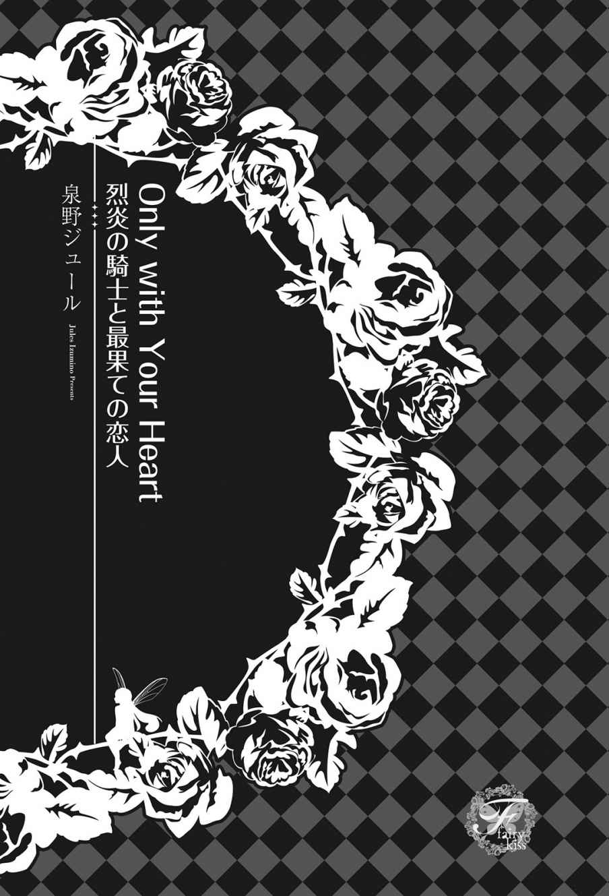
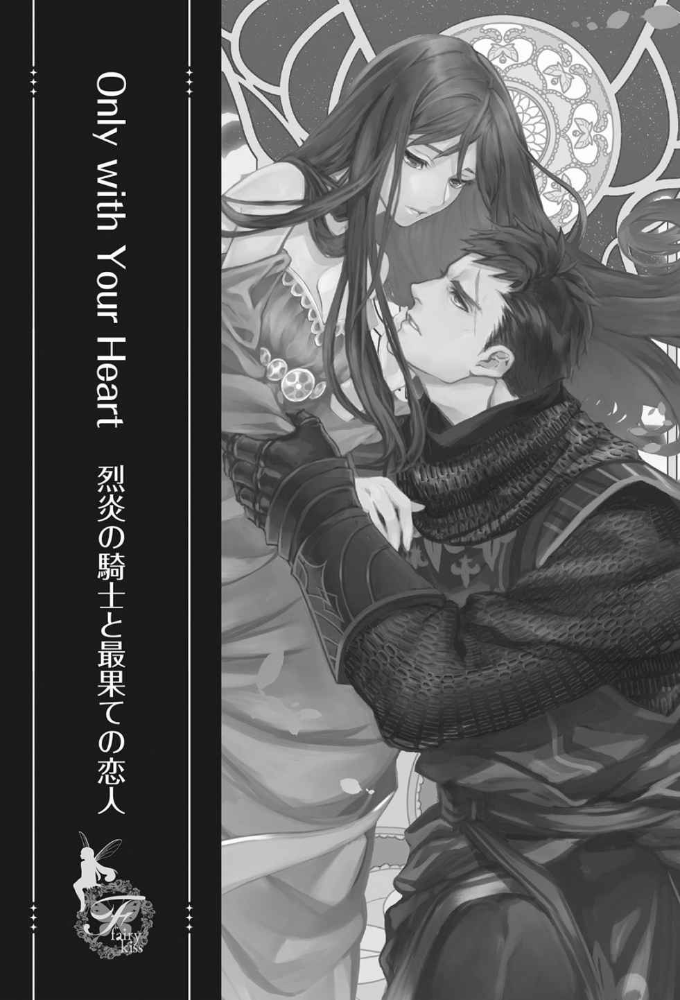
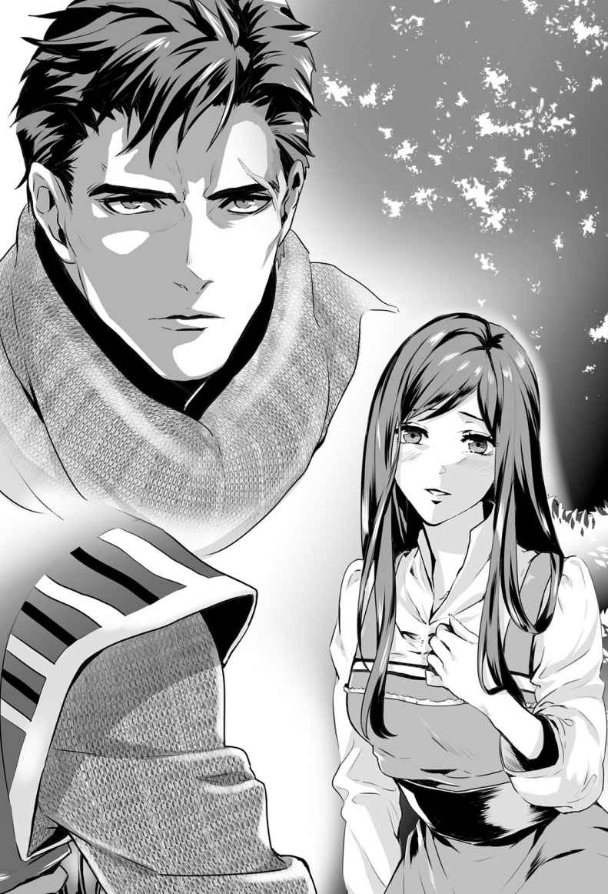
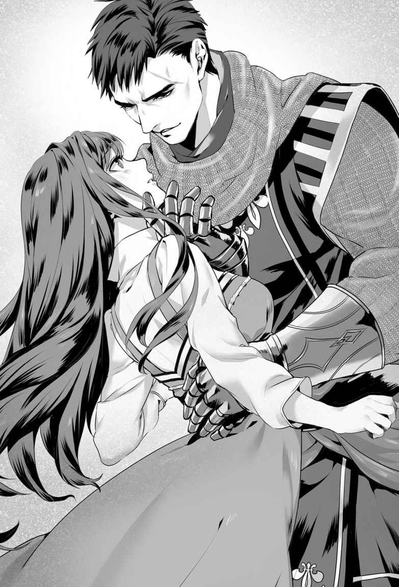
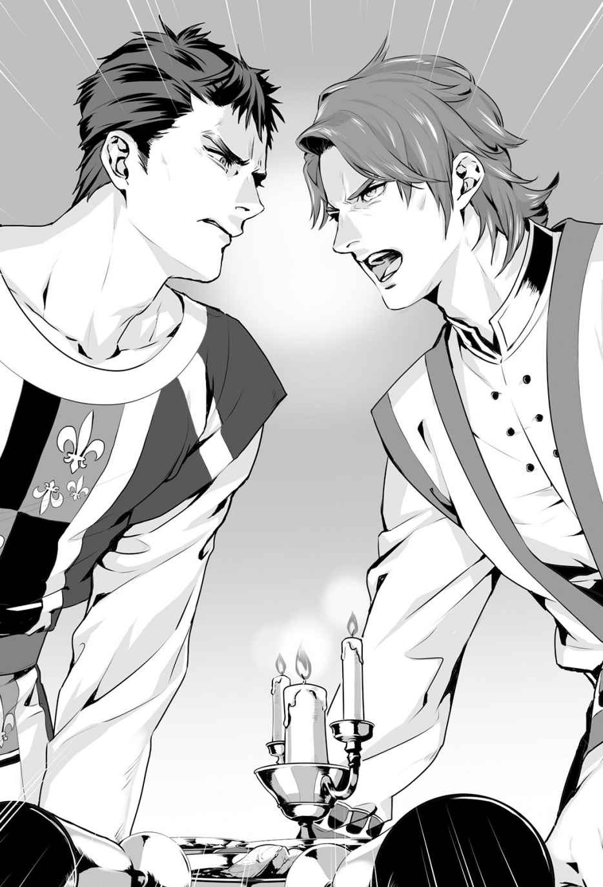
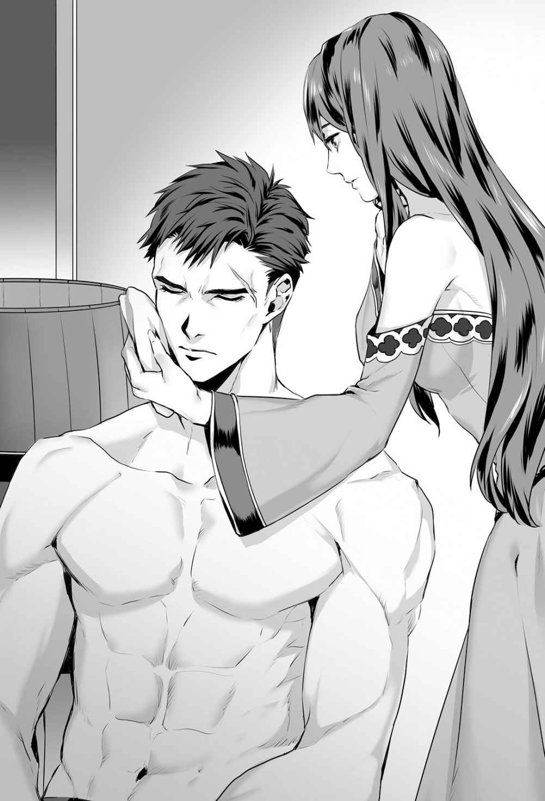
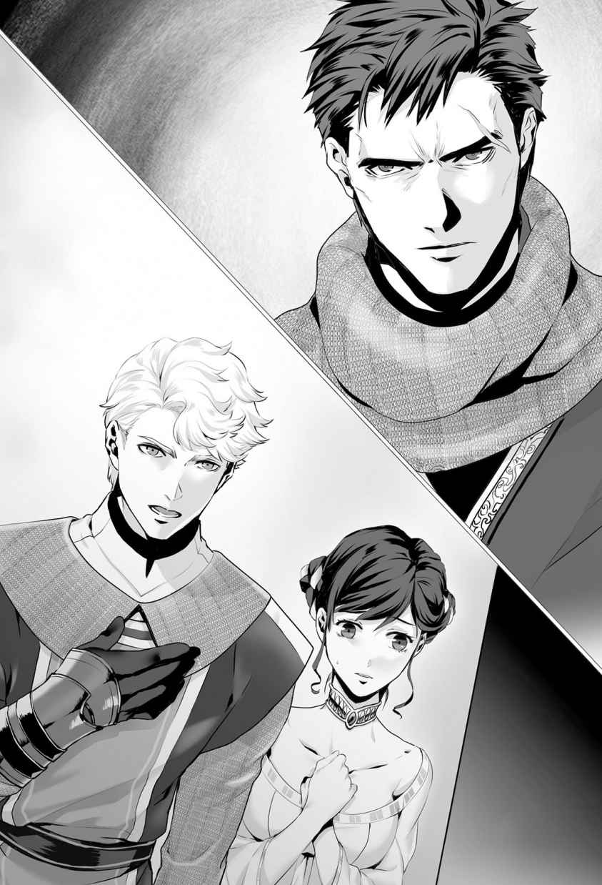
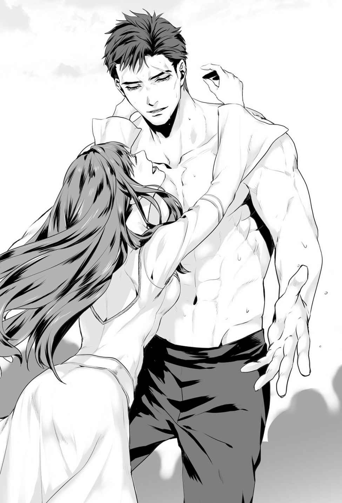
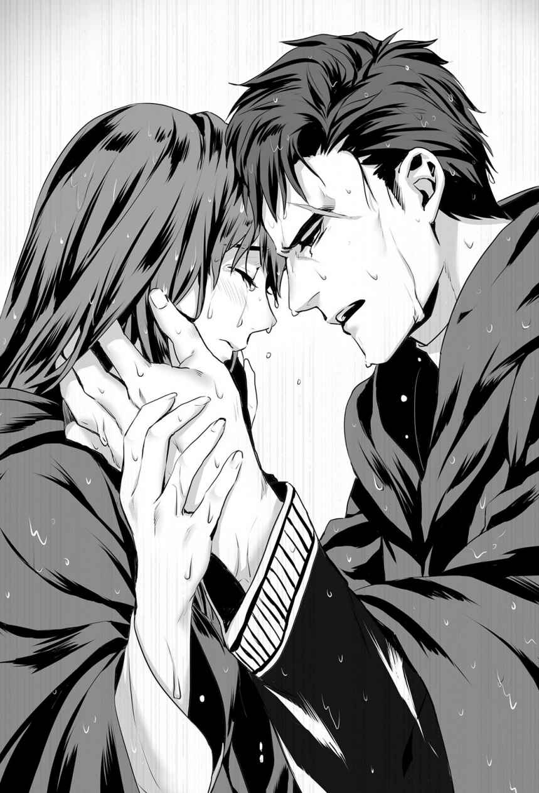
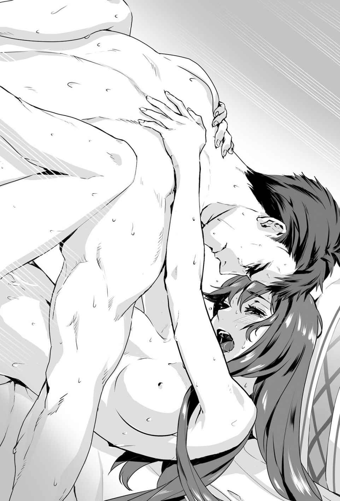

| Only with Your Heart【SS付】【イラスト付】 ～烈炎の騎士と最果ての恋人～ (フェアリーキス) | |
| 泉野ジュール | |
| 株式会社ジュリアンパブリッシング (2017) | |

この作品はフィクションです。
実際の人物・団体・事件などに一切関係ありません。

プロローグ
千 鶴 はいつだってルクロフを美しい男性だと思ってきた。短く切り揃えられた漆黒の髪、男性的な輪郭と彫りの深い顔立ち、そして背の高い全身からほとばしる情熱と力強さ。
しかし、なによりも千鶴を惹 き付けたのは、彼の心だった。義理深く誠実で、いっけん冷たく思えるほど冷静沈着なのに、時には炎のように熱く情熱的になれる不思議な人。
それがルクロフだった。
「は......あぁ......んっ」
ルクロフの大きな上半身に組み敷かれ、白いシーツの広がる地面の上に横たわりながら、千鶴は執 拗 で細やかな愛 撫 を受けて全身を震わせた。筋張った手が千鶴の胸を包み上げ、敏感になった頂を指先で何度ももてあそばれる。
ルクロフのような男性に愛されて、幸せに胸が熱くならない女性などこの世に存在しないだろう。この世界でも、どの世界でも。
あまりの快感に息苦しくなって、千鶴は涙目でルクロフの表情を覗 き込んだ。優しさと激情のないまぜになった深い黒の瞳が、じっと千鶴を見下ろしている。
「愛してる......。どこにも行くな。ここで俺と生きてくれ」
やっと聞き取れるくらいの低くてかすれた声だった。でもその響きには、魂を揺さぶられるくらいの力強い意思が込められている気がした。千鶴はわずかにうなずいてみせたが、ルクロフはそれだけでは満足しなかった。 硬く膨らんだ胸の頂を、今度は強く口に含まれて、甘く吸い上げられる。
「ああ......ん！」
闇の中で花火が炸 裂 し、きらめきながら飛び散っていく幻想を瞼 の裏に見た。ルクロフの温かい舌が、千鶴の感じやすい愛撫を熟知した動きでゆっくりとまさぐる。息が切れる。熱い。
それだけではない。ルクロフは指で千鶴の入り口が濡 れているのを確認すると、硬くそそり立った彼自身をぐっと深くうずめた。
千鶴はすすり泣きをもらしながら、ルクロフを受け入れた。体中の神経という神経が、彼に愛される喜びにもだえ、酔いしれている。
ひとつに重なり合うふたりの肉体が、ロウソクの明かりに照らされて野営のテントの布地に薄暗い影を作っていた。けぶるような火の匂いと、やわらかな土の香りが辺りに充満している。
ルクロフの世界の匂いだ。
現代日本では嗅ぐことのない、原始的な香り。
千鶴だってルクロフを愛している。ずっと、この命が続く限り彼のそばにいたいと願っている。
汗ばんだ肌がぴったりと触れ合い、ルクロフは全身全霊をかけて千鶴の内部を貫いていた。荒く乱れる呼吸の合間に、千鶴はささやきで答えた。
「うん......あなたと、生きていくから」
切望し飢えていたルクロフの瞳に、やっとひとかけらの安 堵 が浮かんだ気がした。ルクロフは身をかがめ、両手で千鶴の背をぐっと引き寄せると、さらに深層まで押し進んでくる。
そして、熱を帯びた乾いた唇が千鶴の湿った唇を塞ぐと、ふたりの呼吸がしっとりと混じり合った。もはや堪 えきることはできなかった。千鶴は迫り来る快感のさざ波に身を預け、恍 惚 の瞬間を迎えて震える。
千鶴が達したのを見届けると、ルクロフは動きを早めて息を荒くし、自らも最後の瞬間を迎えてくぐもったうなり声をもらした。
「チヅル」
異世界の者である彼に、この和風な名前は呼びづらいらしかった。いつもほんの少し外国風の発音で呼ばれて、その度に不思議と胸が躍る。
行為が終わっても、ルクロフは千鶴を離さなかった。それどころか、さらに優しい動きで素肌をなでられ、あちこちに口づけを受け、甘い言葉で愛を与えられる。
溢 れる想 いを持てあましながら、千鶴は静かに目を閉じた。
ちょうど一年前、高校最後の夏休み中だった綾 瀬 千鶴は異世界に召喚された。
不思議な声に呼ばれて、不意に返事をして振り返ると、光の洪水にさらわれるように包まれてこの世界へ飛ばされた。この世界に属さない者しか殺すことができないとされる伝承の、凶悪な竜を仕留めるための巫女 として。
そして先日、千鶴はついにその役目を果たしたのだ。
「どこにも行くな。ここで生き、俺のそばから離れないでくれ。この世界のどの女も、これほどに愛されたことなどないというほど、お前を大切にしよう」
祈るように紡がれるルクロフの言葉に、千鶴は目に涙を浮かべながらうなずいた。
ルクロフ。千鶴が初めて心から愛した人。初めて、無 垢 だった身を預けて、女として愛される喜びを教えてくれた男性。烈炎の騎士と呼ばれる最強の戦士。冷たくて硬い殻の中に隠された心は、誰よりも愛情深くて誠実で、情熱的な恋人。
裏切る気なんて、微 塵 もなかった。
あなたと共に生きていきたいと、わたしも願っていた。どうか許して。そしてどうか、わたしを忘れないで......。
第一幕 帰還
冷たい水が数滴、ほおを叩 くようにポツリ、またポツリと落ちてくるのを感じて、千鶴は無意識に眉をひそめて身を震わせた。
目を硬く閉じたまま息を吸うと、冷えた空気が喉を洗うようにすっと入り込んでくる。手を伸ばして、体を温めてくれる毛布はどこへ行ったのかと探ってみても、指先に感じるのは湿った衣類の手触りだけだった。
湿った衣類......？ 冷えた空気？
千鶴の意識は夢の中からゆっくりと現実へ浮上してきた。
つい昨日、二ヶ月前に亡くなった祖母の墓参りをして、その後に高校時代からの親友・舞 と食事をしたのを覚えている。その帰り道に雨に降られて、泣き出したい気分で帰路を急いでいる時、そうだ、再びあの『声』を聞いた。
心臓がどくりと音を立てて高鳴り、千鶴は慌てて目を開いた。
視界に飛び込んできたのは、いくつもの杉に似た木が林立する、森のような場所だった。地面は濡れそぼった落ち葉に覆われて赤茶色に染まっている。ほんの数メートル先は白い霧に包まれて薄らいで見え、木々の間からもれ落ちる日の光は、霧に包まれてまるでオーロラのように輝いていた。
落ち葉に埋もれるように横たわっていた体をゆっくりと起こした千鶴は、思わず息をのんでその場に硬直した。生々しい野鳥の鳴き声が、どこか遠くから警笛のように響いてくる。
どう控えめに言っても、現代の日本によくある情景ではなかった。ありえないほどの静寂と、時々それを裏切るような生き物のさえずりが聞こえてくる以外、例えば自動車や電車のような人工の騒音はまったくしない世界だった。
まさか、まさか、まさか。
千鶴はさらに注意深く周囲を見回して、自分が置かれた状況を確かめようとした。
服は、日本にいたころのままだ。落ち葉の湿気を吸ったのか、すっかり湿ってはいたけれど。持っていたバッグも傘も消えていて、あるのはこの身ひとつだけのようだった。
そう、まるで、前回ルクロフの世界に来た時と同じように。
（帰って......来たんだ！）
まだ誰に会ったわけでも、なんの証拠を見たわけでもないのに、千鶴はそう確信した。ひんやりと澄んだ空気は肺に懐かしく馴 染 み、膨らむ期待に心臓はありえないほど高鳴る。
これほど綺 麗 な空気は元の世界では味わえない。千鶴は落ち葉の上に座り込んだまま、その清涼な空気を吸えるだけ吸い込んだ。
一年と二ヶ月前──この世界を恐怖に陥れていた悪竜を仕留める使命を果たした後、千鶴は『声』に問われた。元の世界に帰りますか、それともこの世界に留 まりますか、と。
千鶴の心は決まっていた。悪竜討伐のために組織された騎士団の長であり、千鶴がこの世界に飛ばされてからずっと彼女を守ってくれた漆黒の髪の騎士......ルクロフと、この世界で共に生きて行くことを。
しかし『声』は、残酷な現実を千鶴に突き付けた。
千鶴には祖母がいる。両親が交通事故で夭 折 した後、まだ幼かった千鶴を引き取って育ててくれた人だ。優しく、たおやかであるが芯が強く、千鶴の憧れであり母代わりであり、親友でさえあった唯一の肉親。その彼女が元の世界で、行方不明になった千鶴を心配するあまり、もともと弱っていた心臓をこじらせ死の淵 にいるというのだ。
千鶴は混乱のあまり、思わず『声』に向かって懇願を叫んだ。帰らせてくれ、祖母の元に、わたしを戻してくれ、と。
ルクロフには別れを言う時間さえなかった。
元の世界に戻った千鶴は、祖母が亡くなるまでの一年間を看病に費やすことができた。その後、契約社員として小さな会社で事務の仕事を始め、少しずつ現実の世界へ戻って行くことを学んだが、当然ルクロフのことは忘れられなかった。
そして昨夜。千鶴はついにまたあの『声』に呼ばれたのだ。もちろん一も二もなく声にすがり、帰して欲しいと叫びをあげた。そして今にいたる......。
しかし、その感慨に浸っていられる時間はそう長くはなかった。
他に人間らしい存在のいない深い森の中でたったひとり、いつまでもぼうっとしていてもなにも始まらない。日はまだ高かったが、午前中なのか午後なのかは予想がつかなかった。日が暮れてしまえば光源の一切ない完全な闇になってしまうのを経験から知っていたから、千鶴はとにかくどこかを目指して歩き出すことにした。
とりあえず、季節は冬ではないようだ。
湿った衣服に包まれて肌寒くはあったが、凍えるというほどではない。地面に紅葉した後の落ち葉があることを考えると、日本でいう秋あたりに当たるのだろうか。十月だったから、もしかしたら同じくらいの季節なのかもしれない。
そう思うと、千鶴は少し落ち着いた。
もしかしたら、こちらでも向こうと同じ一年と二ヶ月しか経 っていないのかもしれないと思えたからだ。前回は、こちらの世界では一年が過ぎていたのに、日本へ帰って来たらひと月しか経っていなかった。どういう時空のずれがあるのか分からないが、気まぐれに時を選んでいるだけの可能性もあるから、千鶴はそうであることを願った。
もしも、こちらの一年が日本の一ヶ月に相当するのであれば、この世界ではすでに十四年の歳月が経ってしまったことになる。
十四年。
ルクロフ......。
彼は、千鶴を待ってくれているだろうか。
帰って来る約束をしたわけでもない自分を。たった一年間だけの付き合いだったふたりの関係を、彼はどれだけ守ってくれているだろう。
彼は千鶴を愛してくれていた。
そして彼は、一度愛した女性を簡単に忘れるような人間ではない。
でも、黙って消えた千鶴に対して怒っている可能性は高い。そんなつもりは毛頭なかったが、彼からしたら、裏切られたようなものだったのだから。
はい、帰って来ました、また会えて嬉 しいです、お付き合いを再開しましょう、と単純にはいかないかもしれない。
十四年。これだけの年数を、たった一年間一緒に過ごしただけの相手に......それも彼からすれば裏切られたような別れ方をした恋人に、捧 げることができる男性がいるだろうか？
そもそもルクロフ本人の元へきちんとたどり着ける保証はどこにもないのだ。前回はルクロフ達 のほうが、突然異世界に放り出されて呆 然 としている千鶴を見つけ出してくれた。
でも、今回は......？
当時、彼は千鶴より四つ年上の二十二歳だったから、そうなると今は三十六歳になる。時代が中世並みだったことを考えればなおさら、もうとっくに結婚していて当然の年齢だ。確か、特に庶民は、十代後半で結婚して子供を持ち始めるような人が多かったのを覚えている。
やっとルクロフの元へたどり着いてみたら、彼はすでに結婚していて子供もいて、千鶴はもうただの思い出で、今となっては厄介者でしかなくなっていても不思議ではない。むしろ、それが当然かもしれない。
深い森の中をただひとり歩き続けながら、いつまでも代わり映えのしない風景を前に、千鶴はだんだん不安に押しつぶされそうになった。
でも、それでも。
千鶴はルクロフに会いたい。たとえそれが、ルクロフが他の誰かと幸せになっている姿を見せ付
けられるだけの結果になっても、ああやってなにも言えずに別れてしまったことを謝りたい。それだけのためにでも、千鶴はすべてを捨てることができた。
そして歩いて、歩いて、歩いて。
さらに歩き続けていると、どこか遠くから今まで聞こえなかった水のせせらぎのようなものが響いてきて、千鶴の足は考えるより先にその音源へ向かって進み始めていた。
ささやかではあったが、確かに水が流れている音に違いなかった。
落ち葉のほかに雑草が膝辺りまで生い茂っている一帯へ入り込んでしばらく進むと、足元に細い小川を発見した。深さは三十センチもない、幅だってせいぜい五十センチくらいの小さな流れだったが、水の色は綺麗に澄んでいていい香りがする。
千鶴は川辺に膝を折り、温度を確認するとそのまま手ですくって水を飲んだ。
冷たくて、香ばしくて、柔らかい水だった。
渇いた喉が潤っていく快感は何事にも代え難く、千鶴は夢中になって何度も水を口元に運んだ。途中で少し顔や首を濡らしたりもして、長時間の徒歩で汗ばんでいた肌を拭うと生き返るような心地だった。
水。
ああ、水！
これほど生きとし生けるものを支え、力を与えてくれるものはないと、その時の千鶴にはしみじみと感じられた。疲れていた体中の神経と繊維が再びほぐれ、不安と緊張も消えていく。無心に歩いていた時に頭をもたげてきた悩みや心配は去り、これから先の希望が見い出せる気がした。きっとなんとかなる、と。
千鶴はそのまま川辺に腰を下ろし、束の間の休憩を取ることにして一息ついた。
清涼な水のせせらぎと、その水源を求めて寄って来るらしい小鳥達の鳴き声が、優しく耳をくすぐる。気がつくと千鶴は目を閉じていた。
そして、ほんの一時のつもりで眠りに落ちた。
ゆさゆさと不自然に体が揺すられるのを感じて、千鶴は目を覚ました。
揺れはいつまでも定期的に続いているようで、千鶴が目を覚ましたからといって収まることはなく、時々、体全体が飛び跳ねるような衝撃さえ襲ってくる。腰や背が痛み、あまりいい気分ではなかった。
（腰、痛い......なにこれ......？）
不審に思って目を開くと、まず視界に入ってきたのは夜空だった。
つまり千鶴は、あのまま日が暮れるまで寝入ってしまったわけだ。いけない、と自分を叱責しても後の祭りで、空には満天の星が踊っている。
そして......。
「おぉ、お嬢さんよ、こりゃいいところで目を覚ましたな。もうすぐ俺の城に着くぜ」
千鶴は短い悲鳴をあげた。
目の前にはなんと、月明かりを浴びてニヤリと微 笑 む熊のような大男がいて、面白そうに千鶴を見下ろしていた。もじゃもじゃに縮れて乱れた髪が頭からあごまでをびっしりと覆い、眉までが同様の毛に縁取られていて、強烈な汗の匂いがする男だった。歳は不明だったが、多分、サンタクロースが一年ほど風呂に入らないとこんな容貌になるのではないだろうか。
「おっと、暴れないほうが身のためだぜ、べっぴんさん。俺はあんまり気の長いほうじゃないんでね。痛い目は見たくないだろう？」
「な......っ」
興奮に息を荒げ、周囲を確認するように辺りを見回すと、どうやら千鶴はこの熊男の馬に乗せられているようだった。薄汚れた布に体を包まれ、落馬しないようにしっかり抱きかかえられていたが、マナーも容姿も紳士や騎士のそれとは程遠い男だ。
辺りが月と星しか光を与えてくれない暗闇だったから、はっきり見えなかったが、熊男の他にも数騎の馬の足音が聞こえる気がした。部下かなにかを連れているのかもしれない。
「わ、わたしに、な、なにをする、つ、つもりなの？」
情けないことに、千鶴の声は恐怖に引きつり、震えた。熊男はそんな彼女の反応を楽しんでいるようだった。
なるほど、いかにも女性をいじめて楽しみそうな容貌の男ではある。
熊男は黄ばんだ歯をちらつかせて笑ってみせた。
「あんたはべっぴんさんだし、俺達は男ばかりで女に飢えてる。やることなんて決まっているだろうが！」
千鶴はカッとなって、即座に男の腕から逃げようともがいたが、太い腕はがっしりと千鶴を掴 んで離さなかった。ガハハというしゃがれた笑い声が髭 に覆われた口から豪快に放たれ、千鶴にこれ以上ないほどの嫌悪感を与えた。
「はっ、離して！」
「と、言いたいところだが......あんたは黒髪で、黒い目で、この辺ではちょっと見ない変わった顔立ちをしている。背格好もどんぴしゃりだ。ちびっと歳は若すぎるがなぁ」
「か、顔立ち？」
熊男はどこか嬉しそうに続けた。
「もしあのクズ野郎の機嫌がよけりゃ、俺たちゃ、ちょっとした身代金を取れるかもしれねぇ。そんなわけで、それまであんたは俺達の捕虜みたいなもんだ。手はださねぇよ。姫さんみたいな扱いをしてやるわけでもないがな」
その時、どこからかホー、ホー、というフクロウの鳴き声が妙に大きく耳に届いた。
千鶴は唇をきゅっと結び、怒りと屈辱に耐えた。もちろん真っ直 ぐにルクロフの腕の中に帰れるとは思っていなかったけれど、まさかこんな。いきなり、どこの誰とも知れぬならず者連中に、なにかの商品のように扱われるとは。
こらえようとしても、涙がせり上がってくるのを止められなかった。
「おっと、泣くこたねぇよ。あの冷徹公爵はよ、その昔は救国の英雄だとか言われてチヤホヤされてた偉丈夫だぜ。今はもうこの田舎を治めるだけの引き篭 もりだがなぁ」
「え」
熊男の言葉に、千鶴の息が止まった。
救国の......英雄......？
「そ、それは......誰なの？ い、いったい、いつの話なの？」
つっかえながら矢継ぎ早に放たれる千鶴の質問に、熊男は眉を上げて驚いた顔を見せた。まるで千鶴がそんな話に興味を持つとは思っていなかったようだ。
熊男は片手でもじゃもじゃの髭をなで、なにかを考えているようだった。
「もう十四年は経つだろうな......当時はそうとう騒がれて持ち上げられていたが、今じゃ汚れたもんだ。黒の暗殺者って呼ばれてな」
千鶴はさらに言葉を失った。
十四年。千鶴の計算とほぼ同じ。そして、救国の英雄。
しかしなぜ『暗殺者』？
「王国を救った英雄さんは、実は金と女に目が眩 んだだけの殺人鬼だったってわけだ。奴 が国王の手先になって殺 った人間は、百を下らないと言われているぜ。今は田舎屋敷で大人しくしてるがなぁ......」
そう言って、熊男はさらに声をあげて笑った。なにがそんなに面白いのか千鶴にはさっぱり分からなかった。
再び、フクロウの鳴き声がどこからか暗闇に響いて、千鶴をさらに不安にさせた。
熊男は名前をロドルゴといって、森を抜けた先にある落ちぶれた小さな集落の頭 的存在であるらしかった。
「あのクソ野郎が国王の差し金でここに来る前はよぉ」
ロドルゴはまるで自慢話をするような恍惚とした瞳で、暗く湿った集落を見回している千鶴に教えた。
「この地方一帯は全部、俺が支配してたんだぜ。それが今じゃ、あの澄ました顔した元英雄さんに乗っ取られて、この一辺で細々とやっているだけだ」
月明かりしかなくてもその貧相さがうかがえる、うらぶれた人家が十数軒建っているだけのさびしい場所に、千鶴は連れてこられていた。道の舗装はもちろんなく、建物も家というより掘っ建て小屋に少し色をつけただけの代物が並ぶばかりだ。ただ、その中に一軒だけ他よりも大きな石造りの屋敷があって、それがロドルゴの言う彼の「城」だという。
千鶴は必要以上の抵抗を止めていた。
もしかしたらこのロドルゴが、千鶴をルクロフに引き合わせてくれるかもしれないという淡い希望があったからだ。
ロドルゴは屋敷の扉のかんぬきを、ガタゴトとやかましい音を立たせながら自分で開けた。そういうことをしてくれる使用人のような存在はないらしい。一緒にいた部下らしき数人は、なにも言わずに各々の家へ消えていた。
扉が開くと、中はむっとする古い干草の匂いが充満している。
ロドルゴは千鶴の腕を掴んで、屋敷の中へ引っ張り込んだ。
「さあ入れ！ おい、ドローテ、さっさと起きろ！ 俺が帰って来たぞ！」
そんなに大声を出さなくても聞こえるだろうに、ロドルゴは大 袈 裟 に声を張りあげて帰還を告げた。屋敷の中は真っ暗で、外と同じくらい冷え冷えしている。
しばらくすると、どこか上のほうからゴソゴソという物音が聞こえてきて、角灯 の明かりを掲げた背の低い中年女性がぬっと階段から下りて来た。その不気味な登場に、千鶴は小さく悲鳴をあげて飛び上がってしまった。
「なんだい、客でも連れて来たのかい......。あんたも物好きだね。ここには芋以外に食うものはなにもないよ」
中年女性は聞き取りにくいほど低い声で、ゆっくりと喋 った。
「こいつぁ、ただ遊びで連れて来たんじゃねぇよ。あの冷徹公爵から身代金を取れるかもしれねぇ、上玉だ」
「身代金だってぇ？」
角灯をさらに高く掲げながら、ドローテと呼ばれた中年女性は引きずるような足取りでのそのそと千鶴に近づいて来た。千鶴からもドローテがよく見えるようになる。そんなに高齢ではなさそうなのに、肌は皺 だらけで、髪も半分以上が白い。まるで魔女のような女性だ。
「あの男はもう、とっくの昔にその天女さんを探すのを止 めたんじゃなかったのかい」
ドローテは呆 れたようにそう言い、無遠慮に千鶴の腕や腰を触ってきた。
間近で口を動かすのを見て気がついたが、どうやらドローテは大部分の歯が抜けているらしかった。聞き取りにくい喋り方をするのはそのせいかもしれない。
とりあえず、千鶴は黙っていた。
ドローテもロドルゴも粗野で無作法ではあったが、今すぐ千鶴をどうこうしようとするような悪意は感じられなかったからだ。
ひとしきり千鶴を観察し終わると、ドローテは深いため息を吐 きながら角灯を台の上に置いて、なにかもごもご言いながら部屋の奥のほうへ消えて行った。
「俺にも酒を用意しろよ！」
ロドルゴはそうドローテの消えたほうへ向かって怒鳴っていたが、返事はない。
数分後、毛布らしき布の塊を脇に抱えたドローテが戻って来て、それをどさりと千鶴に押し付けた。埃 が舞い、強烈なカビの匂いがした。
「飯も酒も後だよ。お嬢さん、あんたはわたしの部屋の床で寝るんだね」
ロドルゴはぶつぶつと文句を言っていたが、どうやら彼女の決定には逆らえない部分があるらしい。再び角灯を掲げたドローテに強く手を引かれ、千鶴は階段を登ることになった。
階段は狭い上に、石造りの床は均一ではなかったから、千鶴は何度か転びそうになってドローテにぶつかったが、この中年女性は見かけ以上に力があるらしかった。ぐいぐいと引っ張られ、気がつくと小さな寝室らしき部屋へ入れられていた。
「ここだよ。腹が減ってるだろうが、それは朝まで待つんだね」
千鶴はうなずきながら部屋の中を見回した。
といっても、見るようなものは少なく、人間の顔ほどのサイズの小さな窓が壁にひとつ、擦り切れた絨 毯 が床に一枚、干し草を詰めたらしい質素なベッドがひとつあるだけの狭い空間だった。ドローテは部屋の扉にかんぬきをかけ、鍵を回した。
「逃げようなんて考えるんじゃないよ。まぁ、わたしはちっとも構わないけどねぇ......」
そう言うと、ドローテはふっと息を吹いて角灯の明かりを消し、さっさとベッドへ潜り込んでしまった。少し黙っていると、すぐに不健康そうなイビキが大きく部屋に響く。
千鶴はため息を吐き、ドローテから渡されたカビ臭い毛布を抱きしめながら絨毯の上に座った。
（本当に......帰って来ちゃったんだ......）
中世のような世界。
荒っぽいのに人間味のある人々と、広大な自然。
言葉は日本語ではないはずだが、千鶴はなぜか不思議とそれらを理解でき、相手も千鶴の言っていることを理解してくれた。超常的な自動翻訳のようなものだろうか......千鶴が時空を超えた時、言語能力も一緒になにかの変化を遂げたのかもしれないと、そう曖昧な理解をしていた。前回もそうだったからだ。
（でも、黒の暗殺者に、冷徹公爵......）
千鶴はまだ、そのルクロフかもしれない人物の名前を、ロドルゴにもドローテにも聞けないでいる。もし違っていたらと思うと怖かったし、変に深く質問しすぎて身分を怪しまれるのも避けたい。今の千鶴には、もしかしたらその人物がルクロフかもしれないという希望しかないのだ。
公爵、というのは分かった。
当時のルクロフは、男爵家の嫡男だったという以外の身分はなにもなかったけれど、十四年も経っていれば出世している可能性は高い。詳しく知っているわけではないが、確か男爵と公爵ではかなりレベルが違うと思うが......彼の功績を思えば、ありえないことではないだろう。
でも、『冷徹』。
そして『暗殺者』。
確かにルクロフは、いわゆる明るい人ではなかった。曲がった見方をする人には、彼の冷静さは冷徹と映ることもあるだろう。彼は確かに男爵家の嫡男の生まれであったが、まだ剣帯を許されたばかりの幼いころ、家を焼かれ両親を殺され、孤児同然の身となって放浪した後、自力で騎士として身を立て直した経歴があった。でも、暗殺者......。
（きっとなにかの誤解よ、ね？）
ここは新聞もなければ、本でさえろくに普及していない世界......。噂 や醜聞は人から人へ口伝えに届くばかりで、どんな見聞も簡単に誤解されたり誇張されたり、果てはまったく違う内容になって広まっていく。
多分、千鶴が去った後、国王の反逆者をルクロフが成敗したことがあったりして、それが大袈裟に語られてしまっただけではないだろうか。
（きっとそう......。きっと......）
千鶴は暗闇で毛布を広げると、それで体を包むようにして絨毯の上に寝そべった。
まだ冬ではないとはいえ、真夜中、石畳の床で毛布一枚は冷えたが、文句を言う気は起きなかった。千鶴の心はルクロフとの思い出と、これから先の期待と不安とで、熱くたぎっていたから。
第二幕 再会
朝の到来を告げる小鳥の鳴き声が耳をくすぐり、窓からもれる朝日がうららかに部屋を照らしていた。
千鶴はうっすらと瞼を持ち上げようとしたが、ちょうど顔に陽 が当たっていたらしく、眩 しくて何度も瞬 かなくてはならなかった。
朝......が来たのだ。
この世界に戻って来てから最初の朝が。
絨毯の上で軋 んだ体を伸ばしながら毛布をめくり、ゆっくり立ち上がると、千鶴は小さな部屋をぐるりと見回した。しかし、ベッドの上は空っぽでドローテは見当たらない。かわりに屋敷の中のどこかから人が動いている物音がしたので、注意深く神経を研ぎ澄ませてみると、甘ったるい食べ物の香りが下階辺りから漂ってくるのを感じた。
体は正直で、甘い香りに誘われたお腹がぐぅと音を立てる。
千鶴は閉まっている扉の前まで来て、半信半疑で前へ押してみた。ところどころ腐りかけた木の板でできた扉は、軋んだ音を響かせながらも、特にこれといった抵抗もなくあっさりと開くではないか。
「あ、あのー......出てもいいんですか？」
あんまり拍子抜けして、千鶴はつい声に出して聞いてしまった。返事はない。
つまりこれといった反対はされなかったわけで、空腹もあり、千鶴は恐る恐る部屋の外へ出てみた。昨夜は暗闇で見えなかった屋敷が、窓からもれ入る光で照らされている。
ありていに言って、ロドルゴの屋敷はボロかった。
ボロボロ、と二回繰り返して言ったほうがしっくりきそうな、悲惨な有り様だ。建物そのものは石造りだったが、表面はざらざらとしていてきちんと磨かれておらず、あちこちが欠けている上に、床も壁も真っ直ぐではない。部屋の入り口に取り付けられた木の扉は、なくても構わないのではないかと思えるほど、あちこちが腐ってはげ落ちている。
（そういえば......ルクロフ......かもしれない人に追い払われて、細々やってるだけって言ってたっけ）
とりあえず屋敷はあちこちを詮索する必要があるほど大きくはなかったので、千鶴は簡単に一階へ下りる階段を見つけることができた。
千鶴が顔を出すとちょうど、ドローテが木製の机の上でなにやら薄い灰色のスープらしきものを飲んでいるところだった。千鶴を見ると顔を上げる。
「やっと起きてきたね......」
「は、はい」
「昨夜も言ったが、ここには芋以外食うものはほとんどないよ。台所にこれがあるから、欲しけりゃ自分で持って来るんだね」
そう言って、ドローテはスープ皿を掲げてみせた。
甘ったるい匂いとドローテの言葉から想像するに、それはなにかの芋でできたスープなのだろう。しばらく日本の豊富な食事情に慣れていた千鶴には、ちょっとした衝撃だった。
「そうします。ロドルゴさんは居ないのですか？」
「あの男ならもうとっくに食って、朝一番で出かけて行ったよ。うちの駄馬じゃ、ここから公爵の城まで三日はかかるからねぇ......」
三日......。
つまり、行き帰りを想定すると、ルクロフかもしれないその公爵に会えるのは短くとも六日後になるわけだ。もしかしたらそれまでずっと、このドローテとふたりきりで芋スープだけで生きていかなければならないのかもしれない。
千鶴はため息を吐いて、台所へ続くと思われる廊下に入って行った。
そして目に入った調理場らしき小部屋には、もちろん冷蔵庫もなにもなく、石の調理台の上に土のついたままのジャガイモ風の芋が山になっている他は、鉄の鍋が竃 のような設備の直火の上に掛けられているだけだった。千鶴は鍋の中のスープを手近にあった木のボウルによそい、ドローテの元へ戻った。
ドローテは千鶴が戻って来ても、顔も上げずに黙々とスープをすすっている。
とりあえず千鶴も彼女を見習うことにした。幸い、時間だけは有り余るほどあるようだし。ゆっくり時間をかけて意外にも美味なスープを飲み終えると、千鶴はドローテと向き合った。
「あの......少し聞いてもいいですか」
食べ終わるころを見計らって千鶴が尋ねると、ドローテは無言でボウルを机の上に置き、鬱陶しそうな目をこちらに向けてきた。千鶴が今から逃げようとしても彼女は追って来ないだろう。そんな乾いた視線だった。
「その、公爵という人について。ロドルゴさんによれば、元は国の英雄だったとか、国王の命でこの地域に新しく来たとか......そんなことを」
ドローテの顔が邪険に歪 んで、唇の隙から残り少ない歯がちらりと覗いた。
「ふぅん、気になるのかい？ まぁ、そりゃあそうだろうね。お前さんはあの男に売り渡されることになるかもしれないんだから」
売り渡される？
ずいぶん物騒な物言いだが、身代金云 々 を考えてみると、端的にはそういうことになるのだろうか。千鶴はごくりと息をのみながら、ドローテの言葉にうなずいた。
ドローテはふいと千鶴から目を離し、どこか宙を眺めるように視線を泳がせた。そして彼女独特のゆっくりとした口調で話し始める。
「この国にはそう遠くない昔、悪竜がいた......。それは知っているかい」
「ええ。黒い鱗 に覆われて、恐ろしいほど鋭利な牙と爪と、五つの頭を持ち、真夜中の空を飛び回って人々を殺したという竜ですね」
その巨大な野獣を目の前にした時のことを思い出しながら、千鶴は身震いした。
この世界はいわゆる「剣と魔法」の世界とは少し違う。魔法の類はまったくなかった。中世並みの時代だから、武器としての剣はもちろんあるけれど、それが魔術を秘めたりはしない。千鶴のような現代人から見れば怪しげな伝承や風習が少しある程度で、人はあくまで普通の人でしかなかった。動物も植物も、元の世界とほとんど変わらない。ただひとつの例外が、その悪獣......そして、それを退治するために異世界から召喚された巫女の存在だった。
千鶴だ。
悪竜はこの世界に属さない、異世界から来た人間の手によってしか殺せないとされ、ルクロフを始めとする騎士団に守られた千鶴がこの竜の心臓を剣で突いてすべてを終わらせたのだ。
ただ千鶴の存在は、騎士団内と国王以外には極秘で、悪竜はルクロフと騎士団が仕留めたことになっているはずだった。
実際、千鶴は最終的に手を下しただけで、それまではひたすら守られているばかりだったし......。
「そこまで知っているなら、その悪竜を倒したとかいう男の噂も知っているね」
千鶴はうなずいた。
「つまり、例の公爵はこの男の成れの果てなのさ。当時は英雄として散々もてはやされたものの、金だか女だかに目が眩んで、国王の手先......刺客みたいなもんになって手を汚し続けた。そして四、五年前、ついに飽きたのか疲れたのか、田舎に引っ込むことにしたんだよ。国王からこの辺一帯の領地権とずいぶんいい爵位をもらってね」
ドローテの声がほんの少し上ずる。
「口止め料みたいなもんじゃないかい。相当汚いことをやってたんだろうね」
千鶴は言葉を失って、ドローテの目元に刻まれた皺にじっと見入った。
どこからどこまでが真実かは定かではない。でも、まったくの嘘 八百とは思えなかった。
なにも答えられずにいる千鶴にちらりと視線を戻すと、ドローテはにんまりと笑ってみせた。
「それだけじゃない。知っているのは一部の人間だけだろうけど、実はこの男には変な性癖があってね、黒髪に黒い瞳の、少し異国風の顔をした女に目がないんだ......。そういう女がいると、国中どこへでも出て行って、時には大金をはたいてでも手に入れようとするとかね......」
まさにそんな容姿をした千鶴をじろじろと眺めながら、ドローテは、ヒヒヒ、という不気味な笑い声をもらした。
「ま、そんな女は滅多にいない......。天女みたいなものだ。この田舎に腰を据えてからは、その天女探しも止めたらしい。ただ、ロドルゴの阿 呆 はお前さんを見つけて、ちょっと色めきたったのさ......もしかしたら、公爵はまだ金を出すかもしれないってさ」
それから数日の千鶴の生活は、実に単調だった。
どれだけ暗い噂に包まれているとはいえ、その公爵がルクロフの可能性はまだ高かったから、逃げる気にはなれず......ひたすらおとなしくドローテと暮らしていた。
毎日は芋のスープに始まり、芋のスープの昼食へと続き、そして驚くかな、芋のスープの夕食で終わった。三日を数えたころ、千鶴は芋にアレルギーができたような気分になって苦しんだが、四日を過ぎると今度は気にならなくなってきた。
集落内の他の人間にも会いはしたが、皆一様にドローテのような生気のない老婆か、昼から酒を飲んでいるだらしない感じの男達ばかりで、あまり話にはならなかった。多分、まともな若者はここから逃げ出したのではないだろうか。
そして六日目の朝、知らせが届いた。
「驚いたこった！ なんと公爵自らが、ロドルゴと一緒にお前さんを確かめに来るらしいよ！」
先駆の知らせに来た少年の言葉を受けて、ドローテは珍しく声を荒げながら興奮していた。
そして、今までは構いもしなかった千鶴の身なりに口を出すようになった。どこからか洗濯された白と緑の地味なドレスを持って来て千鶴に着せ、自らもボサボサだった髪に櫛 を通したりする。
もちろん千鶴も、逸 る鼓動を抑えることができなかった。
これからルクロフに会えるかもしれない......！
そしてその日の夕方、太陽が沈みかけ空が紫と橙 に染まってくるころになって、ついにロドルゴがひとりの立派な身なりをした騎士を連れて集落に帰還した。
千鶴はドローテと共に屋敷の前に立ち、地平線の彼方から二頭別々の馬に揺られて向かって来るふたりの男の到来を、今か今かと待ち望んでいた。
「女ども！ 俺様が今帰ったぞ！」
屋敷に近づいて来るとロドルゴは大袈裟に声を張りあげたが、騎士のほうは無言だった。
騎士は上半身に鎖 帷子 を身に着けていて、頭から銀の甲 冑 をかぶっている。顔は影になっていて見えない。
でも......真っ直ぐに伸びた背筋。広い肩幅。
騎乗でも分かる、その長身。
ロドルゴはさらになにやら叫び続けていたが、それは千鶴の耳には届かなかった。
騎士にとってもそれは同じだったらしく、ふたりは金縛りにあったように身を固まらせて、夕日が照らす大地の上で、ひたすら静かにお互いを見つめ合っていた。
「さぁ、旦那よ、どうだい？ 俺の言った通りの女だろう。ちょっと磨いていい服でも着せりゃ、見違えるだろうなぁ！」
ロドルゴが馬から降りて近づいて来たことでハッと我に返った千鶴は、喉がカラカラで息苦しくなっていて、息をするのを忘れていたことに気がついた。慌てて呼吸を繰り返し、なんとか正常心を保とうとする。
まだ......まだ見えない。
銀の甲冑でできた兜 は騎士の頭と顔半分を覆っていて、これだけ近づいて来ても見えるのは口元とあごの線だけだった。それも夕日の影に遮られ、数日の旅でできたのだろう無精髭に隠れていたから、はっきりと分かるのは唇の形くらいだ。
でも、これが他人だとは思えなかった。
まだ声を聞く前から、彼のバリトンが懐かしく千鶴の耳をくすぐってくるような気がした。
「ルクロフ......？」
千鶴の口は勝手に彼の名前を呼んでいた。
「ルクロフでしょう......？ 覚えてる？ わたし、千鶴......」
すると、今まで不動を崩さなかった騎士の肩がピクリと揺れたような気がした。
いつの間にかロドルゴがすぐ横まで来ていて、狩ったばかりの獲物を自慢するように、千鶴の二の腕をガッと掴んで乱暴に前へ押し出す。
「さぁ、払うのかい？ 払わないのかい？ 旦那が払わないなら、俺ぁこいつをどっか別の男に売りつけるまでさ」
聞き捨てならないことをあっさりと言ったロドルゴは、千鶴の二の腕を掴んで挑戦的に微笑んでいる。まるで人ではなく物として扱われているようなものだったが、そんなことより千鶴は目の前の騎士に心を奪われていた。
──その兜を脱いで、顔を見せて。声を、聞かせて。
ふたりのただならない空気を感じたのか、それともずっと無言でいる騎士をいぶかしがり始めたのか、ロドルゴとドローテは不審げに目を合わせる。
千鶴も、あまりの沈黙の長さに緊張し始めた。
もし、彼がルクロフではなかったら？ 千鶴は得体の知れない妙な性癖のある男に売られてしまうかもしれないのだ。
しかし、たっぷり数分の不動と沈黙を守った後、騎士はついに手を動かした。
「いいだろう」
と、低い声で短く告げ、腰元に手を滑らせる。
ロドルゴは一瞬身構えようとしたものの、まともな構えの格好を取る前に、足元にひとつの皮袋が投げ落とされた。皮袋越しにも、貴金属がちゃりんと音を立てて地面に落ちるのが聞こえた。
一瞬にして目の色を変えたロドルゴとドローテが、その皮袋に群がる。貧しい暮らしに汚れた手が不器用に袋を開くと、そこには眩 く輝く金貨がいくつも入っていた。ドローテがまるで動物のような歓喜の悲鳴をあげる。
長身の騎士は、しかし、そんなふたりには一 瞥 さえ向けなかった。
ただじっと千鶴を見つめている。千鶴もそんな彼を見つめ返している。
「来るのか、来ないのか」
地面に突っ伏して金貨に群がっているロドルゴとドローテの横でいつまでも動けないでいた千鶴に、騎士が声をかけた。まるで千鶴に選択権があるような言い方だ。千鶴は声を出せずに、ただこくりと一度だけうなずいた。
ルクロフの声だ、間違いない。
昔よりずっと渋みを増して、艶は失ったかもしれないけれど、変わらない低くて落ち着く声。
千鶴の肯定を見届けた騎士は、馬に乗ったままゆっくりと彼女に近づき、手の届く場所まで到達すると馬上から勢いよく千鶴の体をさらい上げた。
「きゃっ」
千鶴の悲鳴は、すぐに騎士の胸元に押し付けられて消えた。鎖帷子のじゃらりとした硬さが、千鶴のほおにぎゅっと押し当たる......懐かしい感覚だった。
「ルクロフ......」
千鶴のつぶやきに重なるように、騎士は馬に喝 を入れる気合の声をあげて、手綱を強く握った。
黒い駿 馬 は驚くほどの速さで向きを変えると、主人の命に従い一目散に駆け出した。馬上は激しく揺れたが、落ちるかもしれないという不安は一切感じない。
だって、千鶴は今、ルクロフの胸の中にいる。
一年二ヶ月だろうと十四年だろうと、どれだけ時を経ても、変わらないものがあるのだ。
一時間も駆けないうちに、空は満天の星空へと姿を変えていった。
地理に詳しいのか、ルクロフは一切迷うことなく真っ直ぐに駿馬を駆り続けている。空高く切り立つ木々の間を疾風 のように駆け抜け、丘を下り、しばらく走ると森は徐々に開けてきた。しかし同時に、うっそうとした夜霧が辺りを覆い始め、馬は速度を緩め出す。
ルクロフはそれ以上無理に馬を叱 咤 することはなく、ゆっくりと前進を止めた。
馬が足を止めたのを察して、千鶴は顔を上げる。
「ここで......降りるの？」
聞いてはみたが、返事はあるのかないのか分からない程度の、わずかなうなずきひとつでしかなかった。それ以前も、彼はずっと無言だったし、甲冑の兜も外さないでいる。ただ、馬上で千鶴を抱きとめてくれていた腕があまりにも力強く優しかったので、不安は少なかった。
重い鎖帷子を着けているとは思えないほど鮮やかな動きで馬を降りたルクロフは、その手で千鶴が降馬するのに手を貸した。手袋越しではあったけれど、懐かしくて熱い感触で手を握られて、腰を抱かれる。そのまま、すとん、とまるで重力を無視したように軽く地面に降ろされ、馬上の揺れと不動の大地の差に、千鶴はほんの少しよろめいた。
ルクロフの手が、そんな千鶴をぐっと支える。
「あ、ありがとう」
礼を言ってみても、やはりルクロフはわずかにうなずく程度の返事を寄越すだけだった。
立ち尽くす千鶴を残したルクロフは、馬の手綱を木の幹にくくりつけ、そして足で地面を均 し始める。なにをしているのか、これが初めてではない千鶴にはすぐに分かった。
十五分も経たないうちに、ルクロフは均した地面に枯れ木と葉を集め、携帯していた火打石で器用に火をおこしていた。
伝えたいことがありすぎると、かえって言葉が上手に出てきてくれないのかもしれない。
ルクロフも千鶴も、しばらくなにも言えずに火を囲んで対面していた。
近場にあった石を椅子代わりにして座るルクロフと、地面にそのまま正座を崩した格好で座り込む千鶴。徐々に大きくなっていく火のおかげで寒さはなかったが、風が少しあって、これだけ沈黙が続くとだんだん背筋が冷えてくる。
赤く燃えるかがり火が、かつて烈炎の騎士と呼ばれた男の輪郭を照らした。
もしかしたら少し痩せたのかもしれない......と、思った。でも、たくましい体と広い肩幅、そして背筋のしっかり伸びた長身はまったく変わらなかった。
そして、じっと千鶴だけを見つめる、その力強い視線も。
「ルクロフ......あのね、説明させて」
たまらなくなって、千鶴は先に口を開いた。
「あの時、あなたと約束した後......祖母がひどい病気になっているって聞かされて、わたし......思わず元の世界へ帰ってしまったの。でも、向こうの世界ではまだ一年と二ヶ月しか経っていなくて」
緊張に声が震えた。
ルクロフは、さすが国一の騎士と称 えられただけの男で、黙っていても人を圧倒させるような迫力を放っている。そういう意味では、告白したり謝ったりするのに、かなり勇気のいる相手だった。
「あなたを忘れたことなんて一度もなかった。少し前にまた、この世界に呼ばれる声を聞いた時、すぐに帰らせてってお願いしたの。それで......今、その、ここに戻って来て......」
ルクロフはまだ黙っていた。
ただじっと兜越しに千鶴を見つめるばかりで、今回に至っては小さなうなずきも得られない。千鶴は思わず溢れそうになる涙を止めるために、唇を噛 まなければならなかった。
「どうして......兜を脱がないの？」
千鶴が聞くと、ルクロフは短いため息を吐いた......ようだった。
そして、ゆっくりと頭の後ろを抱えるように両手を伸ばすと、静かに甲冑の兜を脱ぎ去った。短く揃 えられた漆黒の髪がまず見えて、そして、ルクロフの端整な顔が火の明かりに照らされて千鶴の目の前に現れる。
千鶴は、思わず涙ぐみながら微笑んでいた。
ルクロフだ。
千鶴の覚えているルクロフよりずっと渋くなっていたけど、それでも間違いようはない。
のみ込まれそうな黒い瞳、彫りの深い顔立ちに男性的なあごの線、意志の強そうな唇。そのすべてが記憶のままだ。ただ少し痩せて、目元と口元に、今までなかった皺が薄く刻まれ始めている。そして、左の眉の上に、額からこめかみにかけた切り傷の跡が一筋できていた。
しかし、その表情は氷のように冷たい。
もしくは、ひどく怒っているようにも見えた。冷たさと熱さ、相反するはずの温度がひとつの矢になって千鶴の胸に突き刺さってきて、痛いほどで。

「ルクロフ......わたし......」
「どうして今なんだ？」
低くて鋭い声が、千鶴の言葉を遮った。聞き違いでなければ、ルクロフの声も千鶴のそれと同様に、わずかに震えていた。
「え？」
「どうして今になって帰って来る？ どうして今さら、十四年以上も人を見捨てておいて、帰って来たんだ？」
千鶴は答えられなかった。
見捨てる、十四年以上、そして......『今さら』。
千鶴の心臓は凍りつき、息する理由を失ったかのように、体が動かなかった。
もちろん、まるで何事もなかったかのように再び愛し合えるだなんて、都合のいいことを期待していたわけではない。
会えないかもしれないとさえ思った。もう忘れられているかもしれない、他に好きな女性ができたかもしれないと。覚悟はしていたはずなのに、冷たい瞳をしたルクロフに拒絶の言葉を浴びせられると、千鶴の目の前は一気に真っ暗になっていった。
「ごめん......なさい」
当然、謝って済むことではない。そんなことは分かっている。しかし今の千鶴には、他に言うべき言葉が見つからなかった。
千鶴の謝罪を前にしても、ルクロフは眉ひとつ動かさず、異世界から帰って来たかつての恋人をじっと見据えていた。かがり火が火の粉を放ち、パチパチとはぜる音がふたりの間にむなしく響く。
──やっと帰って来たのに。
こうして手の届きそうな距離にふたりきりでいるのに。同じ火を囲んで向き合っているのに、もう元には戻れないのかもしれない。そんな不安が千鶴の中で渦巻く。
いつまでも続くかのように思えた沈黙の後、ルクロフは手近にあった枝を折り、薪の中に放り込みながらゆっくりと口を開いた。
「お前は......変わらないな」
ぽつりと。千鶴は一瞬、話しかけられているのか、それともルクロフの独り言を聞いただけなのか判断できなくて何度か目をまたたいた。するとほんの少しだけ、ルクロフの表情が和らいだ気がした。
「肌も、顔も、体も、十四年前に別れた時となにも変わらない」
説明のようなものを加えたルクロフに、千鶴は慌ててうなずいた。
「向こうの......わたしの世界では、あれから一年と二ヶ月しか経ってないの。だから、そう見えるんだと思う。髪は少し伸びたと思うけど」
「一年と二ヶ月」
「うん......でも、ルクロフも、変わってないよ」
ルクロフはもう一度、枯れ枝を折って火の中に加えると、首を左右に振って否定した。
「いいや、俺は変わった。お前には想像もつかないほど、俺は変わった。十四年前の英雄はもうどこにもいない」
反論する隙を与えないくらい、歴然とした言い方だった。しかし千鶴は逆に、その懐かしい喋り方に安心した。彼はいつだってこんなふうに、どこか頑ななくらい断定的な話し方をしたからだ。
「わたしは......英雄を探しに来たわけじゃないわ」
千鶴がささやくと、ルクロフはわずかに片眉を上げた。
「じゃあ、誰を？」
「あなたを」
「俺を？」
「そうよ......。でも、もしかしてもう......結婚、してるの？」
千鶴の不安を象徴するかのように、闇の向こうから狼 の遠 吠 えに似た鋭い咆 哮 が聞こえてきた。夜空はどこまでも澄んでいて遠いのに、油断をしていたら吸い込まれてしまいそうな深みがある。そう、千鶴はもう現代の日本とはまったく違う世界へ来てしまったのだ。
今さら、とルクロフ本人が言った通り、もう今さら帰る方法も分からない。
もしルクロフがすでに結婚しているなり、他に好きな女性がいるなりすれば、当てもなく目的もなくさまようことになるのかもしれない。前回のように確固とした使命があるわけではないのだから。
「結婚？ 俺が、誰と？」
あからさまな嫌悪を瞳に浮かべて、ルクロフはぶっきらぼうに千鶴の言葉を繰り返した。
「だ、誰かと、よ。十四年も経っているなら、きっとわたしの知らない誰かと出会って......」
これ以上なにを言わせるのだろう。想像するだけでも胸が押しつぶされそうなのに、言葉にするのはさらに難しかった。言いよどむ千鶴をとがめるように、ルクロフは再び首を振る。
「結婚はしていない。これからもするつもりはない」
驚いた千鶴が顔を上げると、これ以上ないほど真剣な顔をしたルクロフがにらむようにこちらを見つめていた。
千鶴は急にどぎまぎして、それを誤魔化すためにふたりの間に燃え盛る炎に視線を移して、黙り込んだ。結婚をしていないというのは、いい知らせだと思っていいのだろう。しかし、これからもするつもりはないという台詞 は、他の女を愛しているわけではないが、千鶴のことももう愛していないのだと言外に匂わされたようなもので......。
宙に舞い踊る火の粉が、目に痛くしみた。
「お前は？ その一年と二ヶ月の間に、どれだけの男を誘惑するのに成功した？」
「え......」
千鶴は驚いて顔を上げた。唐突に質問を始めたルクロフの口調は淡々としたものだったが、その冷たい表情の下には熱い激情がふつふつとたぎっているのが分かる。なんといっても、千鶴はルクロフをよく知っていた。知りすぎているくらいに。
「何人の男に抱かれた？ どれだけの数の男が、その唇に触れた？」
千鶴は慌てて首を振り、その不穏なほどの緊張感から逃げるように少し後ずさった。
「だ、誰も......」
途端に、ルクロフは凶暴なほどの速さで立ち上がると、燃え盛る炎をまたぐようにして千鶴の前へ立ち塞がった。
「ル、ルクロフ......」
「答えろ！」
「そんなの、誰も......あっ」
ルクロフの体が覆いかぶさってきて、千鶴はすんでのところで叫び声をのみ込んだ。地面に押し倒され、頭をぐっと抱え込まれたかと思うと、貪られるような口づけに唇の動きを遮られる。その原始的なキスはじっくり数秒続いて、やっとルクロフが唇を離した時、ふたりはお互いに荒く息を切らしていた。
「答えろ......誰が、お前に、触れた」
ルクロフの声は怒りに震えているようだった。大きな両手に顔を鷲 掴 みにされ、千鶴の喉は萎縮して声がうまく出せなくなっている。
「誰にも......誰にも触れられてないわ。本当に......きゃっ！」
ドローテに着せられた白と緑の中世風ドレスを、ルクロフは稲妻のような勢いで胸元から無残に切り裂いたと思うと、胸まで現れた白い肌に素早く、激しく、食いつくように口を寄せた。荒い息を放つ唇が貪欲に胸元を這 い、千鶴の全身は頭から足の指先まで小刻みに震え出す。
「ま、待って、ルクロフ......あっ」
胸の頂を強く吸われ、千鶴の視界は真っ白になった。ルクロフの舌が器用にそこを愛撫すると、背筋がいうことを聞かずに勝手に弓なりになって、千鶴の口からさらなる嬌 声 がもれる。でも、もちろん、彼はそんなことでは満足しなかった。
「この胸を触った男がいたか」
「あぁ！」
もう片方の胸の先端を指でいたぶられ、千鶴は悲鳴をあげた。早く答えないと、ルクロフはきっとさらに炎上する。でも、激しい愛の行為に千鶴はまともに喋れなくなっていて、そして答えを得られないルクロフはまた千鶴を追い詰め......の、堂々廻 りだった。
「この、胸を、触った男が、いたか！」
荒い息の合間に、ルクロフは怒鳴るように問いただしてきた。千鶴は涙ながらに叫び返した。
「いないわ！ 誰も、あなた以外に......誰も！」
すると、ふと、胸を責めるルクロフの行為が止んだ。
ルクロフは荒い息をしたまま千鶴の上に覆いかぶさり、じっと彼女の瞳を覗き込んでくる。千鶴もルクロフと同じくらい荒い息をしていた。
「では......ここは？」
今度はさっきよりも少し柔らかい口調だったが、でも、だからといって、優しさとは無縁の響きで。
「......っ！」
ルクロフの指が、千鶴の足の付け根に分け入ってくる。千鶴にとっては一年と二ヶ月ぶり、ルクロフにとっては実に十四年ぶりであるにもかかわらず、彼の手は正確にすべてを覚えているようだった。千鶴の一番敏感な部分を、あっという間に探し出してなで上げる。
「ここに、触れた、者は......？」
一瞬、もし「いる」と答えたらどうなるのだろうという疑問が、千鶴の脳裏をよぎった。国一の騎士は、時には国一の悪魔にもなれる。きっと誰かが血を見るはずだ。
「ん......んん......っ」
「ここを......誰かに触れさせたか......」
愛撫は執拗で、まるで千鶴からの答えを聞くのを恐れて、わざとそれを遅らせようとしているのではないかと思えるほどだった。愛液が秘部を濡らし始め、生ぬるい音が溢れだす。
「だ、誰も......誰も......誰もいないから、ルクロフ......」
千鶴の懇願に、ルクロフはやっと動きを緩めた。答えを急 かすようにじっと彼女の姿に見入って、視線で千鶴の体を犯してくる。
「誰も、誰もいないわ。あなただけ......あなただけしか、いないから、信じて」
切れ切れになる呼吸の合間にそう告げると、千鶴は震える指でルクロフのほおに触れた。少なくとも、彼はそれを拒まなかった。
「あなたを好きだから帰って来たの。あなたを、愛してるから......」
千鶴の告白に、ルクロフからの答えは返ってこなかった。
もしくは、沈黙こそが答えだったのかもしれない。
千鶴はルクロフがどういう男だったかを再認識した。彼は信じられないほど優しい恋人にもなれるし、近づかれるだけで身震いしたくなる恐ろしい騎士にもなれる。
彼は、裏切りを許さないし、誰かと愛する女性を分け合ったりもしない。彼は、そう簡単に他 人 に心を許さない。ましてや、一度彼を裏切った元恋人など......特に。
「足を開け」
ルクロフからの命令に、千鶴は驚 愕 して目を見開いた。視線だけですべてを奪うことができるルクロフの瞳が、千鶴を真っ直ぐに見すえている。
抵抗はできなかったし、どんなに恥ずかしくても、ルクロフの願いなら叶 えたかった。
震えながら、ゆっくりと足を開こうとすると、ルクロフはもどかしげに眉間に皺を寄せた。彼を喜ばすことができなかったと分かり、千鶴は涙をのんでさらに足を押し広げようとした。
「もういい、やめろ」
欲望にざらついたルクロフの声が千鶴の動きを遮り、筋張った大きな手が一気にスカートをめくり上げる。思わず短い悲鳴をあげた千鶴を罰するかのように、ルクロフは素早く身をかがめ、花弁に舌を這わせた。
「は......はうぅっ」
すでにすっかり熱くなっていた敏感なそこは、ルクロフの性急で巧みな動きにさらされ、びくびくと震え始めた。千鶴の頭の中は真っ白になり、あまりの快感に耳鳴りがしてくるほどだった。
ルクロフはしつこいくらいに長い間、千鶴の花弁とその中に潜むもっとも感じやすい蕾 を舌でなぶった。こらえきれないでもれてしまう嬌声が、夜の森に吸い込まれていく。
意識が朦 朧 としてきて、なにが現実で、なにが幻想なのか見失ってしまいそうだ。それほどルクロフの愛撫は千鶴を高みへと押し上げていった。
「ああ！ ルクロフ！」
数度目の絶頂に達した時、千鶴は恥じらいを捨て去り、ついに懇願した。あなたが欲しい。あなた自身を与えて欲しい、と。
ルクロフの答えは早かった。言葉ではなく、硬く反りたった彼自身を、一気に深く千鶴の中に埋め込んで野獣のようなうなり声をあげた。
ふたりが繋 がった瞬間、ルクロフは乱暴なほどの強さで千鶴を抱きかかえた。
あまりにもぴったりとふたりの体が重なり、千鶴はすすり泣きをもらしながら快感に震えた。かがり火の炎がふたりの肌を照らし、まるで意思を持ったように夜の大地に踊る。
ルクロフはしばらく千鶴の中に入ったまま動かずにいたが、次第に、千鶴の反応を確かめるようにゆっくりと、激しく脈打つ肉棒を打ち込み始めた。愛しい男性のすべてが千鶴の内部を満たし、原始の欲情を解き放とうと躍動している。
恍惚と懐かしさに、千鶴はルクロフの背にしがみついて彼のすべてを受け入れた。
──これは愛ゆえの行為ではないのかもしれない。空白の十四年間に、彼の愛は消えてしまったのかもしれない。
それでも千鶴は、切なさをのみ込み、再び愛する男性に抱かれる喜びに身を預けた。ルクロフは険しい顔で歯を食いしばり、何度も何度も千鶴に己 を刻み込んだ。
やがて千鶴が達して全身を震わせると、それを合図に動きを早め、言葉にならない荒々しいうなりと共にルクロフも果てた。
ふたりはその夜、星空の下でいつまでも体を重ね続けた。
──自ら進んでこの道を選んだのだから、たとえその道程がどれだけ険しいものだと気がついても、不満を言うわけにはいかない。
道に迷い、怪 我 をしても、それは自分のせいでしかないのだ。ルクロフに抱かれた次の朝、目を覚ました千鶴が最初に思ったのはそんなことだった。
かがり火がくすぶって、灰の匂いを漂わせながら消えかけているのが、最初に目に入った。
乾いていた地面が朝露をおび、太陽の光を浴びながら虹色に反射している。軋む体をゆっくりと起こした千鶴は、周囲を見回して......そして短い悲鳴をあげそうになった。
刺すような鋭い目をしたルクロフが、数メートル先からじっと千鶴を見つめていたからだ。昨夜脱ぎ捨てたはずの鎖帷子を身に着け、脇に兜を抱えて、すでに旅の準備を済ませた格好で木に寄りかかっている。
その表情は陰鬱といっていいほど暗く、思わず怯 みたくなるような凄味を放っていた。
「お......おはよう......ルクロフ」
千鶴はなんとか挨拶をしてみたが、返事はまるで当然のように、ない。
朝日を浴びた森は、夜の闇の中で感じたよりもずっと開けていて、見上げても先が見えないほど背の高い杉は姿を減らしていた。かわりに橙色の果実がなっている低木がいくつか林立していて、明るい雰囲気を漂わせている。
重々しい空気をまとったルクロフを除けば、爽やかな朝の風景だった。
どこかから小鳥のさえずりさえ聞こえてくる。
とりあえず千鶴は姿勢を正し、無残に破れたドレスの前身頃を胸の前でかき合わせて、できるだけ威厳を保とうとした。
しかし、よほど派手な破かれ方をしたのか隠せる部分は少なく、千鶴は赤くなって唇をきゅっと噛みながら座り込むしかなかった。
ルクロフはそんな千鶴を観察するように見つめ続けていたが、しばらくすると白い布の塊を千鶴の前へ放った。
「これを着ろ」
ばさりと千鶴の前に落ちた布を恐る恐る広げてみると、それはシャツに相当するもののようだった。布を二枚縫い合わせて首と両腕が出るように穴を開けただけの代物だったが、この世界ではこれが普通の衣類だ。
千鶴は素直に「ありがとう」とつぶやき、質素なシャツを破かれたドレスの上から羽織った。
とりあえず人としての威厳が保てそうな格好に戻ったので、千鶴は立ち上がって周囲を再確認した。
近くの木に手綱をくくられた馬も、ルクロフ同様、すでに旅の準備ができているようだった。
「もう、行くの？」
千鶴の問いに、ルクロフは無言でうなずいた。
「あの......わ、わたしも連れて行ってくれると思って......いいの？」
この問いに関して、ルクロフは深い深い眉間の皺を寄せながら答えた。
「俺と行きたくはないのか......」
地獄の底から湧いてくるような怒りに満ちた声が、端整な顔のたくましい騎士から発せられる。脇には銀に輝く甲冑の兜が抱えられていて、腰には長剣が揺れている。現代日本で生まれ育った普通の女性なら、間違いなく誰もが震え上がってしまうだろう。千鶴でさえ例外ではない。
「い、行きたいです！ 行きたいけど......でも、その......もうセックスはしたから、もしかしたら捨てられちゃうかも、なんて」
しどろもどろに説明する千鶴に、ルクロフはさらに眉間の皺を深めた。もし、そんなことが可能なら、だが。
「せっくす？」
「せ、性交渉のことです」
「なぜ、俺がそんな理由でお前を捨てなくてはならない」ルクロフの唇は皮肉に歪んでいた。「それはお前の十八番 のはずだろうが」
千鶴は返すべき答えが見つからず、息をのんだ。
さしあたって、この森に捨て置かれるという心配はなくなったのかもしれない。しかし、同時に、彼がまったく千鶴を信用しておらず、怒りさえ感じているらしいことがひしひしと伝わってきた。
もしかしたら、旅支度を備えて怖い目でじっとこちらを見ていたのは、また千鶴がいなくなってしまうのではないかと、いぶかしがっていたからなのだろうか？ それはつまり、いなくならないで欲しいと思ってくれているということだろうか？
千鶴の瞳に浮かぶ疑問を感じ取ったのか、ルクロフは寄りかかっていた木から背を離し、一歩前に進み出た。
「お前を俺の屋敷に連れ帰る前に、いくつかはっきりさせておこう」
警告の交じった事務的な口調だった。千鶴はうなずくしかなく、 緊張しながら次の言葉を待った。
「俺はお前の身を引き取るために大金を払った......ひとつ聞くが、お前はずっとあの汚い集落に残りたかったか？」
「まっ、まさか」
「では、俺は少なくともお前を貧しい農村から救ったわけだ。屋敷ではそれなりに恵まれた暮らしをさせてやろう。女中もひとりつけよう......だが」
だが？
「それはあくまで慈悲だ。昔の知り合いが芋畑に埋もれているのを見捨てるのは、騎士として正しくない」
昔の、知り合い。
胸に毒矢が突き刺さったのかと思った。千鶴はぐっと息を潜め、唇を結ぶ。ルクロフはそんな千鶴の反応をうかがいながら、静かに言葉を続けた。
「お前はしばらく俺の屋敷に滞在する。そのあと出て行きたくなったら、好きにすればいい。今度は一言ぐらい言ってくれると助かるが、な」
ルクロフの暗い瞳が、鋭く千鶴をとらえている。まるで挑戦されているように感じた。
いや、違う。多分、ルクロフは千鶴を見定めようとしているのだ。
千鶴は息をのみながら、背筋を正して救国の騎士に対 峙 した。
「わたしは出て行ったりしないわ。少なくともあなたが、わたしを無理やり追い出そうとしたりしない限りは」
「どうかな」
ルクロフはあざけるような乾いた口調で、鼻を鳴らす。
「あなたの......邪魔になったりしない限りは、残ります。今度こそ絶対に離れないから」
千鶴が言い返すと、ふたりはじっと見つめ合うことになった。
ルクロフの顔から皮肉っぽい表情が消え、頭ひとつ小さい千鶴の全身を、その細胞のひとつひとつまで確かめるように見入っている。千鶴も同じようにルクロフを見つめた。
太陽の光の下に映るルクロフは、確かに十四年分の歳月を感じさせた。艶やかだった黒髪にはほんの少しだけ白いものが交じり始めていて、青年独特の肌の張りと赤みも消え、威厳をたたえた大人の男の顔になっている。
ドローテから聞いた噂が一部でも本当だとすれば、彼が渡ってきたこの十四年間は、困難と苦労に満ちたものであったはずだ。
でも、彼の見えない過去でさえ、千鶴には愛 しく感じた。
思い出してみるといい。最初に出会った時も、ルクロフはそう簡単に千鶴の前にひざまずいたりはしなかった。一年間の滞在の中で、その半分近くは千鶴がルクロフに片思いをしている状態だったのだ。少なくとも千鶴はそう思っていた。
だから、諦めないで。
「そしてこれも、ひとつはっきりさせておこう、チヅル」
名前を呼ばれ、千鶴の鼓動がさらに高鳴った。しかし、ルクロフはくるりと千鶴に背を向け、馬が待っている方向へ進み始めた。背中越しに、ルクロフが告げる。
「俺はもうお前を愛していない......。俺からなにかの感情を期待するのは、止めることだ」
そして、抱えていた兜をゆっくりと頭にかぶせた。
我慢しようとしても、千鶴のほおには一筋の涙がそっと流れていった。しかし、千鶴はルクロフに見 咎 められる前にそれを手の甲で拭い去った。
──もう心は決まっている。覚悟だってできている。諦めないで。
「分かってるわ。分かってるから、心配しないで」
震えそうになる声で、千鶴は答えた。
ふたりは昨夜と同じように、一緒に馬にまたがって旅を始めた。ルクロフが手綱を操り、千鶴は彼の胸の前に抱きかかえられる格好だ。
でも、こんなに近いのに、お互いの心はもう遠い。
しばらく森を進んだ時、ずっと無言だったルクロフがぽつりと短くつぶやくのが聞こえた。
「......いいや、お前はなにも分かっていない。なにも、だ」
と。
第三幕 古城
帰還の旅はそれからさらに二日かかり、千鶴は現在のルクロフについて少なくないことを学んでいた。
すなわち、ルクロフは確かに四年と少し前に国王から公爵の地位を授かり、国の東端であるこの一帯の統治者として生活しているのだということ。すなわち、彼に妻子はなく独り身で、その現状を変える気はまったくないということ。
そして、千鶴が共に過ごした十四年前の騎士団の仲間とは、ひとりの例外を除いて今はもうまったく交流がないということ。
「ローンだけは今でも毎年滞在に来る。お前が屋敷にいるのを知れば、すぐにでも馬を駆って来るだろうな」
赤毛で大柄の明るい騎士について、ルクロフはそう説明した。
他にもあと数名、できるのなら再会したい仲間がいるのだが、ルクロフは彼らの現状について説明するのを拒否した。その時の彼の突き放したような口調と冷たい表情に、もしかしたらあまりいい知らせはないのかもしれないと......千鶴はそれ以上、質問するのを止めた。
十四年。
彼らに、なにがあったのだろう。
千鶴がああやって消えてしまったことは、彼らに暗い影を落としたのだろうか。だからこそルクロフは、千鶴を見つめる時、これほど痛々しい目をするのだろうか......。
城下町が近づいてきた時、千鶴はルクロフに一々説明されなくても、遠くからその活気を感じることができた。
牧場を有した小さな家々が並ぶのどかな田舎町を抜けると、とたんに道が石畳で舗装されだして、あちこちに商店らしき軒屋や職人の工房のようなものが立ち並ぶ快活な通りにでくわす。
「ルクロフ公爵様！ お早いお帰りで！」
かなりの数の町民が、馬上のルクロフが通りを抜けるのを見ると嬉しそうに挨拶を投げかけた。なかには売り物であろう果実や肉片、その他いったいなんだか分からない地方の菓子のようなものをルクロフに渡す者もいる。
そして、そのうちの勇気ある何人かは、ルクロフの腕の中にすっぽりと収まった千鶴について質問もした。
「そちらの美しい女性は、どなたですかね？」
ルクロフの返答は判で押したように常に同じだった。
「昔の知り合いだ。しばらく客人として城に滞在する。彼女を街で見かけた時は、それ相応の敬意を持って接するように」
いつのまにか、ルクロフは自分の住居について「屋敷」というのを止めて「城」という単語を使うようになっていた。もちろん公爵というからには、ロドルゴの芋屋敷のような小さいものではなく、それ相応の威厳のある建物なのだろうけれど、千鶴の想像は否 応 なく膨らんでいった。
もしかしたら小さな街がぽんと入ってしまうような巨大な古城で、千鶴は滞在させてもらえるといっても、ルクロフとはまったくかけ離れた隅っこの客間に追いやられて、彼とはほとんど会えなかったりするのだろうか？ でもそれを聞く勇気はでない。
ふたりを乗せた駿馬が城下町を抜けると、またしばらく緑に囲まれたのどかな道が緩くくねりながら続き、そして地平線の先にそびえるように現れたのは......やはり、城だった。
「あれ......が？」
呆 けた声をもらした千鶴に、ルクロフはうなずいてみせる。
「大きいのはただ、ここが辺境だからだ。中身はそれほど豪 奢 なものじゃない」
千鶴はじっと目を凝らして、要塞と呼んでもよさそうな石造りの巨大な建築物に見入った。周囲は防衛のための壁に覆われていて、ところどころに外敵に矢を射るための塔のようなものが建っている。警備の歩哨らしき者が、その壁の上を巡回しているのが見えた。
外壁の中にそびえるように建っている石造りの城は、元の世界でいうなれば、初期のゴシック建築というものに近いだろうか。土色の石造で幅が広く、先端の尖った造り屋根があちこちにそびえている。見張りの塔が前方と後方の二箇所に備えられていた。
千鶴とルクロフを乗せた馬が城壁に近づいて来ると、門の両脇に立っていた歩 哨 が仰々しくその扉を開いた。
城門はいかにも重そうな音を立てて、ゆっくりと口を開いていく。
一度入ってしまったら、二度と出られないのではないかと思えるほど重々しい動きだ。千鶴はごくりと唾をのんだ。城門の上には公爵の旗がひらめいている。
ビロードのような黒地に、赤糸でおどろおどろしい竜の刺 繍 がしてあった。
城壁の中へ入ると、実際の建物に続くまでの道程がさらに百メートルほどあり、その両脇を固めるように騎士達の訓練場が広がっていた。鎧 をまとった騎士が剣を使って、土埃を巻き上げながら闘技訓練をしている。本物の戦闘さながらの迫力だった。しかし、その彼らもルクロフの帰還に気がつくと、兜を脱いで一斉にひざまずいた。
「訓練を続けるんだ。しばらくしたら俺も下りて来る。俺の訓練用の剣を用意しておけ」
ルクロフの号令に、騎士達は赤らんだ顔を上げ、興奮しながらざわめき始めた。
──千鶴だって覚えている。ルクロフの剣さばきがどれほど強く、早く、美しかったかを。この世のすべてを圧倒するほどの強さを誇っていたルクロフの剣は、たとえ訓練の素振りだけでも見 惚 れてしまうような神業だった。
「今でも......戦うの？」
千鶴が問いかけると、ルクロフはよく分からない、というような顔をしてみせた。
「体と腕を錆 びつかせないためにな。この辺りで大きな戦は少ない......が、まったくないわけでもない」
訊 いてしまってから、千鶴は自分の感覚の緩さに気がついた。彼らは騎士である。そして時代は中世......日本でいうなら戦国時代となんら変わらず、いくら悪竜が滅びて平和が訪れたといっても、領地や権力を巡っての争いは剣で行われる世界なのだ。漁師か農民にでも身をやつさない限り、彼らは死ぬまで剣を手放さない。
それだけ生きるのが難しい世界なのだから、彼にとっての十四年は、千鶴が思うよりずっと長いものだったのかもしれない。そう思うとまた胸が痛んだ。
上品なたたずまいの敷居をまたぐと、まず大広間と思われる巨大な部屋が広がっていた。
とにかく天井が高く、日本なら間違いなく二階分は詰め込みそうな位置まで壁が続いている。冬はどうやって暖をとるのだろう？ 大きなタペストリーが壁の一部を飾り、長い木製の机が中央にしつらえられている。清潔ではあるし、広くもあるが、豪奢というのとは確かに少し違うだろうか。
下働き風情の少年達が何人か元気に駆け回っていて、その間を縫うように布や食器を持った女中達が忙しく動いている。そしてやはり、訓練場同様、どの顔もルクロフに気がつくと頭を下げて敬意を示した。
「アルデをここに呼べ」
ルクロフは女中のひとりを呼び止めて命令した。
「アルデ？ それって、あの......アルデ？」
ルクロフのすぐ横を歩いていた千鶴は、驚きのあまり足を止めた。アルデとは、十四年前の滞在の時に千鶴についていたお手伝いで、最後のころには姉妹の仲といっていいほど親しくなっていた少女だ。ルクロフの他に再会してみたいと思う数人の中のひとりだった。
わずかにうなずいて、ルクロフは肯定した。
千鶴が喜びの声をあげようとした時、それよりも一足早く、戸口から金髪の女性が顔を出して目を見開いた。
「チヅル様！ まぁ、チヅル様ではありませんか！」
金髪の女性はそう叫ぶと素早く駆け寄って来て、千鶴とルクロフの前に躍り出ると崩れ落ちるように膝を折った。
「ア、アルデ......なの？」
驚きのあまり、千鶴の声は裏返りそうになった。
当時のアルデはまだ十四歳か十五歳になったばかりで、肌にそばかすの残る可 愛 らしい少女にすぎなかった。それが、目の前にいるのは背の高い、洗練された大人の女性だ。女中の服を着て頭には白いスカーフをかぶってはいるが、立ち居振る舞いは美しく品を感じさせる。
アルデは青い瞳いっぱいに涙をためて、泣き笑いといった表情で繰り返しうなずいた。
「まさか本当にこの日が来るだなんて......！ あぁ、チヅル様、お待ちした甲 斐 がありました。どれほど長い間この時を待っていたか......！」
湧き上がる再会の喜びと、同時に溢れる戸惑いに、千鶴は言葉を失った。
千鶴にとっての一年と二ヶ月。彼らにとっての、十四年。
アルデは腰からハンカチのようなものを取り出すと、涙を拭いながら続けた。
「お変わりありませんのね、チヅル様。夢かと思いましたわ......」
「わたしの世界では......一年と少ししか経ってなかったの。アルデこそ綺麗になったわ。すぐには分からなかった」
今度は千鶴のほうが泣き笑いしそうになった。アルデがゆっくり立ち上がると、ふたりは手に手を取って微笑みあった。
「一年？ ま、まぁ、それは......」
まだ事情がのみ込めないようで、アルデは不思議そうに首をかしげた。
「まさかここにアルデがいるなんて思わなかったわ。もしかして、あれからずっとルクロフに仕えているの？」
「はい、あれからもう十四年間、ずっとお仕えしてきました。他の者は年月とともに散り散りになっていきましたけど、ルクロフ様は、わたしのことだけは絶対に解雇しようとなさらなかったんです。きっと──」
「アルデ、余計なことは言わず、チヅルを部屋に案内しろ」
ルクロフがぶっきらぼうに口を挟んだ。
「はい。あの、例のお部屋でよろしいのでしょうか？」
アルデの問いを受けて、ルクロフはまるで肌に針を刺されたような苦渋に満ちた顔をして千鶴をじっと見つめた後、くるりと背を向けて歩き始めると、冷たく言い放った。
「他にすぐ用意できる部屋もあるまい。早くしろ」
離れていくルクロフの背中を呆然と見つめていた千鶴に、アルデが横から声をかけた。
「チヅル様、お部屋にご案内しますわ。ああ、お話ししたいことが山ほどあって、どこから始めたらいいのかしら」
アルデに導かれ、千鶴はなかば放心状態で彼女の後について城の中を歩き始めた。
案の定、ルクロフの城は内部もかなりの広さを誇っていて、案内がなければ簡単に迷ってしまいそうだった。しかしアルデは城内をくまなく熟知しているらしく、あれこれと説明を加えながら千鶴を先導してくれる。
回廊を抜け、長い階段を上がり、二階にあるひときわ綺麗な鉄飾りのついた扉の前に来ると、アルデは微笑みながら「ここですわ」と告げた。
「ここ？」
「チヅル様のお部屋です。大抵のものはすでに揃っています。さぁ、どうぞ、開けてくださいませ」
一瞬、躊 躇 したものの、千鶴はゆっくりと前へ進み出てその扉を押した。
そして息をのんだ。
視界に飛び込んできた小さな部屋には、凝った刺繍に彩られた布の掛かった木製の四柱式ベッド、目を見張るほど鮮やかで美しい絨毯に、技巧を凝らした調度類が揃えられており、清潔なハーブの香りが漂っていた。部屋の大きさこそたいしたものではないものの、ただの客室とは思えない......特別な空気がこの空間にある気がした。
数歩だけ部屋の中に入った千鶴は、扉の外で得意げな微笑みを浮かべながら立っているアルデを振り返った。
「お気に召しましたか？」
千鶴はうなずくことしかできなかった。
どこか離れのさびしい客室に放り込まれてしまうのではないかと思っていたところだったから、まだ実感が湧かない。ベッドの横の小さな箪笥 には野花が飾られており、採光用と思える小窓から柔らかな陽が差し込んでいる。
微笑みを崩さないアルデも、ゆっくりと部屋の中に入って来た。
「この部屋はずっとわたしが世話してきたんですよ。毎日、必ず清潔にしておくようにとルクロフ様に言いつかって......」
アルデは感慨深そうに目を細めた。
「ここは誰かの部屋だったの？」
「まさか」アルデは声をあげて笑った。「ここに誰かが滞在したことはまだありません。四年前この城を国王から申し受けた後、ルクロフ様はこの部屋を用意させ、それ以来ずっとわたしが管理を任されてきました」
正直なところ、千鶴は訳が分からなかった。
こんな綺麗な部屋を用意させて、ずっと無人にしておくとは、効率を重視するルクロフらしくないやり方だった。しかもここは離れどころか、重要な部屋が連なると思われる主塔の二階部分だ。多分、ルクロフ自身の部屋もそう遠くない場所にあるのだろう。
アルデは千鶴の前に立ち、当惑顔の元女主人をじっと見下ろした。
昔は、アルデのほうが千鶴よりも小柄でほっそりとしていたが、今ではもうアルデのほうが数センチ上背があって、体型も豊かでふくよかになっている。
「ルクロフ様は、余計なことは言うなとおっしゃりましたけど......」
周囲に誰もいないかどうか確認してから、アルデは小声で続けた。
「この部屋がなんのためにあるのか、ルクロフ様は一度も公言したことがありません。管理をしている、わたしにさえも。事情を知らない新しい使用人達は、いつか迎える奥様のためだろうと信じて疑っておりませんけれど、でも、わたしには分かります」
自信と確信に満ちたアルデの声が、千鶴の耳元にそっとささやかれた。
「ルクロフ様は、チヅル様を待っていたのですよ......きっと」
千鶴は言葉に詰まり、唇を引き結んだ。
アルデはまだ知らないのだ。ルクロフはすでに千鶴を愛していないと宣言しており、千鶴を匿 うのはただ騎士としての義務からであると、はっきり明言していることを。
「アルデは十四年もルクロフに仕えていたのよね。ずっとひとりで？」
「わたしはもう結婚していますわ。娘もひとりいます」
彼女の説明によれば、アルデは長くルクロフに仕えているが、この城に落ち着くまで彼はほとんど屋敷に戻ることがなかったのだという。その間にアルデは従者のひとりと恋に落ち結婚、今年六才になる娘をひとりもうけ、この城では使用人が滞在している区画に部屋を与えられ、そこに家族三人暮らしているとのことだった。
「ずいぶん長い間、ルクロフ様にはよくない噂がつきまとっていました。ご存じですか？」
「うん......。暗殺者とか、国王の手先とか、そんな話は聞いたけど」
「わたし達はただの使用人ですから、黙って仕えるだけです。本当のところはなにも知りません。今言った通り、この城に落ち着くまで、ルクロフ様はほとんど当時の屋敷には帰りませんでしたし。でも、この地域の統治者になってからのルクロフ様はとても穏やかで、民に愛されていますのよ。城下町はご覧になったでしょう？」
明るく、しかし敬意を持ってルクロフに挨拶していた町民の顔を思い出しながら、千鶴はうなずいた。城内の使用人も皆一様にそうだ。
とても黒の暗殺者だとか、金と女に狂った国王の手先だとかいうふうに思われているとは考えられないほど、尊敬を集めている。
「これ以上は......わたしなどの口から伝えるべきではありませんわね。ルクロフ様に直接、聞いてみてくださいな」
「話す機会があれば、だけど。もうどこかへ行っちゃったし、これ以上わたしに会う気はないのかも」
「まあ。まだ説明していませんでしたね」
アルデは興奮に上ずった声を出した。
そして、部屋の隅にある細長い木の内扉を指で示して、にっこりと微笑んだ。
「あそこにある扉、あれは、ルクロフ様の部屋に繋がっていますのよ。鍵も付いていません」
え、と声をもらしそうになった時、部屋の入り口から男らしい咳 払 いが聞こえてきて、ふたりの女は振り返った。
「ルクロフ......」
鎖帷子を身に着けたままのルクロフが、冷たい視線を千鶴に流しながら、入り口の石枠に寄り掛かって腕を組んでいる。その表情は陰鬱で、どこか悲しげでさえある気がして、千鶴は立ちすくんで彼の陰のある顔に見入った。
「もう下がっていい、アルデ。夕食の準備ができたら呼びに来い」
静かに告げられた主君の言いつけに、アルデは頭を下げて従った。ではまた、と去り際に千鶴につぶやくと、そのまま扉をくぐり抜けて出て行く。
ルクロフと千鶴がふたりきりになった部屋は、すぐに沈黙に包まれた。
いくら顔をしかめていても、ルクロフが美形なのは間違いない。
再会してこのかた、ずっと難しい表情しか見ていないけれど、昔見た微笑んだ時の彼は信じられないくらいに優しくて、穏やかで、そして少し可愛かった。そんな甘い記憶をたぐりよせながら......千鶴は隠されたルクロフの十四年間を思った。
過去の彼の笑顔に勇気をもらうなんて、現実の今の彼を目の前にして失礼かもしれないけれど、千鶴はなんとかそうして、ルクロフの冷たい視線を受けても真っ直ぐに立っていることができた。
「本当に......わたしがこの部屋に滞在して、大丈夫？ いやなら、もっと離れた場所でも大丈夫だよ」
ルクロフは無言で首を横に振った。
多分、気にするなという意味なのだろう。千鶴はほんの少し微笑むことに成功した。
「綺麗な部屋ね。その......大事に使わせてもらいます。素敵な絨毯を汚しちゃわないように」
「そんなものはどうでもいい」
そっけなく言うと、ルクロフは石枠に預けていた背を離して部屋の中に入って来た。
注意深く目を合わさないように千鶴の前をすり抜けると、そのままベッドの前でくるりと向きを変え、きらびやかな刺繍が施されたシーツの上に腰を下ろす。
「お前は？」
乾いた声で、短く単調な質問を投げかけられ、千鶴は答えかねて首をかしげた。
「お前はここで構わないのか？ そこの内扉が、俺の部屋に繋がっているのは分かっただろう？」
ルクロフはあごでしゃくって例の内扉を示した。部屋と回廊を分離する普通の扉とは違い、幅が狭く、装飾も最小限でかんぬきも鍵も付いていない。つまり、ただの形式......飾り程度の意味しかないのだ。
ルクロフはいつだってここに入って来られる。
「わたしは......ルクロフに会いたくてこの世界に戻って来たの。ここに居させてもらえるなら、これ以上の場所はないわ」
控えめに、しかしはっきりと答えた千鶴に、ルクロフは挑戦的な瞳を差し向けた。
まるで千鶴の言葉を信じていないような、いぶかしげな視線。
千鶴は肩をすくめるしかなかった。
「もちろん、ルクロフはもうわたしのことは好きじゃないって分かってます。変な無理強いはしないし、昔の恋人を気取ってお城を荒らしたりもしないから、心配しないで。わたしはただ......」
千鶴は一旦言葉を切って、どう伝えるのが一番正しいのか考えた。答えは簡単ではなく、数秒の沈黙がふたりを隔てる。
「あなたに、謝りたかった。あの時、なにも言えずに別れてしまってごめんなさいって。こんな言葉だけじゃ十分じゃないのは分かってるけど、でも、でも」
でも、なんだろう。
千鶴は自分でも続きが見つけられなかった。でも、懺 悔 を聞いて欲しい？ でも、できるなら、許して欲しい？ どれも違う気がする。
「でも、ごめんなさい......」
頭を下げながら、千鶴は震える声でささやいた。それが今の精一杯だった。
しばらくルクロフからの答えはなかった。彼だって、こんなつぎはぎだらけの謝罪にどう答えていいか分からないだろう。
すると千鶴の考えが聞こえたかのように、ルクロフは立ち上がって前へ進むと、彼女の前に立ちふさがった。見上げるほど大きくてたくましい肉体が、さらに鎖帷子の厚みに包まれ、まるで巨人のような重圧を放っている。多くの者は、こんなルクロフを前にしたら震え上がって逃げ出すだろう。
ルクロフは片手で千鶴のあごをすくい、上を向かせた。
「俺が欲しいのは謝罪じゃない」
まったく温かみのない笑みが、ルクロフの端整な顔を横切った。
「懺悔でも、弁明でもない。俺がお前をここに置く理由は、ただひとつ」
突然、残忍なほどの強い口づけに唇を封じられ、千鶴はあえいだ。
それにもかかわらず、ルクロフは千鶴の息を吸い上げるような執拗なキスを続け、空いているほうの腕でぐっと彼女の体を引き寄せた。
「！」
鎖越しでさえ感じることができる、脈々と突起した騎士の男性を腹部に押し付けられ、千鶴は息をのんだ。
「あ......」
過去に幾度もその情熱に貫かれ、快楽を覚えさせられた体の芯が、溶けそうなほど熱くなっていく。千鶴は羞恥にほおを染め、顔を逸 らそうと試みたが、ルクロフの抱擁はさらに強くなり身動きができなくなった。
「俺はお前を抱く......何度でも、何度でも、何度でも。昼も夜もない、お前に拒否権もない。そして愛もない......。お前はただ俺の欲望を満たすためだけに、ここで俺に足を開く」
震えるほどの冷たさと、焼かれてしまいそうなほどの熱さが同時にルクロフの声色に滲 んでいた。
「それでもいいなら、お前をここに置こう。いやなら別の場所に部屋を用意する。しかし、お前が選べるのは今だけだ。一度、この部屋を受け入れれば、お前にもう逃げ場はない」
「ルクロ......フ」
千鶴の脳裏に、日本へ帰ったばかりのころの記憶が思い浮かんだ。
たったひとりの血の繋がった家族......娘のように育ててきた孫が急に行方不明になり、元から弱くなっていた心臓を悪化させ病院のベッドで力なく横たわっていた、祖母。
名前も知らない薬や栄養剤やチューブに繋がれ、目を赤く腫らしていた彼女が、帰って来た千鶴を見るなり体を起こして歓喜の叫びをあげた。
千鶴も祖母と一緒になり、ベッドの上で抱き合って泣いた。
それから、すでに高齢だった彼女の心臓が完治することはなかったけれど、最後の一年をすぐそばで看病してあげられた。そして、最期の最期も、看取ってあげることができた。
優しくて、寛大で、強い女性だった。

ルクロフを除けば、世界で一番愛していた人だった。彼女の元へ帰ってしまったこと。その事実を、思い出を、後悔はしていない。
でもそれは、ルクロフとの空白の十四年間という犠牲の上にしか、成り立たなかったのだ。
千鶴はぎゅっと目を閉じて、溢れそうになる涙をせき止めた。
再び目を開くと、そこにはルクロフがいた。
大きくて、強くてたくましくて、誰もが恐れるような激烈さの奥に、優しくて穏やかな心を隠した孤高の戦士。千鶴が心から愛した唯一の男性。初めて体を許し、夢のような愛情と女としての喜びを教えてくれた、大事な人。
彼はもう、あのころの二十二歳の青年ではないけれど。
十四年の年月は、彼から千鶴への愛情を奪い、傷つけ、情熱的だった心を凍らせてしまったのかもしれないけれど。
現在の、歳月を帯びた彼の目元も、額に走る原因の分からない傷も、渋く深くなった声も。
すべて。
すべてが今でも愛しかった。
「いい......よ」
一筋の涙がゆっくりと千鶴のほおを伝う。揺れる視界にしっかりと愛しい男性を焼き付けながら、千鶴はつぶやいた。
「それでも、いいよ、ルクロフ。それがあなたの望みなら」
ルクロフからの答えは、再びの激しい口づけだった。
騎士の唇はそのまま千鶴の耳をなぞり、熱い息とともに耳たぶを噛んだ。びくっと背筋が反りかえり、千鶴の体がさらにルクロフに押し付けられる。
「は、......あ......」
千鶴の体はすくい上げられ、気がつくと一瞬にしてベッドを背に投げ出されていた。その上にルクロフの大きな体が覆いかぶさってきて、腕立てをするような姿勢で千鶴と少し距離をとる。
じっと千鶴を見下ろすルクロフの鋭い瞳は、視線だけで彼女を犯してしまいそうなほどの欲望をたぎらせていて、体が小刻みに震えた。
しかし、ルクロフは待たなかった。
なにかに急かされるように強引に、愛撫も、前戯もなく、硬く反りたった自身を千鶴の中に埋め込むと、そのまま激しく腰を突き上げた。何度も、何度も。
あまりの衝撃に千鶴が悲鳴をあげそうになれば、唇でそれを塞ぐ。
クライマックスが近づいて来るとルクロフはありったけの力で千鶴を抱き寄せた。そして、食いしばった歯の間から野獣のようなうなり声と、なにか聞き取れない独り言をもらしながら、千鶴の中で最後を迎えた。
ルクロフとひとつになった瞬間......切れ切れになる息を持てあましながら、千鶴は思った。
どんな道を通らなければならないのだとしても、結局彼女の人生はここに帰って来る。ここに、彼の心に。
たとえそこに、千鶴への愛はもうないのだとしても。
──日が落ちて薄暗くなり、千鶴に与えた小部屋はゆっくりと闇に浸っていった。
際限なく湧き上がってくる欲望に突き動かされるまま、時空を超えて帰って来た恋人を何度も執拗に抱き続けたルクロフの肌は、じっとりと汗にまみれていた。
しかし、まだ足りない。
まだ。もっと。もっと彼女の肉体に己を刻み付けなければ、ルクロフの魂は安らぎを得られなかった。いつかそんなものが本当に得られるのかどうかは、はなはだ謎だったが。
あまりにも乱暴に抱いてしまった千鶴の体はすっかり青ざめ、彼女のものかルクロフのものか判別がつかなくなった汗と、白い濁液にあちこちが濡れている。気を失ってぐったりと横たわる千鶴の肢体を、ルクロフはそれでもまだ、名残惜しく指でなぞった。
「ん......ルクロフ......」
甘く柔らかな声が千鶴の唇からもれる。ルクロフは目を閉じ、その甘美さを苦々しく味わった。
まるで天国から響いてくる鐘の音のように胸を満たしていく声色は、十四年前の記憶と寸分違わなかった。
こんなことが、あっていいはずがない。
もう二度と、こんな日は来ないと思っていた。
もう二度と、この腕に彼女を抱くことはないのだと......そう信じることで、ルクロフはこの四年間を生き延びてきた。俺はもう千鶴を愛していない。だからもう、彼女を探し求めることもしないのだ、と。
それだけが彼にできた生き方で、そして犠牲になったあのふたりに対する、唯一の弔いだった。ルクロフがさっさと千鶴を諦めてさえいれば、彼らは今も生きていたのだから。
十四年の歳月はルクロフのすべてを変えた。
多くの歳を取り、地獄を経験し、友をなくし、心を失った。
もう今さら、どうやって彼女を愛し、受け入れていいのかルクロフには分からなかった。なにもかも失って歳を取った自分と、十四年前と一切変わらない、若くて純粋なままの千鶴と。
わずかに窓からもれ入る夕日の名残りだけでも、ルクロフの目に千鶴の存在を照らし出すには十分だった。
傷ひとつない、白くて柔らかい肌。華奢でほっそりとした肢体に、敏感な胸の頂。
絹のように細く艶やかな黒髪はほころびひとつなく、寝台の上に広がっている。この髪に指を通すのが好きだったことを覚えている。そして最悪なことに、再びこうして彼女の髪に触れると、またあのころと同じように胸が熱くなるのだ。
そしてなによりも、千鶴は十四年前とまったく変わらない心を持っているようだった。
その優しくたおやかな心で、凍っていたルクロフの心を溶かしたのが千鶴だった。ふたりで無邪気にじゃれあったころの記憶が、厚い氷の奥底に封印されたルクロフの心にひっそりと蘇 る。あれは人生で最も幸せだったころだ......。
もう、取り戻すことを諦めたはずの、遠い過去。
ルクロフはただ、これからの余生をこの辺境の統治に捧げて終わらせるはずだった。
そう決心できるようになるまでに、どれだけの苦汁をなめてきたと思う？
「お前はなにも......分かっていない」
ルクロフは苛 立 たしげに声を潜めてつぶやいた。
「愛がない、だと......。そんな戯 言 を、お前は信じたのか？」
愛は、ないわけではない。
間違いなく、目を逸らすこともできないほど巨大で頑強な岩のように、目の前にそびえ立っているではないか。
ただ、ルクロフにはもう、十四年という時の隔たりをどう超えるべきなのかが分からなかった。
四年前に千鶴を諦めてからというもの、ルクロフは彼女のことを考えないように努め、いつか時がこの想いを消してくれるはずだという虚 しい希望にすがって生きていた。
そしてそれは、少なくとも空に太陽のあるうちは、少しずつ成功してきていた。夜、日が暮れ、闇が訪れると、亡霊のように夢を訪れてくる甘い記憶の中の彼女を除いては、ルクロフはひとりで生きて行く術 を学び始めていた。
十年の地獄。四年の空虚。
それに加え......もし再び、彼女を失うようなことになれば......？
一度は、耐えることができた。しかし二度目は、もう不可能だった。考えるだけでも吐き気がするのに、もし現実にそれが起これば、ルクロフは間違いなく発狂する。
すっかり疲れ切って眠りに入ってしまった千鶴を眺めていたルクロフの耳に、人の足音が近づいて来るのが聞こえてきた。女の足音だ。ルクロフには誰が来るのか、大体の予想がついていた。
形式ばかりの短いノックの後、ロウソクを持ったアルデが部屋に入って来る。
「チヅル様、夕食の準備が食堂のほうに......」
と、言いかけ、薄闇の中に城の主人の影が寝台にあるのに気がついた女中は、「まぁ」と裏返った声をあげた。
「あ、あの......申し訳ありません。そろそろ夕食が始まるのですけれども......」
「構わない。呼びに来いと言ったのは俺だ。ただ、彼女は疲れきってもう寝てしまっている。俺も長旅の後だ。今夜は食堂には出ない。皆にはそう伝えておけ」
「は、はい」
そしてまだ質問を続けたそうなアルデに、ルクロフは人差し指を口元に近づけ、シーっと歯の間から音を出した。
もう片方の手は、千鶴の髪をなで続けている。
アルデは年甲斐もなく顔を真っ赤にして、一礼すると慌てて扉を閉めた。
再び訪れた暗闇の中で、眠っている千鶴を抱き寄せながら、ルクロフは自嘲気味に口の端を上げた。
自分がこれほど馬鹿だったとは、さすがのルクロフも思ったことはなかった。
第四幕 傷跡
不思議なほど心地いい夢の中をのんびりとたゆたった後、千鶴の意識はゆっくり浮上してきた。
可 憐 な小鳥のさえずりと、瞼を照らす光に導かれて目を開いていくと、まず視界に入ってきたのは見慣れない細やかな刺繍が施されたシーツだった。
「ん......」
体のあちこちに鈍い違和感を感じて身をよじってみる。するとすぐそばに自分のものではない......しかし、明らかに人間の、しっとりとした温 もりが横たわっているのを感じた。
「え」
曖昧だった寝起きの意識が急に現実味を帯び、千鶴は横たわったまま顔を上げた。なぜならなにかに遮られて、上半身を起こすことができなかったからだ。
温もりの起源はすぐ分かった。
ルクロフだ。おまけに、なにも身に着けていない。
裸の彼にシーツの下で腕を回され、抱きつかれて向き合っている状態だった。
千鶴は何度か目をまたたき、どうして自分がここにいるのかを思い出そうとした。そうだ......！ 昨日やっとルクロフの屋敷、もとい城にたどり着いて、部屋を与えられた。小さいけれど素敵な部屋で、アルデにも再会した。
それから、何度も彼に抱かれて。そして──『お前に拒否権はない。そして愛もない......』
「............」
千鶴は息を潜めながら、朝日に照らされたルクロフの寝顔にじっと見入った。
くっきりと綺麗に伸びた眉に、黒くて長いまつ毛。彫りの深い顔立ちと男性的なあごから首にかけての線。浅い呼吸とともに上下する喉仏には、いつもつい触れてみたくなる。
そして鍛え込まれた鋼のような肉体。
（綺麗なひと......）
千鶴の胸の中に、いくつもの思い出がよみがえり愛情が溢れてくる。
ここに帰って来てよかった。もう一度彼に会えて本当によかった。たとえそこに彼からの愛はなくても、こうして再び彼の腕に抱かれることができて、よかった。
日本に残って、思い出の中の優しい彼に浸っていることもできたはずだ。でも千鶴はその道を選ばなかった。
たとえ体だけの関係でも、ルクロフのそばに居られること。
（これで、よかったのよ......ね？）
切なさに胸が押しつぶされそうになり、じわりと目尻に涙が溢れてきたけれど、千鶴はそっと手を伸ばしてルクロフのほおに指を当てた。少し髯 が伸びている。こちらの髭剃 りは研いだ抜き身のナイフだけで行うので、最初見た時はヒヤヒヤしたっけ。そんなことを思い出して、千鶴はうっすらと微笑んだ。
いつか彼の愛を取り戻すことができるのかもしれないし、もしかしたら、そんな日は来ないのかもしれない。
でも、それでも。
十四年ものあいだ、千鶴を忘れないでいてくれた彼に感謝したかった。
髯の影を追っていた千鶴は、わずかな異変に気がついて上目遣いに視線を上げた。
いつのまにかルクロフが目を覚まし、じっと千鶴を見つめているではないか。千鶴は慌てて手を引っ込めようとした。
「どうして止める？」
しかし、ルクロフの腕が千鶴の手に伸び、がっしりとその動きを封じた。
「起こしちゃったのかと思って......。その、ごめんなさい」
「別に謝ることじゃない」
あろうことかルクロフはぐっと腰を近づけてきたので、シーツの下に隠れたふたりの裸の肉体が生々しくからみ合った。あれほど行為を重ねた後なのに、ルクロフの男性部分の硬い突起がしっかりと感じられる。千鶴は声を失って赤面した。
千鶴の足の付け根は軽い火傷 でもしたかのようにヒリヒリと痛んだ。
そのくらい昨日のルクロフは激しくて、千鶴は今朝もまた彼を受け入れられるかどうか不安になった。
ルクロフは千鶴を探るような目で見ている。
「......痛むのか？」
「う、ううん！ 大丈夫......で、できるから......」
千鶴は訴えたが、ルクロフの表情はすぐに石のように硬くなった。眉間に浅い皺が刻まれる。
「確かに、お前に選択権はないと言ったが......」怒ったような声だった。「しかし、お前の体を傷つける気はまったくない。そもそも、そういう趣味もない。知っているだろう」
千鶴は赤くなったまま、こくりとうなずいた。
知っている。覚えている。そしてつい数時間前にまたそれを実感した。ルクロフの愛の行為はいつも激しかったが、その底辺には常に優しさが溢れていて、体の隅々まで気遣ってくれた。時々、度を越すことはあったが、そういう場合は必ず事後、大切にしてくれたものだ。
今もそうだと......思っていいのだろうか。
ルクロフは千鶴から体を離す前、しばらく名残惜しそうに指で彼女の肢体をなぞり、それからゆっくりとベッドの上で上半身を起こした。広い肩幅と厚い胸板が朝日にさらされ、神々しいまでの威厳を放つ。
再会した日、夜の森で愛し合った時のルクロフは鎖帷子を着けたままだったので、こうして一糸まとわぬ彼の姿を見るのは本当に久しぶりだった。確かに十四年前と比べると少し痩せた気がするが、力強さは失われていない。それどころか、歳月の緑青をまとった彫刻のように、さらに迫力を増したかもしれない。
シーツの中に裸体を隠して横たわったままの千鶴を見下ろしていたルクロフは、しかし、おもむろに布を引き剥がした。
「きゃっ、ル、ルクロフっ」
千鶴は慌ててあらわになった胸を両腕で隠そうとしたが、彼の手がそれを掴んでさえぎる動きのほうがずっと早かった──ああ、それが百戦錬磨の騎士の愛人になるということである。
ルクロフの上半身が千鶴のそれに覆いかぶさり、彼の唇が、赤く染まった千鶴の胸の頂をちゅ、と吸った。
「は、う......」
千鶴の嬌声を聞くと、ルクロフはもう片方の頂にも同じ行為を繰り返した。
「あ......や......」
意味をなさないあえぎが千鶴の唇からもれ、ルクロフはしばらく、硬くなった蕾を味わうように舌でゆっくりとした愛撫を続けた。千鶴の両手はベッドへ押し付けられ、彼女の体は見る間に震えだし、火照っていく。
そこで、ルクロフは唐突に顔を離した。
「今朝は、ここまでで許してやる」
乾いた声で耳元にささやかれ、千鶴の背筋はさらにぶるりと震えた。
ベッドに千鶴を残したまま素早く立ち上がったルクロフは、裸のまま、自室に繋がっているという内扉へと大股で向かう。そして、扉を開く前に、肩越しに千鶴を振り返ると忠告した。
「今日は休んでいろ」
それを最後に、扉は閉まった。
──ゆ、ゆるしてやる......？
唐突に押し付けられた快感と、それを途中で放り出された落胆にあっけにとられた千鶴は、ルクロフが消えていった扉を呆然と眺めた。
シーツをかき集め、体を起こし、はやる呼吸をなんとか整えようと努力した。あまり成功はしなかったけれど。
それでもひとり取り残されてしばらくすると、千鶴もだんだん周囲のことがはっきりしてきた。部屋の外からは人々が働いている音が聞こえてくる。騒がしいというほどではないが、多くの人達があちこちで活動しているのが感じられた。
（どうしよう、お腹 も空いたし......）
ベッドから立ち上がろうとすると、恥部にじんわりとした痛みを感じたが、歩けないというほどではない。千鶴はなんとかベッドから抜け出し、ペンギンのように不器用にとことこ数歩歩くと、洋服ダンスと思われる調度の前に立った。昨日アルデが、たいていのものは部屋に揃っていると言っていたのを思い出し、恐る恐る戸を開いた。
すると、
「わっ」
千鶴は声に出して驚いてしまった。
干された花の香りがふわりと広がり、中から色とりどりの中世風ドレスが現れた。色とりどりと言っても、こちらの染料技術はそれほど発達していないから全体的に落ち着いた色使いだけれど、それでも数種類の色が揃っている。濃い緑色、象牙色、薄い桃色、赤......。派手ではないが、ワンピースと呼んでしまうには豪華すぎる装飾や刺繍が施されているものがほとんどだった。
千鶴はそのうちのひとつをゆっくりと手に取った。
そして......大きなパズルの最後のひとかけらを合わせる時のような緊張を感じながら、そっと自分の体に合わせてみた。
ぴったりだった。
ああ。千鶴はどう思っていいのか分からなくなって、まだ一度も誰も袖を通していないと思われる清潔なドレスを胸に抱きしめて、その場に固まった。ルクロフが千鶴をこの部屋に置いてくれたことを......どう取ればいいのだろう。
彼の言葉通り、ただ欲望のはけ口として？
騎士としての義務？
それとも......。
その時、急に部屋の扉がコンコンと叩かれる音がして、千鶴は驚いて顔を上げた。
感情に浸っていて、人が近づいて来るのを聞き落としたらしい。千鶴は「はい」と答えた後、自分がシーツを裸に包んだだけの姿であることに気がついて狼 狽 した。
しかし、扉から顔を見せたのはアルデだった。
「おはようございます、チヅル様......。ルクロフ様から、早めにチヅル様のお世話をしろと言い付かって参りましたの。入っても大丈夫ですか？」
「も、もう？」
必要以上に爽やかな笑顔を見せるアルデに、千鶴はまた赤面した。
アルデの微笑みが、まるで昨夜──そして今朝──なにがあったのか見透かしているようにしか思えなくて。ああ、神様、初日からこんなふうで、わたしの心臓は持つでしょうかと、千鶴は天に向かって訴えていた。
アルデは着替えを手伝うと申し出てくれたが、千鶴はそれをやんわりと断り、一番大人しそうなデザインのドレスを選んで自分で着込んだ。
その間アルデは乱れたベッドを直してくれていたのだが、横目にちらりと見えるだけでも、シーツを伸ばす女中の目は意味ありげに細められていて、なにを想像しているのか手に取るように分かる。案の定、ひとたびベッドを整え終えたアルデは、ニンマリとしか表現できないような笑みをたたえて、千鶴を振り返った。
「ルクロフ様はお優しかったですか？」
千鶴は一瞬絶句して、金魚のように口をぱくぱく動かした。
「そっ......そ、そんなに、分かりやすい？」
初 心 といっていいほどの千鶴の反応に、アルデは優しく顔を崩し、数歩進んで千鶴の前に立った。慣れた手つきで千鶴のドレスの腰をしぼる紐 を調え直しながら、まるで母親のような口調で説明する。
「実は昨晩、チヅル様がお休みになられてから、夕食の時間を知らせに一度この部屋に来たのです。そうしたら......ルクロフ様がいましたわ。眠ってしまわれたチヅル様をここで大事そうに抱えていらして」
アルデはベッドを指し、いったん言葉を切った。なにか適切な表現を考えているようだった。
「そうですね、とても邪魔をできる感じではありませんでしたわね。ほんの少しでもルクロフ様が微笑まれるのを、本当に久しぶりに見ましたし」
「え......」
ルクロフの微笑み？
そんなもの千鶴はまだ見ていないのに、いつのまにかアルデに見せていただなんて。昨夜は激しい行為の途中で気絶するように寝入ってしまったらしく、その辺りの記憶はまったくなかった。
彼は......多少なりとも楽しんでくれた、ということなのだろうか。
「お綺麗ですわ。チヅル様の真っ直ぐな黒髪、いつも憧れていましたの」
アルデはどこからか櫛を出すと、丁寧に千鶴の髪を梳 き始めた。
太陽がさらに高く昇り、窓から入る朝日が眩しいくらいで、千鶴はそのまま目を細めて女中の世話に身を任せることにした。これから、この城での新しい日々が始まる。こうして部屋を与えられ、女中までつけてもらって。
今のルクロフにとって千鶴の存在意義は、ただ欲望のはけ口なのかもしれないけれど......大事にはしてくれている。
なにか千鶴にもできることがあるのだろうか。これから始まる新しい生活は、どんなものになるのだろう。
身支度を済ませた千鶴とアルデは一緒に階段を下り、食堂へと向かった。
入り口を通り抜ける前からすでにがやがやと騒がしく、沢山の人間が忙しく出入りしては、食事を運んだり、床にこぼれたぶどう酒のような飲み物を掃除したりしている。
食堂は大広間と同じくらい広く、長い木製のテーブルが中央に一列に連なって並んでいた。従者や女中のような身分の低い者から騎士であろう立派な体 躯 の者達まで、城に住む人間全員がここに集まっているようだ。まるでブッフェのように、テーブルの上に乗った料理を各々の皿に乗せて食事をしている。
たとえば「いただきます」、「ごちそうさま」のような食事の始まりの号令は存在しないらしい。誰もが好きなように食べ、食べ終われば席を立っていた。
「上座は向こう側になっています。ルクロフ様はいつもあそこですわ」
アルデに教えられ、千鶴は言われた方向に目を向けた。
よく見てみると確かに、席順はまったく混 沌 としているわけではなく、テーブルの一方の端には一段と高い上座が設けられていて、濃紅のベルベットが張られた豪華な椅子が置かれていた。全体的に、騎士などの多くはそちら側に集まっていて、使用人勢は逆の端に集中しているようだ。
きっとあの濃紅の椅子はルクロフのもので、城での身分が高ければ高いほど、彼の近くに座ることができるという不文律でもあるのだろう。
「アルデはいつも、どの辺りで食べてるの？」
「わたしですか？ わたしはただの使用人ですから、あちら側ですわ。ルクロフ様は気にせず好きな席に着けばいいとおっしゃっているのですけど、自然とこういう形になってきました」
アルデは当然のように、上座とは逆方向のテーブルの端を指でさした。使用人達が明るく食事を囲んで座っており、子供もいくらか歩き回っている。全体的に朗らかな雰囲気だ。
一方、上座のほうに視線を移すと、厳しい顔をしたたくましい肉体の騎士達が黙々と皿に向かっていた。中には朝から甲冑を身に着けている者もいて、いかにも物々しい空気が漂っている。少なくとも、気軽に近寄れる雰囲気ではなかった。
「わたしもアルデと一緒に、あっちで食べていい？」
「まあ、チヅル様、とんでもない。あなたはルクロフ様の大事な未来の奥様ではありませんか。上座のすぐ隣に席を用意させますから、お待ちくださいな」
「お、おくさま？」
千鶴の返答を待たずに、アルデはさっさと上座のほうへ向かって歩き出していた。
そうなるともう、まだ不案内な千鶴は彼女の後に付いていくしかない。なんとか駆け足で追いつき、すがるように彼女の手を引いて説明した。
「誤解してるわ、アルデ。わたしはもうルクロフの恋人じゃないの。ただの愛人だって、はっきり言われたから......上座の隣なんて、無理よ」
アルデは振り返って、不思議なものを見る目で千鶴を見下ろした。
「愛人......？ そんなはずは......」
その時、突然、大きな手にぐっと肩を掴まれた。
びっくりして見上げると、千鶴の真横にはルクロフがいた──甲冑こそ身に着けていないが、鎖帷子の上に袖のないチュニックを羽織った正装に近い格好で、足元は膝まである長いブーツで固められている。
「ご苦労だった、アルデ。もう食事に行くといい。チヅルは俺が案内する」
確固としたルクロフの指示に、アルデは一歩下がると頭を下げて「はい、ルクロフ様」と従った。ただ、離れて行く前に、アルデはまだなにか言いたげにチラリと千鶴を見やったけれど。
「ルクロフ、あの......わたし、アルデ達と一緒に食べようかと思って......」
千鶴はできるだけ控えめにそう言って、上目遣いにルクロフを見上げた。
ルクロフはすでに朝の支度を済ませたようで、伸びていた髭の影は綺麗にそり落とされ、髪も綺麗に整えられている。静かながらも威厳を放つ立ち姿は、確かにひとつの古城の主人を思わせた。二十二歳の青年騎士ではない、大人の公爵の姿だ。
「わざわざここに下りて来なくても、部屋に食事を運ばせたが......」
そう言いながら、ルクロフは千鶴を見定めるように頭のてっぺんから爪先まで視線を走らせ、不機嫌に顔をしかめてみせた。まるで芸術家が不出来な自分の作品を見て、失望しているような顔だ。
──し、失礼な。
確かに、体だけの関係の愛人に城の人間が集まる食堂に顔を出されるのは、名誉ではないのかもしれない。でも、千鶴は出しゃばる気はなかった。必要ならルクロフの上座とは正反対の、すみっこの末席で十分満足だ。
「わたしはあっちに行きます。できるだけ目立たないようにするから、心配しないで」
千鶴は、使用人の集まる末席を目指して、ルクロフから離れようとした。
しかし、ルクロフは千鶴の肩を掴む手にさらに力を入れて、くるりと彼女を彼のほうに向かせた。
「仕方ない。お前を城の者に知らせるいい機会だ」
そして、筋張った大きな手でぎゅっと手を握られた。
まるで昔のように。
もしくはまるで、新しい恋人同士のように。
「でも、ルクロフ......」
千鶴の戸惑いにもかかわらず、ルクロフはそのまま彼女の手を引いて上座へ向かいだした。濃紅の椅子が近づいて来ると、騎士達が揃ってふたりを振り返り、呆然と見つめる。中には食べている途中の口をあんぐり開けて放心している者までいた。
あまり歓迎されているようには思えなくて、思わず逃げ出したい気分になったけれど、時すでに遅し。ルクロフはまるで計画していたように器用に、千鶴を上座のすぐ隣に招いた。
ルクロフの隣に座らせられて初めて、上席から見下ろす食堂の風景はまた、一味違うと気がついた。他の人達は自分で自分の皿に思い思いの料理をよそっているが、さすがのルクロフにはきちんと給仕をする少年がいて、これがまた、いじらしいほど懸命に主人に仕えている。
「ルクロフ様、こちらのご婦人にも食事をお持ちしますよね？ 初めまして、俺はナダルです。なんでも言いつけてください」
十三、四歳だろうか、ナダルと名乗った茶色の巻き毛の少年は、ルクロフの隣に座った千鶴にそう挨拶をした。
大きな瞳は蜂蜜のような色で、若々しい肌にはそばかすが散っている。いかにも人懐こそうな顔に、きびきびと動く細身の賢そうな少年だ。可愛らしい。
「こちらこそ初めまして、ナダル。わたしは千鶴です......でも、敬語を使う必要はないわよ」
にっこり笑って千鶴が答えると、ナダルは傍 目 にも分かるほどくっきりとほおを染めた。
「ルクロフ様！」
ナダルはこっそりとルクロフに耳打ちした。隣の千鶴にも丸聞こえではあったけれど。
「こんな素敵な女性、いったいどこで見つけていらしたんです？ あの寂れた集落の視察に行っていたのだとばかり思ってましたよ」
集落の視察？
ロドルゴの集落のことを言っているのだろうか。つまりルクロフは、今回の旅の目的をただの視察としていたのだ。千鶴を見つけるためではなく。
「ナダル、口を慎め」
ルクロフの声は厳格だったが、しかし、どこかこの少年の快活さを楽しんでいるような響きがあった。
「彼女は俺の客人だ。それ相応に扱うように。食事を持ってこい......ただし、彼女にはなにがあっても酒を出さないことだ」
「酒がだめ、ですか？」
ナダルは忙しくルクロフと千鶴を交互に見回した。
「酒はだめだ」
ルクロフは断言した。
千鶴は顔を赤くして肩をすぼめた。
こちらにはワインに似た低アルコールの甘いぶどう酒を水代わりに飲むような風習がある。ほとんどの人間がかなり若いころから飲んでいるので、免疫があるのだ。しかし千鶴は違った。
アルコール類はまったく飲めないのだが、他に口にできるものがなく何度か無理に飲んでみた結果、ひどく酔っ払ったり、気を失ったりしたことがある。そのたび看病してくれたのがルクロフだった。十四年前。
「......覚えているの？」
食事の用意をするためにナダルが席を離れた隙に、千鶴はこっそりつぶやいた。
重厚な木の飾りと濃紅のベルベットが威厳を放つ城主の椅子に腰を下ろしたルクロフは、冷静な顔つきはそのまま、片眉だけわずかに上げて千鶴に答えた。
「忘れたくても忘れられないな。俺の愛馬の上で嘔 吐 されたこともあれば、皆の前で服を脱ぎ出そうとしたこともあった。そうそう、二日酔いで歩けなくなった誰かさんを一日中背負って歩かされたこともあった......馬に乗れないほどの崖道だったのにな。まあ、誰とは言わないが」
「ルクロフっ」
千鶴は恥ずかしくなって小さく声をあげたが、ルクロフは平静そのものだった。
十四年も昔のことを覚えていてくれて嬉しいと思う反面、忘れていい部分もあったのにと、複雑な気分になる。ただ、思い出話をした時のルクロフの表情がほんの少しだけ、冷たい仮面の下で楽しそうに輝いたのを見た気がして、それは嬉しかったけれど。
──ルクロフは誰かが千鶴のことを尋ねると、必ず「客人だ」と宣告した。
これをどう取ればいいのだろう。
朝食の席から解放された千鶴は、迎えに来たアルデと一緒に、いったん自室へ戻ることにした。
ルクロフは訓練場で日中を過ごすらしく、ここにはいない。昼食の時間まで顔を見られる機会はないだろう、とのことだった。
この城の住人は、騎士も使用人も、総じてよく訓練されていて礼儀正しい人達ばかりだった。必要以上に千鶴の存在を詮索することもなく、ルクロフの「客人」宣言をすんなり受け入れているようだった。
裏でどんな噂が立っているのかは、謎だったけれど。
「今日はよく休んでおくようにと、ルクロフ様はおっしゃりましたね」
「うん、でも......外に出るなとまでは言われなかったし......。今日は少し、お城を案内してもらってもいい？」
「まあ。わたしは構いませんけど、チヅル様のお体は大丈夫ですか？」
「う、うん」
確かに、足の間の女性の部分が未だにひりひりとした軽い痛みを訴えてはいたが、一日中ベッドで横になっていなければいけないほどではない。むしろ、そうしているとかえって塞ぎ込んでしまいそうだった。
「確かに、お見せしたい場所がいくつもありますわ」
アルデはベッドの隣にあった花差しの水を確認した後、窓から覗く太陽を見上げた。
「天気もよさそうですし、そうしましょうか。無断で城外には出すなと申し付かっているので、それでよろしければ」
「そうなの？」
出て行きたければ、好きにすればいいさ──そう言ったのはルクロフだった。
彼の千鶴に対する言動にはいくつか矛盾があるような気がして、千鶴はまだ己の立ち位置をしっかり掴めないでいる。ただ、彼が無断で城から出るなと言っているのなら、わざわざそれを破るような真似をするつもりはなかった。
多分......千鶴はまず、彼の信頼を取り戻さなければいけないのだろう。
恋とか愛とかそういったものは、そのあと、その信頼の上に築かなければならないものなのかもしれない。
「もちろん許されてる場所だけでいいわ。あと、できればアルデの旦那さんと娘さんも見てみたいな」
「まぁ、本当ですか？ 旦那はともかく、娘はやんちゃですわよ」
ふふ、とアルデは楽しそうな含み笑いをした。
ふたりは部屋を後にして、いくらでも見る場所がありそうな大きな城の中をゆっくり巡り始めた。
アルデの娘はノーアといい、母親そっくりの青い瞳と、父親譲りの黒みがかった巻き毛が可愛い女の子だった。
使用人の子供達は皆揃って、下は乳離れをしたばかりの赤ん坊から上は出仕を始める直前の十二、三歳までが、城の一角にある石造りの小さな建物とその周辺で日中を過ごしていた。現代でいう保育所のような場所だろうか。
「チヅルさま！ もっとノーアと遊んで！」
子供の数はざっと十五人近くいた。対してその面倒を見る大人は、六十歳ほどの年配の女性ひとりと、十代の若い女の子がもうひとりという計二名のみで、千鶴がアルデと顔を出すと大変な騒ぎになった。
「違うよ、僕とまたさっきの遊戯をして！ ダルマサンコロンダーっていうやつ！」
「待って待って、みんなで一緒に遊んだほうがもっと楽しいわ。みんなこっちにいらっしゃい」
「わーい！」
子供達に声をかけると、あっという間に千鶴をぐるっと囲んだ輪ができ上がる。
どの顔もキラキラと瞳が輝いていて、服装こそ質素ではあったが、きちんと栄養の行き届いているふっくらとしたほおが愛らしかった。多少の個人差はあっても皆、屈託がなくて、元気だ。
千鶴は誇らしい気持ちが湧き上がってくるのを抑えられなかった。
──だってこれは、ルクロフがどれだけ優れた城主であるかの証拠だ。この時代の公爵や伯爵の中には、こういった子供達まで無理に働かせて、ろくに食事も与えない連中がいるのを見たことがある。
「じゃあ今から新しい遊びをしましょうか。鬼ごっこは知ってる？」
「うん！」
「もちろん！」
「チヅル様が鬼だよー、早く、早くぅ」
気がつけば千鶴はすっかり幼稚園の先生と化していた。でも、明るい子供達に囲まれ、慕われるのは、心が洗われるような経験でもあった。もともと千鶴は子供が好きだったし、なにか役に立つことができるのは嬉しい。
これから新しい生活が始まるわけで......ルクロフの愛人としてベッドで彼を待つだけの生活よりも、なにか役割や仕事があればずっと楽しい。そもそも千鶴は怠け者ではなく、働くのが好きだった。
「申し訳ありません、チヅル様。おいやでしたら止めてもいいんですよ」
アルデと年配の女性が一緒になってすまなそうに謝ってきたが、千鶴は子供達に囲まれたまま首を横に振った。
「ううん、楽しいから気にしないで。毎日でもここに来たいくらい」
本心だった。
千鶴は子供達の無邪気さを楽しんだし、子供達は新しいお姉さんの存在に夢中になった。千鶴はいくつか日本の遊びを彼らに教えて、逆に彼らからこちらの童謡を教えてもらったりもした。
時間が過ぎるのは早く、いつのまにか千鶴は午前中のほとんどの時間をこの子供達の部屋で過ごしていた。
そして、そろそろ昼食が始まるという時間になってやっと、千鶴とアルデは子供達から離れて本塔の周辺を散策していた。
「あちらが騎士達の訓練場になります。入城された時、ご覧になったかしら？」
埃の舞う広場を指差し、アルデは千鶴にそう教えた。遠目にも男達が様々な武器を持って格闘に挑んでいるのが見える。千鶴はうなずいた。
「うん。ここから見ても、ずいぶん広いのね」
「時には来客を招いて、ここで馬上槍 試合を行ったりしますから。ルクロフ様はあまりお好きじゃないみたいで、滅多にありませんけど」
「そっか......」
確か馬上槍試合は、まだ年若い騎士達が、出世のために己の強さを証明し、賞金を得たりするのに参加したがることが多かった。ルクロフ自身も若いころはこういった方法で力を示し、国王の目に止まるまでに身を立てたのだ。しかし、今となってはなにを証明する必要もないのだろう。
ルクロフは戦わなければならないから戦っていただけで、自分から好き好んで戦に飛び込んでいくタイプの戦士ではなかった。
だからこそ彼の剣は技術の剣で、常に冷静さを失わず、美しくさえあったのだ。
千鶴はふと、「見て、みたいな」と口にしていた。
「え？ なにかおっしゃいましたか？」
「あ、ううん、あの......もしかしたら少しルクロフを見られるかなって思って。邪魔にならないように、遠くからでいいんだけど」
「ええ、もちろん、大丈夫だと思いますよ。特に見るのを禁止されているわけではありませんもの。城の若い娘達などは、わざわざ観戦に来るほどですわ」
「そうなの？」
千鶴は安心と、ちょっとした嫉妬を感じながらアルデの説明を聞いた。
本物の武器を使って訓練しているので、場内に入るのは禁じられているが、遠巻きに見るだけならむしろ奨励されているという。
「行ってみましょうか」
アルデ自身も楽しそうに足を弾ませながら、千鶴を観戦しやすい場所まで案内した。
昼食前という時間帯のせいか、他にひと気はなかったが、ベンチのような椅子まで用意されている一角があって、ふたりはそこに腰を下ろした。
たくましく鍛え上げられた男達が、名前も分からない恐ろしげな形の槍や斧 を使って戦い、馬上の騎士達が長剣で打ち合っているのを臨場感たっぷりに見ることができる。ハリウッド映画でもこの迫力は出ないだろう。なんといっても、油断していたりすると、騎士達が巻き上げた砂や小石が飛んできたりするので身構えなくてはならないほどだ。
それなりに興味深くはあったが......千鶴は、いくら目を凝らしても目的の人物を見つけられずにいた。そう、ルクロフがいないのだ。
「チヅル様じゃないですか！ こんな所にいらしたんですか、ありゃあ、まいったなぁ」
急に背後から声をかけられ、千鶴とアルデは同時に振り返った。
朝の給仕の少年、ナダルが、大きく目を見開きながらこちらに向かって来るところだった。その様子があまりに大げさで、千鶴は首をかしげた。
「どうしたの、ナダル？」
「いや、実はルクロフ様なんですけど......」
ナダルは皮サンダルを履いた足を止め、ぼりぼりと音を立てながら頭をかいた。
「きっとチヅル様がここにいるなんて知らなかったんだなぁ......」
「ルクロフが？ どういう意味？」
千鶴の質問に、ナダルは一瞬言葉を詰まらせたが、すぐに降参したように説明を始めた。
「実は......少し前に、チヅル様を迎えに行くと言って訓練場を離れて行かれたんです。ほら、もうすぐ昼食ですから。僕が代わりに呼びに行きましょうかって言ったんですけど、ルクロフ様は自分で呼びに行くとおっしゃられて......」
千鶴とアルデは素早く顔を見合わせた。
それはつまり......ルクロフは今頃、空っぽになった千鶴の部屋にたどり着いたということだろうか。千鶴は自分でも、顔から血の気が引いていくのが分かった。冷静に考えるより先に、足が勝手に走り出していた。
早く戻らなければという焦りと、着いたらいったいなにが待っているのだろうという恐れとが重なって、時々不器用に足がもつれたが、それでも千鶴は必死になって城内を走り抜けた。アルデが慌ててその後を追う。
大広間を抜けて階段を駆け上り、まだ自分の部屋だという実感の乏しい扉の前にたどり着いて初めて、千鶴は足を止めた。
すっかり荒くなった息を整え、激しく脈打つ心臓の上に手を置く。
──もしかしたら、ルクロフはもう部屋にはいないかもしれない。千鶴がいないのを見て、さっさと諦め、ひとりで食堂へ行ってしまったかもしれない。
そういって自分を落ち着かせる一方、そんなことはありえないと本能が訴えていた。
どちらにしても、自室の前に棒立ちになっていて解決できる問題ではない......。何度か深呼吸を繰り返し、ごくりと息をのむと、千鶴はゆっくりと部屋の扉を開けた。
ひんやりとした銅製の取っ手の感触が、痛いほど指にしみる。
「ルクロフ......」
そしてやはり、彼はいた。
小さな部屋の中央にぽつねんとたたずむ長身の騎士は、部屋の入り口に現れた千鶴を憑 かれたような空虚な瞳でじっと見下ろした。今までの冷たい視線とは違う......怒りに燃えているわけでもなく、喜びに溢れているわけでもない、とらえどころのない目つきだった。
千鶴は、腹を空かせた獅 子 の前に出る子羊のような心境で、部屋の中に一歩だけ足を踏み入れた。
ルクロフは微動だにしない。
「あの、ごめんなさい、迎えに来てくれるだなんて知らなくて......アルデに城内を案内してもらっていたの。部屋にひとりでいたら、落ち込んじゃいそうだったから......」
下手に言い訳を紡ぐのは、賢い選択ではないのかもしれない。しかし、ルクロフは無言のままで、他に場を和ませる方法がなかったのだ。千鶴は緊張に震える声で続けた。
「お城の外れの、子供達が集まっている場所に行って、アルデの娘さんに会わせてもらったの。子供がたくさんいて、みんな可愛かった。それから訓練場を見に行って......会えるかも知れないと思ったんだけど、ナダルが来て、あなたはここだって教えてくれて......」
その時、息を切らしたアルデがやっと部屋の入り口まで追いついてきた。
ルクロフと千鶴が室内で向き合っているのを見て、入るべきか席を外すべきかを決めかね、入り口で心配げに眉を寄せている。
「入って来るな、アルデ......。必要になれば呼びにやる」
ルクロフの陰鬱な声が、アルデの無言の疑問に答えた。言葉こそアルデに向けられているが、ルクロフの視線は千鶴から一瞬たりとも離れないでいる。彼はまたたきさえしなかった。
多少の躊躇は見せたものの、アルデはそのまま一礼すると静かに扉を閉め、その場を離れて行った。
パタンと入り口が閉ざされると、部屋はさらに息苦しいものになる。
ルクロフはなにも言わず、まるで致命傷を負った動物のような虚 ろな瞳で、ただただ千鶴を見つめるばかりだった。
なにか言って、と千鶴は願った。
なんでもいい。罵り言葉でも、冷たいあざけりでも構わないから、なにか。どんな残酷な一言でも、この沈黙ほど痛くはないはずだった。
「ごめんなさい、ルクロフ......。休んでろって言ってくれたのに。でも、外に出るなとは言われなかったし、体も大丈夫だったから、つい......」
声が震え、千鶴は思わず後ろに一歩下がった。
途端にルクロフの瞳が危険にきらめき、素早い大股の一歩でいきなり千鶴の前に立ち塞がると、彼女の顔を両手でがっしりと捕まえて迫ってきた。
「なにも言わずに......」
ぞくりとするほど、ざらついた低い声がルクロフの唇から吐き出された。
「俺を」
筋張った指が千鶴の首に巻き付き、痛いほど力を込められ、肌に食い込む。千鶴の息は止まりそうになった。
「置いて行くな......！」
「あっ」
答えたくても千鶴には答えられなかった。
骨の髄まで寒気を覚えるほどの冷たい光がルクロフの瞳から放たれ、千鶴には抵抗もできないような鍛え抜かれた力で、一瞬にしてドレスの上半分が引き千切られる。走ったせいで火照っていた上半身がむき出しになり、ルクロフの前にさらされた。
野獣のように爪を立てた手が背中に回され、強く引き寄せられる。もう片方の手が荒々しく胸を掴んで、荒く揉 みしごかれる。
「！」
いきなりなんの準備もできていない胸の頂を強く刺激され、千鶴は仰 け反り、声を失った。ルクロフはそのまま残酷なほど執拗で強い愛撫を千鶴の胸に加え、肢体が震えて動けなくなると、彼女をベッドの上へ乱暴に投げだした。
千鶴は苦しげにあえぎ、なんとか上半身を起こそうとしたが、一センチも動けないうちにルクロフの大きな体が覆いかぶさってきて組み敷かれる。
待って、とさえ言えなかった。
ルクロフは千鶴の唇を激しい口づけで塞ぎ、片手でドレスの腰を締めていた帯紐を素早く抜き取った。千鶴は驚愕に目を見開いた。
ルクロフはそのまま千鶴の両手首を縛り上げ、頭上にあるベッド後部に紐の先端を巻き付けた。そして、残っていた衣服をさらに引き千切り、千鶴をまったくの裸にした。むき出しにされて縛り上げられ、小刻みに震える裸体を、怒りに滲んだ険しい瞳でにらみつける。氷のように冷酷な瞳の裏には、爆発しそうな怒りが渦巻いている。千鶴にはそれが分かった。
「や......、こんな......」
溢れる涙と共に、千鶴は懇願し、震えた。
しかし、ルクロフにはなにも聞こえていないようだった。もしかしたら、本当に気が狂ってしまったのかもしれない......そう思えるほど荒々しく鎖帷子を脱ぎ捨てたルクロフは、硬くいきり立った男性自身をぐっと千鶴の中に埋め込んだ。同時に、くぐもった咆哮のようなうなり声を喉からもらす。
まるで、一秒でも早くそうしないと、呼吸もできないというように。
昨夜の行為の名残に加え、まだ準備の整っていなかった千鶴の体は悲鳴をあげた。何粒もの涙がほおを伝い、全身が際限なく震える。
両手を縛り上げられていたから、すべてはルクロフにされるがままだった。彼は歯を食いしばりながら激しく挿入を繰り返し、汗とも涙ともつかない水滴を肌に滲ませながら、顔を歪ませている。
（なみだ......？）
千鶴は泣くのをやめて、ルクロフの顔を見つめた。
残虐でさえある仕打ちの最中にもかかわらず、ルクロフの姿が急に痛々しく思えてきて......最強の騎士であるはずの彼が、ひどく孤独で、傷だらけで、ひとりぼっちで不安に震えているようにさえ思えて......これは彼の魂の悲鳴なのだと、心のどこかで理解したのだ。
長く続いた行為は、ただ肉体的に言えば、痛みをともなう責めとなんら変わりなかったはずだ。ただ、ルクロフの表情があまりに辛 そうで、まるで苦痛を受けているのは彼のほうであるかのようにさえ感じられて、千鶴には抵抗できなかった。
だって、それはある意味、真実であるのだ。
──『ナニモ言ワズニ、俺ヲ、置イテ行クナ』
「ごめんな......さい......」
クライマックスに近づき、ルクロフがさらに激しく千鶴の中に彼自身を打ち付けている時、千鶴はなんとか切れ切れにそうささやいた。
ルクロフの耳に届いているかどうかは分からない。しかし、彼の表情はさらに物悲しいものになった。
「ごめん、なさい......あ......っ！」
最後の瞬間が来て、ルクロフは両腕で千鶴のすべてをかき抱くようにして押さえ込み、そして、すべてを千鶴の中に吐き出しながら肩を震わせ、果てた。
ルクロフは苦しいほどきつい抱擁でいつまでも千鶴を包み続けた。しかし、両手を縛られていた千鶴に彼を抱き返す術はない。汗の混じった彼の匂いが懐かしくて、肌に触れる肉体が熱くて、千鶴はありもしないふたりの隙間をさらに埋めるように、ルクロフに身を寄せて目を閉じた。
お互いの激しい息づかいと鼓動だけが聞こえて、外の世界のどんな雑音も、ふたりの耳には届かなかった。
どれくらいの時間が経った後だろう。かなり長い間であったことは確かだ。
ルクロフは千鶴を抱いていた手をゆっくりと緩め、わずかに体を離すと千鶴の全身を見つめた。
両手を上に縛られたまま力なく横たわる千鶴の華奢な体を見下ろすルクロフの瞳には、あまりにもあからさまな後悔の念が浮かんでいて、気の毒になるほどだった。
「ごめんなさい......ルクロフ。勝手に、いなくなったりして......」
今日のことについて言っているのか、それとも十四年前の別れについて謝っているのか、千鶴自身にもよく分からなかった。多分、両方だ。
ルクロフは聞き取れない声で何事かをうなり、「チヅル......」と、名前を呼んだ後、うなだれるように頭 を垂れた。
「チヅル、ああ、くそ......俺を殺してくれ。首をはねて、その屍 の上で踊ってくれ。お前にはそうする権利がある」
彼の髪をなでてあげたかったけれど、それはできない。千鶴は優しく微笑んでみせた。
「やめて、ルクロフ......せっかく再会できたばかりなのに、そんなことしたらもったいないから......」
ルクロフはゆっくりと顔を上げた。その時、少しだけ、本当にほんの少しだけだけれど、彼が微笑み返してくれたのが分かった。
そして涙にうるむ千鶴の瞳をそっとなめとったルクロフは、千鶴の手首を締め上げている帯紐を慎重な動きでほどくと、とたんに険しく眉間に皺を寄せた。怒りに流された最強の騎士は、力を加減することなどできなかったのだろう。真っ赤な筋が千鶴の手首を走り、痛ましいあざをつくっていた。
ルクロフは、やり場のない後悔を焼き付けるような切ない口づけを千鶴の両手首に落とし、しばらく動かなかった。
お互いに上半身を起こしていたが、向き合ってベッドに座ったままだったから、ふたりの足はまだ行為の最中のようにぴったりとからみ合っている。ふとした動きに、ルクロフの男性自身がまだ固く血潮立っているのに気づき、千鶴は息をのんでほおを赤らめた。
ルクロフは言い訳しようとはしなかった。ただ、わずかに頭を振ってから、静かにつぶやく。
「今日はもうしないから、そんな顔はしないでくれ」
──どんな顔をしていたんだろう？
千鶴は唇を噛み、なんとか数回うなずいてみせた。
彼に抱かれるのがいやなわけじゃない。もし今、二度目をしてくれるならきっと、ルクロフは信じられないくらい優しく千鶴を抱いてくれる。でもなぜか今はその時ではないような気がした。
それからまたお互いになにも言えず、静かに見つめ合うだけの時間を過ごした後、ルクロフはアルデを呼びに行った。
女中は近くの使用人控え室で待機していたらしく、呼ばれるとすぐに姿を現し、ひざまずいて千鶴の世話を始めた。
引き千切られたドレスの名残を集め、皿に盛られた昼食の残りと、タオルに似た清潔な布と湯気の立つお湯の入った樽 を持って来てくれる。
「そ、それは自分でできるから......」
湯浴みを手伝おうとしてくれるアルデを、千鶴はなんとか断った。
もちろん湯浴みといっても、日本のお風呂のように首まで湯につかれるわけではない。樽に入ったお湯でタオルを濡らし、それで全身を拭いて清めるというだけの行為なのだが、疲れた体にはとりあえずそれで十分だった。
湯気の上がるタオルで体を拭くと、肌が生き返るようで......。
「ル、ルクロフ、見ないでくれる？」
上半身は裸のままズボンだけ穿 いて、衣装棚に背を預けて腕を胸の前で組んだルクロフは、必要以上にじっと千鶴の動作を見守っていた。
そもそも服を脱がせたのはルクロフだし、すでに何度も互いの素肌を晒 しているわけだけれど、身を清める行為は妙に個人的に思えて、見られるのは恥ずかしかった。
彼のことは好きだし、早く恋人と呼び合える関係に戻れたらと願っている。でも、このくらいのプライベートは尊重してもらいたかった。千鶴はくるっとルクロフに背を向け、タオルで前を隠し、肩越しに彼をキッとにらんだ。
ルクロフは表情ひとつ変えず、肩だけすくめてみせた。
「なぜ？」
「な、なんででも、です。今だけはあっちに行って？」
「それはできない」
ルクロフの口調は事実然としていた。
「手伝おうか？」
「だ......駄目！ ルクロフが行かないなら、わたしがどこかへ行きますっ」
売り言葉買い言葉に千鶴がそう反抗すると、ルクロフもさすがに観念したのか、盛大なため息を吐いて続き扉から自室へ消えて行った。その後ろ姿がまるで、獲物を逃して落ち込む大きな熊のようで、千鶴は赤面しながらタオルを抱きしめて続き扉を眺めた。
「可愛いですわね、チヅル様といる時のルクロフ様は」
すべてを見ていた女中アルデは、笑い出したいのをこらえているのが見え見えの顔で、そう指摘した。
「そ、そう？ 横暴だしデリカシーもないのに......あれを可愛いって言っていいの？」
「ええ。まるで十四年前に帰ったような錯覚まで覚えましたわ。近年のルクロフ様は統治者としては完璧でしたけど、私生活ではもう......いつも死んだような顔をなさっていましたから」
衣装棚を開き、着替えになる服と下着を千鶴のために探しながら、アルデはしみじみと答えた。
死んだような顔......。
千鶴は急いでタオルを肌に滑らせながら、再会してからのルクロフをひとつひとつ思い浮かべていた。そして十四年前の彼の面影と、現在のそれを比べてみる。
十四年前だって、出会ったばかりのころのルクロフはいつも冷静で真剣で、表情豊かとは言い難かった。それが千鶴と想いを通わせるようになって、色々な顔を見せてくれるようになったのだ。
声をあげて笑ったり、すねたり、いたずらな微笑みを浮かべて千鶴をからかったり......。
温かく湿ったタオルが足の付け根に届くと、ひりっとした痛みが肌を襲った──ルクロフが千鶴に焼き付けた、焼印のようなもの。
『ナニモ言ワズニ、俺ヲ、置イテ行クナ』
千鶴の手がぴたりと止まった。
「ルクロフはまだ......わたしのこと、好きでいてくれてるのかな」
独り言のようにぽつりとそうこぼすと、アルデが驚いた顔を見せて千鶴を振り返った。信じられない、と言いたそうな表情だ。
「まぁ、チヅル様、なんなのですか？ 確か今朝も愛人がどうとか......ルクロフ様がなにかおっしゃったのですか？」
「ルクロフはもう......わたしのことは好きじゃないってはっきり言ったの。わたしをここに置くのは、騎士としての義務だからで、わたしを抱くのは、ただ欲望のはけ口としてだ、って」
実際に言葉にしてみると、その事実はさらに深く千鶴の心を傷つけた。
アルデは眉を八の字にして困惑して見せ、湯浴みの途中で動きを止めた千鶴の前に膝をついた。
「チヅル様は、それを信じたのですか？」
諭すようなアルデの声が、千鶴の胸に刺さる。千鶴は首を振った。
「分からない......分からないの、なにを信じていいのか」
彼からの冷たい言葉、度々受ける炎のような怒り、こうして与えてくれた部屋、ぴったりと合うドレス。どれもがひどく矛盾していて、苦しくなるほど千鶴を混乱させる。
どんな理由があったにせよ、ルクロフを置いて日本へ帰ってしまったのは自分だ。
たとえ十四年という年月を選んだのは千鶴ではないにしても、実際に彼をそれだけの長きにおいて孤独にさせてしまったのなら、責任は自分にある。
ましてや、ルクロフが十年間も身を落とし続けてまで求めたものが、千鶴なのかもしれないのだとしたら。
「なんなんだろう......これって、彼の復 讐 なのかな。わたしをいたぶって満足してるの？」
千鶴はぺたりと床に座り込み、アルデに向き合ってつぶやいた。
アルデは困惑顏で首を横に振り、千鶴の肩を優しくなでる。
「そんなわけありませんわ。チヅル様、きっとお疲れなんです。ルクロフ様を呼び戻しましょうか？」
「いや！ 呼ばないで。また怒られちゃう。縛られて、痛くされて......」
千鶴は駄々をこねる子供のように声をあげた。
──覚悟はしていたはずだ。まだ城にたどり着いてから二日と経っていない。
でも、そこまで根が深いなら、千鶴にできることはなんなのだろう？ こうして死ぬまで永遠にルクロフに足を開き続けること？ 時々与えられる彼の優しさに満足して、ずっと愛人で居続けること？
「どうしていいのか、分からないの。こんなのもういや......」
気がつくと、千鶴はアルデの肩に顔を乗せてすすり泣いていた。
体がだるくて重くて、急に寒気がしてきた。
「風邪を引いてしまいますわ、チヅル様。さあ、これを着てくださいな、ね？」
「ん......」
アルデは用意した衣服を千鶴に着せていった。
確かに、疲れているだけかもしれない。この世界に帰って来てからの緊張が一気に溢れて、まるで幼子のように駄々をこねて。これでは先が思いやられる......。
「ごめんね、アルデ。急に取り乱したりして......その、今のは忘れて？」
「いいんですのよ、チヅル様。ただ、これだけは覚えておいてくださいませ」
今度のドレスはこの時代には珍しくボタンが前身頃にいくつも付けられていた。アルデはそれを器用に留めながら、歴然とした口調で続ける。
「ルクロフ様はチヅル様がいなくなってからの十四年間、ただの一度も他の女性を家に迎えませんでした。十四年間、たったの一夜たりともです。昨日チヅル様をお迎えするまで、ずっと。これがどういう意味だか分かりますか？」
「............」
千鶴は鼻をすすり、涙を手の甲で拭いながらアルデの言葉に聞き入った。
アルデだってすべてを知っているわけではないだろう。しかし、たった数日前に再会したばかりの千鶴よりはずっと、この十四年間のルクロフを理解しているはずなのは確かだ。
「時間を、あげてくださいな」
ボタンを留め終わったアルデは、ぽんと優しく千鶴の肩の後ろを叩きながら言った。
顔を上げると、透き通った水色のアルデの瞳が、わずかに潤んでいるではないか。千鶴は胸が締め付けられるような切なさに襲われ、言葉を失った。
「アルデ......」
「ルクロフ様には、きっと時間が必要なのです。ずっと地獄にいた者が、いきなり天国へ行ってもすぐには楽しめないでしょう。たとえば、飢えていた後すぐに食べすぎると吐いてしまいますわ。体が受け付けないんです。心もそれと同じなのではないかしら」
千鶴はアルデの言葉に宿る歳月の重みを感じるとともに、彼らがそれだけ歳を取り、知恵を蓄え、大人になっていったのだということを実感した。まだ十九歳でしかない、平和な日本で一年二ヶ月を過ごしただけの千鶴と、この荒々しい世界で十四年を生き抜いてきた彼らと。
千鶴は甘ったれではなかった。少なくとも、現代日本の基準で言えば。
でも、ここではまったくの子供だ。
思慮も足りなかったし、すぐ足元を見失う。こんなんじゃいけない。
もっと......強くならなければ。
「さぁ、着替えは終わりましたし、ルクロフ様をお呼びしますわね。ふたりできちんと話し合ってくださいませ......きっと、おふたりなら乗り越えていけますわ。わたし、信じています」
優しくも力強いアルデの励ましに、千鶴はこくりとうなずき、立ち上がった。
まだ、ゴールが見えたわけではない。
そもそもそんなものはないのかもしれない。でも、ほんの少しだけ、未来に光が差した気がした。
とはいえ、事は一瞬にして劇的に変化したりはしなかった。
さらに数日が過ぎ、ルクロフは徐々に千鶴の存在に慣れ始め、発作的に彼女を乱暴に抱く数も少しずつ減っていった。千鶴が日中、アルデの娘がいる保育所で働きたがるのを、「昼食には必ず食堂に出ること。太陽が沈む前には必ず部屋に帰ること」を条件に許してくれた。
そうして一週間が経ち、二週間が経っても、ルクロフは千鶴を「客人」と呼称するのを変えなかったし、千鶴の告白に愛で答えてくれることはなかった。──少なくとも、言葉では。
そんなふたりが唯一、過去にも、心の傷にも邪魔されずに、魂を通わせることができたのは夜だった。
毎晩、毎夜、ルクロフはあらゆる方法で千鶴を抱いた。時には千鶴が気を失ってしまうほど激しく、時にはもどかしいほど優しく、ゆっくりと、時間をかけて。
そこに、愛の言葉はなかった。
時折、千鶴がそういった言葉を口にすると、ルクロフは決まって顔をこわばらせ、彼女がそれ以上告白を続けられないように、口づけや愛撫で強引にそれをさえぎる。人間によって傷を負った野生動物が、もう二度と人間を信じられずに森の奥で隠れているように、ルクロフは頑なだった。
「は......う......」
ベッドの上で裸体を仰け反らせる千鶴の恥部の蕾に指を走らせ、その夜二度目になる絶頂に千鶴を押し上げながら、ルクロフは何事かを彼女の耳元にかすれた声で小さくささやいた。
「な、なに......？ 今、なんて......あっ！」
すでに追いつめられていた体は、急に激しくなったルクロフの愛撫にすぐに降参してしまう。
快感の波にさらわれ、千鶴はあえぐように息を切らして全身を震わせた。ルクロフはその上に覆いかぶさり、何度も何度も千鶴の髪をなでた。
「なんでもない......俺はなにも言っていない」
ルクロフは嘘をついた。
──時にはふたりで静かに窓の外に揺れる大きな月を眺めていることもあった。
月は元の世界と同じ色をしている。
つい、千鶴がそれを伝えると、ルクロフは痛いくらいに千鶴を抱きかかえて朝まで離さなかった。
カレンダーに相当するものを持っていなかったので、千鶴はだんだんと日時の計算を忘れていったが、大まかにいって城に住み始めてから二十日ほどが経ったある日の朝だった。
いつも通りルクロフの隣で朝食をとっているところに、興奮でほおを赤く染め、息を切らしたナダルが駆け寄って来た。
「ルクロフ様、今、城門のところにローン公爵の使者が来ているんですよ！」
栗 毛 の少年従者の手には、動物の皮を乾かして作った紙のようなものが、くるりと巻かれて握り締められている。赤いリボンがかけられており、身分の高い誰かからの手紙であることを示していた。
「ほら、見てください！」
食事中の他の者達までもが顔を上げるほど声を張り上げ、ナダルはルクロフの前にばんと手紙を開いてみせた。
ルクロフは食事の手を止め、手紙の文字にざっと目を通す。
千鶴も思わずそれを覗き込んでしまった。
例の自動翻訳のお陰か、千鶴にも大体の文字は読めるのだ。あまりにも複雑な文献は難しかったが、その手紙はかなり簡潔で、短かった。敬称さえない。内容はこうである。
『ルクロフ
噂は聞いた。三日以内にそちらに到着するので、俺を含めて騎士四名の部屋を用意されたし。
ローン』
「ローン......？ って、あのローンよね？」
驚きながら、食べていたパンの欠片を喉に詰まらせて咳き込んだ千鶴の背中を、ルクロフはとんとんと叩いた。
「違うと言いたいところだが、そう、あのローンだ。くそめが、どうやって聞き付けたんだ」
むっつりと答えたルクロフだったが、彼の目は必ずしも嫌がってばかりというわけでもなさそうだった。ああ、これこそルクロフとローンの関係だ。
ルクロフに水を与えられ──ぶどう酒は相変わらず禁止されている──息を整えた千鶴は、顔を上げてパッと微笑んだ。
「今でも毎年来るって本当だったのね。わたしも会える？」
「奴 はお前に会いに来るつもりなんだろう」
ルクロフはまるでうんざりしたような仕草で、手紙をナダルに突き返した。ナダルは慌ててそれを受け取り、「返事はどうしましょうか？」と首をかしげてくる。
手紙の文体は一々返信を待っているような感じではなかったが、現代と違い、わざわざ生身の人間が遠方から知らせを持って馬を駆って来ているのだ。なにがしかの言付けはしなくてはならない。
ルクロフはナダルを追い払うように手を振った。
「使者には帰りの食事と水を与えておけ。どうせ、俺が止めても奴は来るさ」
「ルクロフ様はローン公爵を歓迎する、とお伝えすればいいのですね？」
「好きにしろ」
それを聞くと、ナダルは駆け寄って来た時と同じくらい興奮気味に、早足で食堂を去って行った。
ルクロフは短いため息を吐き、千鶴へ視線を戻した......そして軽く首を左右に振りながら、再びため息を繰り返した。
「言っておくが、奴はもう既婚だ。子供も何人かいる」
「そうなの？」
懐かしい人物に再会できる期待に瞳を輝かせる千鶴に、ルクロフは戒めを加えるように鋭い視線を投げる。
千鶴は可笑 しくなって、くすくすと笑ってしまった。
「あの人が本当にわたしのことを好きだったことなんて一度もなかったと思うわ。いつもあなたをからかって遊んでいただけよ」
千鶴の指摘に、しかし、ルクロフはふんと鼻を鳴らした。
当時──こちらの十四年前を思い出しながら、千鶴はまた微笑んだ。
ローンとルクロフは同じ騎士団の中にいながらも、まったく正反対の性格と、戦い方と、考え方をする男だった。燃えるような赤毛を持ち、お喋り好きで人懐こいローンは、孤児に近い立場から身を立てていったルクロフとは逆に、裕福な公爵家の嫡男で、ふたりの男の唯一の接点はその背の高さくらいだった。
表面上、ルクロフはいつもローンを毛嫌いしていたし、ローンはそんなルクロフを融通が利かない堅物だと言ってからかっていた。しかし心の底ではふたりとも、お互いを尊敬し、尊重していたと思う......こういう関係は、男同士だけが持てる不思議なものかもしれない。
そんなふうだったから、ルクロフと千鶴の関係について、ローンはしょっちゅうちょっかいを出して遊んでいたのだ。
千鶴に気のあるフリをしてルクロフを苛立たせたり、逆に両片思い中だったふたりを無理にくっつけようとしたり。今となっては、可愛い思い出といえる。
そのローンに再び会えるのだという。
「そっか。賑 やかになりそうね」
と、千鶴が微笑むと、ルクロフは冷たく目を細めて重々しく言った。
「うるさくなるのは確かだろう......あの差し出がましい男が来るとなると、な......」
そう文句をもらしていたわりには、ルクロフが始めたローンの歓迎準備はなかなか手の込んだものだった。
もちろん公爵クラスの人間を一城に迎えるのだから、まったくなにもしないわけにはいかない、という体面もあるのだろう。ローン用の部屋と、付き添いの騎士達のための客室が準備され、城内はいつもに増して清潔に整えられ、歓迎の宴 が企画された。
それもただの夕食会ではなく、城下町からも人を呼び、普段は闘技訓練場として使われている広場に屋台のようなものを広げさせ、一種の祭りのような夜を催すのだという。
「首都にはもっと派手なことをする貴族や騎士がいくらでもいますわ。ルクロフ様は控えめなくらいです。町人達との交流も深められる上に、経済効果もありますから、こういう催しはもっと多くていいくらいです」
とは、アルデの説明だった。
その彼女も、祭りの前の賑やかさに興奮気味のようで、いつもよりほおを火照らせて忙しく動き回っている。そんなだから、千鶴が面倒を見ている子供達の反応は想像以上だった。焼き菓子、飴 に似た甘い棒菓子、燻 製 の肉や魚が振る舞われ、吟遊詩人の歌や音楽が楽しめると、どの子も大喜びで駆け回っている。
千鶴自身とて例外ではなく、懐かしい騎士ローンとの再会と、来たるべき宴の夜への期待に胸を躍らせていた。
ただひとりルクロフだけが、時折複雑な顔をしてどこか遠くを眺めているようなことがあって......それだけが気がかりだったけれど。
二日後──。
金に縁取られた藍色の旗が誇らしげにはためくのが地平線の彼方に見えだし、五代続いていると言われる名公爵家の最も新しい領主、ローンが引き連れるきらびやかな騎士達が徐々に姿を現した。
「ローン公爵の御成です！」
城門を守る歩哨のひとりが高らかに声をあげた。
客人を迎えるため、甲冑を装着させた馬に乗ったルクロフは、近づいて来る四名の騎士を眺めながらうなずいた。ルクロフの胸の前には、同じように遠くを見つめる千鶴が乗馬している。
──このローンの出迎えに千鶴を同行させてくれたのは、ちょっとした驚きだった。
いくら相手が旧知の友人とはいえ、身分ある客を迎えるのだから、他の騎士達の手前も考えて千鶴は城内で待っているか、もしかしたら宴の晩まで待たなくてはならないだろうと思っていたのだ。なんといっても千鶴は、対外的には「ただの客人」で、実質的には愛人である。
それがまさか、こんなふうに堂々とルクロフと同じ馬に乗って、城門の前で客人を迎えることになるとは。
しかも、それを指示したのはルクロフ本人で、千鶴には断る隙さえもなかった。「変に隠そうとすれば、逆にうるさく詮索される」というのが彼の言い分で、先にさっさと千鶴を見せておけば、ローンもすぐ満足するだろう、とのことだった。
（で、でも......）
アルデの手により普段より少し念入りに身綺麗にされた千鶴は、ルクロフの腕の中に収まりながらはやる鼓動を静められずにいた。
（こんなふうに一緒にお客様を迎えるのって、まるで......夫婦みたいよね......？）
長旅の後であろうにもかかわらず、ローン一団の行進は早かった。
旗が見え始めてから城門へたどり着くまでに、五分もかからなかっただろう。ルクロフは馬を数歩前に進め、ローンも同行の騎士達から少し離れ、前へ出た。
兜をかぶっていなかったので、まるで新しいレンガのように華やかな赤茶色のローンの髪が、鮮やかに風に揺れている。
十四年前よりも少し痩せたと思われるルクロフとは逆に、ローンは多少ふくよかな貫禄を身に着けているようだった──しかし、その少し大げさなくらいの強烈な存在感も、いつも好奇心に輝いているような茶色の瞳も、ほとんど変わらない。
ローンはしばし、大きく見開かれた目で千鶴に見入っていた。
「なんで......これはまた......なんてこった、本当にチヅルなのか......？」
ほうけたような声を出すローンに、千鶴は笑い出して彼に抱きついてしまいたいような気分になった。しかし、他の騎士達の手前、城主であるルクロフが先になにかを言うのを待った。
ルクロフは片手でぐっと千鶴のお腹辺りを抱きささえ、馬を先に進める。
「ローン、今年もまた貴殿を我が城に歓迎する。好きなだけ滞在するといい」
礼節にのっとった儀礼的な挨拶を、ルクロフはかなりの自制心を以 てして......棒読みした。「こちらは......俺の客人であるチヅルだ。まぁ、紹介する必要はないだろう」
本来ならここでローンが対になる返答をしなければならないのだろうが、赤毛の騎士はまったくその気がないようだった。
「客人......？ いったいどうなってるんだ、俺の可愛いチヅルが、昔と全然変わらないじゃないか......」
魔法にでもかけられたように、ローンは繰り返し目をしばたたいている。
できるだけ真面目に保っていた顔が崩れてしまうのを抑えきれず、千鶴はちらりと後ろのルクロフを見上げた後、意味ありげに微笑んでみせた。
ローンは、仏頂面のルクロフと微笑む千鶴を交互に見やりながら、何度も何度もしつこく頭を振った。
「なんてことだ......なんてこった！」
頭の働かないオウムのように同じ台詞を繰り返し叫ぶローンに対し、ルクロフは冷たい視線を流しながら、中に入れ、と言うように城門のほうへついっと顔を傾けた。
「ああくそ、ああ、くそ......説明してもらうぞ。よーく説明してもらうぞ......」
ぶつぶつとひとりごちているローンの後を、共の騎士達が付いて馬を進め、城門をくぐる。ルクロフに先導された一団はそのまま真っ直ぐに城の本塔へと向かい、そこで馬を降りた。
「チヅル！ おいで、チヅル！」
城屋敷の入り口でルクロフに下馬を手伝ってもらっている千鶴に、一足先に馬から降りていたローンが大股で近づいて来た。フル装備というわけではなかったが、肩や胸に甲冑をまとっているので一歩一歩がガチャガチャとうるさい。ルクロフはこういう格好でも静かに歩けるのだが、ローンはあまり気にしない性質だった。
「よく顔を見せてくれ......。信じられない！ 本当にチヅルじゃないか......」
ローンは城主であるルクロフに挨拶もせず、真っ直ぐ突進するように千鶴に向かって来た。わざと無視したというより、本当に目に入っていないという感じだ。
乗馬用の皮手袋をはめたローンの手が、千鶴の顔に伸びてくる。
千鶴は逃げもしなかったが、かといってルクロフのそばを動きもしないで微笑んだ。懐かしい思い出が胸に湧き返り、思わず涙ぐんでしまいそうになる。
「ルクロフが女を囲い始めたというから、いったい相手は誰だと思っていたんだが......こいつは本当にチヅルが現れるまで待ったんだな。なんてこった！」
ローンはいつも早口で、返事をする間を与えないくらいに慌ただしく喋る。その辺りは十四年前となにも変わらなかった。
「おかえり、チヅル。また会えて嬉しいよ。こんなことなら結婚するんじゃなかった」
「ただいま......ローン、久しぶりね」
「いったいどうしてこんな堅苦しい男のところに戻って来てしまったんだい？ 十四年も経って、ますますむさ臭い男になっただろう？」
「そんなことないわ。ローンこそ、全然変わらないじゃない！」
「そんなこと大ありだよ。さぁ、さぁ、さっさと中に入って話を聞かせてくれ。おっ」
渋面を隠しもせずに千鶴の横に立つルクロフに、ようやく気がついて驚いた振りをしたローンは、大げさに両腕を広げてみせた。
「ああ、お前もここにいたのか、友よ！ 今日から数日世話になる。なあに、長居はしないさ。ちょっと話があっただけだからな......それに、お前の女というのを見てみたかったし」
「もう見ただろう」
うんざりした声でルクロフは答えた。
ローンはニヤリと笑い返した。
「ああ、しっかり見させてもらった」
と言って、ローンはまた千鶴に視線を戻し、優しく微笑んだ。
「なぁ、ルクロフ、俺は男を褒めるのは好きじゃない。ましてや相手がお前じゃなおさらだ......だが、今回だけは褒めてやるよ。よくやった」
ルクロフは答えなかった。
ただ無言で踵 を返し、城の扉に向かって歩いて行く。残された千鶴とローンは互いに顔を見合わせた。
「なにかあるんだな？」
質問というより、確認という感じで、ローンは千鶴の顔を覗き込んだ。
千鶴はできるだけ悲しい顔をしないように努力したが、どこまで成功したかは分からない。ローンはすべてを見透かしているかのような神妙な顔で数回うなずいてみせ、千鶴の肩を叩いた。
「話は後で聞こう。今は中に入れてくれ......長旅で疲れているんでね」
全員が城の中に入ると、まず大広間で、長旅に疲れたローン達にぶどう酒や気の利いた軽食などが振る舞われ、それから各々が客室をあてがわれて上階へ消えて行った。
主たる城の騎士達や使用人が出て来て客人に挨拶を繰り返していたので、大広間は賑やかに沸き立ち、千鶴にはあれ以来ローンとふたりきりで親しく話せる機会がほとんどないまま終わってしまった。
今日、ローンはゆっくりと夕方まで部屋で休み、晩になればルクロフとふたりだけの親密な夕食会が催される......とのことだった。歓迎の宴は、明日の午後からになるという。
「ふぅ......」
城内ではまだ、客人を迎える慌ただしさが続く中、手持ち無沙汰になった千鶴はひとり自室へ戻っていた。
あまりうろうろしていても逆にアルデの仕事を増やすだけだし、ルクロフもローンもいつのまにか消えてしまっていて、これといってすることがなかったのだ。
千鶴はひとりでベッドの縁に腰かけ、また何度か深いため息を吐き、しばらくするとシーツの上にころりと転がった。
重厚に織られ、美しい刺繍がほどこされたシーツに顔を近づけると、ほのかに甘ったるい匂いが立ちのぼってくる。これはルクロフの香りだ......。いや、もっと正確に言えば、ルクロフと千鶴が体を重ねている証 の香りが、あちこちに溢れていて鼻 腔 をくすぐる。
結局、ルクロフはあのローンにさえも、千鶴を「客人」と紹介するのを変えなかった。
なにを期待していたわけではない。
旧知の友人が現れたからといって、いきなりルクロフが態度を変えてくれるなどと思い込んでいたわけでもない。ただ、こうして改めてルクロフの頑なな決心を目の当たりにしてしまうと、千鶴の心は否応なしに痛んだ。
毎夜、毎夜、彼に体を求められ、千鶴はそれに愛で答えていた。
時には優しいだけではない夜もあって、千鶴はあえぎ泣きながら彼に降参を懇願しなければならない時もある。それでさえも必ず聞き入れてもらえるわけではなく、気を失うまで激しく抱かれる夜もあった。
苦 悶 や悲しみにかげった瞳で見つめられ、怒りのこもった腕に強く抱かれる、そんな夜。
いつか、彼がまた......体だけでなく心まで開いてくれる日が来るのではないかと......思いたかった。
アルデが言ってくれたように、ふたりに必要なのは、ただ時間だけだ、と。
そう考えることで、千鶴は時々折れそうになる心をなんとか支えていた。甘ったれと言われてしまえばそれまでだったが、何度も重ねてきた決心にもかかわらず、出口の見えない迷路にいるような不安はいつまでも消しきれない。
でも、もしかしたら、ローンと数日過ごすことができれば、少しは心の靄 も晴れるかもしれない。懐かしい、幸せだったころのふたりを取り戻せるかもしれない。
そんな淡い期待を抱きながら、千鶴はいつのまにか深い眠りへと誘われていった。
第五幕 追憶
ルクロフ──四年半前、国境付近の森の中で。
顔を洗おうとして湖の水面にうつむくと、血まみれの悪魔と目が合って、ルクロフはほおをこわばらせた。髪は乱れてあちこちがごわつき、目尻に小皺が刻まれ始めた瞳は暗く濁っている。それが水面に映った自分の顔だと気がつくまでに、ゆうに数秒がかかった。
ルクロフは慌てて顔を水の中に沈め、両手を乱暴なくらい強くこすりながら顔と髪と首元を洗い清めた。
清涼で冷たい水が、疲れた肌を刺すように刺激して、乱れていた鼓動が少しずつ落ち着きを取り戻していく。顔を上げると、やっと視界が開け、意識が明 瞭 になってきた。
──これほどの苦戦は、いまだかつてなかった。
国王からの指令の多くはいつも、その場で反 吐 を吐きつけてやりたくなるくらいの汚いものばかりだったが、必ずしも難しい標的ばかりではなく、ルクロフはずっと大人しく従ってきたのだ。国王がわざわざそういった任務を選んでルクロフに与えているのも、もうとっくに分かっている。
しかし、今回ばかりはわけが違った。
隣国との国境に伸びる深く広大な森の中に潜むとされる、不穏分子の一団を殲 滅 させよというのが大まかな指令内容で、ルクロフは大した前情報も与えられずにいきなり前線へ送り込まれることになったのだ。
任務は秘密裏に進められており、その性質上、大軍を投入するわけにはいかなかった。ルクロフは彼自身と、二名の手 練 れの騎士、そして十数の歩兵のみを連れて問題の森へ入った。
そこで、すぐに真意を理解することになる──国王は、ルクロフを殺したかっただけなのだ、と。
ルクロフはもう国王の闇の部分を知りすぎてしまっている。そして、ほぼ十年の長きにおいて、いつまでもいつまでも頑固に同じ要求を続けるルクロフをうとみ始めているのも、もはや秘密ではなくなっていた。
例の不穏分子は厳しく戦闘訓練をされており、手 強 く、その数は二百をくだらなかった。この森を知り尽くした彼らに圧倒的な地の利があるのも含め、二十人に満たないルクロフの一団が敵 うはずがない。それどころか、すでに森の奥深くに入り込んでしまった今、生きて帰ることができれば御の字と言わねばならない状況だ。
ルクロフ達は追いつめられ、ふたりの歩兵を失った血みどろの死闘ののち、なんとか命からがら逃げ延びてきたところだった。
ルクロフはぎりっと周囲に聞こえそうなほど強く、苦い歯ぎしりをした。
その時だ。
「ルクロフ......今回ばかりは、今すぐ撤退したほうがよさそうね」
背後から声をかけられ、ルクロフはゆっくりと顔を上げた。力強くもしなやかな女性騎士の声だった。もう十年以上、生死の境を共にしてきた戦友。
しかし、ルクロフは声の主を振り返ることができなかった。
女騎士はルクロフの頑なな反応をすでに予想していたようで、短いため息を吐きながら静かに隣に近寄って来る。
「今回の任務はただの滅茶よ。ふたりだけしか失わないですんだのは奇跡だわ。今は......帰りましょう」
ふたりだけ。
いや、たとえ身分は歩兵といえど、ふたりもの人間の尊い命が犠牲になったのだ。
薄汚い国王の思惑と、馬鹿なひとりの騎士の儚 い夢のせいで。
それでもルクロフは、女騎士に背を向けたまま、無言で首を横に振っていた。まともに彼女の顔を見ることができなかった。
「ルクロフ......」
「エディナ、国王は、今度こそチヅルを見つけることができるだろうと言った......。例の預言者が、チヅルの影を異世界で見たと。呼び戻すことができるかもしれない、と」
ルクロフは自分自身でも、己の言っていることが論理的でなく、分からず屋な子供の言い分にしか聞こえないのが分かっていた。預言者とは、文字通り天からの言葉を預かるだけの存在で、なにかをどうこうする能力はないとされる。国王はその預言者を飼い続け、十年前に千鶴がこの世界に現れた時、彼女の居場所をつきとめてルクロフ達に探索させただけだ。
呼び戻す力などないのだ。分かっている。
──分かっていた、からなんだ？
そんなことはもう十年近く前から、彼自身が悲しいほど自覚している。
俺は道化だ。
気の狂った孤独な男。
いまだに忘れられない黒髪の少女をひたすら探し求め続け、彼女の面影を亡霊のように追い、そのためならなんでもする狂人。
再び、エディナのため息がルクロフの横から聞こえてきた。
「わたしもチヅルのことは恋しいわ......。本当に可愛くていい子だったものね。いつも一生懸命で、優しくて、可愛くて。わたしだって、できるならまた彼女と再会したいわ」
エディナの口調は柔らかかったが、ルクロフにはそれが過去形に近いものであるのが許せなかった。
まるで......千鶴はもうこの世にいない、二度と会えない存在であるかのような。
ルクロフは歯を噛みしめ、岩でさえ砕けそうなほど強く拳を握って、そのこらえがたい思考に、耐えた。エディナは静かに続ける。
「でもね、あの預言者にできるのは、せいぜいチヅルがこの世界に現れた時、それを察知することくらいなはずよ。呼び戻したりする力はないの。それができるのは......神だけだわ」
うるさい、うるさい、うるさい。
分かっている、分かっている、分かっている。
分かっているから、なんだっていうんだ？
俺にできるのはこんなことしかない。静かに黙って、隠居した老人のように屋敷でひとり、千鶴の思い出に浸っていることなどできなかった。この腕に彼女を抱かなければ。あの声をもう一度聞かなければ。あの肌にまた触れなければ。
息も、できない。
「それに、ルクロフ......今こんなことを言うべきではないかもしれないけれど、チヅルが異世界へ帰ってしまったというのはただの予想よ。もしかしたら彼女は......」
「エディナ！」
「彼女が消えてしまった夜、わたし達がいた森は危険が多かったわ。人間を襲う野獣もたくさんうろついていて──」
ルクロフは怒りに満ちた目でエディナを振り返り、彼女の手首をきつく掴んだ。素手で弓矢をへし折ることができるほど鍛えられたルクロフの腕だ。普通の人間なら泣いて痛がるだろうに、エディナはわずかに唇を噛んだだけで、それ以外は顔色ひとつ変えなかった。
「チヅルは生きている。俺は、彼女を、見つけ出す。なにがあろうとも、絶対に、だ」
「ルクロフ......」
「帰りたければ帰れ！ 俺はひとりででも奴らを皆殺しにしてみせる。手足を失っても構わない、悪魔に魂を売り渡してもいい！」
自分は今、いったいどんな顔をしているのだろうと、ルクロフは意識の底でふと恐れていた。間違いなく鬼や悪魔や野獣と並ぶような残忍な顔だ。その証拠に、百戦錬磨の女騎士であるエディナでさえも、おびえるように目を滲ませているではないか......。
「やめろ、ルクロフ、少し落ち着いたらどうだ」
いつのまにか、もうひとりの騎士がふたりのすぐそばに立って、ルクロフの手首を掴んで厳かに忠告した。
「どう考えても、今は一刻も早く引き返すべきだ。それから体制を立て直し、兵も増やして、また戻ることも考えよう」
ルクロフはエディナの手首を離した。
金髪のすらりとした長身の騎士が、すぐにエディナの手を取り無事を確認する。その仕草は愛情に溢れており、格調高くさえあった。
まるで絵に描いたような、お似合いのふたりだ。
ふたりとも輝くような金髪を持ち、背が高く、男女でありながらも十年以上共に戦ってきた戦友で、同時に恋人同士でもある彼ら......。
「大丈夫よ、ザイン。ルクロフも戦闘の後で気が立っているだけだわ」
「分かってるよ、エディナ......。早く馬を準備しよう」
深い愛情で結ばれたふたりは、手に手を取りあってお互いを見つめている。
ルクロフは彼らふたりから一歩しりぞき、苦しげに顔を歪めて目を逸らした。──ふたりは、ルクロフの心境を理解してくれる数少ない朋 友 である。数少ないどころか、多分、今この世にこのふたり以外、ルクロフの味方はいないといっていいだろう。たとえルクロフの払う少なくない賃金があるとはいえ、彼らならいくらでも他に仕え先があるはずだった。
ローンは、同情してくれてはいるのだろうが、父親から譲り受けた広大な領地の統治があり、エディナとザインのようにルクロフについて戦ってくれる暇はなかった。
ルクロフだってふたりを友人として愛し、尊敬している。
しかし、こうして深く愛し合い、互いをいたわり合うふたりを見せ付けられると、ルクロフは自分の失ったものの大きさをいやというほど味わわされて......生きたまま心臓をえぐられるような痛みを感じずにはいられなかった。いつも、いつも。
チヅル、どこにいる？
返事をしてくれ。ふたりで見つめた夜空を覚えているか？ あの時、誓い合った愛を。触れ合った手の熱さを。重ねた体の愛しさを。俺は忘れられない。
諦めることなど、できない。
「ルクロフ」
振り向いたザインが、空のように澄んだ水色の瞳を向けて、慎重に言った。
「お前は生きてチヅルに会いたいんだろう？ 投げやりなことは言うな。俺達はまだお前の味方だ。今は引こう」
ルクロフはうなずくべきだった。うなずく、べきだったのだ──。
ルクロフ──現在。
燭 台 の上に揺らめくロウソクの光が、深紅のテーブルクロスをほのかに照らし出している。
使用人達が次々と運んで来る料理を暗い気分で眺めながら、ルクロフは微動だにせず椅子に座っていた。テーブルの対岸にはローンが座っており、時々ぶどう酒を口に運びながら、ルクロフのことを探るように見つめている。
メインとなる最後の皿がテーブルの中央に置かれた後、ルクロフは人払いを命じた。
普段なら少なくともナダルがひとり給仕に残るのだが、今夜はそれも断り、呼ぶまで誰も近づかないようにと念を押した。ナダルは多少困惑した顔をみせたが、大人しく主人の命に従い部屋を後にした。
ルクロフとローンがふたりきりになると、客間はしばらくひっそりとした沈黙に包まれた。
部屋の四方には燭台が置かれ、この小さな迎賓の間を淡く照らしてはいるが、陰鬱たる雰囲気は消しきれていない。否、陰鬱なのはルクロフだけで、ローンはあくまで彼らしい暢 気 さを崩してはいなかったが。
「それでは......もう少し詳しく説明してもらおうか」
ぶどう酒の入った銀の杯をテーブルの上に戻したローンは、椅子の背もたれに寄りかかってくつろぐ格好になり、語り出した。
「長年の念願が叶って、世界で一番幸せそうにしていてもよさそうなところを、今のお前はその真逆にしか見えない。チヅルも不安そうにしている。解せないことばかりだ」
ルクロフはテーブルの上に揺れるロウソクの炎を黙って見つめていた。
答えを探しているというより、どこか上の空でいるような空虚さが、漆黒の瞳に浮かんでいる。
手の込んだ肉入りのパイから温かそうな湯気が立っているので、ローンは遠慮なくそれを口に運び始め、ルクロフが口を開くのを辛抱強く待った。
しばらくすると、ルクロフはまだロウソクの炎を眺めたまま、静かに語り始めた。
「俺は四年前にすべてを諦めた......。夢も、未来も、愛も、心も、すべてだ。そしてなによりも、俺はチヅルを諦めた。もう二度と、頭の端にさえ入れないようにしてきた」
「ああ。そのお陰で、お前はそれ以来、死んだ魚より生気のない顔をしていたんだっけな」
「なんとでも言え」
ルクロフはわずかに頭を振った。
「今さら、すべてを水に流して幸せになれと言われても、どうしていいのか分からない。俺は微笑み方さえ忘れた」
ローンの顔に皮肉っぽい笑みが浮かんだ。
「チヅルと出会う前のお前だって、微笑み方なんてすっかり忘れ去っていただろうが。それを思い出させてくれたのがチヅルだった。だからこそお前は、あそこまで彼女に夢中になったんだ。今回だってそれと同じだろう」
「いいや、違う。俺はもう歳を取りすぎた。そして、彼女を失うことの意味を知った。二度目は、ない。考えるだけで吐き気がする」
念入りに肉入りパイを噛み締めながら、ローンは同時に、ルクロフの言葉をも咀 嚼 しようとしているようだった。
「それはつまり、もう二度とチヅルを失いたくない。だから、そもそも手に入れないでおこうということか？ チヅルを突き放し、なんといったか......『客人』だな？ そんな冷たい呼称を与えておいて傷つけて、放っておこうというのか？」
ローンは両手の拳をテーブルに打ち付け、叫んだ。
「お前はどこまで馬鹿なんだ！ それこそまさに、『今さら』だろうが！」
ルクロフは目だけで相手を殺せそうな鋭い視線をローンに投げ付けた。
しかし、赤髪の騎士はかえって語気を強める。
「よおし、じゃあ聞くが、俺がこのままチヅルを連れ去ってもいいんだな？ 連れて来たうちの騎士にちょうど適齢期で独身なのがいる。奴にチヅルを預けて、結婚させよう。お前はお望み通りこの田舎の領地で、ひとりさびしく生涯を終えることができる。めでたし、めでたし！」
怒りに顔を歪ませたルクロフは、いきなり勢いよく椅子から立ち上がり、ぎらついた目でローンをにらんだ。
ローンも同じように立ち上がる。
ぶどう酒の杯が倒れ、テーブルの上に紫の染みが広がっていった。
「そら見ろ、それを今さらと言うんだ！ いいか、俺だってかつてはチヅルを愛していた......お前の持っていたような激情ではなかったかもしれないが、間違いなく愛だった。その俺が言う。彼女を泣かせることは許さない。どんな理由があろうともだ！」
椅子をなぎ倒したルクロフは、狂人のような勢いで対岸のローンに掴みかかり、そのままふたりは床に激しく倒れこんだ。首を締めようとするルクロフと、それを回避しようとするローンとが揉み合いになり、ふたりの大柄な男達が床でせめぎ合う。テーブルを含めた家具類はひとたまりもなかった。あちこちで物が倒れ、銀の皿が落ち、床に飛び散った。
ふたりは殴り合い、言っている本人達でさえ意味の分からないような罵声を叫び合いながら、床へ壁へと転がっていく。
騒動を聞きつけた使用人達が数人、慌てた様子で扉を開けた。

「誰が入っていいなどと言った！ 今すぐ失 せろ！」
ルクロフの鬼のような形相と響きわたる怒声に、使用人達は悲鳴をあげて逃げて行った。
ローンはその一瞬の隙をつき、ルクロフを羽交い締めにして床へ倒した。無残に散らばった魚料理の残骸にふたりしてのめり込み、生臭い匂いにまみれていったが、それでも彼らの取っ組み合いは終わらなかった。
ルクロフもローンも、どこかの時点で争いの意味を忘れ去り、ひたすら力の限りを尽くしてお互いに掴みかかっていた。
そして、ゴキっというあってはならないような鈍い音が放たれ、
「くそっ！ くそうが！ 折れたかもしれないぞ、また！」
ルクロフの拳が顔面に命中し、ローンは鼻頭を押さえた。すぐに指の間から鼻血が溢れてくる。ローンはどかりと壁に背を預け、肩で息をしながら上を向いた。
ルクロフは一歩後ろに下がり、あらぬ方向にひっくり返っているテーブルの足をひとつ掴んで、真っ直ぐに立ち上がる。
ふたりとも荒く息が上がっていた。
「いったいチヅルはこんな野蛮人のどこがいいんだ......？」
まだ続く鼻血を流しながらつぶやくローンだったが、その声色にはすでに洒 落 っ気があった。口元には皮肉な笑みさえ浮かんでいる。
「顔か？ 顔なのか？」
「あいつが愛しているのは、十四年前の俺だ。今の俺じゃない......」
激しい息づかいと共につぶやいたルクロフに、ローンはふんと鼻を鳴らして抵抗した。さらに鼻血が流れ出てくるが、かまわず続ける。
「だったらなおさら好都合じゃないか。お前は十四年前となにも変わっちゃいない。まったく同じ、野蛮で礼儀知らずなならず者だ。くそ、俺は客だぞ」
ローンは、その証拠にこれを見てみろと、血の溢れる鼻を示してみせた。
ルクロフは首を横に振った。
「それだけじゃない......。俺はザインとエディナを殺した。いったいどんな顔をして、再びチヅルを愛せる？ いったい俺のどこに、そんな資格がある？」
さすがのローンも、この言葉には身を硬くして口を結んだ。
ルクロフの瞳は亡霊のように虚ろに宙をさまよっている。過去の悪夢に囚 われて、地獄をさまよう亡霊のように。後悔にさいなまれ、打ちのめされた、迷える魂。
「あれは......お前のせいじゃない。国王の無茶な命令のせいだ。お前がふたりを殺したわけじゃない。そんなふうに考えるのは間違っている」
「いいや、俺のせいだ。俺がさっさとチヅルを諦めていれば、それでよかった。ふたりはまだ生きていた」
「やめろ。ザインもエディナも騎士だった。騎士としての戦いで命を落としたんだ。誰のせいだなんだと言って、彼らの魂を汚すな」
「違う」
急にルクロフの声が、まるで彼のものではないようなかすれて弱々しいものになった。
「違う......」
ルクロフはそれ以上なにも言わずに、ゆっくりと目を閉じた。
ローンでさえも、すべてを知っているわけではない。彼らの死の真相は、ルクロフが己の墓場まで持っていくつもりでいた。だからこそ、ルクロフはもう十四年前と同じではない。昔と同じように千鶴を愛することは......できないのだ。
後悔は深まるばかりで、懺悔はいくらしても足らず、とうの昔に許しを得ることなど諦めていた。千鶴は、ルクロフの孤独な魂を時に鎮めてくれる、遠い昔の淡い思い出となったのだ。
しかし、再び現れた千鶴は、ルクロフが見てきたどんな夢よりも美しかった。
──どれほど彼女の夢を見てきただろう？ 少なくない。夜の数だけ、ふと立ち止まって白昼夢にとらえられる数だけ、ルクロフは千鶴の残り香に溺れ、夢を見てきた。
どれだけ押し込めようとしても湧き上がる想いをぶつけるように、再会した千鶴を激しく抱いた。言葉にできぬ激情を愛撫に変えて、彼女の体を味わい尽くした。素直になれない感情を隠すように、『客人』などと、愚にもつかない戯言を今も吐き続けている。
千鶴......千鶴......。ルクロフを狂わせるもの。ルクロフをさいなませるもの。そして、ルクロフを癒すことのできる、唯一の存在。
千鶴は、ルクロフのいない食堂でいつも通りの夕食をとって、ローンが共に連れて来たという三人の騎士と簡単な挨拶を済ませた後、また自室へ戻っていた。
身を清めるためのお湯とタオルをアルデが部屋まで持って来てくれたので、今夜はひとりで簡単に沐 浴 をするだけのつもりで、女中には早めに下がってもらうことにした。
そして、早々にひとりきりになって落ち着き、机の上に置かれた水 桶 に手をひたして顔を洗おうとした時......だった。
突然、下の階から、なにかが勢いよく倒れる大きな音が響いてきた。
千鶴は驚いて手を止め、なにがあったのかと周囲を見回した。しかも騒音は一回では終わらず、何度も続けてガシャン、ドタン、と激しく続くではないか。まるで誰かがやたらめったら家具や調度をひっくり返し、破壊行為に及んでいるようなひどい騒ぎだった。
しばらくすると、数名の悲鳴までもが聞こえてくる。
（な、なに......？）
手元にあったタオルで慌てて手を拭うと、千鶴はそのまま部屋を出て左右を見渡した。廊下を行き来していた女使用人と目が合ったので、声をかけて引き止める。
「今、下でなにがあったの？ 急にすごい音が聞こえてきたんだけど......」
「わ、わたくしにも分かりません。ただ、どうも、ルクロフ様がお客様と会食をしている部屋でなにかがあったようで......」
「ルクロフとローンの部屋で？」
千鶴はすぐに身を硬くした。
ルクロフとローン──。
彼らが取っ組み合いの喧嘩をして、そこら中を滅茶苦茶にしたことが何度かあるのを覚えている。確かローンは一度、鼻まで折った。千鶴にとってはまだ二年と経たない新鮮な記憶だが、こちらではもう十五年近く前の話だ。ふたりともすでにいい年をした大人であって、あのころの血気盛んな青年ではない。しかし、ルクロフとローンだ。
「お願い、どこの部屋なのか教えて」
と、千鶴が問いただすと、困惑した面持ちの使用人は「一階の、階段下を右に曲がって三つ目の部屋です」と早口に説明した。
千鶴は彼女に礼だけ言って、そのまま駆け足で階段を下りて行った。
言われた部屋はすぐに見つかった。
不安そうな顔をした使用人達が何人も連なって、扉の前で右往左往していたからだ。千鶴が近づくと、そこにはナダルもいて、すぐに慌てて声をかけてくる。
「チヅル様！ 実は今、ルクロフ様とローン公爵が部屋の中で取っ組み合いの喧 嘩 をしているんです！」
「また？」
千鶴はつい、呆れてそう返してしまった。
ナダルはその呆れたニュアンスには気がつかなかったようで、泣きそうな顔をしながら大げさな身振り手振りで説明する。
「大きな迎賓用の食事机までひっくり返して、そこら中に料理が飛び散って、もう滅茶苦茶でした。顔を出したらルクロフ様は野獣みたいに叫んで、僕らを追い出したんです。幸い、おふたりとも凶器は持っていませんでしたけど......」
「でも、食事をしていたのならナイフがあるでしょう？」
「そうですよね！ どうしましょう？」
少年の目には不安の涙が浮かんでいる。
あのふたりなら、たとえ凶器やナイフなどなくても、素手で人間を殺傷する方法などいくらでも知っているはずだが......今はそんなことを言ってもなんの慰めにもならない。力のある若い騎士達を呼びに行くべきだろうか？ しかし食堂での夕食はとっくに終わっており、彼らのほとんどは各々の部屋に戻って一日の疲れを癒しているはずだった。
千鶴はその場で心を決めるしかなかった。
「わたしが部屋の中に入るから......もしなにかあったら、すぐにアルデを呼んで」
「え、チ、チヅル様？」
幸い、というべきか、怖いことに、というべきか、部屋の中はすでに静かになっているようだった。千鶴はごくりと唾をのみ、唇を引き結ぶと、勇気をかき集めて扉に手をかけた。後ろではナダルが固唾 をのんで見守っている。
ギィっと音を立てて扉が開くと、そこは確かに、四方どこもかしこもが滅茶苦茶になって、すっかり汚れきった部屋が広がっていた。よくもまあ、ここまで徹底的にと感心したくなってしまうほどの荒れようだ。
壁際に、鼻を押さえたローンがいる。対岸の壁の前に、息を切らしてわずかに背を丸めているルクロフが立っていた。
「ローン......ルクロフ......」
ふたりの男は同時に顔を上げ、千鶴のたたずむ部屋の入り口に視線を移した。
ローンはすぐに瞳を輝かせて微笑み、対するルクロフは、びくっという衝動を空気伝いに感じるくらい、ただちに体を硬くした。
多分、千鶴は、そんなルクロフの反応に傷ついてもよかったんだろう......。
しかし実際は、ルクロフの心の痛手をいやというほど感じて、ただただ彼への愛情と同情が溢れてくるばかりだった。
「見てくれ、チヅル、この男はまた俺の鼻を殴りやがった。くそ......信じられるかい？ こいつはチヅルのこととなるとすぐ狂人になる」
首を振りながら、ローンは文句を言った。
つまり、ふたりは千鶴を巡ってなにか言い争いをしたということなのだろうか？ 実際は「言い」争いをはるかに通り越していたが、まあ、このふたりの間では拳も言葉のひとつとしてカウントされるらしいことを、千鶴は遠い昔に学んでいた。
「大丈夫、ローン？」
と、聞いてはみたものの、千鶴の視線はルクロフへ向いたまま動かなかった。
「いいや、もう駄目だ。死んでしまいそうだよ、チヅル、看病してくれるかい？」
ローンの悲劇的な口調には、同時にユーモアの響きがある。
千鶴は微笑み、ローンに答えた──しかし視線はずっと、ルクロフの姿を見すえたまま。
「だめよ、きっとあなたの奥様に怒られちゃうわ。それに、わたしよりずっと優秀な薬師がお城の中にいるはずよ」
「ああ、恋に破れたさびしい男に、なんという無慈悲。俺はこのまま引き下がるとしよう」
ローンは鼻を押さえたまま、床に散らかっている椅子や机や料理だったものの残骸を長い足で飛び越えて、千鶴のいる扉口までやって来た。そこで千鶴をじっと見下ろし、ややあってルクロフを振り返ると、険しく眉を寄せた。
「お前とチヅルだけじゃない。このままではザインもエディナも報われない。さっさと心を決めないのなら、俺は俺のしたいようにするぞ」
そう、忠告のようなものをルクロフに残すと、ローンは大股で廊下へ消えて行った。その後を数人の使用人が慌てて追いかけて行く。
「......？」
突然、ザインとエディナの懐かしいふたりの名前が出てきたことに、千鶴は不安げに首をかしげた。報われない......だなんて、まるで、彼らがまるでもうこの世にはいないような言い方だ......。不吉な予感に胸がどくんと高鳴る。
でも......。
「ルクロフ、大丈夫？ 怪我はしてない？」
それでも千鶴はまず、目の前にいる大切な男性を落ち着かせてあげたかった。
混乱を極めている石畳の上を慎重に渡り、なんとかルクロフの前まで進むことに成功した千鶴は、そこで足を止めた。ルクロフは様々な感情がないまぜになった顔で千鶴を凝視している。
怒り、後悔、悲しみ、そしてなんだろう......渇愛、とでも呼べばいいのだろうか。喉が渇いた生き物が水を求めるような、激しく相手を求める瞳で、じっと千鶴を見下ろしている。
ひとまず見る限りでは、ルクロフに大きな怪我はないようだった。
せっかくの綺麗な黒髪がなにかの料理にまみれ、小さなすり傷が手にいくつか走っているだけだ。
「部屋へ帰る？ それとも、誰かを呼んだほうがいい？」
ルクロフは首を横に振った。
「わたしがいたほうがいい？ それとも、ひとりになりたい......？」
再び、ルクロフは首を横に振った。
千鶴が安心してわずかに微笑むと、ルクロフは逆に苦しそうに顔をしかめる。しかし、彼女を拒んでいるふうではなかった。
ああ。ルクロフがずっと千鶴への想いのせいで苦しんでいたというのなら、千鶴も、この愛のために傷ついても構わないと思っている。
「もう遅いし、部屋に戻って休みましょう。一緒に寝室へ来て......ね」
両脇で硬く握られているルクロフの大きな手にそっと触れ、千鶴はささやいた。
今度のルクロフは、首を横には振らなかった。
そして、ルクロフと千鶴が手に手を取り合って、まるで戦場跡のような有様の部屋から出て来るのを、使用人達が揃って息をのみながら見守っていた。好奇心と、感心と、憧れに満ちた眼 差 しがあちこちから降り注がれるのを感じたが、千鶴は不思議と恥ずかしくはならなかった。
ルクロフは、まるで敗北を認めた戦士のような重い足取りで、おとなしく千鶴について来る。
そのせいで余計に驚かれているのかもしれない。
実際のところ千鶴はほとんどなにもしていないのだけれど......。素直に千鶴の先導の一歩後を歩くルクロフは、多分、この城の住人には不思議なものに見えるだろう。千鶴だって、こんなルクロフは初めてだった。
そのままふたりで階段を上がって、部屋の前に到着した時、千鶴はルクロフを自室へ招き入れるべきか、彼の部屋へ入るべきかで一瞬悩んだ。
千鶴はまだルクロフの部屋に入ったことがなかったから、彼を部屋へ送ったら千鶴は自室へ戻るべきかもしれないと思えた。しかし、隣り合うふたつの扉の前で戸惑っている千鶴の耳元に、ルクロフが、
「お前の部屋がいい......」
と、ぼそっとつぶやいた。
あまりにも男性的な、低く振動する声だった。体の芯がうずき、うなじの髪がぴんと立つ。
とてもではないが断れる気分にはなれず、千鶴はこくりとうなずくと自分の部屋の扉を押して中へ入った。ちらりと肩越しに振り返ると、ルクロフも静かに入って来て、後手に扉を閉めた。
ロウソクが一本しか灯 っていなかったので、千鶴は慌てて別のロウソク数本にも火を移して、燭台に置いた。部屋が少し明るくなり、ルクロフの髪や服についた汚れがよく見えるようになる。
都合のいいことに、アルデが用意してくれていたお湯の樽とタオルが、まだ温かい湯気を立ち昇らせながら机の上に鎮座していた。
再びルクロフを振り返ると、彼は千鶴の一挙一動をじっと見守っていて、どうも同じことを考えているらしかった。
「まず、汚れを綺麗にしなきゃ。自分でできる？」
お湯の張った樽を指しながらそう聞く千鶴に、ルクロフは無言で首を横に振った。
「どうして？ お湯がいやなの？」
「違う......自分ではできない、という意味だ」
「............」
千鶴は、ルクロフの真意に気がつけずに、きょとんとした顔を返した。
ルクロフのほうは真剣な顔を崩さず、数回、意味深に瞳をまたたいた後、例の低い声でそっとつぶやいた。
「お前が手伝ってくれなければ、無理だ。なにもしたくない」
「！」
今度はすぐに分かった。つまり、千鶴に湯浴みを手伝ってくれとねだっているのだ。
千鶴は一瞬、その場面を想像し、すぐに真っ赤になって口をぱくぱくさせた。
もう数え切れないほど体を重ねた後だというのに、その行為はまた妙に艶 めかしく思えて、不自然なほど鼓動が高鳴る。ふたりの愛の行為はほとんどにおいて、ルクロフが主導権を握っている形だったから、よけいに。
しかも湯浴みの手伝いなど......特にルクロフのような武人にとって......すっかり心を許した相手にしか頼めないことでもあるはずだ。
「い......いいの......？」
震える声で聞く千鶴に、ルクロフは黙ってうなずいた。こんな素直な反応も妙に新鮮だった。ルクロフはいつだって自分の意思をイエス・ノーではっきり言葉にする人だったし、千鶴の提案に流されるということもない。
でも、今は。
ルクロフがいつまで経っても黙って千鶴を見下ろしながら立っているので、千鶴はお湯が冷める前に行動を起こさなければならなかった。
「じゃ、じゃあ......まず服を脱がなきゃ......」
幸い、今夜のルクロフは複雑な鎖帷子や甲冑は身に着けていない。おごそかな刺繍の入った長袖のチュニックに、腰には帯風の赤い布が巻かれているだけだ。
千鶴はなにか言いたげにルクロフを上目遣いで見やったが、彼はまるで「どうぞ」とでも言うようにわずかにあごをしゃくるだけだった。
つまり......千鶴に脱衣を任せる、ということだろう。
すでに赤くなっているほおをさらに火照らせながら、千鶴はゆっくりとルクロフの帯へ手を伸ばした。
腰の横で結ばれている布を、そろり、そろりと、ほどいていき、結び目がほころぶと今度はそれを取るために彼の腰へ両手を回さなければならなかった。二重、三重に巻かれている帯を、ゆっくりと解いていく。彼の胸の前にぴたりとくっつかないとできない作業だった。
「と、取れました......」
帯が取れると、千鶴はついそんな一々言わなくてもよさそうなことを口走ってしまっていた。
ルクロフはまたわずかにうなずく。
彼のほうから、次の動きをしてくれる様子は皆無だった。
「じゃあ......次は、その......チュニックを脱いで......」
これはボタンのないシャツと同じで、彼の手伝いがなければ脱がせられない代物だ。頭ひとつ分ある身長差を考えればなおのこと、ルクロフにも少し動いてもらう必要があった。
千鶴は両手を広げて伸ばし、太もも辺りまであるチュニックの裾を両端から掴んだ。その手が、わずかに震えてしまう。
「これを上げるから、す、少しこっちにうつむいて」
驚くべきことに、ルクロフは千鶴の指示に従って首を垂れた。顔と顔が互いの息を感じるほど接近して、たくましい胸板がさらに千鶴の体に近づく。
ルクロフの香りが千鶴の周りを包みこんだ。
このままふたりの体が溶けてひとつになっても、不思議ではない気さえした。
千鶴は息をのみ、ゆっくりとチュニックを引き上げていった。ルクロフはその動きに合わせ、さらに千鶴に向けて背をかがめてくれたので、チュニックは彼の背を滑り、頭を抜け、なめらかに脱げていった。所々に傷のある、鍛え上げられた背中の筋肉があらわになる。
思わず見惚れてしまいそうなほど、ルクロフの肉体は戦士として完璧だった。
例えるなら、ギリシャの彫刻のような美しさだった。この世界ではあまり彫刻は見かけないが、もしミケランジェロがルクロフを見たら、間違いなくモデルにしたがったのではないだろうかと思う。
でも、彼の体はただの石や青銅の塊ではない。
熱い血潮が脈を打ち、力強く躍動し、そして時には......優しく千鶴を抱いてくれる。
「髪になにかついてるわ......お魚？」
白身魚とその皮のようなものが短く刈られた黒髪に埋もれていたので、千鶴はそれを手で取り除いた。油っぽいソースも付いていて、お湯で洗わないといけないだろう。
上半身が裸になり、下のズボンだけの姿になったルクロフは、それでもすべてを千鶴に任せきったように自分からはまったく動かなかった。
千鶴はちらりと大柄な騎士の下半身に視線を走らせる。
とりあえず、こちらはまだ脱がせなくてもよさそうだった。
（ま、『まだ』ってなに？ もう......）
よこしまな考えが脳裏をよぎったことに当惑しながら、千鶴はルクロフの手を引いてお湯の樽の前までルクロフを導いた。彼は素直について来る。千鶴は、部屋の隅にあった椅子を急いで引きずって来て、ルクロフの後ろにあてがった。
「ここに座って。髪と顔を洗わなくちゃ」
ルクロフはおとなしく椅子に座った。
女性用の華奢なつくりの椅子だったので、ルクロフが腰をかけると肩幅が背もたれから大きくはみ出してしまい、あまり座り心地はよくなさそうだった。千鶴は可笑しくなってかすかに笑い声をもらした。
すると、ルクロフは片眉を上げる。
「どうして笑う？」
「だって......この椅子じゃあなたは座りにくそうだから。家具選びを間違えたんじゃない？ もっと大きい椅子を置いておけばよかったのに」
「なんのために？」
「あなたの大きな体のために」
「ひとつ聞くが、お前はこの椅子に座ったか？」
「ええ、もちろん。この部屋にはこれ一脚しかないもの」
「座り心地は？」
「よかったわ。だって、ちょうどわたしくらいの小柄な女性用の椅子でしょう？」
「そうだ」
ルクロフは単調に答え、しばらく沈黙した後、続けた。
「だったら俺は、家具選びを間違えたわけじゃない」
その言葉の意味するところに......気がつくのに数秒かかった。
つまり、この椅子はそもそも千鶴に合わせて選ばれたもの......もしくは、少なくとも、千鶴と同じくらいの背格好の女性に合わせて選ばれたものだ、と。
「ルクロフ......」
「髪を、洗ってくれ」
その、小さな椅子の背もたれに背中を預けたルクロフは、そのままそっと目を閉じた。伏せられた長くて濃い漆黒のまつ毛が、彫りの深い顔立ちによく似合っていて、いつまでも見つめていたくなるほど綺麗だった。
しかし、ぼうっとしていてはお湯が冷めてしまう。ここでは日本のように、スイッチひとつを押せばいいだけの湯沸かし器があるわけではないのだ。千鶴は自分を叱咤しながら、タオルをお湯にひたして、絞った。
千鶴はまず、魚で汚れていた辺りを綺麗にしてから、またタオルをお湯に戻して絞り、他の頭全体をゆっくりと拭いていった。
そしてもう一度タオルをお湯にひたすと、今度は顔を拭いていく。
ほお、鼻筋、あご......そして、額の番がきた時、眉尻にまで届く深い傷跡にたどり着いて、千鶴はぴたりと動きを止めた。
四年前、国王から受けた最後の指令で負ったという傷だ──。
ルクロフがすべてを諦めるにいたった悲劇が残したものは、本当に、この額の傷跡だけだったのだろうか？
そうとは思えない。
千鶴は、ルクロフを知っている。知りすぎてさえ、いた。
「この傷を負った時のことと......ローンの言っていた、ザインとエディナのことは......関係があるの？」
指先でそっと傷跡に触れながら、千鶴は言葉を選んで遠慮がちに尋ねた。
ルクロフはゆっくり目を開いていった。

驚いた様子はまったくなく、まるで千鶴がこの質問をするのを待っていたかのように、落ち着いて真っ直ぐ前を見つめている。
ルクロフの瞳はしばらく過去の記憶の映像を探っているかのように宙をさまよっていたが、やがてそっと千鶴に焦点を合わせて、止まった。
「ああ......聞きたいか？」
ルクロフは答えた。彼は、悲しげに微笑んでさえいた。
──きっと魂をえぐられるような辛い会話になると、千鶴にはよく分かっていた。もし聞かないで済めば、心は平安なままでいられるのかもしれない。
でもこれはきっと、ふたりが、ふたり一緒に、乗り越えなければいけない壁なのだ。
千鶴はルクロフのほおに手で触れて、自分の額を彼の額に寄せると、静かにこくりとうなずいた。
窓の外には細い三日月が低く浮かんでいて、雲も風もない静かな夜だった。
しかし、ルクロフはすぐには語り始めなかったので、千鶴はもう一度お湯が冷める前にタオルを濡らして絞り、ルクロフの首元を拭く作業を再開した。
ルクロフは再び目を閉じ、千鶴の動きに黙って身を任せている。喉が彼の呼吸にしたがって上下するのを、千鶴は感慨深く見つめた。
そして千鶴がルクロフの後ろに回り、広い背中にタオルを滑らせようとした時、彼はうっすらと目を開けて──静かに、とつとつと語り始めた。
「ザインとエディナは、お前が消えた後もずっと、何度も俺と行動を共にしてきてくれた......あれからすぐに領地を継承したローンと違い、俺達にはこれといった土地もなかったしな......」
千鶴はふたりの騎士のことを思い浮かべた。
ザインと、エディナ。
ザインは背の高い金髪の騎士で、晴れた春の空のように澄んだ水色の瞳と濃い金髪を持った、まるで絵に描いた王子様のような偉丈夫だった。性格も穏やかで正義感が強く、まさに少女達が夢見る白馬の騎士といったところだ。
そしてエディナ......。
彼女は、風にそよぐすすきの穂のように軽やかな金髪が美しい、女騎士だった。
力強さとたおやかさをかねそなえた、優しくて心の広い女性で、千鶴にとっては憧れ以外のなにものでもなかった。
エディナのほうも、異世界から突然降って湧いてきた右も左も分からない千鶴を可愛がってくれて、姉妹といってもいい仲だった。確かふたりとも、年齢はルクロフと同じくらいだったと思う。
そして、なにより印象的だったのは、このザインとエディナが、深く愛し合っていたことだ。
ふたりとも同じ孤児院で育ったという孤児同士で、幼いころから互いを支え励まし合ってきて、そのまま息をするように自然に、男女としても愛し合うことになったのだという。
あのふたりが寄り添っているところを見れば、たとえどんなに冷めた人間でも、彼らの愛に憧れずにはいられなくなるほどだった。
「お前が消えた後、荒れていた俺を落ち着かせてくれたのも、ふたりだった......。そもそも最初に、国王とその使いの預言者に、お前の捜索を頼んでみたらどうかと提案したのはザインだった。だからこそ、奴はいつまでも責任を感じていたのかもしれない。十年も......」
ルクロフの背中がこわばり、千鶴はぴたりと手を止めて彼の言葉にじっと聞き入った。
──やはり、十年もの長きにおいて、ルクロフが悪事に手を染めてまで探していたものとは、千鶴の行方だったのだ......。これでやっと、ルクロフが黒の暗殺者などと呼ばれている理由が分かった。彼はそこまでして、ただいいように操られているだけだと薄々知りながらも、一 縷 の希望を捨てられずに心を悪魔にして、血で血を洗う地獄に身を落としていたのだ。
重い責任と悲しみ、そして不謹慎にも、わずかな喜びが、ごちゃ混ぜになって胸に迫ってくる。
ルクロフは低い声で続けた。
「十年もだ......。信じられるか？ 俺みたいな気狂いはさっさと見捨てていればよかったんだ......。それなのにふたりは、あの最後の任務にも一緒について来た......」
十年も。
彼は、千鶴を探し続けてくれた。
夢も、名誉も、若さも、他の恋の機会さえも捨てて、たった一年を共に過ごしただけの千鶴を、求め続けてくれていた。
そのとき千鶴は、たとえルクロフがこれから先ずっと、死ぬまで一生千鶴に愛を返してくれなかったとしても、彼を愛し続けることを止めないと心に誓った。たとえ彼が千鶴に求めるものが彼女の体だけだとしても、それでいい。ルクロフが千鶴を必要としてくれる限り、どんな形でも、それに応えよう......と。
「ふたりは、戦いの中で戦死したことになっている。俺がそう報告して、教会はそれを受理した」
やはり、ふたりは......。
千鶴はたまらなくなり、タオルを床に落とすと、両手を回してぎゅっとルクロフの肩を背後から抱きしめた。ルクロフはその抱擁を拒否するどころか、横からそっと千鶴のほおに顔を近づけ、首の前で結ばれた白い手を片手できつく握った。
「真相は違う。戦死したのは、エディナだけだった。戦況が不利になっているにもかかわらず、残り続けようとした俺のせいで......」
ルクロフの声は、かすかに震えていた。
「敵の剣を心臓に受けて、その場で息を引き取った。俺と、ザインの目の前で」
当時の記憶を思い出しているのか、ルクロフはしばらく口をつぐみ、なにもない壁をじっとにらんでいた。
優しかったエディナ。
何度も何度も千鶴を励ましてくれた、姉のようなひとだった。
ルクロフと......ましてやザインにとって、彼女の消失は魂をもぎ取られるに等しい苦しみだったに違いない。千鶴は涙が溢れるのを止められず、ルクロフの首元に顔をうずめた。
「......ザインと俺は生き延びた。しかしザインにとって、命など、エディナを失った瞬間に意味をなくしていたのだろう。奴はずっとエディナの亡 骸 の前で膝をついて黙っていた。そして、おもむろに剣を取ると、エディナが剣を受けたのと同じ場所を自ら突いて、果てた」
ルクロフは目を閉じて、千鶴の手をさらに強く握りながら、吐き出すように言った。
「俺はふたりを抱き合わせて埋葬した。墓石になるようなものもなかったから、剣と兜だけを立ててきた。夜だった。その時、俺はすべてを失った......心も、夢も、愛も。すべてを諦めた」
千鶴を想う心も。
千鶴と再会する夢も。
千鶴への愛も。
すべてを。
すべてを。
当然だ。それを、突然四年後に戻って来た千鶴を、どんな形であれルクロフは受け入れてくれた。こんな女はもう顔も見たくないと、切り捨てるか、見捨てるかされても不思議ではなかったのだ。
それなのに彼は、今もこうして千鶴の抱擁を受け入れてくれている。
「ごめんなさい......ルクロフ。ごめんなさい......」
涙に震える千鶴の声に、ルクロフはうっすらと目を開いた。
「チヅル」
ルクロフは千鶴の耳元にささやいた。
「この地獄の中で、最悪だったのはなんだったか分かるか？」
千鶴は首を横に振った。
「最悪だったのは、俺は死ねなかったことだ......。俺には、お前がどこにいるのか分からなかった。もしお前が死んでいると聞かされれば、俺だってザインのように潔く死んださ......。しかし、お前がどこにいるのか......俺には分からなかった。もしかしたら、この世界のどこかで、生きて、俺のことを探してくれているのではないかと思うと......死ねなかったんだ」
さらに大粒の涙がとめどなく溢れてきて、千鶴はぎゅっとルクロフに抱きついたまま目を閉じた。
こんな。
こんな。
「泣くな」
ルクロフのかすれた声が耳元に響いた。しかし、目をつぶっていたせいで見えはしなかったけれど、きっとルクロフも泣いている。
ふたりはそのままきつく抱き合って、それ以上なにも言わずにたたずんでいた。
しばらくするとルクロフは無言で千鶴をベッドへ運んで、そこでふたりはゆっくりと体を重ねた。髪から、爪の先にいたるまで、千鶴の体でルクロフの唇を受けなかった場所はなかった。
「ルクロフ......あっ......」
たんねんに繰り返される愛撫は、彼の魂の叫びを反映しているようだった。過去がよみがえり、愛が溢れ、どうしようもなく求め合うのに、それをうまく言葉にすることができない。
千鶴は時にすすり泣きをもらし、時に歓喜に震えながら、ルクロフの想いをすべて受け入れた。それは綺麗事だけではなく、悲しみや怒りも入り交じっていて、痛いほど激しい瞬間もあった。
でも、それでも。
シーツの波間に溺れていくふたりの体は、十四年の時を越え、生き抜いてきた奇跡の証拠だった。
──過去の傷を癒すのは容易ではないだろう。この狂おしいほどの愛は、喜びだけでなく痛みもともなう。
ふたりは、道を探さなくてはならないのかもしれない。
そして、朝が来る前に、先に眠りについてしまったのはルクロフのほうだった。
「ありがとう......」
疲れの影が見えるルクロフの寝顔にそっと手を寄せ、千鶴は小さな声でささやいた。
「ありがとう......わたしを探してくれて。生きていてくれて。ありがとう......」
千鶴はルクロフのすぐ隣に顔を寄せ、みずからも目を閉じて、今夜は訪れそうにもない眠りを求めた。
意外にも眠気はすぐに千鶴をさらい、ふたりは隣り合って、子供のように朝まで眠った。
第六幕 宴の夜
次の朝、千鶴は、誰かが部屋の中を動き回っているかすかな音で目を覚ました。
窓からはすでに太陽が明るく差し込んでいて、日の出からかなりの時間が経っているらしいことがすぐに分かる。低血圧のせいでぼんやりとする頭を軽く振り、ゆっくりと上半身を起こして周囲を見回すと、そこにはアルデがいて床を拭いているところだった。
「まあ、チヅル様、おはようございます。起こしてしまいましたか？」
アルデは床から顔を上げ、活気よく挨拶した。
「ううん、大丈夫。おはようアルデ......いつからここにいたの？」
「それほど前ではありませんわ。ごめんなさい。疲れているだろうから好きなだけ寝かせておけと、ルクロフ様から申し付かったんですけれど」
「ルクロフから？」
「ええ」
床から立ち上がったアルデは、雑巾のような布をエプロンの帯にたくし込みながら、にっこりと千鶴に向かって微笑んでみせた。
「昨晩の噂は、すでにあちこちから聞きましたわ！ ルクロフ様とローン公爵の大喧嘩を、チヅル様が一瞬にして鎮められたのだとか......。朝の食堂ではその話題で持ちきりでしたよ」
千鶴はそのままシーツの中に顔を突っ伏して、短くうなった。
どうしてこの世界では、噂というものがこうも誇張されて広まっていくのだろう？ しかも、アルデの話から察するに、すでに朝食の時間はとっくに過ぎているようだ。長い夜だったとはいえ、かなり朝寝坊してしまったことになる。
当然、ルクロフの姿はすでになかった。
「ルクロフ様はすでに外です。今日は夕方からローン公爵の歓迎の宴が始まりますから、お忙しくされていますわ。いつ顔を合わせられるかはっきりしないからと、いくつか伝言をお預かりしました」
千鶴はシーツから顔を上げ、意味ありげな微笑を崩さない女中に向かって首をかしげた。
「なに？」
「まず......宴ですが、沢山の出店が訓練場の広場に集まります。チヅル様はいくらでもルクロフ様のつけで物を買ってもいいとのことでしたわ。素晴らしいですわよね！」
「いくらでも......？ う、うーん......」
返答に困り、千鶴は言葉尻を濁した。
どのような種類の出店が出るのか知らないが、ルクロフの金を好きなように使っていいというのはかなり気が引けた。そもそも千鶴は浪費家ではないし、ルクロフの告白を聞いてしまった今、これ以上むやみに彼の好意にすがっていいとも思えない。
まあ、ちょっとした食べ物の屋台でなにかを買うくらいなら、すでに寝食共に世話になっている身なのだから、たいした違いはないだろうか。
「分かったわ。他にもなにか言っていた？」
「ええ。まず、勧められても酒は飲まないこと、と」
「............」
「日が暮れた後、音楽と踊りが始まります。それにはきちんとした格好でルクロフ様と一緒に出るように、とのことでしたわ」
アルデの瞳は楽しそうにきらきらと輝いている。
「夜も深まってくると、だんだん無礼講になってきます。それをいいことに意中の若い娘に言い寄ったりする輩 がたくさん出てきますわ。きっとルクロフ様はそれを心配なさってるんですよ」
ルクロフが、心配......。
してくれて、いるのだろうか。
あれから一晩明けた今、ふたりの関係がどう変わったのか、千鶴にはまだよく分からなかった。ルクロフの心の傷は深くて、底を覗き込もうとすればするほど、ふたりの間にある溝をどう埋めていいのか分からなくなる。もしかしたら本当に時がすべてを癒してくれるのかもしれないし、そうではないのかもしれない。
今の千鶴には待つことくらいしかできなかった。
「その......きちんとした格好っていうのは、慎み深くっていう意味なのかな？ それとも、綺麗にお洒落しておけっていう意味？」
「後者だと思いますわ。もちろん、他の殿方を誘惑してしまうような格好はあまり喜ばれないかもしれませんけど......そこは、わたしに任せてくださいな！ まだお召しになってないドレスがいくつかありますでしょう？ 髪もお結いいたします」
確かに、あまり目立たない質素なドレスを努めて選んで着ていたので、まだ袖を通していない贅 沢 なデザインのドレスがいくつか箪笥に眠っていた。中には、それこそ城主の夫人だけに着用を許されるような、豪華なものもある。
普段着にするには気が引けるが、お祭りだというのなら着てみたい服もあった。
髪も結ってもらって、お洒落をして......。
こんなことで現状を打破できるとまでは思えないが、それでも、少しはなにかが変わるかもしれないという淡い期待が湧いてくる。
「そうね、お願いしようかな。いい？」
「もちろんですわ！」
アルデは今にも踊りださんばかりに喜んでいた。祭りの前の賑やかな雰囲気に当てられているせいもあるだろうし、前々から、千鶴を着飾らせてみたいと言っていたアルデだ。
今まではそれを千鶴が断っていたのだが、今夜は。
今夜は、頑張ってみてもいいのかもしれない。
千鶴はいつも通り昼まで子供達の世話をして過ごした後、昼食をとり、部屋に戻って一休みして、長くなるであろう今夜の宴に向けて備えた。
食堂でローンとルクロフを探してみたが、どちらも顔を出さなかった。ナダルに聞くと、彼らは主だった騎士達を連れ立って、宴に供するための獲物を一緒に狩りに行っているとのことだった。
（中世って......すごい......）
城内では宴の準備が着々と進められている。
普段は閉ざされている門が開かれ、馬に荷を乗せた商人や町人が次々と城壁内の庭へ入って来ていた。テントがいくつも立てられ始め、火をくべるための木の枝があちこちに高々と積まれ、誰もが興奮しながら忙しく歩き回っている。
その様子をぼんやりと眺めながら、千鶴はほんの少し元の世界のことを思い出した。
高校での文化祭の前日。仕事で、大きなイベントのある直前の夜。どれも形は違えど、人々の沸き立つ雰囲気はよく似通っていた。さすがに男性陣がグリルのための動物を狩りに出向くようなことはなかったけれど、買い出しに行ったり、ブースを立てたりという過程が、そっくりでなんだかおかしかった。
（今夜、なにかが変わればいいな......）
そしてふと、日本にいた時のことを思い出して感傷的になり、窓から見える空を仰いで溢れそうになる涙をのみ込んだ。祖母の墓を参ってくれる人はもういないかもしれない。親友だった舞はどうしているだろう。仕事だって途中だったのに......。
そのとき急に部屋の扉が開き、満面の笑みをたたえたアルデが入って来た。
手には綺麗な桃色のリボンが握られている。
「どの色にするか、すごく悩みましたわ。でもきっと、これが一番お似合いになると思います」
アルデはエプロンのポケットから様々なものを出してみせた。香水代わりのローズウォーターが入った小瓶、櫛や化粧道具などが所狭しと入っていて、中には千鶴にはどうやって使うのか分からない道具まである。前回こちらに召喚された時は、冒険に次ぐ冒険でこうやって化粧に気を使う暇もほとんどなかったのだ。
千鶴はくすりと笑った。
「せっかくそんなに張り切ってもらっても、素材が素材だから、がっかりさせちゃうかもしれないけど」
「なにをおっしゃりますか、チヅル様。あなたほど磨けば磨くほど輝く素材はありませんわ。わたしに任せてください、ルクロフ様をあっと言わせてみせます。さあ、座って座って」
昨夜ルクロフが座った椅子を差し出されて、千鶴はほんの少し躊躇しながらも、大人しくそこに腰かけた。
あらためて自分にぴったりなのが分かって、くすぐったい気分になる。
──ザインとエディナを失った後、ルクロフは、千鶴のすべてを諦めたと言った。
でも、こうして用意されていた、部屋。服。椅子。そして、アルデ......。
もしかしたら、彼はまだ、心の隅に千鶴を住まわせてくれていたのかもしれない。諦めと絶望の波に沈められて、どこか奥深く、光も当たらない海の底のような場所に、ひっそりと静かに。
でも、確かに。
アルデは千鶴の髪に丁寧に櫛を通し始めながら、うっとりとした口調で話し出した。
「昨夜、ルクロフ様とローン公爵が喧嘩されたと聞いて、不謹慎ですけど、わたし嬉しかったんです。まるで十四年前に戻ったみたいで」
「嬉しかった......？」
「ええ、もう何度か言ったと思いますが、四年ほど前、この領地に城を構えてからというもの、ルクロフ様は本当に生気がありませんでした。もちろん、領主としての仕事は完璧にこなされていましたけれど、それもまるで......魂の抜けた亡霊が黙々と任務をこなしているだけ、という雰囲気でしたわ。そのせいで一部からは冷徹公爵などと呼ばれてもいます。ご存じでした？」
「うん......一度、聞いたことが」
昨夜のルクロフの告白を思い出し、千鶴はどきりとした。確か、この世界に戻って来て最初に出会った男・ロドルゴも、そんなことを言っていた。
アルデは短いため息を吐き、櫛を梳く方向を器用に変えながら続ける。
「新しくこの城から仕え始めた使用人や騎士達はそれが普段通りのルクロフ様だと思っているようです。でも、わたしは知っています。チヅル様と楽しそうに戯れ合っていたころのルクロフ様を。チヅル様を取り合って、ローン公爵と大喧嘩されたルクロフ様を。だからでしょうか、嬉しくて......」
明るかったアルデの声が、ふと、かすかに震えだした。
千鶴が肩越しに振り返ると、彼女の水色の瞳には微笑みと一緒にうっすらと涙が浮かんでいる。ああ、きっと、ルクロフを支えてくれていたのはザインとエディナだけではなかったのだ。
「ありがとう、アルデ」
自然と、千鶴の口にそんな言葉が溢れてきた。アルデは首を横に振る。
「わたしはなにもできませんでしたわ、チヅル様。でも、チヅル様なら......」
「うん、アルデ」
「ひとりの人間がこんなに長い間、心を失ったままでいるのは悲しすぎます。どうか、おふたりがまた元の幸せな姿に戻れるよう、願っておりますから」
「うん......」
千鶴は前へ向き直り、静かに目を閉じた。
そして、記憶の中のルクロフの笑顔を思い出した。笑うと硬いあごの線が少し崩れて、口元にほんの少しえくぼに似たくぼみができたっけ......。今の彼が微笑んだら、きっと目尻にいくつか皺が寄って、ますます優しく見えるだろう。
いつかまた、彼のそんな顔が見たい。いつか......早く......。
そんな願いを心に秘めながら、千鶴は目を閉じて、アルデが髪を結ってくれるのに身を任せた。
一時間後。
千鶴は白い生地に薄い桃色のレースが重ねられたスカートのひだを触った。
色使いも形も清 楚 だが、胸元だけが大胆な半楕円形に開けていて、見るからに極上の布が使われている美しいドレスだった。この世界では鏡はまだまだ貴重品で、全身を映せるほど大きな鏡は千鶴の部屋にはなかったから、アルデが小さな手鏡をかざしてくれた。
覗き込むと、とても綺麗な女性が映っている。
まるで自分ではないように見えた。
「きっと今夜のチヅル様は城中の......いいえ、領地中の話題になるでしょうね。早くルクロフ様にお見せしたいですわ！」
アルデは何度も満足げにうなずいて、複雑にリボンを編み込んだ千鶴の髪をあらゆる角度から確認している。
普段は下ろしていることの多い千鶴の黒髪だが、今夜は優雅に耳の後ろ辺りの高さでまとめられ、襟首を大胆にさらしていた。それが大きく開けたドレスの胸元と調和して、千鶴の女性らしさを強調している。
「気に入ってくれるかな？」
誰が、とは言わなかった。言う必要がなかったからだ。アルデはにっこりと微笑む。
「正直にわたしの意見を言わせていただければ、たとえどんな格好をなさっていても、チヅル様はルクロフ様の唯一で最大のお気に入りなんだと思いますわ。でも、時にはこうして魅力を振り舞いて、ぐずぐずしている暇はないのだと分からせて差し上げるのも策です。ね？」
策だなんて、少し行きすぎた考えかもしれないが、これがふたりの関係を改善させるなんらかのきっかけになればいいと、千鶴も思う。
窓から覗く空にはすでに薄闇が広がり始めていた。遠くから賑やかな声が響き、太鼓の音頭のような騒ぎが聞こえ始めている。時が来たのかもしれない。
「行きましょうか？」
そう言ったアルデ自身も、今夜は少し着飾っている。千鶴はうなずき、ふたりはそのまま部屋を後にした。
──外に出た千鶴は、今夜は、こうした祭り事に適したいい夜だと思った。
風はなく夜空は澄んでいて、寒くはないが、ひんやりとした涼しさが漂っている。
普段は訓練場となっている広場には、野営のたき火やかがり火が点在して、暗がりを照らしていた。早々に酔っ払っている者もいるようで、数人で固まってどんちゃん騒ぎをしている連中もいれば、設営されたテントで物を売ろうと声を張りあげている商人もいた。
肉が焼かれる香ばしい匂いと、甘ったるい菓子類の香り、そしてぶどう酒の匂いが辺りに広がっている。
千鶴が初めて見る、ウクレレとギターが混ざったような楽器を奏でている演奏者の周りを、子供達が声をあげて走り回っていた。アルデの娘・ノーアもそこにいて、母親を見つけると子ヤギのような軽快さで飛び跳ねてくる。
「お母様！ わぁ、チヅル様も、こんばんは！ すごく、すごく素敵ね！」
よく見るとノーアも、普段はしないリボンで髪の一部を飾っていた。
「ありがとう、ノーア。あなたも綺麗よ。リボンがとってもよく似合ってるわ」
「えへへ」
アルデと千鶴の前でくるりと回転して見せ、ノーアは嬉しそうにほおを染めた。
「でも、チヅル様は本物のお妃 様みたいで、もっと綺麗。ルクロフ様と並んだら、まるで王様とお妃様ね」
子供は無邪気にそう笑って、今度は母親の手にすがっておねだりをした。
「あそこに飴菓子が売ってるの。赤いのと、黄色いのがあるのよ。ノーアにも買ってくれる？」
ノーアが指を指す方向には、棒の先に練り飴のようなものがついた菓子を売るテントがあった。まだ外で買い物をしたことがないので細かい物の価値は分からないが、普段の食事ではなかなか出ないものだから、もしかしたら高価なのかもしれない。案の定、アルデは渋っていた。
千鶴は名案を思い付き、おだやかに微笑んだ。
「買ってあげるわ、ノーア。いらっしゃい」
「まぁ、チヅル様！」
「本当、チヅル様？ 嬉しい！」
アルデとノーアが同時に声をあげた。困惑気味に肩をすくめているアルデに、千鶴は軽くウインクをしてみせる。
「払うのはわたしじゃなくて、ルクロフでしょう？ 大丈夫、きっと彼は反対しないわ」
そして千鶴はノーアと、他にも周りで遊んでいた使用人の子供達に飴菓子を一本ずつ買って与えた。どの幼い顔も皆一様に喜び輝き、さっそく口の周りをべとべとにさせながら千鶴に礼を言って、駆けっこに戻って行く。
「ルクロフ様は、チヅル様の好きなものを買えと言ったのですよ？」
アルデはとがめるような口調で言ったが、その表情は嬉しそうで、千鶴の行動を賞賛しているようだった。
「いいの。あれがわたしの欲しかったものよ」
子供達の笑顔を眺めながら、千鶴はそう答えた。本心だった。
周囲を見回してみると、屋台のテントの他にも無料で供されている食事があるようだったので、千鶴はこれ以上自分のためにルクロフの金を使う気はなかった。
気がつくと、宴の参加者はどんどん増えてきて、知っている顔よりも知らない顔のほうがずっと多くなってくる。
明らかに流しの商人だと思える者、めかし込んだ城下町の人々、普段より明るい顔をした城の住人達......。そして、いかにも身分の高そうな迎賓も、ほんの数人ではあるが交じっている。
千鶴には縁遠い人達のように思えた。いくら城主であるルクロフに近いとはいえ、表向きの立場は「客人」、ルクロフ本人の言によれば「欲望のはけ口」、実質的には愛人のような存在である千鶴に、お貴族様などあまり関係がないはずだ。
ローン本人はともかく、他の迎賓にみずから挨拶をしに行く必要はない......はず。
千鶴は大人しく目立たないようにアルデと一緒に露店のようなテントを見て回っていた。そんな時、突然、背後から聞きなれない女性の声が千鶴を呼び止めた。
「ねえ、お嬢さん、あなたが最近、ルクロフ様の慰み者になったという方かしら」
びくりとして、千鶴は振り返る。
すらりと背の高い、目を見張るような鮮やかな金髪と明るい青眼の女性が、千鶴の一歩後ろに立っていた。一見しただけでも分かる、高価な緑のドレス......まさに千鶴が避けていた「お貴族様」に分類される若い女性だった。おまけにかなりの美人だ。
「あの......？」
呆けた声で聞き返す千鶴に、その金髪女性はふんと鼻を鳴らして、軽蔑を隠しもせずにじろじろと千鶴の全身を眺めている。緊張に背筋が伸びた。
美人だ......。豪華に巻かれた金髪は、上部を結い上げられ、残りを波のように腰まで垂らしている。歳は千鶴より上だが、ルクロフよりは若いだろう。
じっくり十数秒千鶴を眺め回した後、金髪美女は冷たい笑みをその薄い唇に浮かべた。
「ドレスは可愛らしいわね、お嬢ちゃん。せいぜい頑張ってちょうだいな。きっとルクロフ様は、もっと派手な女性がお好みでしょうけど」
そして、千鶴がなにか返事をしようと口を開きかけた瞬間、それをさえぎるように片手を上げ、そのまま踵を返して人垣の中に消えていってしまった。
唖 然 と立ちすくむ千鶴の横で、アルデが申し訳なさそうな顔をして控えている。
「い、今のはなんだったの......？ 誰だか、アルデは知ってる？」
「一応......何度かこの城を訪ねて来たのを見たことがあります。確か、ルクロフ様の領地内に昔からいる伯爵家の一人娘だとか、そんなものだったと」
急に妙によそよそしい口調になったアルデに、千鶴は疑問の視線を投げかけた。
千鶴だって馬鹿ではない。
あの金髪女性はいわゆる結婚適齢期で、美人で、高貴な身分の生まれで、ルクロフの城を何度か訪ねている。しかも彼女のドレスは見るからに、現代日本でいう勝負服だった。
つまり、彼女はルクロフを狙っているのだ。
「ルクロフ様がまともにお相手したことはありませんよ......？」
千鶴の無言の質問に、アルデはいくらかバツが悪そうに答えた。
ああ──ルクロフと十四年も離れていたのは自分だ。
ざわつく胸を落ち着かせようと、千鶴は自分自身に言い聞かせた。いくら千鶴を探し続けてくれたとはいえ、ルクロフだって生身の男だ。長身で、男らしくてたくましく、見惚れるような美形でさえある。今となっては巨大な城の主で、公爵という高い身分を持ち、宴の賑わいから察するに財力だってあるはずだ。
ひとりやふたり......もしかしたら何十人も、ああしてルクロフを欲している女性がいたっておかしくない。
そして「慰み者」。
言われてしまうと、本当にそうなのかもしれないと思えて、胸が苦しくなった。
「気にしないでください、チヅル様、あの人は負け惜しみに嫌みを言ってきただけですよ」
アルデの優しい手が、硬くなった千鶴の肩にそっと触れる。千鶴は「ありがとう」とささやき、その手に触れ返した。
しかし、アルデの言葉が真実であっても、他にルクロフを狙っている女性がいるのは間違いない。ルクロフがはっきり愛情を宣言してくれない限り、千鶴の立場はまだまだ不安定なものであると、今さらながらに思い知らされた。
夜が深まり始めるにしたがい宴は盛り上がり、人が増えて騒がしくなってきたので、千鶴はなかなかルクロフの姿を見つけられないでいた。
しばらくアルデとあちこちを回り歩いていると、人垣の中に頭ひとつ飛びぬけた赤髪の騎士を発見した。老若男女に囲まれながら、ぶどう酒の瓶を片手に持ち、大げさな仕草でなにかを語っている。
きっと昨夜の出来事を誇張して人々に語り聞かせているのだろう。誇張などしなくても十分、話の種になる騒動だったわけだけれど......そこはローンだ。
「アルデ、もうノーアのところに戻っても大丈夫よ。ローンと一緒にいてもらうから」
「ま、まぁ、そうですか......？ でも......」
アルデが、まだ幼い娘と夫のことを考え、内心そわそわしているのを千鶴はきちんと理解していた。ローンと一緒にいれば、ローン本人はともかく、他の危険が近寄って来ることは一切ないだろう。
「人もたくさんいるから大丈夫。心配しないで、家族で楽しんできて」
久しぶりにローンと話もしてみたかったし、千鶴はアルデを家族の元に返すことにした。アルデはしばらく躊躇しながらも、感謝に頭を下げると、そのまま人混みに消えて行く。
それを見届けた後、千鶴はローンを囲んでいる人垣に加わって、おとなしく彼がこちらに気づくのを待った。
もちろん、大して待たなくても、彼はすぐ千鶴に気がついたけれど。
「チヅル！ おお、チヅルじゃないか！ 昨夜の英雄のお出ましだな！」
ローンは人垣をかき分けながら大股で近づいて来る。
必要以上に大仰な一挙一動は、ともすると粗野に見えてもおかしくないはずなのに、ローンがすると妙に優雅に見える。千鶴は思わずにんまりとしてしまった。
「あの変な噂を流したのはあなたね、ローン」
「おや、なんのことだい？」
「わたしがあなた達ふたりの喧嘩を一瞬にして鎮めたとか、そんなことよ。鼻は大丈夫だった？」
「ああ、結局折れてはいなかったようだ。一度折れると、次は折れにくくなるというのは本当だったんだな。しかし噂の件は誤解だと言っておこう。俺が朝食のために食堂へ出た時には、すでに誰も彼もがそういう話をしていたぞ」
「そうだったの？」
では、ナダルあたりだったのだろうか。
確かにあの子には、事を面白おかしく誇張して大袈裟に語ったりする才能がありそうだ。千鶴は仕方なく肩をすくめた。するとローンはわずかに上半身をかがめて、千鶴の顔をじっくりと覗き込んだ。
「チヅル、君が可愛いのはよく知っていたけれど、これほど美しい姿を見るのは初めてだ。さては、俺に恋をしているな？」
千鶴はつい声をもらして笑ってしまった。
「ありがとう。奥さんにもそう伝えて」
「そうしよう、首をはねられるかもしれないがね。もうルクロフには会ったかい？」
「ううん、まだ......。どこにいるか知ってる？ 踊りが始まるころには、一緒に出るようにってアルデから伝言をもらったんだけど」
「あの男は、なんとも融通の利かない唐 変 木 だ。物事を白と黒でしか見られない。世界にはこんなにたくさんの色が溢れているのに」
急に詩人と化した赤毛の騎士を、千鶴は首をかしげながら見上げた。
象徴的な物言いだが、なんとなく言いたいことは分かるような気がする。ルクロフの一途さと誠実さは、時にはそういった、是か非かですべてを一刀両断するような頑なさがあるのは否めないかもしれない。
そして......そんなルクロフにとって、今の千鶴はきっと、まだ「非」の部類なのだろう。
「彼を責めないで、ローン。元はといえば悪いのはわたしだもの......」
「チヅル」
ローンは急に改まった口調になって、千鶴に向き直った。
「お前達はふたりとも、これは誰のせいだとか、あれは自分に責任があったとか、過去の過ちに囚われてばかりいるのを止めるべきだ。ザインもエディナもそんなことは望んでいない。お前達には未来がある。それでいいじゃないか」
「でも......」
「いいか、俺は気の長い男じゃない。そして信じられないかもしれないが、俺はチヅル、君のことも、ルクロフのことも心から愛している。一度は命を預け合った親友だと思っている」
真摯ではっきりしたローンの言葉に、千鶴は思わず涙ぐみながら微笑んだ。
「わたし達もよ、ローン」
「幸せになるのは生き残った人間の義務だ。あの男がいつまでも態度を変えないのなら、俺にも考えがある」
すると、ローンは突然千鶴の手を引っ張って、人混みと喧騒の中をずんずんと進み始めた。
最初は驚いたが、話の流れから、千鶴をルクロフの元へ案内しようとしてくれているのだと思い込み、おとなしく彼の大股に小走りでついて行った。
しかし、たどり着いた先にいたのはルクロフではなかった。
「おい、バル！ ここに女を連れて来たぞ！」
たき火を見つめながらこちらに背を向けて立っていた騎士がひとり、ローンの大きなかけ声に顔を上げ、振り返った。
茶色い髪と、それほど背は高くないが岩のように頑強な体型の、青年騎士だった。千鶴は彼に見覚えがあった。昨日食堂で挨拶した、ローンが共に連れて来た騎士のひとりだ。千鶴よりいくつか年上という程度の若さだが、落ち着きがあって、好印象を持ったことを覚えている。
「ローン？ あ、あの......」
千鶴の戸惑いと同じく、バルと呼ばれた青年騎士のほうも、鳩 が豆鉄砲を食らったような惚 けた顔をして状況を理解できないでいる。
「ローン公爵、あなたはなんの冗談を......」
「いいや、バル、お前は昨日からすっかりチヅルに見惚れていたな。俺の目は誤魔化せない。そして明らかになったのだが、どうやらチヅルはルクロフの女というわけではないらしい。つまり、お前にも機会があるわけだ。ぜひ、領地に嫁を連れて帰れ。健闘を祈る！」
そう宣言すると、ローンは千鶴をその場に残し、逃げるようにまた人混みの中へ消えて行った。
すべては春嵐のように突然で、千鶴もバルもただ呆然と、たき火の前に取り残されて喧騒の中に消えていくローンの後ろ姿を眺めていることしかできなかった。
物を売るテントのほとんどない、静かな一角だった。
たき火がパチパチと千鶴の背の高さほどに燃え上がり、薄闇を橙色に照らしている。他にひと気も少なく、静かで落ち着いた雰囲気が漂っている。
バルと呼ばれた騎士は、まだ信じられないと言いたげな顔で、まじまじと千鶴を見つめていた。その場を和ませたくて、千鶴は微笑みながら話し始めた。
「あの......ローンの言ったことは気にしないでね。なにかのいたずらのつもりらしいから......」
青年騎士・バルは、それほど美形というわけではなかったが、年の割に深みと落ち着きのある、吸い込まれそうな茶色の目をしている。その瞳が、どぎまぎしてしまいそうなほど真剣に千鶴の姿をとらえていて、少し目のやり場に困ってしまうほどだった。
「確かあなたは、ルクロフ公爵の婚約者だと思っていたのですが」
「ま、まさかっ」
突然の指摘に、千鶴は慌てて首を横に振った。
「そういう仲ではないの。その、もちろんわたしはルクロフのことが好きだけど、いろいろあって」
千鶴が言葉尻をにごすと、バルはいかにも解せないといったふうに眉をひそめてみせる。
いちいちすべてを説明する必要も義理もないし、そもそも千鶴自身もふたりの仲をどう取っていいのか分からないままだ。しかし、変な誤解はされたくなかったので、千鶴は付け加えた。
「わたしが好きなのはルクロフよ。ローンの言ったことは、気にしないで」
幸い、バルは無闇に詮索してくるような性格ではなかったようだ。素直にこくりとうなずくと、周囲を見回し、小さなため息を吐いてみせる。
「では、ここから離れたほうがよさそうですね。こんなひと気の少ない場所にふたりきりでいるところを見られたら、あらぬ誤解をされかねない」
「え？ ええ......」
千鶴も同じように周りに視線を走らせて、バルの言い分を理解した。
祭りの中、ひと気のない一角で同じ年頃の男女がふたりきりでいる......。たとえどんなに他意はなくても、人々の好奇の目には密 やかな逢 瀬 に映ってしまいかねない。
「こちらに来てください。一緒にルクロフ公爵を探しましょう」
バルはうやうやしく、慇 懃 に千鶴の一歩先を歩き出した。彼は騎士の鏡のような人物であるらしかった。慌てて後を追った千鶴の腰を一瞬だけ先導するように触れた後、すぐに手を離して、ほんの少し距離を取りながら、ふたり一緒に歩き始める。
しかし。
「きゃっ！」
前にいたバルが急に立ち止まり、千鶴は彼の背中に顔から衝突してしまった。
「ど、どうしたの......」
と、ぶつかった鼻を押さえながら青年騎士の顔を見上げると、彼は不自然なほど真っ直ぐ正面を見つめて、身を硬くしているところだった。
不思議に思って、千鶴もバルの視線の先を追う。
──そこにはルクロフがいた。
美しい濃紺のチュニックを鎖帷子の上に重ね、王か、獅子かと見まごうほどの威厳を放ちながら、恐ろしい形相でバルをにらんでいる。
千鶴はひゅっと息をのみ、その場に釘 付 けになった。
いまいましい敵を前にした戦士の顔をして、ルクロフは人混みから少し外れた場所にひとりで立っていた。
重い甲冑こそ身に着けていないものの、一城の主に相応 しい厳かな服装でいるルクロフは、ただ立っているだけでも十分な迫力がある。そこに怒りを秘めた黒い瞳が加わって、彼に近寄ろうとする猛者はどこにもいないようだった。
「ルクロフ......」
千鶴はささやくように彼の名を呼び、バルの元を離れて先へ進もうとした。そのときほんの少しだけ、ルクロフの厳しい表情が和らいだ気がした......が、それも一瞬だけだった。
「あなたはまだ、ここで待っていてください」
突然、バルが片手を横に突き出し、千鶴の進路をさえぎった。
「彼は誤解をしているのかもしれない。僕に先に説明させてください」
そしてゆっくりと前に進みだした。
千鶴は行く道を塞がれて立ち止まり、ルクロフはすぐに元のいまいましげな表情に戻った。しかし、バルはひるむことなく、ルクロフに向かって歩いて行く。千鶴はうろたえた。
バル青年に勇気があるのは素晴らしいことだ......。
もしかしたらあらぬ誤解で機嫌を悪くしているのかもしれないルクロフに、男である彼のほうから前もって釈明しようというのも、騎士として正しい行動であるように思える。しかし。
しかし、相手はルクロフだ。きっとバルはそれを分かっていない。
彼が烈炎の騎士と呼ばれたのには理由がある。怒りに燃えている時のルクロフは、悪魔でさえ近寄りたがらないほど非情で、荒々しくなれる。近寄るものをすべてなめ尽くす炎のように。ひとたびのみ込まれれば、灰 燼 に帰すしか道はない、業火のように。
「だめ！ あの、待ってください、バルさん」
千鶴は慌ててバルの後を追って小走りに駆けた。
ルクロフはすでにただ立っているだけでなく、バルと同じくらいのゆっくりとしたペースでこちらに近づいて来ている。ふたりの騎士はすぐに正面から対峙した。
先にうやうやしく頭を垂れたのはバルだった。
「ルクロフ公爵、どうか誤解なきよう」
急に走ったせいで息を切らした千鶴がバルのすぐ後ろにたどり着いた時、ふたりの男達はすでに互いを掴み合えるほどの距離で向き合っていた。
「ローン様にはなにか腹積もりがあったようですが、わたしには他の男性に心を捧げている女性をどうこうしようという意思はありません。彼女をここに連れて来たのは......」と言葉を止めて、バルは一瞬だけ千鶴を振り返った。「これほど美しい女性をひとりにしておくわけにはいかなかったからです。お分りいただけるかと」
ルクロフは答えなかった。
今にも襲いかかってきそうな凶暴な瞳ににらまれているにもかかわらず、バルは肩を硬くして踏みとどまっている。千鶴はどう切り出していいのか測りかねて、ふたりの騎士を交互に見やるしかなかった。

やがてルクロフは、地を這うような不穏な口調と低い声で、ゆっくりと、一語一語を強調するようにつぶやいた。
「その娘に手を出そうとする男には、必ず報いを受けさせる......」
「は、承知」
「だったら今すぐ下がれ。ローンには俺から話をつけておこう」
「仰せのままに、ルクロフ公爵。ただ、彼女にはなんの落ち度もないことをご理解ください。すべてはローン様が......」
顔を上げたバルがそう言い加えた時、ルクロフの堪忍袋の尾が音を立てて切れたようだった。
「行けと言っている、この餓鬼が！」
雷鳴のような怒声が響き、さすがのバルも背筋を震わせて踵を返すと、もと来た方角へ退散して行った。ただ、去り際にちらりと千鶴を見て、すまなそうな顔を向けてくる。千鶴は反射的に首を横に振り、気にしなくてもいいのだと言外に伝えた。
そう、バルにはなんの責任もない。すべてはローンのいたずらと、ルクロフと千鶴の微妙な関係のせいだ。
それなのにこうして叱責まで受けて、恥までかかされるなんてあまりにも気の毒だ。後でローンには強く文句を言わなければならないだろう。
しかし、ルクロフがなにを考えているのかは未知数だった。
彼の感情は、時々底の見えない深い深い谷のように暗くなることがあるのを、千鶴はよく知っている。彼が誰かを愛する時、その深さに限界がないのと同じように、怒りや嫉妬や......時には不安も、深々と底が見えなくなる時がある。
千鶴は、両手を硬い拳にして立ちはだかっているルクロフをじっと見つめた。
対するルクロフは、冷たい瞳で千鶴を見下ろしている。
彼の男性的なあごは、できるならいますぐ千鶴を頭から骨ごと食べ尽くしてやりたいと思っている野獣のもののように、硬く食いしばられていた。そして、多分、彼が本気になれば、やってやれないことはないのだろう。
もしかしたら千鶴も、抵抗しないかもしれない。
「すでに別の崇拝者を見つけたか、たいしたものだ」
千鶴は、一瞬、なにを言われたのか理解できなくて瞳をまたたいた。
「そうやって着飾っていれば、花の蜜を求める蜂のように、いくらでも男が群がって来るのを分かっているんだろう。よかったな、あの男と一緒にここを出て行くのか？ 年齢もちょうどよさそうだ」
「ルク、ロフ......」
体温が一気に下がり、顔から血の気が引いていくのが、鏡を覗かなくても自分で分かった。
愛する人の冷たい声と言葉が、肌を深く切るような鋭い痛みとともに、千鶴の心をいともたやすく傷つける。
せっかくアルデに整えてもらった綺麗な結い髪や華やかなドレスが、千鶴をおとしめる汚いものであるかのように感じられて、悲しくなった。
ただ、ルクロフに見直して欲しくて着飾っただけなのに。
千鶴が顔を曇らせると、ルクロフは大股の一歩で彼女の目の前に迫り、大きな手でぐっと細腰を引き寄せた。
「その顔のために」
ルクロフの声は低く、ざらついていた。
「男達は戦争を起こす。その体のために、騎士が名誉も命も捨てようとする。そして、その心を得るために......」
息をのみながら、千鶴はルクロフの次の言葉を待った。端整な顔が歪められ、漆黒の瞳に悲しげな影が落ちる。
「俺は地獄をさまよった。それだけでは満足できないのか？」
腰を抱く手にさらに力が加わり、鎖帷子の裾にドレスのウエストが強く押し付けられて、痛いほどだった。
誤解だ、とか、ローンが無理やりいたずらを仕掛けただけだと説明しても、今のルクロフには通じないだろう。ルクロフに見て欲しかっただけだったのに、気に入ってもらえないどころか、こんなふうに彼を怒らせてしまうなんて。
「違うの......ごめんなさい、こんなふうにして......」
アルデの努力を無にしてしまうのは心苦しかったが、千鶴は手の甲でぐっとこすって化粧を落とそうとした。成功したかどうかは分からない。ただ、ルクロフの表情はさらに暗くなり、千鶴は涙が溢れてくるのを止められなかった。
それでもさらに手で顔をこすろうとする千鶴の手を、ルクロフが掴んだ。
「やめろ」
「や！ 離してっ！」
「やめろ、チヅル」
「いやっ！ もういいの、こんなの、汚い！ ぜんぶいらない！」
掴まれていないほうの腕を振り上げ、千鶴は結い上げられた髪を解こうともがいた。華麗なドレスも、化粧を施された顔も、美しく整えられた髪も。すべてはふたりの仲を少しでも改善させたくてしたことだ。
こんなふうに、ルクロフを怒らせ、自分が泣くためではない......。
千鶴はルクロフの腕の中で懸命にもがいたが、腕力では敵わないことを再認識するだけになった。悔しくて、やるせなくて、アルデやローン......そしてなによりもザインとエディナに申し訳なくて、涙が止まらなかった。
「いや......！ ぜんぶ、ルクロフが気に入ってくれるかもしれないって思って......しただけなの......。は、離して！」
声をあげたのに、語尾は情けなく震えてしまった。
しかし──その途端、ルクロフはぎゅっと千鶴を胸元に押し付けるように抱きかかえ、これ以上彼女が動けないようにした。
鎖帷子のジャラリとした硬質な触感の下に、ルクロフの熱い体を感じるほど強く、懸命に抱きしめられる。苦しくなって、千鶴はそのままルクロフの胸元に顔をうずめて泣いた。
しばらくすると、シーっと赤ん坊を落ち着かせるような声を出して、ルクロフは千鶴の頭をなで、耳元にささやいた。
「泣くな、チヅル。悪かった......興奮しただけだ。お前が他の男といるところを見て」
優しい、ともすれば少し困っているようなルクロフの声色だった。
千鶴は泣き止み、ルクロフの胸の中でぴたりと動きを止めて、彼の鼓動に聞き入った。とくん、とくん、とくん。まるで不安を抱えた子供のように、はやる鼓動。
「泣くな......。お前は綺麗だ。綺麗すぎて不安になる。まるで夢を見ているようで......。そうでなければ、他の男に盗 られてしまいそうで」
千鶴はそっと顔を上げた。
すぐ近くにルクロフの顔があって、ほんの数センチ背伸びをするだけで、唇と唇が重なり合いそうな距離だった。熱い吐息がかかる。触れられた肌が、しびれるようにうずく。
「ルクロフ......」
「悪かった、チヅル、許してくれ......」
──もしかしたらこのひとは本当に悪魔なのかもしれない。
そう思いながら、千鶴は小さなしゃっくりをして、うなずいた。
うなずくしかなかった。
彼になら、たとえ何千回でも許しを与えてしまう。そんな恋の泥濘 の中にいるのを、きちんと心のどこかで自覚してはいたけれど。
ルクロフは再びぎゅっと千鶴を抱きしめると、まず彼女の耳たぶに、そしてゆっくりと下に向かって唇を這わせ、最終的にドレスの襟から覗く首筋に吸い付くような口づけをした。
「ん......っ」
ちくりと針を刺されるような痛みがして、千鶴は肩を震わせた。
ルクロフは同様の刺激を千鶴の鎖骨辺りにも与えると、いくぶんか満足したように顔を離した。そして、自らが刻印を残した千鶴の肌に、骨ばった指を走らせ、わずかに口の端を上げる。
笑顔と呼ぶには心もとないが、でも確かに、いくらかそれに近づいた表情だった。
千鶴の体はすっかり火照り、息が上がって足元がおぼつかなくなる。ルクロフの腕に支えられていなかったら、立っていられなかったかもしれない。
自分では見えない場所なので確認はできないが、ルクロフが千鶴の肌に残したのはきっとキスマークだ......千鶴が、彼のものであるというしるし。焼印のようなもの。
ドレスの襟は大胆に開いていたから、きっと、下手に声に出して宣言するよりずっと明らかな意思表示になっていることだろう。恥ずかしさと喜びとがないまぜになって、千鶴は顔を赤くしながらルクロフを見上げた。
ルクロフも、先刻までとは打って変わって穏やかな表情で、千鶴を見下ろしている。
「髪を上げているのを見るのは久しぶりだな」
と、ルクロフは感慨深げにささやいた。
「似合っている......が、他の男に見せるのは気に食わない」
「それでふたつも印を付けたの？」
まだ甘い痛みの残る首筋を指で触れて、かすかに微笑みながらそう聞くと、ルクロフはふんと鼻を鳴らした。
「ふたつも？ いいか、ふたつだけ、だ。今夜、これ以上あちこちの男に愛想を振りまくつもりなら、その度に増やしていってやるからな」
半分は脅しで、半分はからかっているだけのようなルクロフの口調だった。もちろん、そんな脅しなら千鶴は喜んで受けて立つ。それ以上に、こんなやりとりはまるで恋人時代に戻ったような錯覚さえして、千鶴の心を温めた。
「心配しなくても、わたしはルクロフのものよ。さっきのはローンがいたずらしようとしただけで......」
「お前がどう思っていようと、意中の女を前に我を失う男はいくらでもいる。用心するに越したことはない」
ルクロフは千鶴を抱く腕を緩めると、かわりに彼女の片手を取った。
「訓練場は見て歩いたか？ 商人がいくつもテントを立てていただろう」
「うん、アルデと一緒に見て回ったわ。賑やかで面白かった」
ふたりは手を結び、隣り合って歩き出した。
このままふたりで誰もいない部屋に雲隠れしてしまいたい気持ちもなくはないが、ルクロフはこの宴の主催者である。少なくとも宴がたけなわになってくるまでは、ここを離れるわけにはいかないのだろう。
ほつれてしまった髪を手で整えようとする千鶴に、ルクロフは
「必要ない。少しくらい乱れているほうが、色気があっていい」
と、意味ありげに唇の端を上げて言う。
素直に喜んでいいのか、照れていいのかよく分からなかった。ただ、千鶴は幸せだったし、ルクロフも、少なくとも苦しんでいるようには見えなかった。
千鶴はふと、ずっと地獄にいた者が、いきなり天国へ行ってもすぐには楽しめない......と言ったアルデの言葉を思い出した。
そういうこと、なのかもしれない。
宴の主催者であるルクロフが、千鶴の手を引いて賑やかなお祭り騒ぎの中に入って行くと、何人もの商人や町人、騎士がうやうやしく挨拶してきた。ルクロフはひとりひとりに短いが的確な挨拶を返し、見事な領主ぶりを発揮している。
その間も、ルクロフの手は必ず千鶴の体のどこかに触れていて、それがくすぐったかった。さりげなく腰に回される手......。商人の話が延びると時々退屈そうに千鶴の髪をいじる指先......。
とくに相手が若い男性だとスキンシップが濃くなってくる傾向に気がついた千鶴は、彼を安心させたくて、人影が少ない場所でふたりきりになった時にこっそりとつぶやいてみた。
「そんなことしなくても、ここにルクロフより素敵な人なんていないから大丈夫よ」
ルクロフは男らしく伸びた眉をかすかに上げて、千鶴の言葉に全面的には賛成できないことを示してみせた。
「若い連中が多い」
「だから？」
「......俺は、お前には少し歳を取りすぎてしまっている」
ぼそりと答えたルクロフは、どこか夜空とかがり火の中間辺りをぼんやりと眺めていた。
千鶴は急にルクロフの杞 憂 のひとつに気がついて、はっとした。
揺らめくかがり火の炎に照らされたかつての英雄の横顔は、すでに二十二歳の精 悍 な青年のものではなく、人生を知り尽くした大人の男のものになっている。年相応の浅い皺が目尻に刻まれていて、髪にもほんのわずかだが白いものが交じり始めていた。
しかし千鶴は、きっとあのころとほとんどなにも変わっていない。
高校三年生の夏の一月を異世界で一年分過ごしたわけだから、肉体的には二十歳といっていいのだろうけれど、日本の戸籍上ではまだ十九歳でしかなかった。ルクロフとは十六、七年の差ができてしまったことになる。多分、こちらの世界では、親子の仲といってもおかしくないくらいの歳の差だろう。
もちろんそんなことはとっくに気づいていたが、千鶴は気にしていなかった。
でも......ルクロフにとっては、そうではなかったのかもしれない。
とくにこんな夜は。
あの青年騎士・バルも、多分二十二歳くらい、千鶴と恋に落ちたころのルクロフと同じくらいの年齢だった。
夕闇にたたずむルクロフの横顔をじっと見つめながら、千鶴はゆっくりと微笑んでいた。
ルクロフは強い──気が強くて、気性が激しくて、いつも他人を凌 駕 するような迫力に満ち溢れている。だから簡単には気づけないことがいくつもある。
彼の心には、繊細な部分がいくつもある。そして、千鶴はいつだって、そんな細やかで美しい片 鱗 を見つけては、その度にさらに深くこの複雑な男性に恋に落ちる。
今だって同じだった。
「ルクロフ」
千鶴は背伸びをして、炎の先をにらむように見ているルクロフのほおに、ほんの少し触れるような優しいキスをした。ルクロフは首を動かさずに視線だけそっと下げて、千鶴を見下ろす。
その漆黒の瞳には、わずかな好奇心のようなものが躍っていた。
「たとえルクロフが五十歳のおじさんになっていても、わたしは同じようにあなたを追いかけ回してたはずよ」
ルクロフはふっと自嘲気味に口の端を上げた。
「どうかな」
「もっと早くあなたのところに帰って来れたらよかったと思うけど......でも、それは歳なんか関係なくて、そうすればもっと長くあなたと愛し合うことができたからだわ」
そして、もしかしたら、ザインとエディナも生きていたかもしれないから。
そんな言葉が不用意に口をついて出かけたが、寸前でのみ込んだ。わざわざ言う必要はない。ふたりとも、いやというほど分かっていることだ。
ルクロフはかがり火に視線を戻し、しばらく闇を照らす炎をじっと見つめていた。
今、彼の心の中を覗き込めたら、どんな感情が渦巻いているんだろう。
荒れ狂う嵐の海のような激しいものなのか、それとも諦めという名の暗闇に浮かぶ、静かで冷たい水面のようなものか。
どちらでもいい、千鶴はそこにひとりでたたずんでいるルクロフの隣に立って、彼を慰めたいと思った。
そうする権利がまだ自分にもあると......思いたかった。
「なにか買ったか？」
唐突に、ルクロフがそう聞いてきた。
思考を中断されて、千鶴は何度か瞳をまたたいた。
「うん......その、アルデから、好きなだけルクロフのつけで買っていいって言われたって聞いて......。ごめんなさい、大丈夫だった？」
千鶴が肩を狭くしてルクロフの反応を上目遣いでうかがっていると、彼は真っ直ぐ千鶴に向き直った。
「いくらでも欲しいものを買っておけばいい。この辺りの辺境には、そう毎日来るわけじゃない行商人もいる。服でも靴でも宝石でも、好きなだけ揃えておけ」
「う、うーん......」
「買ったんだろう？」
「え、えっと、確かに買い物はしたわ。食べ物だけど」
「食い物」
ルクロフはまるで、千鶴が彼の子供を三人頭から丸かじりしましたと告白したかのように、不可解で不愉快そうに顔をしかめてみせた。
「そ、その......」
なぜか急に悪いことをしたような気分になる。
食べ物など無料で供されているものがいくらでもあるのだから、一々買うなということだろうか？
「ごめんなさい......その、飴を十本ちょっと買っただけなんだけど......高かったかしら」
ルクロフの眉間の皺がさらに深まり、いよいよ事が大きな問題らしい気配が色濃くなってきた。本能と経験が、もうすぐ彼に叱られると告げてきていた──たかが飴のせいで。千鶴は泣きたい気分になってくる。
案の定、ルクロフの低く抑えられた声が千鶴の耳元に近づいて来て、そっとささやいた。
「チヅル、お前は自分の立場というものを分かっていない」
「ご、ごめんなさい......」
できるだけ小さくなりながら、千鶴は謝った。
もちろんそんなことでルクロフが許してくれることはない。一度怒ったルクロフを謝罪の言葉ひとつで鎮めることなどできない。千鶴はそれをよく知っている。
ルクロフは千鶴の片手を取ると、それを素早く形のいい口元へ運び、ちゅ、と音を立てて口づけした。
──口づけ？
「えっと......ルクロフ？」
呆ける千鶴に対し、ルクロフはゆっくりと一語ずつを区切りながら繰り返した。
「お前は、自分の立場を、分かって、いない。お前がなにも買わなかったら、期待が外れて泣く羽目になる商人や職人が何人もいるんだ。俺はこの城の主で、お前は俺の......」
千鶴は。
ルクロフの......。
ルクロフの......？
予想外の展開に、千鶴は再び何度も瞳をまたたいていた。
千鶴は続きが聞けるのを待ったが、ルクロフはなかなか口を開かないでいる。彼自身、自分がなにを口走ってしまったのか分からない、というような困惑した顔をしていた。
「とにかく」
ルクロフは短い咳払いを一回した。
「お前は飴を十本買ってそれで終わりにしていい立場ではない。来い、早くなにか選ぶんだ。俺はしみったれた男ではないと、証明してみせろ」
「え？ は、はい」
手を引かれて千鶴はうなずいたが、それは彼の言葉の意味を理解したからではなく、とても反論できる雰囲気ではなかったからだ。
ルクロフは千鶴を連れてずんずんとテントの集まっている訓練場の中心へ戻って行く。多くの人々がふたりを振り返り、ぶどう酒が回って赤くなっている顔を輝かせて、愛想よく挨拶してきた。
そして、商人が出しているテントの群れを前にして、ルクロフは急にぴたりと足を止めて千鶴を振り返った。
「ところで、なんで十本も飴を買う必要があった？」
「それは......」
子供達に与えたのだとしどろもどろに説明すると、ルクロフは呆れた顔をして、人差し指で千鶴のおでこを弾 いた。
彼は手加減したのだろうが、百戦錬磨の戦士から受けるでこぴんはそれなりに痛い。千鶴がすねたように唇をとがらせると、ルクロフはほんの刹那......瞬きをする間くらいの一瞬だったけれど、楽しそうに目を細めて微笑んだ。
微笑んでくれた、気がした。
現金にも千鶴は上機嫌になり、残っていた遠慮を捨ててルクロフの腕に片手をからませた。
かつての恋人同士は、今またひとつになり、辛かった過去をしばし忘れて無邪気に歩き出した。ルクロフは千鶴の腕を拒否しなかったし、それどころか楽しんでいるようにさえ感じられた。
最初にふたりに声をかけてきたのは、彩り鮮やかな生地を所狭しと揃えたテントを構える商人だった。
ルクロフと千鶴が近づいて来ると、まるで七福神のひとりにいそうな柔和でほっこりとした笑顔を見せて、誇らしげに自分の商品を紹介し始める。様々な色使いや珍しい織り方をした美しい布が、反物のように巻かれて器用に陳列されていた。
「そちらの美しいご婦人には、このような色はいかがですかな？ 髪色が映えますでしょう」
この生地屋は地元の者ではないらしく、千鶴のことはなにも知らなかった。
ただ、自分を招致した城主が連れている女性であることから、敬意を払ってうやうやしく接してはいるが、個人的な挨拶などはなく、詮索もしてこない。
いくつか目を奪われるような綺麗な布があったので、千鶴は遠慮しながらも、その中で最も安価そうなものをひとつ選んでルクロフに意見を仰いだ。
ルクロフは目を細め、じっと千鶴と布を見比べていた。
「欲しければそれも買うといい」
穏やかではあるが、それほど喜んでいるわけでもない、といった口調だ。
「だが、お前にはもっと明るい色が似合う。おい、商人、その後ろにあるものと、これを広げてくれ」
ルクロフが選んだのは、千鶴も欲しいとは思っていたが、見るからに高価そうでとても言い出せなかった布二種類だった。
ひとつは落ち着いた紅色で、もうひとつはベージュに近いクリーム色の生地に、金色の刺繍で小花模様が描かれている。どちらも明るい色使いではあるが、日本の染め物を彷 彿 とさせるような上品さのある一品に見えた。
「素晴らしい審美眼ですな。わたくしも、特にこちらはお似合いになるだろうと思っていたところです」
紅色の布のほうを大きく広げながら、商人は満足そうに微笑んでいる。
これはよっぽど高価な買い物なんだろうなと、こちらの物価にはまだうとい千鶴でも感じられた。値札の類は付いていないが、これだけ他の布地よりも一段高い棚に陳列されていたからだ。
戸惑う千鶴には構いもせず、いそいそと表に出て来た商人は、布を持ち上げて千鶴の襟元にぴたりと合わせ、色を確認している。
どちらが財布の紐を握っているのかよく分かっているのだろう。商人は千鶴にではなくルクロフのほうに意味ありげな視線を送りながら、
「どうですかな？」
と、自信ありげな口調で尋ねた。
ルクロフも妙に満足げだ。
「それをもらおう。それから、これとこれも」
いくつかの反物を指さし、合計五枚ほどの生地をぽんぽんと選んでいく。
商人は今にもよだれを垂らさんばかりの笑顔で、ルクロフの指示に腹の空いた犬のように嬉しそうに従っていた。
「では、こちらは明日城へお届けすればよろしいですね？」
「ああ。出納管理人に伝えておこう。料金は彼から受け取るといい」
「は、御意に」
かぶっていた羽根付きの帽子をうやうやしく脱いで、商人はルクロフに敬礼してみせた。
それから千鶴のほうへ向き直り、また例の七福神スマイルを輝かせる。
「ご婦人、あなたは実に幸運なお方だ。いや、幸運なのはご主人のほうでいらっしゃるかな？ このような美しい女性を手に入れたのですからな。はっはっはっ」
いろいろな意味で、千鶴は真っ赤になった。
──美しいと称賛されたこと。高価な物をいくつも買い与えられたのを暗に示されたこと。そして、『ご主人』。
ルクロフは否定さえしなかった。
次に、陶器や銀器、ガラス工芸品を扱う地元の職人のテントをいくつか周り、同じような経緯でいくつかの商品を買い付けた。
ルクロフの説明によると、これらの買い物は地元の繁栄に繋がる上に、城を飾り立てる装飾品はルクロフの一種の投資財産になるのだから、これと思う品を遠慮なく選ぶのは千鶴の義務でさえある、という。
自分のためではなく、ルクロフのお城を飾るためだと言われると、また見方も変わってきて、千鶴はすすんでいくつか銀食器や凝った細工が入った木製のお盆、華やかに色付けされた陶器の花瓶などを選んだ。
確かに千鶴は浪費家ではなかったが、かといって禁欲主義者というわけでもなく。
いくら時代や立場が変わっても、ショッピングはそれなりに楽しかった。そして、なによりも、今はルクロフが隣にいる。まるでデートだと錯覚してもおかしくない状況で、千鶴はすっかりこの状況を満喫していた。
珍しい小物に興奮したり、目を疑いたくなるような野蛮な革製品──頭が付いたままの豚皮のコートなどがあった──に悲鳴をあげたりしてはしゃぐ千鶴を、ルクロフはずっと優しい目で眺めていた。
鑑賞していた、と言ってもいいかもしれない。
そんな恍惚とした光が、彼の瞳の中に宿っていた。どんな小さな動きも見逃さないように。どんなささやかな言葉も聞き逃さないように。
しかし、そんな穏やかで和やかな時間は、訓練場の片隅にできあがった大きな人垣を見つけたことで終わりを告げた。
すでに深夜に近い時間だったが、ぐるりと大きな人だかりができていて、大変な騒ぎようだ。
集まっている者の多くは成年男子だったが、中にはちらちらと女子供も交じっていて、彼らも同様に、興奮した声を張りあげて不穏な野次を叫んでいる。
「いまだ、やっちまえ！ 腕だ、腕を取るんだよ！」
「くそっ、俺は金髪のほうに賭けてたんだぞ！」
「許せねぇ、もっとやっちまえよ！」
千鶴は驚いて一歩下がった。ルクロフはそんな彼女の肩を受け止めながら、怒ったように顔をしかめてみせる。
「な、なに......？」
千鶴はルクロフを見上げて聞いた。
ルクロフの眉間には、不機嫌そうな皺がくっきりと刻まれている。
「賭けの格闘だろう......ローンが好きなんだ。あれほどやるなと言ったのに」
格闘と聞いて、千鶴はほんの少し納得した。
観衆の大多数が男性なのも、興奮した荒っぽい野次も、まるでボクシングの試合にそっくりだ。ローンが仕掛け人かもしれないというのも、なんとなく想像できる。ルクロフが「やるな」と言ったなら、かえってやりたくなるのがあの赤毛の騎士だからだ。
「くそ、あの阿呆めが。剣を使っていないかどうかだけ、確認してこなくては」
ルクロフはうなるようにそう言って、千鶴を見下ろすと思案する顔になった。
「......絶対に俺のそばを離れるな。いいか？ 連中は盛りのついた猫のように興奮している」
「う、うん」
「俺から離れるな」
ルクロフはさらに念を押した。
千鶴に拒否する理由などない。差し出されたルクロフの手を素直に握り返し、ぴったりと彼の腕について人混みの中へ分け入り始めた。
多分、興奮して杯からこぼしてしまう人々がいるのだろう。ぶどう酒だけでなく、もっと強そうなアルコールの匂いが辺りからむんと立ち込めていて、酒に弱い千鶴はそれだけで酔ってしまいそうだった。
大きな円状になっている人垣の内側へたどり着くと、ルクロフの言った通り、騎士とおぼしき若者がふたり、激しい取っ組み合いをしていた。
どちらも上半身は裸のむき出しで、裸足 で、布のズボンだけの格好で砂埃を巻き上げなら戦っている。
観客は彼らを囲み、まるで自分達が戦っているかのように目をぎらつかせながら、お世辞にも上品とは言えない野次を次々と叫んでいた。
とりあえず、試合をしている騎士達はズボン以外身ひとつで、武器となるものはおろか、防具類も一切身に着けていなかった。殴り合ったり、相撲のように腰を掴み合ったりと生々しく、それはそれで剣闘よりもさらに痛そうな気がするけれど。
千鶴が試合から目を逸らすと、観衆の円の一番目立つところに、椅子に座ってにんまりとこちらを見ているローンがいた。
彼の茶色い瞳は、愉快そうにルクロフと千鶴をとらえている。
「殺してやる。あの、ろくでなしが」
千鶴の手を握るルクロフの指が、今にもローンの首を絞めてしまいたいといった感じで震えだした。
まずいことになりそうだと、千鶴は諦めに似た思いで夜空を見上げた──満天の星空が、千鶴の心配をあざ笑うかのように、きらきらと無邪気に輝いている。
遠くからは音楽が聞こえ、いつのまにか夜風が空を舞っていた。
人垣の中央で格闘していたふたりの若い騎士のうちのひとりが、地面に投げ出されて、うぐっというくぐもったうなり声をもらすと、両手を大きく広げたまま大地の上に伸びて降参した。
審判役らしき髭を生やした細身の男が、残ったほうの騎士の片手を高く掲げ、大声で勝ちを宣言すると、観衆がどっと沸く。太鼓のようなものをかき鳴らしている者もいた。
民衆の背後ではぜるかがり火が、勝者の姿をゆらりと照らし出す──と、千鶴は驚いて息をのんだ。
先ほどの青年騎士・バルではないか。
ズボン以外の衣服を脱ぎ捨て、すっかり、砂と埃と、他にもなにか正体の分からない汚れにまみれてしまってすぐには気づかなかったが、間違いなく彼だ。
勝負に勝ったはずなのに、喜びとはほど遠い難しい顔をして、審判に持たれた片手を上げている。
バルのほうはまだルクロフと千鶴に気がついていないようだったが、もちろん、ルクロフは千鶴よりも先にバルに気がついていたようだ。
千鶴の手を握る力が、急に強くなる。
ルクロフはそのまま千鶴の手を引っ張りながら、ずんずんとローンに向かって歩き出した。
「おやおや、ルクロフ公爵とその『客人』じゃないか。ご機嫌麗しゅう。祭りに相応しい心地いい夜だね」
椅子のひじ置きに片ひじを置き、その手の上にあごをのせて、わざとらしく丁寧な挨拶をしたローンに、ルクロフは重々しく詰め寄った。
「どういうつもりだ」
相手がローンでなければ、こんな形相のルクロフを見ただけで震え上がってしまうだろう。
しかし、相手はローンだった。
「この格闘騒ぎについて言ってるんだったら、最初に始めたのは俺じゃないってことを知って欲しいね」
ローンはとぼけたふうに肩をすくめる。
「うちの騎士のひとりとお前のとこのが剣を抜きあって喧嘩を始める寸前なのを発見してね。まぁ、俺のような年寄りに、血気盛んな若者を鎮めるのは難しい。変に血みどろの戦いになるよりはと、素手の勝負を提案したんだ。そうしたら、いつのまにか観客が出て来て、勝手に膨らんでいってな......」
確かに、夜も深くなってきて、人々の血にはぶどう酒が濃く回り始めている。
ローンの言うシナリオには現実味があった。しかし、きっかけはどうであれ、ローンは間違いなくその状況をうまく利用し、得意の話術と存在感で彼の望むように流れを仕向けていったのだろう。
「今すぐ止めさせろ。こういう騒ぎは好きじゃない」
「はいはい......。でもな、連中は皆揃って興奮してるし、下手に今解散させても、騒ぎが広がるだけかもしれないぞ」
わざと重たそうに腰を上げて立ち上がったローンは、両手を大きく広げてみせた。
「最後にひとつ、観客が納得するような大物が出て来る試合があれば、誰もが満足してすんなり止めさせられるだろう。そうじゃないかな？」
ローンは意味ありげな含み笑いをしながら、「例えば」とつぶやくと、千鶴達の後ろに向かってあごをしゃくってみせた。
試合を終えたバルが、体にこびりついた汚れをはたき落としながら、こちらに向かってゆっくりと歩いて来ているところだった。
大柄ではないが、肩幅の広いがっちりとした鋼のような上半身に、日頃の鍛錬の賜 物 であろう筋肉が隆々と息づいている均衡のとれた肉体だ。バルはふと顔を上げ、そして、千鶴の存在に気づくとぴたりと足を止めた。
バルの瞳は驚きに見開かれ、じっと千鶴を見つめる。
千鶴がどきりとしてしまうような熱い視線だった。
「次はどうした！ 次の試合はないのかよ！」
「再試合だ！ 再試合だ！ まだ夜は始まったばかりだぜ！」
人垣からは興奮した野次が、アンコールを叫びながら熱くうねっている。
それでも、もしルクロフが一喝すれば、酒と祭りに酔って活気づいているだけの聴衆は蜘蛛 の子を散らすように退散していくはずだった。
しかし、バルは千鶴を見つめてしまった。
必要以上にじっと。
ルクロフは当然それに気づく。人々は再試合を求めている。
そして彼らはふたりとも騎士であり、男だった。
「ルクロフ公爵」
バルはゆっくりとルクロフの一メートルほど手前に来ると、慇懃に、礼儀正しく頭を下げた。
しかし、事がどんな流れになってきているのか、千鶴にもなんとなく伝わってくる。ルクロフは冷え冷えとした漆黒の瞳で青年騎士を見下ろしているが、それは冷静で落ち着いているからではなく、マグマのようにぐつぐつとたぎる激情を制御するためだけなのだ。
無言で対峙するふたりの男を横目に、ローンはまるで吟遊詩人が歌い語りをするようななめらかさで演説を始めた。
「聖なる試合の前に、身分は関係ない。男達は身分も、礼儀もかなぐり捨て、聖なる乙女のために血を流す......」
「ローン！」
千鶴は怒って声をあげたが、それは聴衆にも、そしてなによりもルクロフとバルのふたりの耳にも、聞こえていないらしかった。
大きな歓声が沸く。
ルクロフの手が千鶴の手を離した。
「さぁ、これが最後の試合だ！ かつて救国の英雄と謳 われた伝説の騎士と、我が領地一のうら若き青年騎士が、美しき黒髪の乙女を巡って戦うぞ！」
さらにローンが大げさな演説を打つと、人々の興奮は最高潮に達したらしかった。
だだだだっと太鼓がかき鳴らされ、応援のつもりなのか、銀貨のようなものを円の中央に投げてくる者もいる。
それでも、バルは流されるだけではなく、きちんと騎士らしい手順を踏んだ。
「......お手合わせを願えますか、ルクロフ公爵」
ルクロフはすぐには答えずに、ただおもむろに一歩前に進み出ると、身分の高さを示すはずの豪奢な刺繍の入ったチュニックを脱ぎ捨てた。
どこからか黒子のように下人が現れて、素早くルクロフの靴、そして鎖帷子を脱がしていった。
「よかろう」
バルとまったく同じ、布ズボンだけの格好になってから、ルクロフは短く答えた。すでに最高潮を迎えていたと思えた歓声が、さらに大きなものへとなっていく。
千鶴は言葉を失って呆然と立ちすくむしかなかった。
なんていうこと。
なんていうこと。
できるなら今すぐふたりを止めたかったが、これはただの喧嘩ではなく、試合である。騎士であるふたりの男達にとって、これは勝ち負けや善悪だけを意味するものではない。名誉がかかっているのだ。いくら千鶴の名において試合が行われるとしても、一度ルクロフがバルの願いを受けてしまえば、彼女に止める権利はない......。
なんとも単純で、原始的で、困った男達の世界だ。
「ルクロフ......」
それでも千鶴は、最後のささやかな希望をもって、彼の名前をつぶやいた。
ルクロフはすでに競技場と化している円の中心に、バルと共に進もうとしていたが、千鶴の声を聞くとくるりと振り返った。そして、獲物に近づく豹 のような足取りで、ゆっくりと千鶴の前へ戻って来る。
「ルクロフ」
千鶴はもう一度、切ない声でそうつぶやいた。
その瞬間、ルクロフは千鶴の肩を両手でがっと掴み、あらわになっている首筋に、噛み付くような熱く鋭い口づけを素早く落とした。
「あっ、ん......っ」
焼印を押される動物というのは、こんな痛切な痛みを感じるのだろうか。
そう思えてしまうほど熱くて激しい、ルクロフの印付けだった。肌を吸う音がして、体の芯までが焼けるようにうずく。息をするのが苦しくなった。
「言ったはずだ。これ以上、俺以外の男に愛想を振りまいたら、その度に増やしていってやると」
ゆっくりと顔を上げながら、ルクロフは千鶴の耳元にささやいた。
「愛想なんて......誰にも......」
「俺は勝つ。戻って来たら、こんな印ではすまさないからな。一晩中、悲鳴をあげるほど抱き尽くしてやる」
そう宣言すると、ルクロフは踵を返し、円の中央へと進んで行った。
ふたりの男が対峙する。
審判の男が、試合開始を宣言した。
千鶴はごくりと息をのみ、両手を胸の前で握りしめて祈ったが、具体的になにを祈るべきなのか分からないほど戸惑っていた。
ルクロフとバルが、にらみ合いながら円を描くようにしてじりじりと距離を縮めていく。その姿は、虎と豹が牙をむき出しにしてうなり合っているような緊張感に満ち溢れていた。
大声をあげて騒いでいた観衆も、その迫力に押され始めたのか、時が経つにつれだんだんと静かになっていく。
千鶴はローンの隣に立ち、固唾をのんで試合の行方を見守っていた。
「勝敗の賭け率は半々というところかな。中には、両方倒れるまで続くんじゃないかと賭けている奴もいるぞ」
ローンはにんまりと微笑みながら、胸の前で組んだ腕のひじを使って、千鶴の肩をつついた。
「ローン、あなたには怒らなくちゃいけないことがいくつかあるわ」
ルクロフ達から目を離さずに、千鶴はそう忠告した。
ローンは身震いするふりをしてみせ、「おお、怖い」とおどける。
千鶴は諦めのため息を吐いて、赤毛の騎士をちらりと見上げた。するとローンは、ルクロフが千鶴に付けたキスマークにすぐ気がついて、呆れたように肩を揺らす。
「おお、印付けだな？ あっぱれなほど見事な意思表示だ。それでもまだ難しいことを言っているのだから、あいつは本当に馬鹿だ」
そして、本当に腹を立てているかのように顔をしかめる。
千鶴は、首元に赤く咲いているルクロフの想いの片鱗に指で触れ、この印を付けたときの彼の表情を思い出した。明らかな渇望。そして......。
そして、あれが愛でないというのなら、千鶴はもうその言葉の定義などどうでもよかった。
「ルクロフは、戦ってるんだと思うわ......。思い出と、今と、これからとの間で」
「それはそうだろう。少なくとも奴は、戦うだけの価値のあるものを手に入れたわけだ。これは大きな進歩だな」
「お願いだからこれ以上、ルクロフをいじめないで。彼はひとりでもきちんと答えを出せるわ。明日かもしれないし、一年後かもしれないけど、必ず」
ローンは大きな肩をすくめて、円の中央で鋭く目をぎらつかせているルクロフを見すえた。
手のかかる弟を見守る兄のような、愛情と苛立ちがないまぜになった瞳で。
「......奴の答えは、十四年前からとっくに出ているよ、チヅル」
千鶴もローンと同じようにルクロフ達に視線を戻した。
ふたりの騎士はゆっくりと、しかし確実に、距離を縮めて詰め寄り始めている。剣や槍を使った競技とはまた一味違う、生々しい迫力がふたりの肉体からほとばしるように溢れ出ていた。
──なぜか千鶴には、ルクロフが勝つという確信があった。
彼自身がそう宣言したせいでもあるし、彼の強さを知っているせいでもある。決してバルのたくましさや若さの力を見くびっているわけではないが、ルクロフが本気になって、勝てない戦いではなかった。
互いに手が届きそうな位置まで詰め寄ると、先に相手に襲いかかっていったのはバルだった。蛇のように素早い動きだったが、ルクロフは簡単にそれをかわし、横に飛躍する。勢いを持てあましたバルは前のめりに転びかけたが、すぐに体勢を立て直してルクロフを振り返った。
ルクロフの目には、 狩る前に獲物をいたぶる野獣のような残酷ささえ浮かんでいた。
静かになっていた観衆がわっと声をあげ、再び騒ぎ始める。
「言ったのがバレたら殺されるだろうが、昨夜の仕返しにひとつ、いいことを教えてやろう。チヅル」
「いいこと？」
「そう、俺だけが知っているルクロフの秘密だ」
バルは再びルクロフに掴みかかろうとしたが、ルクロフは寸前のところでそれをかわし、その隙にバルの片腕を抱え込んで彼を地面に倒した。
ドサッという鈍い音がして、砂埃が舞い上がる。
鍛えていない相手なら、これだけでもう勝負がついてしまっただろう。しかしバルはさすがにすぐに起き上がって、再び体勢を立て直した。
歓声があがり、応援の声と罵声とが同時に夜の闇に響く。
バルの瞳は燃え上がるように険しくなり、対戦相手であるルクロフを厳しくにらんだ。ルクロフの目は一見、冷淡なほど落ち着いているように見えるが、その奥には間違いなくバル以上の熱がたぎっているはずだ。
その時、ふと、バルがなにかをルクロフに言ったようだった。
千鶴のいる場所からでは、その内容までは聞こえない。しかし、ルクロフの表情は一瞬にして険悪になり、刺すような視線でバルをにらみつけている。
次の攻撃は、両者が同時に踏み出したかのように見えた。
「ルクロフと俺は、今も昔も好敵手みたいなものだ。友人ではあるが、相手に弱みを見せたりはしない。しかしその昔......十四年と少し前、ルクロフは一度だけ、俺に頭を下げて頼みごとをしてきたことがあった」
視線はルクロフの試合から離さなかったが 、千鶴はローンの独白にじっと耳を澄ました。
またローン一流の、ただのからかいという可能性もある。
しかし、彼の口調が妙にあらたまっていたので、千鶴は口を挟まないで聞いていた。
観衆に囲まれた円の中央では、いつのまにか、ルクロフとバルが互いの肩に掴みかかり、歯を食いしばってせめぎ合っていた。
鍛え上げられたふたりの騎士の血と肉が、真っ向からその甲乙を競っている姿が闇夜のかがり火に照らし出され、まるで古代の神話の世界を覗いているような錯覚さえ与える。
「俺達の世界には、男......特に騎士が、生涯の愛を誓える相手を見つけた時、その女性に指輪を送る伝統がある。しかし、指輪作りは高価だ。いい物を作ろうとすれば特にな。当時のルクロフには、親父の爵位と領地がある俺とは違い、その金がなかった。それで、俺に頼み込んできたんだ」
「え......」
千鶴は大きく目を見開き、隣のローンを見上げた。
ルクロフを見つめるローンの横顔には、現在の試合を観戦しているというより、まるで過去の思い出をそっと覗いているような穏やかさがあった。
にっと口の端を上げ、とっておきの秘密を披露してみせるかのように、千鶴に耳打ちする。
「あの時のルクロフの顔を見せてやりたいね。なんでも、チヅルの世界にも似たような風習があるんだって？ 奴は必死だったぞ」
「それは......確かに、ある、けど......」
結婚指輪や婚約指輪のことだろうか。
確かに当時、そんなことをルクロフに教えたことがあったかもしれない。
なにげない恋人同士の会話のうちのひとつだったと思うが、千鶴の世界での求愛の仕方を聞かれて、そんな答えをしたような......。
「......！」
もしかしたら、あれはただの睦 み合いの延長ではなくて、もっと深い意味があったのだろうか？
たとえ指輪などなくても、あのころのルクロフは千鶴に本物の愛を誓ってくれていた。結婚や婚約の明らかな二文字が話題になることはなかったけれど、それでもふたり一緒の将来の夢を、語り合ったこともある。
千鶴だって、ルクロフとの未来を考えていた。
唯一の心の枷 は、当時からすでに心臓を弱らせていたただひとりの家族・祖母のことだけで、あの運命の日に聞いてしまった『声』に思わずうなずいてしまうまでは、真剣だった。
ただあのころ、千鶴はまだ十八歳で、ルクロフは二十二歳の青年だった。
未来はまだ現実味の薄い遠いどこかの話のような気がしていた......覚えたばかりの愛される喜びに溺れ、口づけひとつに興奮して、彼の言葉すべてに一喜一憂して。
そんなうら若き恋の影で......千鶴の知らなかった裏舞台で、ルクロフは永遠の愛を誓う指輪を作ろうとしてくれていた。己の誇りさえ捨てて──そして、誓って言うが、今も昔もルクロフはプライドの高い男だ──千鶴のために。
観衆の声が再び熱狂的に盛り上がり、千鶴は自分の思考から解き放たれて再び試合に集中した。
バルは頑張っている。彼が、ローンの言ったように領地一の騎士であるというのも、誇張ではないのだろう。しかし、戦況は明らかにルクロフのほうが優位になってきていた。
あえて言えば、バルのほうが力はあるのかもしれないが、ルクロフのほうが圧倒的に早いのだ。そして経験の差は埋めきれない。
「俺の全財産と残りの人生をすべて賭けてもいい。奴はまだあの指輪を持っているね。後生大事に、ひっそりと。だから馬鹿だと言ったんだ」
さらに激しくなっていく試合に、千鶴は胸の前で両手を握りしめた。
ルクロフのたくましい腕が、土埃を巻き上げながら青年騎士を追い詰めていく。
あの雄々しい肉体が、時には優しく千鶴を抱くのだと思うと、体の芯をきゅっと絞られるような甘いうずきが駆け抜けてくる......。
わずかな夜風が吹いて、土埃をさらに辺りに散らした。
──そのせいかどうかは分からない。でも、急に目がチクチクして、千鶴は涙ぐんだ。
ルクロフ。
ルクロフ。
祈るように愛する人の名前を心の中で叫びながら、千鶴ははっと息をのんだ。
突進してくるようなバルの攻めをかわしたルクロフは、その勢いを利用したように、バルの腕に掴みかかって滑り込むような優雅な動きを見せた。
なにが起こったのか千鶴には分からなかった。ローンでさえもそれは同じで、驚いたように眉を上げて目を見開いている。
次の瞬間、バルの体が宙で半回転するように浮いた。
そして、どさりと大きな音を立て、上半身から地面に投げ落とされた。
地面に顔を向けて倒れていたバルは、
「ぐ......っ」
という痛みのこもった声をもらした後、ほんの少しだけ立ち上がろうと試みたようだったが、腕が小刻みに震えていて、すぐに地面に引っ張られるように倒れ込んだ。
数秒の静寂が辺りを包む。
ルクロフはゆらりと姿勢を直し、何度か肩で荒い息をついた後、彼から見れば円状の檻 のように周囲を囲んでいる観衆をぐるりと見回した。その動きは一見、己の勝利を宣告している戦士のそれに見えたかもしれない。
しかし、千鶴には分かっていた。
彼はなにかを──誰かを──探しているだけだ。
その『誰か』が、自分だと自 惚 れてもいいのかもしれないと思うと、千鶴の足はその場に留 まっていてはくれなかった。
弾かれたように駆け出した千鶴を、ルクロフは笑顔で迎え、両手を広げた。
千鶴はなんの躊躇もせずにその腕の中に飛び込んでいき、背を伸ばして彼の首に抱きつく。
ふたりがきつく抱き合うと、試合への野次とは違う、もっと温かな歓声がそこここから湧き起こり、夜の宴をさらに盛り上がらせた。
──夜空には星が明るく瞬いていて、光がきらきらと雨のように降ってきそうな夜だった。
月は高く昇り、かがり火は熱く燃えている。

こんな宴にうってつけの、いい夜だ。
ルクロフの胸の中に身を投げた千鶴は、もうずいぶんと長い間見ることもなかった故郷に帰って来たような優しい気持ちに包まれて、濡れた瞳をそっと閉じて彼の温もりに身を任せた。
そしてふたりがぎゅっと抱き合っているうちに、試合が終わったことに納得した観衆達は、ひとり、またひとりと散り散りに祭りの喧騒の中に消えて行った。
いつのまにか夜も深まり、少しだが風も出てきて、ほんの少し肌寒くなってきている。
人が減ると熱気も急に去っていき、体感温度がぐんと下がった感じがした。
千鶴はルクロフの腕に抱かれていたし、上質のドレスも着ていたのでまだ温かかったが、ルクロフは布ズボン以外まったくの裸だ。千鶴はルクロフの胸を押して少し距離を取り、心配げに彼を見上げた。
「寒くなってきたんじゃない......？ 風邪引いちゃうから、服を探さないと」
この騒ぎの中で、下人が脱がしたルクロフの衣装は完全に行方不明だった。
しかし、ルクロフはくぐもった不満げな声をもらしただけで、再び千鶴をきつく抱き寄せるとまた動かなかった。
「ふ、服を......」
と、千鶴はもう一度つぶやいてみたが、ルクロフは首を横に振った。
「もう少し、こうしていたい」
「でも......寒くないの？」
「これほど熱く感じるのは久しぶりだ。心配しなくていい......もう少し、こうしていてくれ」
その『もう少し』がどのくらいの時間を指すのかは謎だった。でも、ルクロフの体は確かに温かくて、口調は切ないほど優しくて、とても反抗する気にはなれなかった。
千鶴は観念すると再び瞼を伏せて、彼の胸元に顔を寄せ、その鼓動に耳を澄ました。これほど胸が高鳴っているのは、試合のせいだろうか？ それとも......。
しばらくすると、ルクロフの手がゆっくりと千鶴の背をなでるように動き、気がつくと筋張った片手がそっと髪の中に差し入れられていた。
いつのまにかの混乱の中でアルデに結ってもらった髪はすっかりほどけている。千鶴は顔を上げ、ルクロフの表情をうかがった。
彼は微笑んでいた。
満面の笑みとは違う、まだどこか憂いの影を潜めた、静かな微笑み。緊張していた体がとけるようにほぐれていく。
千鶴も微笑み返し、この幸せな気持ちを少しでも長く味わっていたいと思った。
「体は大丈夫？ 怪我とかはしてない？」
「ああ」
ルクロフの返答は短く、さも当然だと言わんばかりの口調だ。千鶴は声をもらして笑い、彼をからかった。
「そうね。とても自分は歳を取りすぎているなんて言っていた人とは思えない戦いっぷりだったもの」
「そしてお前は、俺の言ったことをよく覚えておいたほうがいい。約束通り、今夜は一晩中、悲鳴をあげるまで抱き続けてやるからな」
「それは......」
いやらしい女だと言われるかもしれない。
でも千鶴には、そのルクロフの脅しが、そんなに悪いものには思えなかった。
気がつけば深夜になっていて、松明 やかがり火の明かりがだんだんと勢いを失い始め、テントを張っていた商人や職人達も少しずつ店じまいを始めていた。
人々は豪華な食事に腹を満たし、音楽を満喫し、ちょっとした拳闘試合も楽しんで、すっかり満ち足りてきたようだった。
いつのまにか、主賓であるローンも自室へ戻ってしまっている。
後は、まだ余韻を楽しみたくて残っている数人の前で、丸太に座りながら弾き語りをしている吟遊詩人がいるだけだった。
ルクロフは千鶴を横抱きにし、城の主塔へ入って行った。
祭りの後とあって、親密に抱き合う恋人同士に気を留める使用人の姿もほとんどなく、ふたりはがらんとした大広間を抜けるとそのまま二階の部屋へ上がった。
千鶴の部屋の扉を開くと、急に、ふわりと花の香りが広がってくる。窓辺には一晩中消えない大きさのロウソクが一本灯されていて、ベッドの上に薔薇 のような花びらがひと抱え分くらい散らされてあった。
「これ......は......？」
大きな腕に抱きかかえられたまま、千鶴はルクロフを見上げた。
しかしルクロフは首を横に振って、これは彼が用意したものではない、と暗に示してみせた。
「じゃあ、アルデかしら」
「または、ローンか」
もしかしたら、ローンがアルデ辺りに頼んで手配させたのかもしれない。
ベッド際の小さなテーブルの上には生花と、果物がいくつか銀食器に載って鎮座している。まるでホテルのハネムーン客へのサービスのようで、千鶴はくすっと笑ってしまった。もちろん実際にハネムーンでホテルに泊まったことがあるわけではないけれど、結局どの世界でも、考えることは似たり寄ったりなのかもしれない。
なぜかルクロフも千鶴と同じように、口の端を上げてにやりと笑った。
「この際、やったのは誰でもいい。これで朝まで心置きなくお前を抱ける」
いきなり吸い付くような口づけを首元に受けて、千鶴はぶるりと快感に身を震わせた。
ああ、たったひとつの口づけだけでこんなふうに感じてしまうのに、ルクロフの言う通り朝まで続いたら......どうなってしまうのだろう？
ルクロフの瞳を覗くと、そこには答えがあった。
どこまでも続く漆黒の海に揺られ、きっと、後戻りできないほど遠く、遠くの果てまで流されていってしまう。誰の手も届かないほど遠く......。
でも、その世界の果てにルクロフも一緒に来てくれるなら、それでかまわなかった。
ルクロフはそのまま千鶴をベッドに横たえると、片手の人差し指をつーっと千鶴のあごから首、そしてドレスから覗く胸元までゆっくりと滑らせた。
甘い期待と、ほんの少しの恐怖に、千鶴の胸は痛いほど高鳴る。
指がドレスの襟まで届くと、彼は一瞬だけ動きを止めた後、いきなり両手でドレスを引き下ろした。
「きゃっ！」
襟が大きく開けているドレスだったせいで、すぐに千鶴の胸があらわになる。ルクロフはまるで神に感謝するかのような恍惚とした瞳で、濃い桃色になって硬く膨らんでいる胸の頂を眺めた後、そのひとつをぐっと口に含んだ。
そして 器用に舌で蕾へ刺激を加える。
「あ......、はう......っ！」
同時にもうひとつの胸の頂を指の腹でなでつけられ、千鶴は背筋を反らせて嬌声をもらした。
千鶴の感じる場所を、方法を、ルクロフはあまりにもよく知り尽くしている。執拗な胸への愛撫に、千鶴の体はそれだけでもう痺 れきり、ピクピクと小刻みに跳ね始めた。
荒く息を繰り返す千鶴をいじめるように、ルクロフはねっとりと胸の頂をなめ続け、彼女の反応を楽しんでいるようだった。同時に、ゆっくりとドレスを脱がせていく。
しかしこのままでは、ドレスが脱げる前に限界がきてしまいそうだった。
「待っ......て、こんな......あ......」
涙目で懇願する千鶴を、ルクロフは熱く興奮した、しかし優しい瞳で見下ろす。
「いけ。何度でもいくんだ......俺が受け止めてやるから」
「あぁ......ん！」
愛する男性の声で、愛撫以上の快感を受けることができるなんて、知らなかった。千鶴は最初の快感の波にさらわれ、悲鳴のような声をあげると全身を震わせた。
千鶴の上半身は、脱がされている途中のドレスに絡めとられていて、大きく身動きができない。それでもなんとか片手でルクロフの腕に触れることができて、千鶴は荒くなった呼吸の合間につぶやいた。
「ルク......ロフ......」
とろりとした瞳でほおを真っ赤にして自分を見上げる少女の顔を、騎士は大きな両手で包み込むと、強い、熱い口づけを落とすのだった。
──夜はまだ始まったばかりだ。
騎士はそう、少女の耳元にささやいた。
すでに快感を味わった肢体が、さらなる深みを与えられる期待に火照る。
千鶴の手は吸い付くようにルクロフの胸板を触れていた。訓練場の砂が汗とともに肌に張り付いていて、ざらりとした原始的な感触がする。でも、いやな感じではなかった。例えるなら、自然のままの果実。まだ誰にも手を付けられていない、ありのままの野生。
与えられた悦 びのせいかもしれない、千鶴は大胆な気持ちになって、自分からそっとそのルクロフの胸板に柔らかな口づけをしていた。
「くそ......」
ルクロフの乾いた唇から、くぐもった声がもれる。ルクロフの手はそのまま千鶴のうなじ辺りをぐっと掴み、全身をきつく抱き寄せた。砂のざらつきと、汗の塩辛さ、そしてたくましく盛り上がった胸部の筋肉が、千鶴のほおにぴたりと張り付く。
「ルクロフ......」
千鶴が顔を上げようとすると、ルクロフはさらに手に力を込め、動きを封じた。
「見るな」
突然、やっと聞き取れるくらいの低い声が千鶴の耳をくすぐった。なにを見てはいけないのか疑問に思って戸惑っていると、変わらない低くてかすれた声が続いた。
「今の俺の顔を......見ないでくれ」
千鶴はその時初めて、ルクロフの体がかすかに震えているのに気がついた。
ルクロフはぎゅっと千鶴を抱きかかえたまま、動こうとしない。千鶴の一糸まとわない裸の胸が、ルクロフの腹筋辺りに押し付けられ、その男らしい感触に硬く反応する。少しかすれただけで、悦びの声がもれてしまいそうだった。
でも彼は、わずかに肩を震わせている以外、動こうとしない。
彼は、泣いているのだろうか。
それとも千鶴のように、喜びに震えてくれているのだろうか。
それとも......。
「くそ、チヅル......くそ......俺が、どれだけ......」
つい先刻まで野蛮な試合を戦っていた戦士とは思えない切ない声が、千鶴の髪の中にささやかれる。顔を上げたくて仕方なくなり、なんとか動こうとする千鶴を、ルクロフはやはり許してはくれなかった。
泣いているかもしれないルクロフのほおに、慰めの口づけをしたかった。震えている彼の肩を、両手でしっかりと抱き寄せたかった。
でも。
「動かないでくれ、チヅル、このまま俺の腕の中に......どこにも行かずに、離れないでいてくれ」
千鶴はうなずくしかなかった。こんなふうに懇願されて、従わずにはいられなかった。
十四年。十四年も離れていたのだから、こうしてしばらく彼の一番近くから離れずに動かないでいるのも、いいのかもしれない。
千鶴は目を閉じ、ルクロフの抱擁に身を任せた。
乾いた綿が水を吸っていくように、枯れていた心がうるおいを取り戻していく。
しばらく、ロウソクがちりちりと音を立てて燃えていく以外、部屋は静寂に包まれていた。ルクロフは時に千鶴の背をまさぐり、時に鼻を千鶴の髪の中にうずめて、噛み付くような口づけを首筋や耳たぶに与える。そのたびに緊張する千鶴の体を、ルクロフは深く包み込んだ。
千鶴は甘い夢の中にいるかのようなくつろいだ気分になり、ルクロフの肌の感触を味わっていたが、急に彼が動いたので、はっと息をのんだ。
「だが......これだけでは足りない」
荒い息とともに、ルクロフは吐き出すように言った。
同時にぐっと体を押し付けられ、勢いで舞う花びらと一緒に、ベッドに釘付けにされた。
ルクロフはわずかに上半身を離し、上から千鶴の裸体を見下ろした。ドレスの胸元ははだけていたが、スカート部分はまだなんとか穿いたままになっている。
──これからルクロフがなにをするのか分かっていたから、千鶴は心の片隅で短くアルデに謝らなくてはならなかった。
案の定、次の瞬間には、繊細な桃色のスカートは悲鳴のような音を立てて引き裂かれた。下着も乱暴に脱がされ、あっという間に生まれたままの姿がさらされる。
「ルクロフ......おねがい......」
今、激しくされたら、壊れてしまうかもしれない。
千鶴は懇願したが、ルクロフは容赦なく彼女の足の間に顔を滑り込ませ、最も敏感な花弁をねっとりとなめ上げた。
「ひう......！ あ、ああ......！」
背を仰け反らせた千鶴を両手で抱え、ルクロフはさらに恥部を責めたてる。甘い快感が稲妻のように千鶴の全身をつらぬき、正気を保っていられるのが奇跡のように思えた。でも、もし狂ってしまったとしても、後悔はしないかもしれない。
「あ、そこ......まで......っ」
花弁への刺激だけで達してしまいそうに悶 えているのに、ルクロフは千鶴の特に感度の高い場所──左胸の頂──へと手を伸ばし、そこに円を描くような愛撫を加えた。
恍惚とするような大きな快感の波が、千鶴を遠くへ押し流していく。どこか、高く、高く、天国に似たどこかへ。
「ルクロフ......も」
切れ切れに震える声で、千鶴は懇願した。
「ルクロフも......きて......一緒に。おねがい......あっ！」
彼にもこの楽園を感じて欲しかった。自分にも、彼にこんな快楽を与えてあげられるのだと信じたかった。千鶴はなんとか、ぴくりぴくりと痙 攣 する体で、ルクロフの男性部分へ手を伸ばした。
太く硬くそり立つそれに触れた途端、ルクロフは激しく身を震わせて、言葉にならないくぐもったうなり声をあげた後、つぶやいた。
「くそ、チヅル......お前は俺の天国であり、地獄だ」
そして最後に、確認するように千鶴の恥部を指でなぞり上げると、熱く脈打つ彼自身を一気に千鶴の中へ押し入れた。ふたりは同時に見つめ合い、原始の喜びに溺れ、一緒に動き始めた。
ロウソクの炎に映し出され、裸になったふたりの体はひとつに溶け合っていった。愛の行為は激しく、長く続いた。
──千鶴はいつのまにか夢を見ていた。
まだ小学生くらいのころ、祖母に連れられて初めて行った京都への小旅行のこと。中学生のころに女友達と行った海岸の思い出。いつも舞と一緒に笑い合っていた高校生時代......。静かに、記憶の映像をのんびり眺めているような夢だった。
それが急に、初めてこの異世界へ導かれた時の場面へとすり変わる。
右も左も分からない深い森に身ひとつで投げ出され、呆然とさまよっていた千鶴はいつのまにか、ハイエナのような猛獣に囲まれていた。数匹の群れで、どの獣も鋭い歯をむき出しにして千鶴に向かい低くうなっている。
まるで悪夢の中にいるように、足が硬直して動かなかった。
体中が恐怖に震え、心臓が痛いほど強く脈打ち、涙がこぼれそうになっても、やはり動けない。
群れの中でもひときわ大きな獣がついに千鶴に襲いかかろうとした時、しかし、奇跡が起こった。どこかから鋭利な弓矢が飛来してきて、獣の首に命中したのだ。獣は悲鳴をあげて仰け反り、その場でもがき苦しみ始める。群れの他の獣達は、取り乱したようにむやみに吠え出した。
そこに颯 爽 と現れ、息をのむような神業の剣ですべての獣を倒したのが、黒い髪と黒い瞳をした長身の騎士......そう、ルクロフだった。
そして、戦いが終わった後の彼と初めて目が合った瞬間のことを、千鶴は一生忘れないと確信している。
あの衝撃。
獣の生き血をまとった彼は、獣以上になにかに飢えているように見えた。吸い込まれそうな深い闇が、その瞳に広がっている。
あの瞬間。
千鶴の心は、運命は、もう決まっていたのかもしれない。
窓から差し込むきらめく朝日に目を細め、千鶴は自然と微笑んでいた。
ベッドのシーツは昨夜の名残ですっかり乱れていたが、千鶴の上には柔らかくて温かい綿入りのブランケットのようなものがかけられている。昨夜の愛の行為は朝日が地平線にまどろみ始めるまで本当に続いて、千鶴はいつのまにか気を失うように寝入ってしまっていた。
そして今、目を覚ました。
多分、多くても数時間しか寝ていないはずなのに、頭も心もすっきりしていて気持ちがいい。何度もルクロフを受け入れた女性部分だけが少しひりひりとうずいたが、普段から悩まされている朝の低血圧もあまり感じなかった。
──だって、目を覚ましてすぐにこんな光景を見られるのなら、心臓だって朝から最大限に働いてくれるのだろう。
「おはよう......ルクロフ」
千鶴が声をかけると、ベッドのすぐ横でこちらに背を向けて着替えをしていたルクロフが、肩越しに振り返った。目を覚ました千鶴が微笑んでいるのを見て、彼も穏やかに微笑み返す。
世界で一番眩しい光景を目にしたような気分だった。
ルクロフは腰を締める紐をぎゅっと結ぶと、振り返ってベッドの端、千鶴のすぐ横に片膝を乗せて迫ってきた。彼の重みにぎしりとベッドが沈み、ほんの少し無精髭が生え始めた彼の顔がすぐそばまで迫ってくる。
「おはよう。もっと寝ていなくていいのか？」
「ううん、目が覚めちゃったみたい......お腹が空いたのかも」
「宴明けのせいで、今朝の食堂には大したものがないだろう。時間通りに起きられない料理人が多いからな。ほら」
ベッド脇のテーブルにあった小ぶりの林 檎 を手に取ったルクロフは、それを千鶴に渡した。
表面のつるりとした赤い果実をじっと見つめた後、千鶴はブランケットをたぐり寄せながらゆっくりと上半身を起こして、周囲を見回した。
確かに、この時間にしては城内が静かだ。
いつもなら二階までほんのり届く朝食の香りもほとんどしないし、今朝はすべてがのんびり進むのかもしれない。ルクロフがそれに対して大らかで、これといった文句を言わないのも嬉しかった。疲れた使用人達を気づかい、つかのまの休息を与える彼を、誇りにさえ思う。
とはいえ空腹は空腹で、千鶴はまだベッドの上でブランケット一枚に包まれている以外は裸だったけれど、受け取った林檎にぱくりとかじりついた。日本の林檎よりもっと酸味のある、目の覚める味だ。
ふと、芯を残してすべてを食べ終えた千鶴を、ルクロフがじっと見つめているのに気がついた。その色っぽい視線になぜか気恥ずかしくなって、千鶴はほおを赤く染めた。
「な、なに？」
日本ではきちんと皮を剥 いて八つに切り分けて食べていたけれど、こちらではこうして皮のままかじりつくのが普通だし、千鶴もいつのまにかそれに慣れてしまってそうしていた。
だから、これといって違和感はなかったのだけど......そんなふうに見つめられると、なにか恥ずかしいことをしているような気分になってしまう。
ルクロフの唇の端は楽しげな曲線を描いている。
「......昔、初めて林檎を渡した時、皮を剥かないと食べられないと言って人を困らせたのは誰だったかな、と思ってな」
「そ、それはっ」
千鶴の顔はきっと、まさに今食べた林檎のように真っ赤になっているだろう。
初めてこの異世界へ来た時......ルクロフに出 逢 ったばかりのころ......当然といえば当然だが、千鶴は現代日本の常識しか知らなくて、今思うと結構恥ずかしいことをしてしまったものだ。彼らのことを野蛮だと言ってしまったこともあった気がする。
今回はもう二回目だし、肝も座ってしまったのか、よっぽどのことでないと騒ぐ気にはなれないけれど。
それもすべて、この世界に──ルクロフのそばに、一生居続けようと決心したからだと思う。楽なことばかりではないのだから、からかうのではなくて、少しは評価もして欲しいところだ。
千鶴はルクロフに抵抗するように背筋を伸ばし、唇をとがらせると、
「彼女は野蛮な騎士と恋に落ちたせいで、昔の常識を捨て去ってしまったのよ」
と、宣言した。
「へえ？」
ルクロフの瞳はますます楽しそうに躍っている。
「そうよっ。彼女はもう、毎日お風呂に入りたいなんて言わないでしょう？ 樽のお湯で身を清めるだけで満足してるわ。それもみんな、その野蛮で気難しい騎士のいる世界で一生、生きて行くと決心しているからなんだから」
ルクロフの反応を知りたくて、千鶴は彼をじっと覗き込んだ。
彼は......なんだろう。
なにかに満足しているように見える。
「ご......ご満足？」
「ああ」
ルクロフは千鶴のほおに片手で触れて、優しく微笑んでいた。
「その野蛮な騎士とやらが俺である限りは」
ほっと安心して、千鶴も微笑む。
「気難しい、の部分も本当でしょう？」
「まあ、自覚はしている」
「じゃあ、そんなことでからかわないで」
「分かったよ」
そう同意すると、ルクロフは軽い、ほんの少し触れるだけの口づけを千鶴のほおに与えた。なぜかそれが、唇と舌を使う濃厚な口づけよりずっと親しげであるような気がして、千鶴は思わず照れてしまう。
その反応を楽しむように、ルクロフは二、三度同じ種類の口づけを他の場所......耳たぶや首筋といったもっと敏感なところに加えて、千鶴の体がはねるのを面白がっていた。
仕返ししようとルクロフに向かって身を乗り出すと、彼は簡単にそれをかわし、千鶴の腕をからめとった。
「生意気な小娘め」
ルクロフは低く男性的な声でささやくと、千鶴の全身をブランケットごと抱きしめた。
まるで昔に戻ったように自然で、幸せな朝だった。
アルデもまだやって来る気配がなかったので、千鶴は自分で服を選んで着替えをすませ、果物だけの軽い朝食を終えた後、ルクロフと一緒に一階の広間へ下りて行った。
食堂にも顔を出したが、どうも朝食は昨夜の残り物がおもであるらしく、使用人も騎士もまばらで、まさに祭りの後という感じだった。それでも彼らは、ルクロフを見るとうやうやしい挨拶を欠かさなかった。
ローンと、彼の共である騎士達の姿もまだなかった。
彼らは客であるし、ここで働く必要もないのだから、まだ寝ているのだろう。昨夜の試合の後にバルがどうなったのかだけ少し気になったが、ルクロフの手前、あまり聞いて回る気にはなれなかった。それに、彼も騎士であり武人だ。ああいった試合や決闘は、初めてでもなければ最後にもならないはずで、彼の名誉のためにも大げさに騒ぎ立てるべきではないかもしれない。
「今朝は仕事にも訓練にもなりそうにないな」
がらんとした広間を見回しながら、ルクロフはそう判断したらしく、つぶやきながら片手で髪をかき上げる。その仕草が魅力的で、千鶴は一瞬見惚れてしまった。
しかし、城の現状については、千鶴も同意せずにはいられない。
「お昼くらいになれば、みんな起きてくると思うけど......」
「多分な。まぁ、今朝くらいこれでもいいだろう」
と言うと、ルクロフは千鶴をじっと見下ろした。
千鶴がどきりとしてしまうような、意味ありげな瞳だった。
「ど、どうしたの？」
「外に行ってみるか？」
「え」
唐突な彼の問いに、千鶴はぱちぱちと目をまたたいた。ルクロフは続ける。
「城壁の外に出たことはないだろう？ 冬が来る前にいくつか見せておきたい場所がある。疲れていなければ、馬を出そう。そう遠くまでは行かない」
「本当？ う、うん、行ってみたい！」
千鶴は一も二もなくその誘いに飛びついた。
いくら同じ城の隣合った部屋に住んでいるといっても、一城の主でありこの地方一帯の領主でもある多忙なルクロフと、朝食以外で朝からずっと一緒にいられる機会は少ない。おまけに彼の言う通り、千鶴はまだ城の外にはほとんど出たことがなかったから、興奮もひとしおだった。
ルクロフが千鶴を連れ出してくれたのは、城から馬を駆って三十分程度の距離にある美しい湖だった。
睡 蓮 のような葉と花が水面に浮かび、白鳥に似た水鳥がつがいになって泳いでいる。湖畔には秋らしいススキのような穂のついた草が金色に揺れて、風が吹くたびにさらさらと優しい音をつむぎ出していた。
ふたりは湖のほとりに座り、静かに景色を眺めていた。
白鳥がおかしな動きをしたり、小さな魚が水面を飛んだりすると、それについて意見を言ったり笑い合ったりはしたけれど、それ以外はお互いに寄り添い、相手の温もりにただ体を預け合うだけだった。それが自然で、懐かしくて、心地いい。
ルクロフも千鶴と同じように、このひと時を楽しんでくれているのだと思いたかった。
湖の情景は美しく、平和で、清々しい。
こんな景色を千鶴に「見せておきたい」と思ってくれていたのだと......そう考えるだけで、胸が震え、切なくなった。
そして、愛おしくなった。
──ルクロフはまだ、千鶴のことを愛しているとは言ってくれていない。
千鶴が「客人」であるという言葉も一切撤回していないし、ましてや将来について言及することもなく、ローンの言っていた指輪についても、まだ謎のままだ。
しかし、と千鶴は思った。
千鶴がこの世界に帰って来て、まだ約ひと月。十四年の深い溝を埋めるには、まだ時間が足りないだけなのかもしれない。
そう──時間はある。
過去は取り戻せなくても、ふたりには未来がある。今はこうして、隣に寄り添うことを許してくれるだけでいい。彼の心の傷が癒えるのを、静かに待っていたい。
祭りの後のうららかな朝、愛する人の温もりに身を任せ、千鶴はそう思っていた。
次の日と、その次の日、ローンとその他にも宴に招待されていた身分の高い迎賓が数人まだ滞在していた以外、城ではほとんど普段通りの生活が営まれていた。
ローンの連れて来た騎士達は、物々しく主人の護衛をしていることもあるし、ルクロフの騎士達と交じって合同で訓練をしていることもある。
千鶴もいつもと変わらず、日中、暇のある時は子供達の面倒を見て過ごしていた。
そして夜になると......会えなかった時間の溝を埋めようとするかのように情熱的なルクロフと、何度も何度も繰り返し愛し合った。
時にはまだ太陽のある時間でも、ルクロフは千鶴に顔を見せるようになった。子供達を面倒見ている最中や、アルデと中庭でお喋りをしている時にふと現れて、千鶴の様子を確認する。しばらくすると安心したのか満足したのか、軽い口づけを残して仕事や訓練へ戻って行く。
「チヅル様がちゃんとここにいるのだと、確かめておきたいのでしょうね」
と、アルデは分析していた。
ふたりの仲はまだ完璧と言えるものではないのかもしれない。
それでも、十四年の長きにわたる乖 離 と、いくつもの苦しみや悲劇を経験してきたルクロフにとって、大きな歩み寄りをしてくれているのだと思う。それでなくても彼は用心深い人で、そう簡単には他人に心を開かない。
だから今はこのまま......ゆっくりと......信頼を築き合う時なのだと、千鶴は思うことにしていた。
そして宴から二日後の昼下がり、千鶴はローンとふたりで城内の庭を散歩しながら雑談をしていた。一歩下がってアルデもついて来ているが、遠慮しているのか会話にはほとんど交じらず、静かに同伴しているだけだ。
ローンは、彼の妻やふたりの子供達について面白おかしく話して聞かせ、思い出話なども交えながら、千鶴を楽しませてくれた。
ローンと彼の妻は、親同士が決めたいわゆる政略結婚で出会ったのだという。最初は顔も見たくないほど嫌い合っていたのに、いつのまにかお互いになくてはならない大切な存在になっていたと、ローンは珍しく照れながら話してくれた。
そしてなによりも、子供達の存在がふたりの絆 をさらに強いものにしてくれた、と。
「チヅルはともかく、ルクロフはもういい歳だ。さっさと子作りを始めたらどうだ？ せっかく領地も爵位もある。いくらあの頑固頭でも、赤ん坊ができれば難しいことは言わなくなるだろう」
「ローンってば！」
千鶴は周囲を見回しながら、慌てて赤毛の騎士に注意した。しかしアルデはしっかり聞いていたようで、無言でにんまりと笑っているし、ローンもほんの少し肩をすくめるだけで反省はしていない。幸い、他に人の姿はなかったけれど。
「俺は本気だ。これ以上本気だったことはないとも」
中庭にたどり着くと、苔 のむした城壁づたいにカズラ風の植物が白い花を咲かせているのが見えた。ローンはそこで散歩の足を止め、真面目な顔をしながら千鶴を見下ろした。
「あの阿呆はまだなにも言ってこないんだな？」
「うん......でも、いいのよ、ローン。今は彼のそばにいられれば、それで」
「くそ、チヅル、お前らふたりを見ていると、もどかしくて全身がむず痒 くなってくる。おお、痒い！」
ローンは腕をかくふりをしながら、そう文句を言った。
千鶴は笑うしかなかった。
「あのね、言葉はそんなに重要じゃないの。もしルクロフが毎日愛してるって言ってくれるようになったとしても、それで今よりうんと状況が変わるっていうわけではないもの。今はすごくいい関係だと思うから......急いで変える必要があるとも思わないし」
千鶴の言葉に、ローンはしばらく難しそうにうなっていた。
言い分はなんとなく理解はできるが、もろ手を上げて賛成はできない、とでも言いたげな表情だ。
「......それでも俺は、きちんと声に出して宣言するべきだと思うね」
最終的にローンはそう断言して、それ以上この話題には触れなかった。
千鶴は少し落ち着かない気分になったが、だからといってどうすればいいのかは分からなかった。ルクロフの肩を力いっぱい揺さぶって、さあ今すぐ本心を告白しなさいと脅せばいいのだろうか？ そうは思えない。
とにかく今は、待つしかないのだ。彼は努力してくれている。
千鶴に急ぐ理由はない......はずだ。
その日の夕方から、千鶴はひどい腹痛に襲われて食堂には出ずに部屋に引きこもっていた。
あまり食欲もわかなかったので必要ないと断ったのだが、アルデは軽いパンとスープを部屋に持って来てくれた。彼女の好意を無下にするのも申し訳なくて、千鶴はスープだけなんとか食べきった後、寝着に着替えるとベッドにもぐって横になっていた。
下腹部に異変を感じたのはその時だ。
異変といっても、まったく知らない痛みではない。お腹を絞られるようないやな感覚と、軽い頭痛......。足の付け根に湿っぽさを感じて体を起こす。調べてみると、やはり月のものが始まったところだった。
（どうしよう......生理用品......）
しかも、この世界に戻って来てからしばらく止まっていて、久しぶりに来たものだから、出血の量も多いようだった。ベッドのシーツをすっかり汚してしまっている。
千鶴はなんとか濡れてしまったシーツから離れ、化粧箪笥の中を探った。
もちろん、この世界には使い捨ての生理用品のような便利なものは存在しない。手ぬぐいのような形の白い綿の布があって、それを折りたたんで代用する。前回来た時に学んだことで、この部屋の化粧箪笥にも用意されているのを見たはずだった。
（あった、あった......）
目的のものはすぐに見つかって、千鶴は汚れてしまった寝着と下着を脱ぐと、急いで新しいものに取り替えた。
アルデは気の利くベテラン女中だから、仕えている女主人の月のものの汚れくらいで騒ぎ立てることはないだろう。すでに家族のもとへ戻っているであろう彼女をこんなことで呼び戻すのは気が引けて、千鶴はとりあえず、汚れが他の部分に移らないように、寝着と下着を畳んで床に置いた。明日の朝、事情を説明して洗濯に出してもらおう。
問題はベッドのシーツだ──。
ごそごそと着替えをしたり服を畳んでいたりしていたせいか、千鶴はルクロフの足音が部屋に近づいて来るのにまったく気がつかないでいた。
ギィッという扉が開く乾いた音がして初めて、人の気配を感じて部屋の入り口を振り返る。
するとそこには、なんともいえない妙な顔をしたルクロフが立っていた。
──心配？ 焦り？ 怒り？
そのどれともいえない、もしくはそのすべてが交じった青白い顔をして、千鶴をじっと見つめている。
「あの、ルクロフ......今ちょっと取り込んでて......。少し外で待っててくれる？」
血の付いてしまったシーツと衣類がまだ丸見えの状態で放置されていたから、千鶴は慌ててルクロフを追い出そうと彼の元へ向かった。部屋の入り口に立ちふさがっている彼を押し出そうと、両手を伸ばす。
するとルクロフは恐ろしいくらいの速さで、千鶴の両手首をがっと掴んだ。
「ルク......」
「どういうことだ。なにがあった」
「ま、待って、あのっ」
千鶴の制止などまるで存在しないかのように、ルクロフは驚異的な大股で血のついたシーツの前までたどり着き、そしてそのすぐ下の床に畳まれている、服の汚れにも目を移した。彼の視線はすぐに部屋の入り口に取り残された千鶴に戻り、じっと固定された。
騎士の漆黒の瞳は、まるで亡霊を見ているかのような恐怖に揺れていた。
一刻も早く説明しなくてはいけないと分かっているのに、ああ、彼のような男性にこんな瞳を向けられ、ペラペラと流 暢 に喋り出せる人間などそうはいない。千鶴は息詰まってすぐに声を出せずにいた。
するとルクロフは、瞬間移動かと思えるほどの速さで、千鶴の元へ戻って来た。
そして彼女を抱き上げると、髪を、顔を、首を、肩を、千鶴のすべてを、くまなくなでながら切ない声を出す。
「どこか怪我をしたのか......？」
千鶴は首を横に振るのがやっとだった。
ルクロフは、あらがうことなどできない慎重さと、力強さで、すぐに彼女をベッドへ運んだ。そして千鶴をベッドの端へ座らせると、その前に片膝を折ってひざまずいた。
胸が締め付けられるようなやるせない瞳が、千鶴を見つめている。
「違うの、ルクロフ。そ......その......つ、月のものが来ちゃっただけで......。気分が悪くて食堂へ行けなかったのも、多分、それのせいだから......心配しないで」
羞恥に身を縮めながら、千鶴はなんとかそう告げた。
どちらにしても、生理中の愛の行為は避けたかったから、タイミングを見計らって教えなければいけなかったことではある。ただ、こんな形で気づかれてしまうのは恥ずかしかった。
それに、妙な形で心配させてしまったらしいのも、申し訳なくて。
「月のもの？」
ルクロフはまるで、それがなんだか分からない、説明してくれ、とでも言いたげな口調で聞き返してきた。
千鶴は真っ赤になった。
「そのっ、じょ、女性の日なんです。分かるでしょう？ だから今夜も、その、一緒には寝られないっていうか、その......」
基本的に、この世界の男性──特に命のやり取りをして生きている騎士は、女性の月のものを不吉、または不浄なものとして、その期間は愛の行為を避けるらしかった。中には生理中はたとえ妻でも触れず、部屋を別々にする夫婦もいると聞いたことがある。
ルクロフにそういった潔癖さはなかったが、前回の十四年前も、生理中だけは「おあずけ」で、ただ寄り添って眠るだけだった。
「月のもの」
と、ルクロフは再びつぶやいた。
こうしつこいと、なんだかいじめられているような気分になってしまう。
千鶴はできるだけ毅 然 とした表情を作ると、早口にまくし立てた。
「せ、生理なのっ。シーツと服を汚しちゃったのはごめんなさい。でも、明日にはちゃんと綺麗にするから、心配しないで。それと......き、期間中、あれはできないでしょう？ シーツも汚れちゃったし、今夜は一緒に寝られないから......」
そこまで言うと、ルクロフはシーっとささやいて人差し指を千鶴の唇に押し当てた。
「本当にただの月のものなんだな？」
ああ、もう。
千鶴は真っ赤なふくれっ面をして無言でうなずいた。
「怪我はしていないな？ 他に、気分の悪いところは？」
「だ、大丈夫......」
「だったらいい」
ルクロフの表情から、目に見えて緊張感が消えていった。
「アルデは、お前がひどく具合が悪そうにしていたと言った。食事にも来ないし、どうしたのかと思って来てみれば、部屋中あちこちに血が散っているときた。俺がどう思ったか考えてみてくれ」
部屋中あちこちというのは誇張だとしか思えないが、ルクロフの側から見ると大体、そういう話になるのだろうか。
千鶴は小さな声でささやくように「ごめんなさい」と言った。
ルクロフは首を振り、穏やかに微笑んでいる。
「どうして謝る？」
「その......いろいろ汚しちゃったし、変な誤解をさせちゃって......。それから今夜から何日かは、あ、あれができないから......わたし」
もう信じてはいない。
しかし、ルクロフは千鶴をここに置く理由を、最初に宣言していた。
──『お前はただ俺の欲望を満たすためだけに、ここで俺に足を開く』
愛も拒否権もないのだと。そして、千鶴はその言葉を受け入れ、ルクロフはいまだにそれをひるがえしてはいない。つまり、定義的に考えれば、夜の行為ができない千鶴はルクロフにとってなんの意味もないのだ。
もちろん、今はもう、そんなことはないと信じている......。
否、信じていたい、けれど。
「誤解についての謝罪は、受け取ろう。しかし他のことについては......どうでもいい。気にするな」
ルクロフが見せた表情は、千鶴のそれ以上に切ないもののような気がした。
「でも」
「いいから......。なにもしなくてもいい。さあ、さっさとシーツを取り替えて、ここで一緒に寝かせてくれ」
極上の砂糖菓子のように甘くて優しい声で、ルクロフは千鶴の耳元にささやいた。
ルクロフは千鶴を椅子に移動させると、病気なのだから大人しくしていろと言われて、休んでいることを強要された。別に病気ではないのだけど、中世のような世界に生きる男であるルクロフにその違いを説いてみても、あまり得るところはないだろう。
甘やかされるのも嬉し恥ずかしで、千鶴はしばらく静かに座っていた。
それから、ルクロフは意外なほどの器用さで汚れたシーツを引き剥がし、真新しいシーツを箪笥の中から取り出してきた。千鶴は新しいシーツをかぶせる作業を手伝おうとしたが、それがかえって邪魔をしてしまったようで、ふたりはシーツを引っ張り合いながら声をあげて笑った。
汚れてしまった布類はすべて、部屋の端の篭の中に押し込めておく。
その夜、ふたりは抱き合って、いつもよりずっと早い眠りについた。
ルクロフに抱きしめられたまま目を閉じると、ぼんやりとした夢がゆっくりと訪れ、千鶴はそのまま眠りに沈んでいった。
目を覚ますと、まず耳に入ってきたのは雨の音だった。
まだ夜中だ......もしかするとまだ深夜にもなっていないかもしれない、夜の早い時間......。あまり慣れない時間に眠りについてしまったせいで、目が覚めてしまったのかもしれない。
しかも、外では雨が降り始めているらしかった。
普段ならよく聞こえる夜鳥の鳴き声は静まり返り、かわりに大粒の水滴が地面を打つ音がいつまでも続いている。千鶴は目を開き、窓際にある消えかかったロウソクの明かりをぼんやりと眺めた。
きっと外はひどく冷え込んでいるはずなのに、千鶴の体は温かい。
それもそのはず、横向きに寝ている千鶴の背後には、ルクロフがその大柄な体を丸めて千鶴を包み込んでいた。彼の片手は千鶴を腕枕していて、もう片方の手は千鶴の腰を抱いている。
少しでも動いたらルクロフはすぐ目を覚ましてしまうのが分かっていたから、千鶴はしばらく息を潜めてこの瞬間を味わっていた。
──ぼんやりとだけど、十四年前のルクロフとの夢を見た気がする。
あれから長い年月が経ち、どんな形であれ、ふたりは今、こうして雨の夜に抱き合って眠っている。運命とは思いはかることのできない、時に過酷でありながらも、ふと振り返るとどこかで辻 褄 が合っていたりする、不思議なものだ。
千鶴は腰に回されているルクロフの手に視線を下ろした。
大きくて骨ばった男らしい指は、その波乱に満ちた半生を表すかのように力強い。この手に抱かれていると、千鶴は深い安心に包まれる。
まだ夜は更けていないようだったから、千鶴は再び眠りに戻ろうとして目を閉じ、まどろみ始めた......そのときだった。
ドン、ドン、ドン、と部屋の扉が叩かれる音がして、千鶴は再び目を覚ました。
隣のルクロフも当然すぐに上半身を起こし、不審そうに眉を寄せて音のした扉をにらみつけている。
「ルクロフ様、いらっしゃいますか？ ルクロフ様！」
少年従者ナダルの声だった。扉を叩く音はさらに数回続き、ナダルはルクロフの名前を呼び続けている。
「なんの用だ！ 事と次第によっては馬小屋で寝てもらうぞ！」
ルクロフが扉に向かって声を張りあげると、ナダルは一瞬黙り込んで扉を叩くのを止めた。
「その......お客様のひとりが、ルクロフ様に大事な話があるとおっしゃって......領地に関する重要なことだと......」
「こんな夜中に必要なことか？」
「その方がおっしゃるには......まぁ。しつこくって困ってるんです」
ルクロフは盛大にため息を吐き、 素早くベッドから立ち上がった。
千鶴はまだベッドの上で、上半身だけ起こした格好で、ルクロフの行動を見守っていた。ルクロフは服を着つけ直し、ブーツに似た靴を履き直している。
「......行くの？」
「ああ、念のために、な」
そして千鶴を振り返ると、ルクロフは彼女の耳元にそっとささやいた。
「お前はまだ休んでいるといい。どうせ大したことじゃないさ。確認だけしたら、すぐに戻って来る」
千鶴はふんわりと微笑んで、できるだけ不安を隠しながら答えた。
「うん......気をつけてね。外は冷えてきたみたいだし......」
「すぐに戻って来るよ」
ルクロフは確かめるようにそう繰り返して、千鶴のほおに優しくキスをすると立ち上がり、部屋を出て行った。
扉が閉まってひとり取り残されると、部屋は急に暗く、寒くなっていくような気がして千鶴は思わずわずかな身震いをした。
こんな真夜中に、大事な話とはいったいなんだろう？
確かに城内には、ローン歓迎の宴に来た客がまだ数人残っていた。現代人の感覚からすると妙な話だが、この時代、遠方から来た客は必ずといっていいほどこうして数日から数週間、招かれた城に滞在した。馬車さえろくにないのだから、旅の足は重く、準備も必要で、当然といえば当然なのかもしれない。
しかし滞在中の客の中には、宴の宵に千鶴に声をかけてきたあの嫌みな金髪美女も残っていた。いかにも貴族然とした彼女は、朝食も昼食もかなり遅い時間にとるらしく、顔を合わせる機会は少なかったが......会うと必ず、高慢にふんと鼻を鳴らしてそっぽを向くという高飛車っぷりだった。名前さえまだ知らない。
とはいえ、他にも年配の男性客がまだ残っていた。重要そうな人物もいる。本当になにか領地に関する大切な話をしなければならないのかもしれない......。
生理中の気だるさも加わり、千鶴はシーツと毛布にくるまってルクロフの帰りを待っていた。
しかし、三十分が経ち、一時間が経とうとしても、彼が帰って来る気配はない。
だんだんと不安になってきて、千鶴は身を起こした。
眠気もいっこうに訪れないし、ベッドにとどまっているといやな想像ばかりしてしまう。まさか客人を装った敵の襲来だったのではないかとか、そんな不吉なことばかりを。
千鶴は心を決めると、ベッドを抜け出して化粧箪笥の中からフードのついた外 套 を探した。ドレスに着替えるほどではないと思ったので、寝着の上に見つけた紺色の外套を羽織ると、靴を履いて部屋を出る。
廊下はひんやりとしていて、雨のせいか空気がしっとりと重く感じられた。
辺りは暗く、起きている人の気配はほとんど感じられなかったが、階段へ近づくと誰かが話している声がかすかに響いてきた。内容までは聞こえないが、女性の声だというのは分かる。
それも若い女性の興奮したような声......。
千鶴は足を速め、階段を下りて行った。一階に近づくころには、話の内容も途切れ途切れに聞こえるようになってきた。
「......ですから、わたくしの提案はすべてを丸く収めるのに最適なものですわ」
若い女性の声がそうまくし立てている。
「しかし、カフトール殿のような手練の伯爵が、そう簡単に諦めるものかな。かえってこの領地をのみ込む足がかりにするとしか思えないが」
答えるのはローンの声だ。落ち着いてはいるが、どこか苛立ちを感じさせる、彼らしくない喋り方だった。
「まぁ！ わたくしが父の手先になっているとでもおっしゃるの！」
女性はヒステリックに声をうわずらせた。
「そうは言っていない、レディ・エクシア。しかし君の言う通りうまくはいかないだろう」
「あなたは黙っていてください！ わたくしはルクロフ様にお願いしているのですわ......あなたにではなく......」
声の応酬は大広間から聞こえてくる。
千鶴の心臓は高鳴り、焦りに足がもつれそうになった。大広間の入り口にたどり着くと、広い部屋の端にルクロフ、ローン、従者のナダルともうひとり......例の、宴の宵の金髪美女が、外套を着込んだまま話し合っている。
彼らはまだ千鶴の存在に気がついていないようだった。
ルクロフは千鶴の立つ入り口に背を向けていたから、表情は分からない。しかしレディ・エクシアと呼ばれた金髪美女は、自信たっぷりに大きな瞳を輝かせながら、ルクロフへ向き合ってはっきりと宣言するのだった。
「ルクロフ様、わたくしと結婚してください。そうすれば父もあなたの領地を荒らそうとはしなくなりますわ。それが皆のために一番の結論だと思いますの......」
ワタクシト、ケッコン、シテクダサイ──。
千鶴の目の前は一瞬にして真っ暗になり、顔からさっと血の気が引いていくのが自分でも分かった。
あのひとはなにをいっているの......？ 結婚？ 誰と？
ルクロフと？
急に心臓が高鳴り、動 悸 で息が苦しくなった。
千鶴は無意識に一歩後ろに下がろうとしたが、足がもつれて自分の踵 につまずいてしまい、なにかに当たってカタンと音を立ててしまう。
ローン、ルクロフ、ナダル、そしてレディ・エクシアと呼ばれた女性が、一斉に千鶴のいる方向に振り向いた。
どの瞳も驚きを隠せないでいたが、特にレディ・エクシアはひときわ驚き、呆れたように目を見開いていた。
「まあ、あなたですの？ こんな夜中に人の話を立ち聞きだなんて、礼儀のなっていない方ね」
レディ・エクシアは派手な外見に似合った、甲高い声で早口に喋った。
しかも、こんな深夜に急にルクロフを起こして、現れた城の人間に対して礼儀云 々 を説くなど、傲慢にもほどがある。本来なら千鶴のほうが、あなたはなにをしているんだと先に尋ねる権利があるはずだ。
とはいえ──千鶴が知らなかっただけで、もし彼女がすでにルクロフと親しい間柄であるのなら、話は別かもしれない。それに気がついた千鶴は真っ青になり、ルクロフ達に背を向けて大広間を離れようとした。
「チヅル！」
名前を叫んだのはローンだった。
しかし数秒後、強く手を引き止められて振り返ると、そこに立っているのはルクロフだった。
「や、は、離して......っ」
千鶴はなんとか抵抗を口にしたが、力ではとうてい敵わないのは分かっていた。ルクロフは煮え立つような険しい顔をして千鶴を見下ろし、肩で荒く息をしている。
「誤解するな。彼女はただの客人だ。今の話にはなんの意味もない......」
ルクロフはさらに説明を続けようとしていたが、千鶴は動揺してそれ以上聞く気にはなれなかった。彼の放った一言が、弓のように胸に突き刺さる。
ただの客人。
ただの客人。
千鶴と同じ......。
「じゃあ、彼女はわたしと同じってことじゃない！ アルデは嘘を言っていたの？ わたしのいる部屋は彼女も使ったものなの？」
外から響く雨の音が重くて、多分、千鶴の抑えた叫びはローンやレディ・エクシアにまでは届かなかっただろう。
千鶴はいっそ、聞かれてもいいと思ったけれど。
ルクロフの漆黒の瞳が、さらに闇を濃くしたように暗くなり、苛立たしげに千鶴を見つめている。
彼のあごは警告のうなりをあげようとする野獣のように強く食いしばられていた。千鶴の手を握る力がさらに強くなって、痛いくらいだった。
あまりいい傾向ではない。
でも、千鶴にだって心がある。
いくら体だけの愛人でかまわないと思っていても、いくらルクロフが心の準備をできるまで待てると思っていても、いくら十四年も彼をひとりにしてきた責任は自分にあると分かっていても、苦しいものは苦しい。
痛いものは痛い。いやなものはいやだ。
「離して......痛いから」
千鶴が懇願すると、ルクロフははっと後悔するような顔をして、手を緩めた。しかし視線は千鶴に張り付いたまま、微動だにしない。
「あの部屋を他の女が使ったことはない。他の、どの人間も」
苦痛に満ちた低い声で、ルクロフはそう誓った。
それは、千鶴を落ち着かせるための台詞だったのだろう。名誉を重んじる騎士である彼が、こんなことで嘘をつくとも思えない。しかし、千鶴はかえって悲しくなった。
ルクロフはいつまで経っても、千鶴が『客人』であるという言葉を否定しない。
態度で、体で......それこそ全身で愛情を見せてくれても、はっきりと言葉にしてくれることはない。それを再認識させられて、悔しくなるばかりだった。
「ば......場所なんて他にいくらでもあるじゃない......」
苦し紛れに、千鶴は思わずそう反論していた。
ルクロフの表情がさらに暗くなり、千鶴はあっという間に後悔に包まれたが、逃げ道はもうなかった。なにか決定的な言葉を聞けるまで、千鶴は安心できなかった。
逆に言えば、もしルクロフが『それ』を言ってくれれば、千鶴は彼のすべてを許し、すべての言葉を信じただろう。
もしかしたらルクロフも、千鶴の瞳からそれを感じているのかもしれない。
しかし、次に続いたルクロフの台詞は、また象徴的だった。
「もしお前が、この十四年間を俺がどうやって生きてきたのか見ることができたら、そんなことは言えないはずだ......」
──分かっている。知っている。信じている。いつかルクロフは態度だけでなく言葉で表してくれる。千鶴はそれを待つつもりでいた。待てると思っていた......。
でも、千鶴はただの女で、すぐそこに彼に結婚を懇願している美女が立っていて、悲しくて傷ついていた。どうしても、はっきりとした言葉が必要だった。
愛していると、その一言だけでいい。
それだけでいい......それだけでいいのに！
気がつくと千鶴は、ルクロフの手を振り切って駆け出していた。
自分がこんなに早く走れただなんて知らなかったくらいの勢いで回廊を駆け抜けた千鶴は、食堂に入るとそこから外へ繋がる小さな扉へ真っ直ぐ向かった。
息苦しくて、外の空気が吸いたかった。
雨なんて関係ない。いっそのこと雨に濡れて、溢れそうになる涙を洗い流したかった。
厚い木の扉は内側からかんぬきがかかっているだけで、千鶴が力任せに押し上げると簡単に開いて、外に出ることができた。
夜の雨は思ったよりも強く、肌を刺すような冷たい風が強く吹き付けてくる。
外套は羽織っていたが、その下は寝着だけの千鶴には厳しすぎるくらいの寒さだった。
それでも千鶴は濡れた暗闇の中を進んで行った。地面は土で、すでに雨を吸って柔らかくなっていたから、すぐに足を取られ、千鶴は前のめりに転んだ。
泥の中に膝と手をついたので痛みは少なかったけれど、すぐに悔しさが込み上げてきて、涙が溢れてくる。
──どうしてあの時、日本へ帰ってしまったんだろう？
祖母のためだったと分かっていても、千鶴は深くて暗い後悔の渦にのみ込まれて、息もできないくらいに苦しくなった。
優しかったルクロフ。
情熱的で、いつ、どんな時でも千鶴を守り、愛してくれていたルクロフ。
いくら心を開いてくれるようになったといっても、あのころのふたりにはもう戻れないのかもしれない。
ルクロフには千鶴の知らない十四年間があって、深い心の傷を負って、千鶴を遠ざけるようになった──。
あのころはあんなに自然にルクロフの口をついて出た愛の言葉が、今はもうこんなにも遠く、重い......。
「ふ......ふぇ......」
もしかしたら生理で感情が高ぶっているだけなのかもしれない。しかし千鶴は、子供のように声をしゃくり上げながら泣き出した。止められなかった。
このまま雨に濡れて、溶けて、泥になって消えてしまいたかった。
ルクロフがあのレディ・エクシアと祭壇に上がって誓いのキスをする姿さえ思い浮かんだ。
千鶴はそれを陰の末席からひとりさびしく見ていなくてはいけなくて......。
「チヅル、立つんだ！ こんな場所にいたら冷えて風邪をひく！」
突然、耳元にルクロフの叫び声が聞こえて、背中をぎゅっと抱きしめられているのに気がついた。
ルクロフはすぐに千鶴を地面から持ち上げるようにして立たせ、振り向かせると、両手で彼女の顔を包み込んだ。
「や......ルクロフ......」
千鶴はおびえた声でつぶやいたが、ルクロフは首を振った。
「俺にはお前だけだ。チヅル、いつだってお前しかいない。十四年間、俺がどれだけお前を探していたか、お前には想像もつかない。そして、」
ルクロフはここで一旦言葉を切って、千鶴に顔を近づけた。
雨に濡れた彼の顔は、暗闇の中でも、苦しみと不安に青白く染められているかのように見えた。
「そして、俺がどれだけお前をまた失うことを恐れているか、お前は分かっていない......。分かっていないんだよ」
千鶴は息をのみ、小さく首を横に振った。
ほおを包むルクロフの手に、自分の手をそっと重ねる。冷たくて、硬い、濡れた肌。
「俺の言葉が欲しいか？ 俺の本心を聞きたいのか？ だったらひとつだけ約束してくれ。そうすれば、俺のすべてはお前のものだ。たったひとつだけでいい。俺に誓い、それを守ってくれ」
ルクロフも千鶴も、互いに小刻みに震えていた。
きっと寒さのせいだけではない。
今、ふたりの間に立ち塞がっていた厚い壁が音を立てて崩れようとしている。その先にあるのは、きっと希望だけではない。夢だけではない。愛だけでもなくて、時には苦しみも不安もある長い長い道だ。
でも。
千鶴は涙を流したまま、ルクロフの懇願にこくりと一回、うなずいた。
ルクロフはかがみこみ、彼の額を千鶴の額にぴったりと合わせると、かすれた声でささやいた。
「もう二度と、俺の前から消えないでくれ。もう二度と、俺から離れないでくれ。この先、一生、俺の息が止まるまで、俺の隣にいると誓ってくれ」

千鶴はもう一度うなずくと、小さくささやき返した。
「うん」
「絶対にだ。もう二度と」
「うん。絶対に、もう二度と、離れないから......」
「約束してくれ。誓ってくれ。そしてその誓いを守ってくれ。そうでないと、俺は動けない」
「うん......」
「約束してくれ......」
千鶴は何度も何度も繰り返しうなずいた。
しつこいくらいに繰り返されるルクロフの懇願は、きっと彼の不安と傷の深さを物語っている。だから千鶴は、ルクロフがまた同じ言葉を繰り返しても、その度に辛抱強く、優しくうなずき返した。
そして、ルクロフは千鶴の唇に激しい口づけをした。
息ができなくなるほど荒々しい、貪るような口づけだったにもかかわらず、ルクロフは同時に千鶴に勇気を与えてくれた。舌がからみ合い、息が溶け合う。冷たい雨の下でいつまでも続いた口づけの後、ふたりは顔を離し、荒い息をしながら見つめ合った。
「愛してる。初めて逢った瞬間から今までずっと、この想いが変わったことはない。愛してる」
降り注ぐ夜の雨が、ルクロフの唇を濡らしている。
吹きつける風がふたりの外套をはためかせた。
千鶴はうなずき、強い雨のせいで開いているのも難しい瞳を何度もまたたきながら、愛する男性を見つめ続けた。
「わたしも......」
「俺は結婚などするつもりはないと言ったな？ その思いは今も変わらない。あの女と結婚する気もない。どうしてだか分かるか？」
今度は、千鶴は首を横に振った。
するとルクロフは、千鶴の顔にかかった濡れた髪を片手ですくい、彼女の耳にかけた。単純なのに、あまりにも優しい動作で、背筋が喜びに震えてしまうほどだった。立っているのが難しくなる。
ルクロフはそんな千鶴の両方の二の腕をしっかりと握って、ぐっと視線を合わせた。
「俺の中では、お前はすでに俺の妻だからだ。お前を探し続けた十年間も、お前を諦めたつもりでいた四年間も、お前などもう愛していないと虚言を吐き続けたこのひと月の間も......俺にとって、お前はすでに俺の伴侶だった。そして、お前がどう思おうと、この事実は俺が死ぬまで変わらない」
千鶴は言葉を失い、どう答えていいのか分からなくて呆然とした。
こんな......こんなに激しくて、原始的なくらい真っ直ぐな告白は聞いたことがない。だから、その答え方も知らなかった。
「ルクロフ......」
それだけささやくのが精一杯だった。
ルクロフは千鶴をきつく抱きしめ、ざらついた声で、しかし優しく、続ける。
「さあ、チヅル、頼むから部屋へ戻ろう。二度と離れないと約束した矢先から、風邪をこじらされたりしては困る......」
「でも、あのひとは......」
「今は放っておけばいい。ローンが相手をするさ。部屋に戻ってお前を温めたら、事情を説明するから」
外套が濡れそぼって相当な重さになっているはずなのにもかかわらず、ルクロフは軽々と千鶴を抱き上げて腕に抱えた。お互いの吐く息が白い蒸気を上げて空気に溶ける。ふたりは身を寄せ合い、互いの存在を確かめ合った。
雨は降り続けていたが、その音も冷たさも、千鶴にはもう気にならなかった。
＊
冷たい外気と重い雨にすっかり冷え込んだ千鶴の体を抱きかかえながら、ルクロフは彼女の部屋の扉を足で蹴り、中に入った。しかしすぐに、ここには暖炉がないのだということに気がついて、足を止めた。
「俺の部屋にしよう。すぐに暖炉に火をつけるから」
そうささやくと、千鶴は驚いたように彼を見つめて、なにか言いたげに唇を開いた。しかし結局、無言でうなずくと、ルクロフの首に回していた手をさらに強めた。
確かにルクロフは今日まで、千鶴を自分の部屋に招いたことがなかった。
──どうしてなのかは自分でも分からない。もしかしたら無意識に、心の中で線引きをしていたからかもしれない。
彼女を自分の部屋に入れてしまったら、もう引き返せない、と。
そもそもとっくの昔に引き返せないところまで来てしまっていたのだから、おかしな話だ。しかし、それでもルクロフの中にはまだ、暗い恐れが渦巻いていた。
──ルクロフは今でも頻繁に千鶴が消えた日の夢を見た。
睡眠のさなかに訪れる夢だけではなく、目の覚めているあいだ......たとえば食事中に、ふと短い白昼夢に襲われて、周囲の声が一切聞こえなくなり、脂汗がじわりと額に滲み始めたりする。
それは千鶴と再会してからも同じだった。
少しのあいだ彼女の姿を見ないでいると、たちの悪い持病かなにかのように不意にルクロフを襲い、長々と彼を苦しめた。
もしまた彼女が消えてしまったら？ という、果てしない恐れ。
揺るぎない確信が欲しくて、それを得られるまで素直になるのは難しかった。
嘘をつき、冷たくして、それでも突き放すことはできずに毎夜彼女を抱き続けた。
その過程で彼女を深く傷つけてしまったことは、ルクロフにとって許しがたいほどの後悔を残したが......もう迷いはない。
ふたりにはまだ未来がある。ルクロフは今からいくらでも必要なだけ──いや、必要以上に──千鶴を愛し、慰め、つぐないをするつもりでいた。
内扉を抜けると、千鶴の部屋よりずっと大きい城主の寝室がふたりを迎える。
明かりはなかったが、ルクロフは部屋の配置のほとんどすべてを覚えていたので、目をつぶっていても近くの燭台にたどり着くのに難はなかった。
千鶴を一旦床に下ろすと、ルクロフは火をおこして明かりをつけ、その火を暖炉にも移した。
火が広がりやすいように乾いた葉を準備してあったおかげで、暖炉はすぐに赤々と燃え出す。ルクロフの背後で、千鶴がほうっと安堵のため息を吐くのが聞こえた。
振り返ると、千鶴は外套の襟元を両手でぎゅっと締めながら、ゆっくりと部屋を暖めていく炎に見入っている。
「ここに来い、チヅル。おいで」
千鶴は、ルクロフが伸ばした手を素直に握ると、進んで彼の隣に並んだ。
燃え広がる炎がふたりの冷えた体を温め、顔の輪郭を橙色に照らし出した。
お互い、しばらくはなにも言わずに、はぜる炎をじっと見つめていた。
暖炉の周囲がある程度温まってきたところで、ルクロフは千鶴に向き直り、彼女の羽織る濡れきった外套の襟に手をかけた。
「脱いだほうがいい」
「うん......。でも、あの......」
千鶴の瞳がどこか戸惑ったように揺れていたので、ルクロフは彼女を安心させるために穏やかな微笑みを顔に貼りつけ、できる限り優しい仕草で外套を脱がせていった。
「覚えてる。今夜はなにもしないよ」
実際のところ、月のものなど、少なくともそれが千鶴のものである限り、ルクロフは一切気にならなかった。
正直に本望をいえば、ルクロフは今この場で彼女の衣類をすべて引き剥がし、一糸まとわぬ姿にして温めてやりたいところだ。
千鶴が着ているのは薄手の寝着だけだったので、欲望のままにそれを引きちぎってしまわないようにするには、かなりの自制心と忍耐が必要だった。
お互いに外套を脱ぎ終わると、ふたりは抱き合いながら暖炉の正面の床に座った。
ルクロフは千鶴の背中を包み込み、細い首の筋に鼻を寄せて、彼女の香りを堪能した。千鶴のほうも片手をルクロフのほおにゆっくりと滑らせ、その感触を味わうかのように、そっと瞼を閉じる。
時は穏やかに進み、ルクロフは十四年ぶりの心の安らぎを感じた。
しばらくすると、千鶴はぽつりと呟いた。
「こういうの......懐かしい」
千鶴がなにを言っているのか、ルクロフにはすぐに分かった。実際のところルクロフも、同じことを考えていたからだ。
昔、ふたりが出逢ってから初めての冬、こうしてよく炎の前で抱き合いながら暖をとった。
思えばふたりが初めて結ばれたのも、こんな暖炉の炎の前だった。もちろん、城の主寝室のような立派な場所ではなく、もっとうらぶれた民家の一角だったが、千鶴は初めて女になる喜びを学び、ルクロフは初めて魂の底からの満足を得た。
ルクロフは千鶴の頭の頂点に軽く口づけをした。
「俺には......懐かしいのかどうか、よく分からない。ずっと毎晩、お前をこうして炎の前で抱きしめる夢を見ていた。時々、現実と夢想の区別がつかなくなって......夢だと気がつくと、涙が止まらないこともあった」
千鶴がぱっとルクロフを振り返る。
「涙......？」
「ああ」
「泣いたの......？」
「可笑しいか？」
こんなことを流暢に告白している自分が信じられなかった。たとえ千鶴本人が相手でも、教えるつもりはなかったことだ。
しかし今夜は自然に言葉が口をついて出た。
千鶴もなにかを思い出しているような切ない表情をして、首を横に振った。
「ううん......わたしも、ルクロフに会いたくて泣いたもの」
「ローンには言うなよ」
ふざけて言ったつもりだったが、千鶴は真面目な顔になってうなずきながら、「うん」と答えた。
彼女の声が恋しくて、彼女の香りを嗅ぎたくて、彼女の笑顔を見たくて、そのどれもが二度と得られないかもしれないと気がついた時、ルクロフの中でゆっくりなにかが死んでいった。次の息をしたいと思うよりも強く、彼女を求めてさまよった。
呼吸をするだけで、全身が痛んだ。もし今息を吸っているこの世界に、千鶴はもう存在しないのだとしたらと想像するだけで、目の前のすべてのものが憎くさえ思えた。
それが今、こうして再び彼女を腕の中に抱いている。
ぱっくりと切り裂かれて血を流し続けていた傷口が、ゆっくりと、しかし確実に、優しく、癒えてふさがっていくのを感じていた。
「あの女は、」
暖炉の火が強くなりすぎないのを確認しながら、ルクロフは単調に説明を始めた。
「カフトール伯爵という男の娘だ。カフトールは俺の領地の外れに土地を持っている、昔からの地主のようなものだ。あの女は何度か父親に連れられてこの城に来たこともある」
ルクロフは慎重に言葉を選んだ。
大事な話を始める前に、千鶴の不安を取り除いてやりたかったからだ。
「......国王は、ただの善意でこの土地を俺に与えたわけじゃない。この辺りは治安の悪い辺境で、カフトールのような小さな地主達が領地争いを繰り返して戦乱寸前だった。ひと月前、最初にお前を拾った男も、そのうちのひとりだ。そういう荒っぽい土地を鎮めさせるのに、俺なら最適だと思ったんだろう。公爵という本来より高い地位を授けたのも、そのほうが他の地主連中ににらみが利くからで、別に俺の功績をたたえたかったからではない」
ついでに言えば、そんな戦乱に巻き込まれて命を落とすことになっても、ルクロフなら構わないという思惑があったのだろうが......それはわざわざ教えなかった。
「ロドルゴさんね」
「そんな名前だったか。『さん』を付ける必要があるとは思えないが」
千鶴はほんの少し微笑んで、肩を狭めてみせた。
ルクロフの中に、あのロドルゴと旅をした数日間が思い出される──。
通常ならせいぜい、信頼できる騎士をひとりかふたり、確認のために送り出せば済むことだった。ロドルゴの話を頭から信じたわけでもなかった。
それでも、なにかがルクロフを突き動かした。
そして、ふたりは再会した。
「カフトールはその中でも特に老練だ。他の連中は四年の間にほぼ平定することができたが、奴だけは表向き俺に従う素振りを見せながらも、裏では執拗に権力の拡大を狙っている。時々訪ねて来るのも、友好をうたった敵情視察だろう」
炎がさらに高くなり、枯れ枝がはぜていくらか火の粉を撒 き散らし始めたので、ルクロフは千鶴をかばうようにぐっと胸元に抱え込んだ。
「あの女は遅くにできた奴のひとり娘で、時々父親と一緒にここに来た。確かに気のあるそぶりを見せることはあったが、俺は相手にしたことはない」
千鶴はまだ、暖炉の中を見つめたまま、やるせなさそうに目をまたたいている。
「そう......。でも」
さんざん傷つけた後で、もうこれ以上彼女に辛い思いをさせるわけにはいかなかった。ルクロフは千鶴の首筋に唇を這わせながら、ゆっくりと彼女の左手を取って、ぎゅっと握った。
「なんでもカフトールはこの領地を巡って俺と対立しようと、老体に鞭 を打っていろいろと無茶を始めているらしい。あの女はそんな父の暴走を見るにたえず、俺と結婚すればすべては丸く収まると提案しに来た」
ルクロフは呆れたように頭を振って言い加えた。
「愚かなことだ」
千鶴はうつむくと、小さい声でつぶやいた。
「でも......美人だったし......自信を持ってるみたいだったわ」
「だから愚かだと言ったんだ。美人不美人の定義について言い争う気はないが、俺にはあの女は馬と同類にしか見えない」
「馬......っ」
ぷっと吹き出した千鶴は一瞬安心したようだったが、しかしまたすぐに、元の不安げな表情に戻ってしまう。
──ああ、くそ、とルクロフは心の中で毒づいた。
いつもそうだ。千鶴の笑顔がかかっているとなると、ルクロフはいつだって冷静さを失った。本来ならするべきでない愚挙に出たり、言うべきでないことを口走ったり、もっと待つべきものを待てなかったり......。
ルクロフの手は、肌着の胸元に縫い付けられている隠し袋を探っていた。冷たい金属の感触はすぐに見つかり、それを引き出すのに時間はかからなかった。
取り出した「それ」を握りしめて千鶴の左手に触れると、慎重に薬指を探す。
「ルクロフ......？」
千鶴は戸惑いながら、自分の手とルクロフの顔を交互に見回していた。
ルクロフはできるだけ丁寧な仕草で、千鶴の薬指に黄金に輝く指輪を通した。
すると、千鶴は体をぴくりと硬直させて、瞳を大きく揺らしながらルクロフをじっと見つめる。
ルクロフは微笑み、できるだけ悲壮な口調にならないように気をつけながら、ゆっくりと説明した。
「これを作らせたのは、十四年前だ。金細工師にこれを作らせている間に、肝心の花嫁が行方不明になったわけだが」
「花、嫁......」
「そんなことはもういい。何年かかろうと、最後にはしかるべき場所へ収まることができた」
──忘れもしない慟 哭 の日々を思って、ルクロフは深く息を吸った。
手には千鶴のために作らせた真新しい指輪がある。心には千鶴の思い出が鮮明にあって、目を閉じるだけで彼女の声が鮮やかに聞こえてくる。
しかし、彼女は見つからない。
どこを探しても、どれだけ名前を叫んでも、返ってくるのは虚しいこだまだけ。
希望は日々薄れていくのに、しかし、恋しさは刻々と募っていく。この世の地獄を生きているような毎日だった。
「これは俺がお前に永遠の愛と忠誠を誓う印だ。しかし、お前の世界には別の意味もあったな......？ 求婚のさいの寄贈品だとか？」
指輪をじっと見下ろしながら、千鶴はこくりとうなずいた。
「覚えていてくれたのね」
「一瞬だって忘れたことはない。チヅル」
ルクロフが腕の中の千鶴を回転させると、ふたりは向き合って、互いを見つめる姿勢になった。
千鶴の背後では暖炉の炎が燃え広がり、それでなくても熱くなっているふたりの体を、さらに加熱させた。
「結婚してくれ」
千鶴の手を取り、指輪の上に忠誠の口づけを落としながら、ルクロフは懇願した。
「俺の心の中だけではなく、名実ともに俺の妻になり、生涯をともにしてくれ。全身全霊をもって、お前の幸せのために尽くすと誓おう......代わりにお前から欲しい約束はただひとつ。この息が止まる日まで、俺のそばを離れないでいてくれることだけだ」
＊
その夜、眠れたのはほんの数時間だけで、朝が来ると千鶴はすぐに目を覚ましてしまった。
窓には薄く水滴がついていて、いつもは黄金に輝く朝日も青白く濁っている。雨は止んだようだがまだ曇り空なのか、城の中もいつもよりひっそりとしているように感じた。
千鶴は何度か目をまたたき、ベッドの中で背中をぎゅっと抱きしめてくれている男性の温もりを静かに味わった。
こうして千鶴の背中を包むようにして眠るのは、昔からのルクロフの好みというか、癖のようなものだ。
この格好だと目が覚めてもすぐに彼の顔を見られない上に、動きづらいのだけど、その分愛しい手に囲われて朝の景色を楽しめるという利点もある。
昨夜、初めて入れてもらったルクロフの主寝室は、朝日に照らされて見ると夜の闇の中で感じたような殺伐さはない。
城の他の部分と同じ、よく手入れのされた石造りの部屋で、広さだけなら千鶴の部屋の五倍はありそうだった。
しかし驚くほど装飾品の類が少なく、家具も必要最小限で、目につくのは大きな暖炉と四柱式のベッド、そして部屋の一角を支配している甲冑や武器の陳列だけだった。
あまり生活や温かみを感じさせない部屋ではあったが、唯一、暖炉のマントルピースの上に陶器の燭台が二本、一対になって置かれている。白地に細やかな幾何学模様が濃紺で飾りつけされていて、派手ではないが気品を感じさせる美しい陶芸品だ。
千鶴がローン歓迎の宴の夜に、選んだ物のひとつだった。
目頭が熱くなってくるのを感じて、千鶴は息を潜めながら唇を噛んだ。
どうして、たとえほんの少しの間でも、ルクロフの愛情を疑うことができたのだろう？
言葉でなんと言われても、表面上は冷たい態度を取られても、時には乱暴に抱かれることがあっても、彼の愛情の証はいやというほどたくさんの場所に現れていた。
千鶴はそれを感じ、信じてさえいればよかったのだ。
昨夜は、最終的には収まるべきところへ収まったとはいえ、恥ずかしいことをしてしまったことになる。
ルクロフを起こさないようにそっと左手を顔の前に持ってきた千鶴は、薬指にはめられた金色の指輪をじっと見つめた。
宝石はついていない金だけの指輪だったが、織り交ぜられた線状の編み模様が施されていて、ケルト風を彷彿とさせる少し厚みのある意匠だった。完全な手仕事であるはずなのにもかかわらず、雑さはまったく見られない繊細な装飾だ。きっとよほど腕のある金細工師が手がけたはずで、それだけでもかなりの値打ちになるのだろう。
ローンの言っていた、ルクロフが頭を下げてきたという話を思い出して、千鶴はうっすらと涙が溢れてくるのを感じた。
すると、
「どうした？ 気に入らないのか？」
という、寝起きのルクロフのかすれた声が、千鶴の耳をくすぐった。
千鶴は首だけ背後を振り返り、口元に微笑みを浮かべながら答えた。
「ううん......すごく綺麗......。昨夜は、こんな細かくて素敵な模様がついてるなんて気がつかなくて、見惚れてたの」
「気に入ったか？」
ルクロフの声がどこか満足げで、千鶴はくすりと笑った。
「もちろん。返してくれって言われても、もう返してあげないから」
「それは困ったな」
軽々と千鶴の体を半回転させたルクロフは、ベッドの中で彼女と向き合うと、不敵に微笑んでみせた。
「どうやら俺の花嫁はなかなか強欲らしい。覚えておかなくては」
低くて男らしい声に、ぞくりとした快感が千鶴の全身を駆け巡り、わずかに身震いした。
『俺の花嫁』。
そう、昨夜、千鶴はルクロフのプロポーズに一も二もなくうなずいたのだから、そういうことになるのだ......。
分かっていたこととはいえ、なんだかまだ実感がついてこなくて、千鶴はその呼称をこそばゆく感じた。
目の前で微笑むこの美しくてたくましい男性が、自分の夫になる。彼と生涯をともにし、もしかしたら家族を持ったりもするのかもしれない。気持ちが高ぶらないほうがおかしいくらいだ。
「本当に綺麗......。ありがとう。でも、なにもお返しができなくて、ごめんなさい」
ルクロフの腕の中で身をよじりながら、千鶴はそう伝えた。
ルクロフの反応は早く、すぐに千鶴を抱き寄せたと思うと、彼女の首元に唇を寄せて熱い息とともにささやいた。
「お返しなら、寝台の上でたっぷりしてもらおう。生涯をかけて、な」
そのまま甘い朝のまどろみをふたりで楽しんだ後、着替えを済ませた千鶴はルクロフと一緒に食堂へ下りて行った。
一応の覚悟はしておいたものの、あまりにも幸せなひと時を過ごしたばかりの千鶴は、いざ現実と向き合った時に体を硬直させてしまった──そう、レディ・エクシアという名の、あまりありがたくない現実に。
「おはようございます、ルクロフ様。昨夜は急にいなくなられて、心配しましたわ」
きらめく金髪の巻き毛を頭の上に高く結んだレディ・エクシアは、細くて長い首を強調するかのような豪華な濃緑のドレスをまとって、ルクロフの上座のすぐ隣の席を陣取っていた。ルクロフを挟んで、千鶴のすぐ目の前の席になる。
挑発を感じるのは、千鶴の心が狭いからだろうか？
いや、違う。この金髪の伯爵令嬢は、そう簡単にルクロフを諦めたりはしないと、明らかな意思表示をしているのだ。
エクシアは千鶴よりほんの少し年上に見えた。
大きな青い瞳に、細くとがった鼻はつんと上を向いていて、唇は薄い。いかにもプライドの高い甘やかされた良家の娘といった感じが立ち居振る舞いの隅々に見えて、たとえルクロフと結婚云々の話を聞かされなくても、あまり好感は持てなかっただろう。
ルクロフの隣の席に座ったまま、妖艶な仕草でぶどう酒の入った銀の杯を口元に運んでいるエクシアは、まるでわざとのように千鶴を無視していた。
残念ながらローンはまだここにいない。
ルクロフは一歩後ろで身を硬くしている千鶴に手を差し伸べ、エクシアに向き合うとはっきりした口調で告げた。
「レディ・エクシア。こちらはチヅル。俺の婚約者だ」
銀の杯を持つエクシアの手がぴたりと止まった。
不穏な沈黙が三人の間に走る。
青い瞳というのは、微笑んでいると美しいものだが、敵意を持った視線を向けられるとひどく冷徹で残酷に見えるのはなぜだろう。千鶴は礼儀として膝を軽く折り、ほんの少し頭を下げた。
もちろん、エクシアはその挨拶を無視した。
「今、婚約者とおっしゃりました？」
上ずった冷たい声に、千鶴はますます居心地が悪くなった。
いくらルクロフが千鶴を選んでくれたとはいえ、エクシアは彼の政敵のひとり娘である。下手に喧嘩腰になって刺激していいとは思えなかったし、ルクロフの立場が不利になるようなこともしたくなかった。
だから、千鶴はまだ黙っていた。
「その通りだ、レディ・エクシア。婚儀は冬に入る前に行うつもりだ。つまり、昨夜の貴女 の提案については、応えることができない......ローンがすでにそう伝えたと思うが」
「確かにローン公爵はそのようなことをおっしゃっておりましたわ。でも、あなたの口から聞くまでは、信じられませんでした」
「では今、分かっただろう」
「ええ」
表面上、エクシアは冷静にルクロフとやりとりをしている。
千鶴は心理学を熟知しているわけではなかったが、多分にレディ・エクシアは、怒っていないわけではなく、人前で取り乱して声を荒らげるにはプライドが高すぎるだけだろう。
きっと心の中では千鶴に飛びかかり、その鋭く整えられた爪で引っ掻 き回してやりたいと思っているに違いない。
その証拠に、伯爵令嬢の手は小刻みに震えていた。
エクシアは千鶴のほうに刺々しい視線を向けると、一オクターブ下がった声でゆっくりとつぶやいた。
「ええ......分かりましたとも。とても残念ですわ。わたくしの案は必ずこの土地に平和をもたらすと、信じておりましたのに」
ルクロフは片手でぎゅっと千鶴の肩を抱き込み、胸の前に引き寄せると答えた。
「それについては意見に相違があるようだが、ご提案には感謝しよう、レディ・エクシア」
そして千鶴の頭のてっぺんに口づけをして、続けた。
「朝食が終わったら、うちの騎士達が貴女をお父上の領地へお届けする。それで構わないだろうか？」
エクシアの敵意に満ちた厳しい視線は、まだ千鶴に張り付いている。
「ええ、そうしていただけると助かりますわ」
その口調は不自然なほど柔らかで、それがかえって悪意を感じさせた。それはそうかもしれない。昨夜はあれだけ自信たっぷりだったのに、今朝になっていきなり拒否され、最後通 牒 を突き付けられた形になるのだから。
とはいえ、同情していても仕方がない。この愛のためなら、千鶴だって戦える......。負けるわけにはいかなかった。
ルクロフと千鶴が椅子に座ると、レディ・エクシアは疲れたからと言って席を立ち、早足で食堂を後にした。ルクロフは引き止めさえしなかったし、当然千鶴もそんな気にはなれなかった。
どこからかナダルが現れて、いそいそとルクロフと千鶴に食事を出し始める。ルクロフの杯にぶどう酒を注ぎながら、従者の少年はにやにやと笑っていた。
「昨夜は心配しましたが、ちゃんと仲直りされたようですね」
ルクロフは警告するように少年に向けて片眉を上げた。
「別に仲違いをしていたわけではない。結婚云々はレディ・エクシアがひとりで騒いでいただけだ」
「でも、チヅル様にとっては気持ちのいいものじゃなかったでしょう。おまけに、ルクロフ様が人前でチヅル様を婚約者と呼ぶのを初めて聞きましたよ。まぁ、言わなくても、そう思っているのは分かっていましたけどね」
そう言って、ナダルは千鶴に向けてウインクをして見せる。
千鶴は思わずほおを赤く染めた。
まだ年端もいかない少年であるナダルでさえ、ルクロフの真意をそう理解していたとは。ルクロフはナダルの指摘を意図的に無視して、「チヅルに水を持ってこい」と厄介払いの命令を下した。
ナダルは微笑んだまま「はい、はい」と答えて調理場の方向へ消えていく。
「あいつにはしつけをし直さなくては」
と、ルクロフは皮肉っぽい口調で言ったが、怒ってはいないようだった。
千鶴は微笑みながら、急にテーブルの下から伸びてきて太ももをなで上げるルクロフの手に、自分の手を重ねる。
「あの子のしつけについて文句を言いながら、こんなことをしていいの......？」
「昨夜はきちんと我慢しただろう......。このくらいさせてもらわないと、後で歯止めが利かなくなる」
千鶴は昨夜のことを思い出し、さらに『歯止めが利かなく』なった後のルクロフと自分を想像して、ますます顔を赤くした。
ルクロフの手は徐々に千鶴の太ももの内側に侵入してきて、敏感な部分へと近づいてくる。
「ル......クロフ......」
抑えた、しかし切ない声が千鶴の唇からこぼれた。
逆にルクロフはそれを楽しむかのように、悪魔的な微笑みを口元に浮かべながら、さらに深みへと指先を滑らす。千鶴はびくりと背を反らした。
「どうだ？」
「こ、こんな人前で......」
エクシアが座っていた前の席も、千鶴の隣の席も空座であるから、ナダルが調理場に入っている今、すぐ近くには誰もいない。それでもそばを通れば、勘のいい人間ならすぐになにが起こっているのか気がつくはずだ。
千鶴は懇願の瞳でルクロフを見つめた。
でも、なにを求めているのか──止めて欲しいのか、もっと快感を与えて欲しいのか──自分でもよく分からなかった。
「ルクロフ......っ」
「朝から盛りのついた雄牛のような行動に出る、恋に狂った中年男は見苦しいものだぞ、ルクロフ」
ローンの声が背後から聞こえてきて、千鶴ははっと現実に返った。
慌てて後ろを振り返ると、軽装をしたローンがいつのまにか千鶴の椅子の背に片手を置き、悦に入ったような笑みを浮かべて立っている。
ルクロフはチッと舌を鳴らして不満を訴えた。
「誰が中年だ」
「おお、つい数日前まで自分は歳を取りすぎているがどうのと言っていた男が、今度はそう来たか。まったく変わり身の早いことだ！」
赤毛の大男は、ルクロフの不満顔を無視し、千鶴のほうへ笑顔を向けると続けた。
「......とはいえ、おめでとうと言っていいのかな、チヅル？ 雨降って地固まるとはまさにこのことのようだな」
「え」
まだ頭がぼうっとするままローンの視線の先を追うと、自分の薬指に目がいった。
昨夜まではなかった美しい金の指輪が輝いていて、ローンはそれについておめでとうと言っているのだ。
恥ずかしい場面を見られた後でもあって、千鶴ははにかみながら、こくりとうなずいた。ローンは満足げな笑みを浮かべて、そのまま千鶴の隣の席に座る。
ナダルが調理場から戻って来て、千鶴に満杯の水差しを渡すと、ルクロフとなにやら今日の予定について相談を始めた。その隙に、ローンがこっそりと千鶴に耳打ちする。
「言っただろう？ 奴はまだ絶対に持っているって」
「う、うん......」
千鶴はルクロフが指輪を取り出した時のことを思い出した。
指輪は彼の胸元に隠されていた。
心臓の......心の、すぐ近くに。
それがなにを意味するのか考えるだけで、千鶴は自らの胸が熱くなるのを止められなかった。
「どうした？」
ナダルと話し終わったルクロフが、千鶴に向き直り、顔を覗き込んでくる。
──短く切り揃えられた漆黒の髪、男性的な輪郭と彫りの深い顔立ち、そして背の高い全身からほとばしる情熱と力強さ。あのころ惹かれた青年と、なにも変わらない彼が、そこにいる。
そして、なによりも愛しいのはその心であるのも......変わらなかった。
溢れる幸せを心に刻み、思わずこぼれそうになる涙をのみ込んで、千鶴は精一杯微笑んだ。
「ううん......なんでもないの。ただ、ここに帰ってこられて本当によかったと思って......。ここに、あなたのとなりに」
数秒の沈黙の後、ルクロフも心から幸せそうな笑みを見せてくれた。
「ああ」
千鶴の手を取り、昨夜そうしたのと同じように、金の指輪の上に忠誠の口づけをほどこしてから優しくささやく。
「時にはあきらめずに求め続けてみるもののようだ。たとえ何年かかっても、追い続ける価値のある夢を、いつまでも」
終幕 未来
千鶴──十四年前、召喚されてひと月後。
千鶴は、隣にいる背の高い騎士を見上げなら、自分はどうしていつのまに彼のことを恐れるのをやめたんだろうと考えていた。
最初に出会った時の彼は、その長身にもの恐ろしい銀の鎖でできた服を着て、千鶴の体重よりも重そうな長剣を二本も持ち歩いている、恐るべき存在だった。表情はいつも厳しく、口を開けば出てくるのは説教か命令ばかり。
それでなくても突然召喚されたばかりの右も左も分からない世界で、ルクロフは最大の謎でもあった。美しくて、険しくて、強くて。でも時に、ふとした瞬間に見せてくれる優しさが、じょじょに千鶴の心を溶かしていったのだと思う......きっと。今は、恐怖よりも、惹かれる気持ちのほうがずっと大きかった。
「今夜はここで野営になる。テントの用意を」
低く、辺りを震わせるような重厚な口調で、ルクロフは周囲に命令をくだした。
──今夜はテントの中で眠れるのだと分かると、千鶴は思わずほっとため息をもらした。毎晩そんな贅沢があるわけではないのだ。
かがり火をたいて、それを囲むように外でごろ寝をするだけの夜も多かった。もちろんテントといっても、ほろのような大きな布を現地で見つけた枝で支えて立てる、かなり原始的なものだったけれど、それでも最近の千鶴には十分だった。
「俺に素晴らしい名案がある、チヅル！ 今夜は俺と一緒のテントで寝たらどうだい？」
ほろ布を広げながら、ローンが大声でルクロフの隣に立っている千鶴に向かって叫んだ。ローンの言うところのこの「名案」は、テントを広げるたびに提案されるのだけれど。
「そうすれば、エディナはザインと同じテントで夜を明かせる。俺は一晩中寄り添って君を温めてあげられるぞ、チヅル。どうだい？」
悪竜討伐の一団には正式な騎士が四名いる。
団長であるルクロフ、そしてローン、ザイン、エディナだ。それに加えておのおのの地で雇った傭 兵 のような予備の騎士がつねに五、六人同行している。今夜もそれは同じだった。
「でも......」
と、千鶴が答えようとした瞬間、隣でルクロフの腕が目にも止まらぬ速さで動いた。
人間の顔半分くらいありそうな大きさの石が、宙を切ってローンに向かって一直線に投げ放たれた。相当な重さであろう石は、ローンが「うおっ」と声をあげてぎりぎりで避けると、重量感のある音を立てて後ろの地面に落ちて転がった。
「くだらないことを言っている暇があったら、さっさと働け！」
ルクロフの不機嫌そうな叫びが、日が暮れかけて薄闇に閉ざされつつある林に響く。楽しげなローンの笑い声がそれに重なった。
「惚れた女を誘うのは神聖な行為だぞ、ルクロフ隊長。まあ、お前のような堅物には、永遠に縁のないことかもしれないがな！」
周囲の騎士達からも笑い声があがった。
不安になってちらりとルクロフの表情をうかがうと、その端整な横顔はいかにも苦々しげにゆがめられている。最近、こんなことが増えてきた。ローンが千鶴を口説こうとすると、目に見えてルクロフの機嫌が悪くなるのだ......。
「お、怒ってるの......ルクロフ？」
おそるおそる千鶴が聞くと、ルクロフはすぐに表情を緩めて千鶴を見下ろしてきた。
「お前に対してではない、チヅル。あの阿呆が気にくわないだけだ」
そしてそれ以上はなにも言わず、自らもテントを立てる準備を始めだす。千鶴も慌ててそれを手伝い始めた。数棟の円 錐 形のテントは、またたくまに完成した。
かがり火も焚かれ、空は墨のような黒になり、夜風が吹き始める。
カレンダーがないので正確な日付けは分からないが、秋が深まり冬の始まりだす季節で、日中はよくても夜間はかなり冷え込んだ。
「じゃあ、中に入って休みましょう。もう少しすればザイン達が食事を用意してくれるわ」
声をかけられて振り返ると、優しく微笑んだエディナが千鶴の後ろに立っていた。絹のようになめらかな金髪を三つ編みにした彼女は、物々しい騎士の服装に身を包みながらも、女性らしさを失わないでいる。
「うん......でも、思ったんだけど、ローンの言う通り、ザインと一緒のほうがいいんじゃない？」
テントは小さく、せいぜい頑張って三人がやっと入れる大きさだったから、千鶴はいつもエディナと女同士で一緒に寝ることになった。
千鶴は、姉のような存在のエディナと夜を明かせるのを喜んだし、エディナも千鶴とのお喋りに楽しみを見出してくれているようだった。それでも、恋人同士であるザインと別のテントで眠るのには、きっと不満があるだろう。
「それで、チヅルはひとりで寝るの？ そんなことになったらルクロフから怒鳴られちゃうわ。それともローンと寝たい？ そうしたらもう、殺されかねない気がするけど」
エディナの瞳は千鶴をからかうように細められている。
千鶴は肩をすくめるしかなかった。
「それが問題なんだけど......でも、だったらたとえば、うーん......わたしがルクロフと同じテントで寝る、とか？」
我ながら馬鹿げた考えだと呆れながらの発言だったけれど、エディナは逆に興味を示した。
「それは......面白いわね」
「え、そ、そう？ ちょっと待って、ただ思いつきで言っただけで......」
「ものは試しよ。チヅル、その案をぜひルクロフに提言してみたらどう？ どんな反応をするか見てみたいわ！」
エディナはなぜか、ぜひ、という部分を不自然なほど強調して言った。
当のルクロフは、夕食にする兎 の肉をあぶるため、ザインと一緒にかがり火の前に立ってなにか話し込んでいる。千鶴は思わずごくりと唾をのんだ。
前言を撤回しようとエディナを振り返ると、かえって両手で背中を押し出されてしまった。
「さあ、行ってらっしゃい！」
エディナの満面の笑みにノーと言いにくくなり、時々彼女を振り返りつつ、千鶴はのろのろとルクロフの隣まで進んだ。
「やあ、チヅル」
先に、にこやかな挨拶をしてくれたのは隣にいたザインだった。
烈炎の騎士と呼ばれ、漆黒の髪をしたルクロフとは対照的に、ザインは金髪青眼で肌の色もずっと薄く、騎士というより王子様と言ってしまったほうがしっくりくる容姿をしている。性格も穏やかで、ああ、ルクロフもこんな爽やかな人だったらよかったのにと、千鶴は一瞬考えてしまった。
「食事ならもうすぐできるよ。そんなにお腹が空いたかい？」
ザインはまだ生焼けの肉を指して、優しく微笑みながら千鶴をからかった。
「ううん、違うの。その、確かにお腹は空いてるけど、その話じゃなくて......えっと、ルクロフ？ 話があるの。聞いてくれる......？」
誓ってもいい。その時ルクロフは、右手に持っていた肉の刺さった枝を落としそうになっていた。もちろんすぐに持ち直し、いつもの難しい顔になって、千鶴を見下ろしたけれど。
「なんだ？」
ぶっきらぼうで、すごみの利いた口調。
「その、今夜のテントのことなんだけど、ローンが言ってたこと......確かに一理あるなって思って......」
いきなり、ザインがぶほっと彼らしからぬ笑い声を立て、「ごめん、ごめん」と言いながら顔を背けた。肩が震えている。
「なんだと......？」
声に色をつけることができるとすれば、このルクロフのうなり声は黒だった。闇のような黒だ。眉間には深い皺が刻まれている。ザインの肩はさらに震えた。
「え、えっと......今夜のテントのこと......。ローンが言っていたでしょう？ わたしがローンと同じテントを使えば、エディナとザインが一緒になれるって。それで確かに、たまにはふたりを一緒にしてあげたいなって思って......」
ルクロフは答えなかった。ザインは顔を背けたまま、口元に手を当てて肩を震わせている。
「だから、わたしの代わりにザインがエディナと一緒にテントを使って、わたしは──」
「だめだ」
即答が返ってきた。千鶴はびくりとしたが、なんとか踏みとどまった。ひと月も一緒にいると、だんだん耐性ができてくるものらしい。
「聞いて、ルクロフ。わたしは......」
「だめだと言っている！ 聞きたくもない！ さっさとエディナの元へ帰れ！」
ルクロフの怒号に、ローンも含めた騎士達が全員こちらを振り返った。千鶴も小さくなり、このままエディナのところへ帰って泣きつき、慰めてもらいたい誘惑にかられる。しかしまだなにも言っていない......。
千鶴はどうにかして自分を奮い立たせ、蚊の鳴くような声でつぶやいた。
「わたしは......ルクロフと一緒のテントを使わせてもらえるかなって......思った......だけなの」
ルクロフの顔を直視することができなくて、千鶴は下を向いた。
しばらく沈黙が続き、千鶴は顔を上げることができなかったから、この時のルクロフがどんな顔をしていたのかは分からない。ただ、肩で息をするような荒い呼吸が聞こえてきて、彼の心中は穏やかでないことだけは伝わってきた。
怒っている。
きっと怒っている。
怒って、千鶴を夕食の兎肉と一緒に頭から丸かじりして始末してしまいたいと思っているに違いない。千鶴はゆっくりと後退して、逃げる準備をした。
「ごめんなさい」
そう言い残した千鶴は、ルクロフの反応を確認しないまま、エディナの元へ駆け戻った。
腰に両手をあてたエディナが千鶴を待っていて、同情するような顔をしていたので、そのまま彼女に抱きついてしまった。
「ごめんね、だめだったみたい......」
皮の手袋をしたままのエディナの手が、千鶴の頭を優しくなでる。
「いいのよ。なかなか珍しいものが見られたもの。それにね、わたしとザインは一日中一緒にいるんだから、夜くらい別のテントでもかまわないのよ」
「でも......」
本音を言えば、一番落ち込んだのはエディナの希望を叶えてあげられなかったからではない。
ルクロフが、千鶴と同じテントを使うということに対し、こころよい反応を見せてくれなかったからだ......。
確かに、年頃の男女が狭いテントを共にするというのは、ゆゆしき事態である。だからこそルクロフはローンに対して怒っているのだし、心配してくれていると思っていいのだろう。
でも、乗馬ができない千鶴は一日中ルクロフの馬に相乗りしていて、ほぼ日の出から日没までをぴったり寄り添って過ごしている。それでも──情けないことに──ルクロフはこれといった性的な興味を千鶴に示さなかったから、一晩くらいそんな時間が延びても、彼は気にしないのではないかという希望的観測があったのだ。
千鶴はちょっとルクロフの寝顔を盗み見したりして、ささやかな喜びに浸ることができるかもしれない......と。
（ばかみたい......）
それでも、親身で思いやりに溢れたエディナの手に、千鶴は少しずつ緊張がほぐれていくのを感じていた。その時だ、急に誰かが千鶴の右肩をぎゅっと掴んで、後ろに振り向かせた。
驚いて息をのんだ千鶴の前に立っていたのは、ルクロフだった。
「来てくれ、チヅル」
言葉の上では一応懇願していたが、その口調には有無を言わせない響きが合った。彼の瞳は千鶴の理解できない熱い感情に燃えていて、怖いほどで。
肯定の返事をするまもなく、ルクロフは千鶴の手を引いてひと気のない陰までずんずんと進んでいく。千鶴は一瞬だけエディナを振り返ったが、彼女はにこやかに手を振っているだけだった。
「ど、どうしたの......？ さっきの話なら、もう分かったから......」
「いいや、お前はなにも分かっていない。俺の顔を見ようともしなかった。いいか、お前は俺のテントで夜を明かすことはできない。もちろん、ローンのところでもだ」
やはり、ルクロフは怒っていた。千鶴は泣き出さないように、何度か目をまたたいた。
「どうしてだか分かるか？」
急に、ほんの少しルクロフの声が優しくなった気がしたけれど、千鶴はまだ返事ができないでいた。ただ、ルクロフの頑固そうな厳しい表情は影を潜めている。かわりに、いっそ切なげといっていいほど穏やかな面差しが、じっと千鶴を見つめていた。
目を離すことはできなかった。
「いつか時が来て──」
ルクロフはじれったいほど一語一語をはっきりと、ゆっくりと発音した。
「俺とお前が、同じテントで夜を明かす日が来るだろう。でも、それは、ザインやエディナが理由であってはならない」
彼の口調があまりにも真剣で、気がつくと両手で強く肩を掴まれていて、千鶴は身動きできなくなっていた。まるで雷に打たれたかのように、背筋がしびれる。
「じゃ、じゃあ......どういう理由で......？」
千鶴の震えた声に、ルクロフはわずかに微笑んでみせた。
「そのうち分かる。多分、そう遠くない未来に」
聞きたいことがいくつもできて、千鶴はまた言葉につまった。しかしルクロフは千鶴の返事を待たず、そのまま千鶴の手を引くとエディナの元へ向かった。
「この魔女を見張っていてくれ」
ルクロフはそうエディナに言い残して、かがり火のある方角へ早足で戻ってしまった。エディナは楽しそうに「了解」とだけ答えて、また千鶴の頭にぽんと優しく手を置いた。
呆然と天を見上げると、夜空には幾万もの星が輝きだしている......。千鶴はふと、この星々は日の光の元でも輝いていたはずなのに、と思った。
ただ、辺りが闇に満ちた時だけ、この星々の光を見ることができる。
もしかしたら愛も、そういうものなのかもしれない。今は見えなくても、いつか時が来て、すべてが闇に閉ざされた時、満天に輝くあなたの想いに気がつけるのかもしれない......。
＊
レディ・エクシアが城を去ってから四日の時が経った。
もちろんローンはまだ暢気に滞在していたが、特にこれといった事件も起きず、城ではいつも通りの日常が営まれていた。
しかし、今夜だけは違う。今夜は千鶴にとって特別な意味を持っていた。
──生理が終わったのだ。ルクロフから指輪を受け取り、結婚の誓いを交わしてから初めて、愛し合う準備が整ったことになる。
それまでも、ルクロフと千鶴は寄り添って同じベッドで眠っていたし、隙を見てはあちこちを触ってきたり、言葉で攻められたりという触れ合いはあったのだが、実際の行為そのものはおあずけでいた。
もちろん、これが初めての愛の営みではないのだけれど。
数え切れないほど体を重ねてきた、その延長にすぎないはずなのに、今夜の千鶴はまるでこれから生まれて初めて男を知る初夜の花嫁のような緊張に包まれていた。
アルデの助けを借り、部屋にお湯を運ばせて湯浴みをすませ、ルクロフが選んだという新しい純白の寝着に袖を通す。なぜか、必要以上にリボンのついた、あちこちが透けて見える薄い布地だった。
「では、わたしはこれで下がらせていただきますね。どうか、あまりご無理をなさらないで」
というのが、今夜のアルデの最後の言葉だった。
窓際と化粧箪笥の上にロウソクが灯り、ベッドの横には情熱的な赤い花が生けられていて、今夜は少し特別なのだとひっそり主張しているように見えた。
「ふぅ......」
むやみに高鳴る胸を落ち着かせたくて、千鶴はベッドのふちに座って深く息を吐いた。
もうすぐルクロフが帰って来る時間だ。
薄い寝着だけでは心持ち肌寒くて、大きな暖炉のあるルクロフの部屋へ移動したほうがいいかもしれないと思った。しかし、すぐに考え直す。
ルクロフが来たら、ふたりはきっとまたたくまに燃え上がり、暖炉など必要なくなる、と。
千鶴は、これから始まるであろう熱い夜を想像して、体の奥がきゅっと締まるような甘いうずきに身もだえした。
ああ、まだなにも始まっていないのに、こんなふうに感じてしまうなんて......。
ぎいっと乾いた音を立てて、部屋の扉が開いたのはその時だった。ルクロフは扉を開けたが、すぐに中には入らず、扉枠に肩をあずけて両腕を胸の前で組んだ。
そして千鶴をじっと見つめた。
「ルクロフ......」
その時間があまりにも長かったので、千鶴は懇願するように騎士の名を呼んだ。
「もう少し眺めさせてくれ。ずっとこの瞬間を夢見ていた。扉を開けたらお前がいて、俺のために選んだみだらな寝着に包まれ、期待にうるんだ目で俺を見上げる......」
ルクロフはいつもの鎖帷子を身に着けていなかった。黒っぽいチュニックが腰の辺りで真紅の帯に締められ、彼のたくましい体躯を際立たせている。
そして意味ありげに微笑んだ。
「もちろん、寝着の部分はなくてもかまわないが。まあ、脱がす楽しみというものもある」
千鶴は真っ赤になってベッドの上で身を縮ませた。
ルクロフの口調は穏やかで、感情を抑えており、その表情は冷静だった。だからこそ怖い......千鶴はルクロフのことをよく知っている。彼がこうした穏やかさの仮面を見せる時、その下には必ずマグマのように燃えたぎる情熱があって、解放の時を待っているのだ。
それが今、千鶴のすべてを奪おうとしている。
ルクロフはまだ動かなかった。しかしこのままでは、もどかしさに気が触れてしまいそうだ。
「おねがい、ルクロフ......焦らさないで」
扉を後ろ手に閉めると、ルクロフはゆっくりと、獲物を追いつめる獅子のような動きで千鶴の前まできた。そしてベッドのふちに座っている千鶴の目の前で、片膝を折ってひざまずいた。
「これだけ待たされた俺に対して、よくもそんなことが言えたものだ」
ルクロフは千鶴の左手を取り、節張った男らしい指で指輪に触れた後、その甲に口づけを落とした。千鶴は思わず息をのんだ。
「今夜はお前に証明してもらおう。お前は俺のものだと......いつまでも、永遠に」
答える代わりに千鶴は背をかがめて瞳をふせ、ルクロフとの口づけに静かに身を任せた。ルクロフはすぐ千鶴のほおを両手で包み、最初はついばむような軽い口づけを、そしてしだいに舌をからませた貪欲な口づけを始めた。
「は......あ......っ」
息苦しくなるほど互いの唇を確かめ合った後、ルクロフはゆっくりと片手を下ろしていき、千鶴の左の胸を包み込んだ。そして、ぴんと張りつめている突起を、薄い布越しに指先でもてあそぶ。千鶴の背筋はびくりと反り返った。
「あっ......！」
この攻めに千鶴が弱いことを、ルクロフはよく知っている。彼の荒々しい愛撫と、布が、敏感な蕾の上でこすれ合って千鶴をいたぶる。
「や、やめ......て......。このままじゃ......すぐ、こわれちゃ、う......っ」
もちろん、ルクロフは止めたりしなかった。
さらに深く指をめり込ませると、振動に似た動きで続けざまに突起へ刺激を与える。千鶴はすすり泣いて、下唇を噛みながらルクロフの肩に顔を乗せた。
「あ......んっ」
「我慢する必要などない、チヅル......。綺麗だ。俺の与える愛にお前が感じているのを見るのは......いつだって愛しい」
千鶴はこらえきれなくなって両手をルクロフの背に回した。その広い背中にぎゅっとしがみつき、快感のさざ波にすべてを任せ、彼の愛情を一身に受ける。
ふとルクロフの動きが止んで、千鶴は肩で息をしながら顔を上げたが、それはつかのまの休息にすぎなかった。次の瞬間、ルクロフはベッドのふちから千鶴をすくい上げ、シーツの上に彼女を寝かせると、両腕を立てて覆いかぶさってきた。
純白の寝着が舞台の幕のようにシーツの上に広がる。その下に透けて見える青白い千鶴の肢体を、ルクロフは恍惚とした瞳で見つめていた。
「美しい」
単調な言葉。しかし、明快な意思。
千鶴は小刻みに震えながらルクロフの次の行動を待った。ゆっくりとじらされるのかもしれないし、乱暴なほど一瞬にして奪われてしまうのかもしれない。でも千鶴は、そのどちらでも、心からの喜びをもって受け入れるだろう。
ルクロフの指先が、ゆったりとした動きで千鶴の首筋から胸元にかけて滑っていった。
そしてぴたりと、胸の谷間にある寝着のリボンで止まった。
「ほどいて欲しいか？」
からかうような口調とは裏腹に、彼の表情はとても真剣だった。甘い期待が溢れて、千鶴はこくりと小さくうなずいた。
ルクロフの手がゆっくりとリボンの紐を引き抜く。はらりとはかなげな布ずれの音を立て、ひとつのリボンがほどけていった。そしてひとつ、またひとつと結び目をほどいていくルクロフの行為は、まるで神聖な儀式のように慎重に、細やかな心づかいをもって行われた。
千鶴の息は上がり、体が火照り、呼吸に合わせて胸が大きく上下する。期待と不安が交ざり合い、今、敏感な部分に触れられたら、それだけで達してしまいそうな気がした。
前面にあるすべてのリボンをほどき終わると、ルクロフはゆっくりと千鶴を包む薄い布をはいでいった。そしてあらわになった生まれたままの千鶴の姿を見下ろし、ごくりと喉を鳴らす。
「おねがい、ルクロフも......」
千鶴が懇願すると、ルクロフは今までの細やかな動きからは想像もつかないような荒々しさで、服を脱いでいった。
すぐに現れた鍛え抜かれた戦士の肉体が、千鶴の華奢な体に覆いかぶさる。至近距離で目が合うと、ふたりはどちらからともなく微笑んでいた。
「長かった......チヅル。信じられないほど長い間、お前を求めていた」
熱く、かすれた声に、彼が本当にどれだけ狂おしく自分を探し求めてくれていたかを実感し、千鶴は思わず涙ぐんだ。
「ありがとう......わたしを探してくれて。忘れないでいてくれて」
ルクロフは息を忘れるほどの深い口づけで千鶴の言葉に答えた。ふたりの影はひとつになり、お互いをかき抱きながら恍惚の海に溺れていった。
ルクロフの熱い舌は千鶴のあらゆる敏感な場所をなめていった。荒い吐息、時々触れるざらりとしたあごの肌の感触。そのすべてが愛しく、千鶴は嬌声をもらしながら体を震わせ、ルクロフはそれを受け止めるように千鶴をきつく抱きしめて離さなかった。
そしてふたりが繋がった瞬間、時は止まり、過去は思い出となり、愛し合うその想いだけが真実となって傷ついた魂を癒していった。
肉体が求める以上に、心がルクロフを求めた。
力のみなぎった彼の大きなものが千鶴を押し開き、ほんのひとかけらさえも逃さないように、奥の奥まで突き進んで奪っていく。息が絡み合い、汗がふたりを濡らし、すべてが夜空の星のようにきらめいて見えた。
激しい挿入の繰り返しに、千鶴は限界に達して悲鳴に似た声をあげながら全身を震わせた。
ルクロフは満足げな薄い笑みを口元に浮かべると、さらに早く、強く千鶴をつらぬき、最後の時を迎えるとくぐもった咆哮のような雄叫びをあげて、背を反らせた。
まさに戦士の姿だった。
しばらく、ふたりは快感の余韻をたゆたい、ベッドの上で重なり合って動かないでいた。
荒い息を繰り返すルクロフの体は相当な重みだったが、千鶴はそれさえも愛しく感じて、ゆっくりと腕をねじると彼の髪に触れた。
「好きよ、ルクロフ。どれだけ時が経っても、この気持ちはずっと変わらないわ」

ルクロフは気だるげにゆっくりと顔を上げ、千鶴を見下ろすと優しく微笑んだ。目尻にほんの少し皺がより、それが、けぶるような大人の男の色気を醸し出している。
──このひとが千鶴の恋人なのだ。時を超え時空を超えて、世界の最果てへ迷い込んでまで求めた、最愛のひと。
「その言葉を忘れるなよ。俺は気分屋で、冷徹公爵と呼ばれる血も涙もない冷血漢で、とんでもないならず者だ」
言葉とは裏腹に、ルクロフの表情は落ち着いていた。
千鶴をからかうような光が、漆黒の瞳の中に躍っている。
「おまけにお前のこととなると我を失う......。いざ結婚してみれば、もうこんな野蛮人とは付き合えないと思うようになるかもしれない」
「ルクロフってば」
千鶴は喉を鳴らして笑った。もちろん、この結婚は夢物語だけにはならないだろう。時には泣くこともあり、時には元の世界を恋しく思うかもしれない......。でも。
「気分屋なのは本当かも......。でも、冷血漢だなんていう話はただの噂よ。あなたは信じられないくらい熱くなれる人だって、もう知ってるもの」
「ならず者であるのは？」
「ベッドの上では......そうかも」
千鶴の指摘に、ルクロフは心の底から満足そうに笑みを浮かべる。
「俺も愛している......チヅル......初めて会った瞬間から、お前を愛するのを止めたことなどなかった」
そして交わされた口づけは、どんな上質の蜂蜜よりも甘美だった。
その夜、ふたりはもう一度愛し合った。
二度目は最初よりもじっくり時間をかけ、指で、声で、舌で、可能な限りのすべての器官と神経を使って、ルクロフは千鶴を味わい尽くした。
すべてが終わった後にまどろみ、眠りに落ちてしまった千鶴を、ルクロフはいつまでも飽きずに見つめていた。
枕の上に広がった流れるような黒髪と、繊細で可愛らしい顔の線......。
どれだけ長い時間眺めていても、ルクロフは十分に満足することができなかった。いつもそうだ。ルクロフにとって千鶴は、永遠に見つめ続ける価値のある宝石のような存在だった。愛せば愛すほど、さらに愛しくなっていく。
静かに寝息を立てる千鶴のほおにそっと指で触れ、目を覚まさないのを確認すると、足元に乱れていたシーツを持ち上げて華奢な体を包むようにかけた。そして、
「いつまでも隠れていないで、入ってきたらどうだ」
ルクロフが入り口に向かってはっきりと告げると、一瞬の躊躇があった後、ゆっくりと扉が開いて寝間着姿のローンが顔を見せた。
「人聞きの悪いことを言うな。ほんの短い間だけだぞ......寝る前に少し、心配になってな」
「では、満足したか？」
口調は乾いていたが、ルクロフの口元には隠しきれない笑みが躍っている。ローンはそれこそ満足しきった大きな笑顔を見せて、ルクロフの問いにうなずいた。
「ああ......十分に満足だ。俺まで幸せな気分になるね。ザインとエディナも、これでやっと安心しているだろう」
ルクロフは答えなかった。
就寝前の乱れた髪をさらにかきむしったローンは、もっとなにか言いたそうに口を開いたが、結局頭を振ってそのまま言葉をのみ込んだ。ルクロフの下半身はシーツの下に隠れていたが、上半身はまったく裸のまま、愛の行為の名残を思わせる汗に濡れている。
千鶴は肩の上までシーツをかけられ、男達の会話には気づかずにすやすやと眠っていた。
「......そろそろ、妻のところへ帰るかな」
ローンは独り言のようにごちた。
「ああ、でも婚礼の儀式があるのか......本当に面倒な奴らだ、お前達は......」
再び、ルクロフはなにも答えなかった。
ローンはそのまま後ろ手に扉を閉め、ひたひたと足音を立てて廊下の先へ消えて行った。それを聞き届けた後、ルクロフは静かに千鶴に向き直り、まだ赤みがかった唇に触れるだけの軽い口づけをした。
そして彼女のすぐ隣に横たわり、その肌から立ちのぼる香りを、その口からもれる息を、心に刻むようにじっくりと味わった。
「ん......ルクロフ......」
ふと、身じろぎをしながら千鶴がつぶやいた。まつ毛が揺れるが、瞳は閉じられたままで。
「起きなくていい、チヅル。まだ寝ていろ」
低くそうささやくと、千鶴はもう一度ルクロフの名前をつぶやいて、身を縮めるとまた眠りに入っていった。最後に短く、
「好きよ」
とささやいてから。
ルクロフはわずかに身をかがめ、閉じられた千鶴の瞼に唇を当てた。
「俺のほうがもっとお前を愛しているよ」
──きっと千鶴は、ふたりの恋物語を、彼女のほうがルクロフの愛を手に入れた筋書きだと思っている。しかし現実は違う。最初に彼女を愛したのも、最後まで彼女を愛し続けるのも、間違いなくルクロフだ。
そしてルクロフが愛という言葉を使う時、その意味するところは、ただ彼女をいつくしむ気持ちを表すだけではない。千鶴はルクロフの息をする理由であり、空気そのものでさえあるということ。鼓動は彼女のために打ち、血潮は彼女のために流れているという事実。
ルクロフは耳を澄ました。
聞こえるのは千鶴の寝息と、自分の荒い息づかいだけだった。時々外から野犬が遠吠えをあげるのが響いてくる以外、夜は静かだ。ルクロフは千鶴の髪に指を通しながら、できるだけ早く婚礼の儀式を済ませてしまわなくては、と思った。
きっと千鶴はこの世界で最も美しい花嫁になるだろう。少なくとも、ルクロフの目にそう映るのは疑いなかった。
もしかしたら一杯や二杯くらい、ぶどう酒を飲むのを許してやってもいいかもしれない......。千鶴は極端に酒に弱かったが、酔って瞳をうるませた姿もまた、普段とは違う妖艶さを放っていてルクロフをそそるものだった。
──もう遠い過去だと思って心の奥にしまっておいた記憶が、ゆっくりと脳裏によみがえってくる。その中にはもちろん、ザインとエディナの思い出もあった。
ずっと苦しくて呼び起こせなかった記憶が、今夜はすんなりとルクロフの心の中に浮かんだ。
もう痛みはなく......ただ懐かしさと、彼らはもうここにはいないというさびしさが静かに胸に去来するだけだ。
千鶴はルクロフの腕の中で安らかな寝息を立てている。
ルクロフは無意識に微笑み、また千鶴の髪をゆっくりとなでた。彼女を探し求めていた十四年間、いつかこの時が来ることだけを夢見て息をしていた。
「もう離さない......」
ロウソクの炎が揺れて、千鶴にシーツをかけ直すルクロフの影を石の壁に映した。夜の空気は冷え始めていたが、ルクロフの体は芯から燃え上がっているかのように熱い。
──烈炎の騎士と呼ばれた最強の戦士は、この世ならざる最果ての地から現れた美しき乙女を愛した。ふたりをへだてた幾年もの乖離も、幾億もの星も、数え切れないほどの孤独な夜も、騎士の愛を破ることはできなかった。
そしてふたりは結ばれる。
騎士は決して破られることのない誓いを、再び心に刻み込んだ。
「いつかお前に約束したな......この世界のどの女も、これほどに愛されたことなどないというほど、お前を大切にしよう、と」
千鶴に聞こえないのは分かっていたが、それでもルクロフは一言一言に全身全霊を込めて、静かにささやいた。
「何度でも誓おう......お前を愛し続け、なによりも大切にすると」
すると、その熱意を感じたかのように、千鶴がぴくりと背筋を震わせた。目は覚まさずに小さく身をよじると、すがるようにルクロフに身を寄せる。
なんとも男心をそそる愛らしい仕草だった。
「今はまだ眠っているといい......朝になれば、またお前を抱きたくなる」
そして、ルクロフもまた目を閉じた。
千鶴を腕に抱き寄せながら眠りに落ちると、ルクロフはやっと家に帰って来たような、魂がその在り処 にたどり着いたような、深い心の平穏を感じて心地よい眠りに沈んでいった。
烈炎の騎士とほろ酔いの恋人
泉野ジュール
ルクロフはつねに「後悔」ほど無駄な感情はないと考えていたから、その信条に従い、過去の自分の過ちをくよくよと思い悩むのを避けて生きてきた。反省をしないわけではないが、意味のない悔いに時間を費やしたりはしなかった。それが彼の生き方だった。
──それが、なんだ。
ルクロフは自分の肩にぐったりと頭をもたれかけて、とろんとした瞳と桃色に火照った肌で身じろいでいる少女を憮然とした表情で見つめながら、後悔と戦っていた。
もしくは、少なくとも、憮然とした顔を作ったつもりではいた。
「このジャラジャラしたの、いたぁい......ルクリョフ」
少女......千鶴は、ほおに当たる鎖帷子の網目を指でもてあそびながら、舌ったらずにそう不満をもらした。
ルクロフは千鶴を横抱きにして、自分でも戸惑うほど慎重に、大切に、無理に揺らさないように歩いている。ふたりのいる森は夕闇に閉ざされはじめていて、本来なら急がなければならないのにもかかわらず、だ。
「我慢するんだ」
ルクロフは、戒めをふくんだ厳しい口調で千鶴の耳元にささやいた。「お前が逃げ出したりしなければ、こんなことにはならなかったんだからな」
「はぁーい」
なにが面白かったのか、千鶴はクスクスと笑いながらそう答えて、今度はルクロフのほおを人差し指でつついた。
「チヅル」
「こっちはザラザラ......。ちゃんと剃らないとチクチクしていたいよ」
「覚えておこう」
ああ、ルクロフは後悔していた。それも深く。うんざりするほどに。
悪竜を殺すことのできる唯一の存在としてこの世界に遣わされた巫女・千鶴と出会って、まだ二十日ほどしか経っていない。しかしルクロフの胸にはある予感がよぎっている。
この娘は、竜を倒す前にルクロフの心を滅茶苦茶にしてしまうのではないか、と。
長い年月をかけ、高く頑強に作り上げたルクロフの心の壁を、そのやわらかな声と、無垢な笑顔で粉砕し、跡形もなく壊してしまいそうな気がして......ならなかった。
それがいいことなのか、悪いことなのかはよく分からない。どちらにしても、ただひとつだけ確かになったのは、この娘に酒を与えてはならないということだった。
「たった一杯のぶどう酒で、これほど酔える人間がいるとは知らなかったな」
それを聞いて、千鶴はまたおかしそうに笑う。
ルクロフはこのままこの少女を頭から丸かじりして、骨の髄まで食い尽くしてやりたい欲望に駆られた。もしくは、丸裸にして、その火照った体の隅から隅までを舌で味わい尽くしてみるのもいいかもしれない......。
「のめっていったの、ルクリョフなのに」
千鶴はからかうように指摘した。
事実だった。だからこそルクロフは後悔しているのだ。千鶴本人は水を欲しがっていたのだが、飲めるような水源もなく、唯一携帯していた革袋に入ったぶどう酒を、しぶる彼女になかば無理やり飲ませたのが運の尽き。
しばらくほおを赤らめ、おとなしくぼうっと座っていた千鶴だったが、ルクロフ達がテントを立てようと忙しくしている隙に、ふらりと行方不明になったのだ。
千鶴がいなくなったことに気がついた時、ルクロフは心臓が止まるかと思うほど狼狽した。なぜ、と聞かれても答えはない。ルクロフは悪竜討伐騎士団の長であり、その責任者であるからだろうか。それとも......。
「まって、ルクリョフ。とまってー」
千鶴の間延びした声が、ルクロフの歩みと思考を止めた。
「まって、ルクリョフ、ちょっとだけ、おろして」
ルクロフは不審に眉を寄せたが、もしかしたら吐きたいのかもしれないと思い当たり、言われたとおりに千鶴を地面に下ろした。ふらふらと頼りなく立つ千鶴の背をしっかりと支えつつ、彼女に向き合う。
千鶴はルクロフに向かって微笑んでいた。
いつもよりほんのり赤くなった湿った唇で。大きくうるんだ瞳で。ルクロフを信頼しきった笑顔で。ルクロフは薄暗くまどろみはじめた空に叫びたい気分だった。
ああ、そうだ、ルクロフは後悔している！
「ね、ルクリョフ、見てみて」
それでなくても出どころの分からない感情に身を持て余しているルクロフを前に、千鶴は意味不明の直立をすると片手を上にあげ、宣言した。
「一番、綾瀬千鶴！ 脱ぎます！」
「なんだと？」声が危険なほどざらつく。
「だって、あついんだもの......お酒、のんだから、合コンなんかではこんなことするかな、って、ね？」
千鶴はすでに上着の前身頃に手をかけている。
ゴウコンなる不埒な集いがどんなものであるのか、ルクロフは知らない。しかし、なんにしても、この娘がここで服を脱ぎ出すのは止めなければならなかった。
「やめろ、チヅル。お前は自分がなにをしているのかわかっていない」
「えー、分かってますよぉ、ルクリョフさん」
上着の端から、細い肩と胸の谷間がちらりとのぞく。
ふっくらと膨らんだふたつの胸が目の前に差し出され、ルクロフの手が、意思に逆らい吸い寄せられていく......。
「おーい、ルクロフか？ チヅルは見つかったのか？」
森の先からローンの声が聞こえてきて、ルクロフは我に返った。同時に、考えるより先に、自らのマントを剥ぎ取るように脱いで、千鶴にかぶせていた。
「どーうしたの？」
千鶴はキョトンとした顔でルクロフを見つめ、首をかしげている。ルクロフは自分の自制心を信頼できないような気分になって、なにか後悔するようなことをしでかす前に、さらうように千鶴を抱きかかえた。
「いつか......時が来たら、お前の服を脱がすのは俺だ」
ルクロフは千鶴の耳元にささやいたが、彼女は眠そうに目をしばたたくだけだった。そして再び歩きはじめるとすぐに眠りに落ちてしまう。
その時、森は、すでに闇に包まれていた。
Ｏｎｌｙ ｗｉｔｈ Ｙｏｕｒ Ｈｅａｒｔ 烈炎の騎士と最果ての恋人
電子第１版発行 ２０１７年２月５日
著 者 泉野ジュール
発行所 株式会社ジュリアンパブリッシング
東京都千代田区九段北１‐５‐９‐３Ｆ
０３‐３２６１‐２７３５
(c)JULES IZUMINO 2017
※本書の一部、あるいは全部を無断で複製転写（コピー）、転載、上演、放送することは法律で認められた場合を除き、著作権の侵害となるため、禁止します。